English changes on the preserved Ukrainian foundation. Pending evidence is visible. Mathematics is typeset as native MathML using pinned KaTeX 0.16.22. This is a complete reading draft, not institutional Word/PDF pagination.
Editorial draft, 3 September 2026. English changes applied to the preserved Ukrainian foundation. Source figure/formula/table identifiers remain stable until result lock. Pending result and institutional fields prevent submission release.
Затверджена тема українською мовою: «Системний аналіз та інтелектуальні технології консистентного моделювання процесів ієрархічної генерації відеоданих».
Назва англійською мовою: Systems Analysis and Intelligent Technologies for Consistent Modelling of Hierarchical Video-Data Generation Processes.
Здобувач: Леонід Русланович Кулик.
Галузь знань: 12 Інформаційні технології.
Спеціальність: 124 Системний аналіз.
Науковий керівник: Олександр Борисович Мокін, доктор технічних наук, професор.
Установа: Вінницький національний технічний університет, м. Вінниця, 2026.
УДК: 004.054:[004.032.26+004.85] [ДАНІ ВІД АВТОРА: перевірити класифікацію та всі поля титульного аркуша за затвердженими документами установи.]
Кулик Л. Р. Системний аналіз та інтелектуальні технології консистентного моделювання процесів ієрархічної генерації відеоданих. Кваліфікаційна наукова праця на правах рукопису, подана на здобуття ступеня доктора філософії за спеціальністю 124 «Системний аналіз» галузі знань 12 «Інформаційні технології». Вінницький національний технічний університет, Вінниця, 2026.
Editorial language note: the replacement scientific abstract is drafted in English pending final Ukrainian harmonization.
This dissertation examines resource-constrained video prediction as a problem of retaining and reusing task-relevant evidence. Appearance, identity, geometry, concept, trajectory, temporal continuity, and cross-level consistency are related but not interchangeable endpoints. Memory accounting separates retained context/state, internal activations, parameters and optimizer state, and temporary workspace. Spatial compression can free retained capacity for older observations, but that opportunity does not guarantee better prediction.
The four-chapter structure connects system requirements, published supporting methods, the controlled retained-context architecture, and empirical operating regions. Chapter 1 preserves the consistency synthesis of Article [A3], including the distinction between static conditioning and autonomous temporal prediction. Chapter 2 preserves the published TempVerseFormer [A2] and V-BLT [A1] methods and results. TempVerseFormer reconstructs a specified internal state to reduce activation storage at a recomputation cost; it does not enlarge the inference context. V-BLT implements fixed local–global–local byte processing with RoPE-ND and predictive-entropy diagnostics; those diagnostics did not themselves implement adaptive token routing.
Chapter 3 specifies the registered TRB allocation study: 43 unique configurations, two training seeds, and a common 30,000-update endpoint. The frontier, allocation, coarse-expansion, level-depth, ownership, and space–time studies are long-context/distant-evidence experiments with a four-frame prediction endpoint. The entire matrix is registered development evidence. Fresh sealed confirmation is restricted to selected, hash-locked contrasts; the whole frontier is not thereby confirmed. Long autoregressive behavior remains supported by the distinct historical E2/E5/E6 protocols, including the non-replicated late reversal and the coverage-versus-identity boundary.
The OpenSTL-native composition combines an end-to-end fine/coarse pyramid, genuine fixed-quota gathering, physical x/y/time/scale/level metadata, and an identical-forward reversible Transformer core. Static, density, and hybrid inference policies are separated from mixed route-aware training. The proposed external evaluations are Moving MNIST 10-to-10 and TaxiBJ 4-to-4 with seeds 0 and 1. CPU compatibility does not establish competitive quality, total-GPU-memory savings, or a multiplied gain from individual components. Matched baselines, checkpointing profiles, routing stability, and smaller-quota quality remain distinct evidence cells.
[RESULT PENDING: CLAIM_A4_SUMMARY; evidence=registered development estimate; source=artifacts/v2/article4_primary_30k/post_training/all_final_development_metrics.json; registry=refactor_v2/registries/placeholders.json. No empirical value inserted.]
[RESULT PENDING: CLAIM_INT_SUMMARY; evidence=conditional integrated evidence cell; source=integrated accepted evidence bundle (not yet measured/locked); registry=refactor_v2/registries/placeholders.json. No empirical value inserted.]
The dissertation's six tasks remain system/consistency analysis; reversible temporal computation; V-BLT/RoPE-ND and spatial-complexity diagnosis; hierarchical retained-context design; observability/evaluation/statistics; and empirical operating regions plus integrated composition. Articles [A1]–[A3] retain their published attribution. Hierarchy and integration now belong to one combined manuscript in preparation [A4]; historical A4/A5 experiment prefixes do not denote two promised publications. Final comparative sentences, counts, and publication status are filled from the same locked claim ledger as Chapter 4 and the general conclusions.
Keywords: video prediction; task-specific consistency; retained context; spatial and temporal hierarchy; reversible computation; physical token metadata; dynamic routing; resource-constrained evaluation.
This dissertation examines resource-constrained video prediction as a problem of retaining and reusing task-relevant evidence. Appearance, identity, geometry, concept, trajectory, temporal continuity, and cross-level consistency are related but not interchangeable endpoints. Memory accounting separates retained context/state, internal activations, parameters and optimizer state, and temporary workspace. Spatial compression can free retained capacity for older observations, but that opportunity does not guarantee better prediction.
The four-chapter structure connects system requirements, published supporting methods, the controlled retained-context architecture, and empirical operating regions. Chapter 1 preserves the consistency synthesis of Article [A3], including the distinction between static conditioning and autonomous temporal prediction. Chapter 2 preserves the published TempVerseFormer [A2] and V-BLT [A1] methods and results. TempVerseFormer reconstructs a specified internal state to reduce activation storage at a recomputation cost; it does not enlarge the inference context. V-BLT implements fixed local–global–local byte processing with RoPE-ND and predictive-entropy diagnostics; those diagnostics did not themselves implement adaptive token routing.
Chapter 3 specifies the registered TRB allocation study: 43 unique configurations, two training seeds, and a common 30,000-update endpoint. The frontier, allocation, coarse-expansion, level-depth, ownership, and space–time studies are long-context/distant-evidence experiments with a four-frame prediction endpoint. The entire matrix is registered development evidence. Fresh sealed confirmation is restricted to selected, hash-locked contrasts; the whole frontier is not thereby confirmed. Long autoregressive behavior remains supported by the distinct historical E2/E5/E6 protocols, including the non-replicated late reversal and the coverage-versus-identity boundary.
The OpenSTL-native composition combines an end-to-end fine/coarse pyramid, genuine fixed-quota gathering, physical x/y/time/scale/level metadata, and an identical-forward reversible Transformer core. Static, density, and hybrid inference policies are separated from mixed route-aware training. The proposed external evaluations are Moving MNIST 10-to-10 and TaxiBJ 4-to-4 with seeds 0 and 1. CPU compatibility does not establish competitive quality, total-GPU-memory savings, or a multiplied gain from individual components. Matched baselines, checkpointing profiles, routing stability, and smaller-quota quality remain distinct evidence cells.
[RESULT PENDING: CLAIM_A4_SUMMARY; evidence=registered development estimate; source=artifacts/v2/article4_primary_30k/post_training/all_final_development_metrics.json; registry=refactor_v2/registries/placeholders.json. No empirical value inserted.]
[RESULT PENDING: CLAIM_INT_SUMMARY; evidence=conditional integrated evidence cell; source=integrated accepted evidence bundle (not yet measured/locked); registry=refactor_v2/registries/placeholders.json. No empirical value inserted.]
The dissertation's six tasks remain system/consistency analysis; reversible temporal computation; V-BLT/RoPE-ND and spatial-complexity diagnosis; hierarchical retained-context design; observability/evaluation/statistics; and empirical operating regions plus integrated composition. Articles [A1]–[A3] retain their published attribution. Hierarchy and integration now belong to one combined manuscript in preparation [A4]; historical A4/A5 experiment prefixes do not denote two promised publications. Final comparative sentences, counts, and publication status are filled from the same locked claim ledger as Chapter 4 and the general conclusions.
Keywords: video prediction; task-specific consistency; retained context; spatial and temporal hierarchy; reversible computation; physical token metadata; dynamic routing; resource-constrained evaluation.
Після остаточної пагінації інституційна версія повинна містити автоматично сформований зміст. Наукова частина охоплює Вступ; Розділ 1 Системний аналіз і вимоги до консистентності довгогоризонтного прогнозування відео; Розділ 2 Незалежні методи керування пам’яттю навчання та просторовим представленням; Розділ 3 Ієрархічна контекстна модель довгогоризонтного прогнозування відео; Розділ 4 Експериментальна валідація та визначення робочої області; Загальні висновки; Список використаних джерел; Додатки.
The preserved symbol and abbreviation registry is in Appendix В.v2. It is a method glossary, not a result table.
The redesigned hierarchy study and OpenSTL integration form two evidence blocks of one combined manuscript in preparation [A4], whose bibliographic record remains provisional [136]. Historical A4_*/A5_* labels remain artifact identifiers, not a commitment to two additional papers. The author/contributor declarations above are retained; the final author list, institutional approval, and publication status still require author-supplied confirmation.
Final counts are generated in the refactor inventory; source-era counts are not submission counts.
Відеопредиктор часто оцінюють покадрово, хоча багато суттєвих помилок стають помітними лише після накопичення похибок упродовж кількох кроків прогнозування. Рух камери може знову відкрити ділянку, яка вже була видимою, а модель заповнить її правдоподібною, проте не підтвердженою минулим текстурою. Це не просто зменшення різкості зображення. Такий випадок означає, що процес генерації не зберіг інформацію, яку задача вважає інваріантною.
На довгому горизонті ця проблема посилюється з двох причин. По-перше, відео є лише спостереженням за динамічним світом: частина стану може бути закрита, залишити поле огляду або зникнути з короткого контекстного вікна. По-друге, під час авторегресивного розгортання модель отримує власні попередні прогнози як нові входи. Помилка змінює не один кадр, а подальшу траєкторію обчислення. Тому близькість окремого прогнозу до еталона ще не доводить, що система збереже потрібний об’єкт, відновить його після повторної появи або не створить непідтверджений передній план.
Зміст консистентності залежить від задачі. Для спостереження за рухом вирішальною може бути неперервність траєкторії; для повторного розпізнавання – збереження ідентичності; для моделювання огляду сцени – правильна просторова підтримка після повернення камери. Один агрегований показник якості не розрізняє ці відмови. Отже, вимоги до пам’яті моделі треба пов’язувати з тим, яку властивість процесу необхідно зберегти й за якою спостережуваною помилкою це буде перевірено. Доступ до віддаленого стану є передумовою довгогоризонтної траєкторної та об’єктної консистентності, тоді як деталізація представлення визначає, які властивості цього стану збережуться.
Слово «пам’ять» тут позначає кілька різних витрат. Під час навчання зберігаються активації для зворотного проходу. Під час формування прогнозу модель утримує контекст або стан, з якого дістає минулу інформацію. Просторове представлення, своєю чергою, визначає, скільки обчислювальної ємності отримують ділянки різної складності. Зменшення однієї витрати не гарантує зменшення інших. Це не три незалежні теми, а три обмеження одного довгогоризонтного процесу, які потрібно вимірювати на відповідних інтерфейсах.
Попередні дослідження пропонують сильні компоненти, але рідко ізолюють механізм їхньої переваги за сумісних бюджетів. Збереження контрольних точок активацій і реверсивні мережі обмінюють пам’ять на повторні обчислення [30–32, 92, 108–113]. Ієрархічні моделі прихованого простору, рекурентний стан, стиснена пам’ять, пошук, розріджена увага та моделі простору станів розширюють часовий доступ різними способами [14–24, 33–37, 79–83]. Візуальні трансформери на основі патчів і моделі з байтовими представленнями у прихованому просторі змінюють саму одиницю обчислення [69–78]. Сам факт наявності кількох рівнів ще не доводить користі ієрархії. Під час порівняння нерідко одночасно змінюються архітектура, кількість токенів, цільова функція, інтерфейс цілі або оцінювана множина випадків. Тоді кращий показник характеризує всю конфігурацію, а не причину її переваги. Для відокремлення ефекту потрібні зіставлене за бюджетом втручання та точна геометрія доступної історії.
Звідси випливає методологія контрольованого системного дослідження. Консистентність у ній задається критеріями конкретної задачі, ресурси навчання та формування прогнозу обліковуються окремо, пакети контексту залишаються порівнянними, а оцінювані випадки добираються так, щоб досліджуваний механізм можна було ідентифікувати. Окремо враховується статистична залежність кадрів одного авторегресивного розгортання: багато кадрів із того самого кліпу не є багатьма незалежними спостереженнями.
The retained-context study holds the predictive mechanism fixed while changing exact packages of observed evidence. The later OpenSTL-native composition is a separately implemented end-to-end model with physical metadata and an internally reversible core. Their results remain distinct evidence blocks of one manuscript in preparation; neither inherits the other's claimed performance.
Memory is treated as four separately measured resources: retained context/state, intermediate activations, parameters with gradients/optimizer state, and temporary workspace/allocator overhead. Spatial compression can release retained capacity for a longer observed history; temporal allocation decides where that capacity is spent. Reversibility changes the internal training tape, not the age of available evidence. Routing at an unchanged quota changes information allocation rather than producing an additional memory multiplier.
The controlled TRB study asks whether distant observed evidence improves a four-frame prediction endpoint under specified context budgets. This is different from a long self-fed forecast, where prediction errors re-enter memory. Historical rollout evidence remains necessary for that second claim. OpenSTL evaluation asks a separate external question: whether a composed architecture is competitive under matched Moving MNIST and TaxiBJ protocols and provides a measured quality–memory advantage. None of these questions is settled by analytic token counts alone.
Дисертаційну роботу виконано у Вінницькому національному технічному університеті в межах наукового напряму «Системний аналіз та інтелектуальні інформаційні технології». [ДАНІ ВІД АВТОРА: зазначити офіційну назву, номер, строки виконання та роль здобувача для держбюджетної теми 1.] [ДАНІ ВІД АВТОРА: додати відповідні перевірені відомості для держбюджетної теми 2.] Остаточне формулювання має відповідати підписаним документам установи; назви тем і відповідальність виконавців не виводяться з історії програмного забезпечення.
The aim is to improve task-relevant consistency and resource efficiency of hierarchical video prediction by analyzing temporal computation, spatial representation, retained context, and evaluation. The main architectural focus is retention of relevant distant evidence. Resource efficiency always names the resource saved and the quality/computation cost incurred.
The six dissertation-level tasks are preserved:
These tasks retain the contributions of Articles [A1]–[A3]; they are not replaced by a list of experiment codes. The new questions H1–H7 in Chapter 1 connect to the exact configurations in Chapter 3 and the evidence cells in Chapter 4. The intended result is a conditional design rule rather than an architecture assumed to win every comparison.
Об’єктом дослідження є процес нейронного прогнозування відео на довгих горизонтах із самоподачею за обмежених обчислювальних ресурсів і пам’яті. Він охоплює формування, збереження та повторне використання візуальної інформації під час навчання й авторегресивного застосування, коли згенеровані кадри надходять до наступних входів моделі, а релевантний вміст сцени може залишити поточне поле огляду або вікно контексту.
Предметом дослідження є ієрархічні контекстні представлення як основний об’єкт емпіричного зіставлення, а також системні моделі, реверсивні часові перетворення, просторові представлення, позиційні кодування, засоби оцінювання та статистичні процедури, призначені для збереження релевантної до задачі консистентності й визначення робочих областей досяжності та точності відтворення. Предмет охоплює зв’язки між втручанням, ресурсом, який воно безпосередньо змінює, та показниками консистентності, за якими його оцінюють. Загальні твердження про всі генеративні відеосистеми та ефективність застосування в неперевірених сферах до предмета дослідження не належать.
Controlled procedural generation supplies interpretable motion and representation tests. TRB supplies exact viewport/world observability; historical long Moving-MNIST supplies a separate persistent-object rollout boundary. Published OpenSTL results retain their original protocols, while the new composition plans matched Moving MNIST and TaxiBJ evaluation. Hungarian object assignment, clip-aware inference, preregistration, and training-seed reporting remain distinct parts of the evaluation contract [1, 120–126, 168, 170].
The current integrated checks concern real packing, physical metadata, and same-forward internal reversible execution. Future matched GPU profiles compare ordinary autograd, checkpointing, and reversible storage. They do not inherit the old second-order temporal-prototype results. Configuration, data, code, checkpoint, and metric hashes define which empirical statement each artifact supports.
The system contribution is a task-linked separation of retained evidence, internal training activations, spatial detail allocation, and the remaining parameter/workspace costs. This separates methods that are often grouped under the single label “memory efficient,” and makes each comparative claim testable at its own interface.
The published methodological contributions remain the implemented reversible temporal state/backward procedure in TempVerseFormer [A2], and the fixed local–global–local byte hierarchy, RoPE-ND, and predictive-complexity diagnostics in V-BLT [A1]. Article [A3] supplies the appearance/style, identity, geometry, and concept-consistency synthesis; the dissertation extends its reasoning to temporal observability without attributing video experiments to that review.
The retained-context contribution is an explicit package and observability contract together with controlled allocation experiments. The new campaign varies budget, distribution, coarse expansion, registered level constructions, ownership representations, and space–time allocation. CEX/LVL/OVR are compound interventions and are described accordingly. The complete matrix is development evidence; only evaluated selected roles can receive sealed confirmation.
The integrated architectural contribution is the specified composition of real packing, physical metadata, route-aware exposure, and a same-forward reversible core. The superseded fixed-region/second-order prototype is historical feasibility evidence, not the final contribution. New memory and competitive-quality claims remain conditional on their artifact cells.
[RESULT PENDING: CLAIM_A4_SUMMARY; evidence=registered development estimate; source=artifacts/v2/article4_primary_30k/post_training/all_final_development_metrics.json; registry=refactor_v2/registries/placeholders.json. No empirical value inserted.]
[RESULT PENDING: CLAIM_INT_SUMMARY; evidence=conditional integrated evidence cell; source=integrated accepted evidence bundle (not yet measured/locked); registry=refactor_v2/registries/placeholders.json. No empirical value inserted.]
The work provides controlled dataset generators, published implementations for TempVerseFormer and V-BLT, an explicit retained-context allocator and config-driven training campaign, and a separate OpenSTL-native integrated research model [171–173]. Their practical roles differ: reproducible data, reversible activation reconstruction, structured spatial diagnosis, controlled allocation, and a composition under evaluation.
The campaign controllers save optimizer, random-number, model/EMA, and progress state for resumption; local JSON/JSONL/checkpoints are authoritative and W&B mirrors the record. Exact branches, source hashes, commands, dataset manifests, and verification receipts are in Appendix Ж. CPU integration checks demonstrate bounded compatibility; practical GPU memory/quality advantages remain result-gated. Existing institutional implementation records are preserved verbatim in Appendix Б and the software-use subsection of Chapter 4; unverified administrative information is not inferred from repository activity.
Published results, historical protected experiments, new development estimates, selected confirmation, and CPU mechanism tests retain separate provenance. Every new numerical statement must resolve to an immutable artifact, metric implementation, population, configuration, checkpoint, and uncertainty unit. Both training seeds are displayed; clip-level intervals are conditional on a trained checkpoint. A broad training-seed confidence claim is not inferred from two runs.
No incomplete development result is reported as confirmatory. E5a's non-replicated late reversal and E6's coverage/identity conflict remain visible rather than being removed for an optimistic narrative. TRB, the historical long Moving-MNIST probe, and the planned standard OpenSTL protocols answer different questions. The current 86 training runs are neither restarted nor reinterpreted as long-rollout training by this editorial change.
У межах програми здобувач сформулював системну декомпозицію, розробив програмне забезпечення та контрольовані генератори, реалізував віднесені до дисертації компоненти моделей і оцінювання, провів експерименти, упорядкував артефакти доказів та підготував науковий аналіз. Внесок у спільні публікації відокремлено від розширень, виконаних лише для дисертації.
Здобувач також виконав синтез на рівні дисертації: уніфікував термінологію окремих досліджень, зіставив межі реалізацій з опублікованими описами та звузив твердження там, де експерименти підтверджують лише фіксовану конфігурацію або умовну робочу область. Адміністративні формулювання ролей співавторів мають бути погоджені з відповідними авторами та установою.
The redesigned hierarchy study and OpenSTL integration form two evidence blocks of one combined manuscript in preparation [A4], whose bibliographic record remains provisional [136]. Historical A4_*/A5_* labels remain artifact identifiers, not a commitment to two additional papers. The author/contributor declarations above are retained; the final author list, institutional approval, and publication status still require author-supplied confirmation.
Основні результати опубліковано у трьох журнальних статтях [A1]–[A3], а рукопис про ієрархічний контекст [A4] підготовлено до подання. [ДАНІ ВІД АВТОРА: додати повні записи шести матеріалів конференцій, назви заходів, місця проведення або онлайн-статус, дати, сторінки та остаточне зведення публікацій; підтвердити включення DSMSI-2023.]
The four chapter titles and semantic order are retained. Chapter 1 establishes the system problem, consistency taxonomy, resource terms, and falsifiable questions. Chapter 2 preserves published reversible-computation and V-BLT evidence while relocating standard derivations. Chapter 3 defines the controlled retained-context method, exact experiment programme, and separately implemented OpenSTL architecture. Chapter 4 organizes allocation results, selected confirmation, historical long-rollout boundaries, component profiles, and external quality–memory tests. General conclusions align with the six tasks. Existing appendices retain their Ukrainian letter sequence, administrative records, contribution declarations, and permissions while gaining the configuration, claim, formula, and migration registries.
This is an evidence-gated mixed-language draft: retained foundation text is Ukrainian and new complete blocks are English. Final language harmonization, institutional counts, numbering, and result-dependent abstract/conclusion sentences follow evidence lock rather than being guessed in advance.
У вступі центральну проблему сформульовано як збереження довгогоризонтної консистентності ієрархічного прогнозу за обмеженої пам’яті. Щоб перейти від цього формулювання до архітектури, потрібно уточнити, який стан система має пам’ятати, яку саме консистентність треба зберігати і чому одного ресурсу «пам’ять» для опису задачі недостатньо. Тому прогнозування відео спочатку розглядається як частково спостережувана динамічна система, далі консистентність розкладається на спостережувані критерії, а три ресурсні обмеження виводяться як наслідки однієї задачі, а не як три незалежні теми.
Цей підрозділ задає межі досліджуваної системи: відокремлює прихований стан сцени від кадру, який спостерігає модель, пояснює рекурсивне використання власних прогнозів і вводить ресурси, що обмежують таке розгортання. Послідовність потрібна для того, щоб надалі не ототожнювати фізичну динаміку, стан предиктора, його контекст і пам’ять навчального графа.
System boundaries and hierarchy follow the systems-analysis viewpoint [5–8, 41]; retained model state is distinguished from the physical process [10, 11]. Let denote the physical/semantic world state, the observed frame, a known action when the protocol supplies one, and process/observation uncertainty. The predictor retains , not the entire world. A compact system contract is
This notation distinguishes physical state, available observation, retained model context, and conditional prediction; it is a system definition rather than a fitted dynamical law. Action-conditioned TRB is a controlled instrument, not the definition of all video prediction. In protocols without supplied actions, the corresponding condition is absent. The resource-constrained objective is specified in Section 1.1.3; the expanded source notation is retained in Appendix Д.
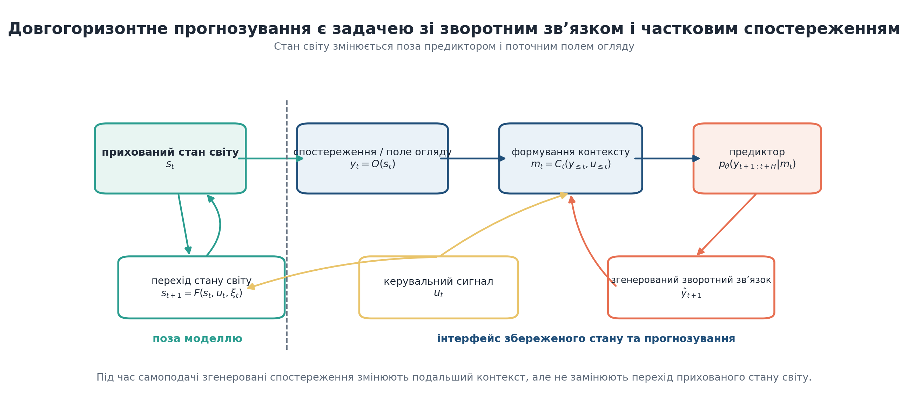
Рисунок 1.1 – Межі системи довгогоризонтного прогнозування відео. Джерело: авторська схема системи; маршрутизацію перевірено для цієї редакції.
Partial observation matters when a region leaves the viewport but continues to exist in the world. A later re-entry can require evidence older than a short dense context. Retaining a coarse older observation may extend potential access while losing identity detail. This distinction motivates both the controlled reach population and the separate identity endpoints; it does not presume that longer memory is always better. Comparable state/observation distinctions arise in physically constrained forecasting [47–49].
Під час навчання модель часто отримує еталонну послідовність, тоді як під час авторегресивного застосування її власний прогноз повертається на вхід. Після кожного кроку контекстне вікно зсувається: найдавніші елементи вилучаються, а новий прогноз займає їхнє місце [25–29]. Отже, починаючи з другого прогнозованого кадру, вхід уже залежить від попередніх виходів самої моделі. Цю самоподачу можна записати як рекурсію:
У цьому процесі потрібно розділяти рішення, які впливають на різні ланки причинного ланцюга:
Зміна режиму подачі може послабити розбіжність між навчанням і застосуванням, але не повертає подію, яку вже вилучено з пам’яті. Реверсивний часовий перехід змінює вартість передавання градієнта, але так само не збільшує досяжність збереженого стану. Саме політика контексту є центральною для ієрархічного пакета в розділі 3; просторова одиниця представлення визначає, якою ціною деталізації цю досяжність отримано.
Накопичення помилки в самоподаваному процесі не зводиться до додавання незалежних числових відхилень. Планове підмішування прогнозів під час навчання (scheduled sampling) і самокондиціювання зменшують розбіжність між еталонними та згенерованими входами [25–29], проте не відновлюють інформацію, якої вже немає у збереженому контексті. Якщо рекурентний перехід подано як , то мале збурення на ранньому кроці переноситься наступними переходами. У лінійному наближенні його масштаб визначається послідовним добутком матриць похідних, тобто якобіанів, уздовж згенерованої траєкторії [93]. Через це середня залежність похибки від горизонту може поєднувати якісно різні фази. У подальшому аналізі ранній інтервал авторегресії відокремлюється від можливої пізньої межі.
Похибка може виглядати оманливо стабільною. Якщо модель поступово усуває невизначені деталі переднього плану, її вихід здатний збігтися до простого фонового стану. Після цього середня піксельна похибка майже не зростає, хоча об’єкт уже втрачено. Стохастична модель створює іншу складність: вона може представляти кілька допустимих майбутніх станів, але отримати несприятливу оцінку точковою метрикою навіть тоді, коли один зі зразків є коректним. Для розмежування таких випадків потрібні явні показники та правила врахування кандидатів [130, 131, 155].
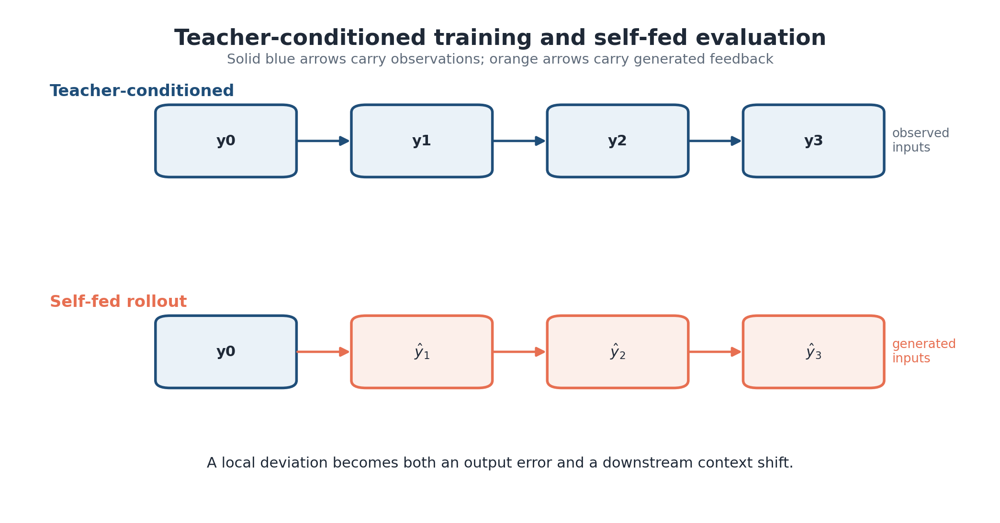
Рисунок 1.3 – Умовна рекурсія з учительською подачею та із самоподачею. За учительської подачі кожний перехід отримує еталонний попередній кадр; під час самоподачі прогноз повертається на вхід, тому його похибка впливає на всі наступні кроки. Схема пояснює різницю режимів, але не є кількісним результатом. Джерело: концептуальна схема дисертації.
Модель машинного навчання працює за скінченних обчислювальних і апаратних ресурсів. Обчислювальний бюджет визначає тривалість навчання й застосування, тоді як доступна пам’ять додатково обмежує розмір моделі, пакет паралельного навчання, довжину диференційованого графа та обсяг історії, доступної моделі прогнозування. Ці обмеження взаємодіють, але не є взаємозамінними. Для подальшого аналізу загальне використання пам’яті розкладається на п’ять складників:
Пам’ять параметрів і станів оптимізатора визначається переважно розміром моделі, точністю обчислень та алгоритмом навчання. Пам’ять активацій зберігає або відтворює проміжні значення, потрібні для градієнтів. Контекстна пам’ять чи пам’ять стану утримує історичну інформацію для прогнозування, а тимчасова пам’ять охоплює робочі області уваги, буфери алгоритму вибірки, декодовані кандидати та резервування фреймворку. Сума цих складників показує, чи достатньо апаратного ресурсу, але вони не є однією змінною проєктування [108].
The four-term accounting identifies the resource directly changed by each intervention. Retained evidence, internal activations, parameters/optimizer, and workspace must be measured separately. The current integrated architecture is a composition under evaluation; no total-memory advantage is inherited from earlier prototypes or multiplied component ratios.
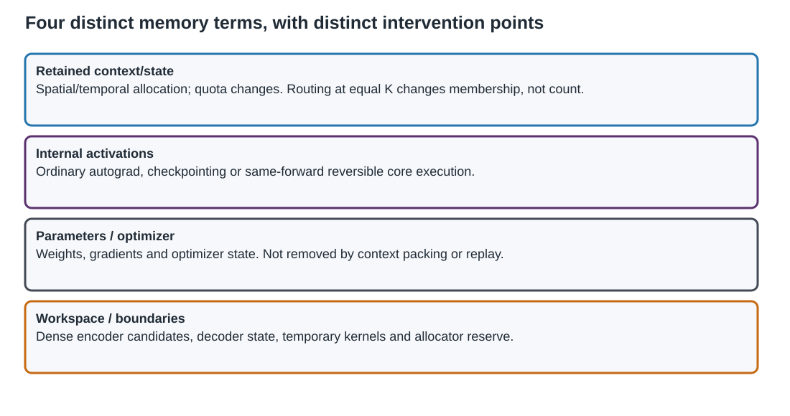
Figure D1-resources — Retained state, internal activations, parameters/optimizer, and workspace. Conceptual accounting only; ratios are not multiplied.
Оскільки кожне ресурсне втручання може змінювати інший прояв консистентності, результат описується не одним балом, а вектором втрат. Для прогнозованого відео та еталонного відео він має вигляд:
Компоненти , , , , та відповідають відповідно за кадрову якість, просторове покриття, ідентичність, траєкторію, зайвий передній план і міжрівневу відповідність. Вектор ваг задає важливість цих критеріїв для конкретної задачі. Позначимо через множину конфігурацій , які не перевищують заданих бюджетів контекстної пам’яті, пам’яті активацій та обчислювальної роботи. Тоді спільна задача оптимізації має вигляд
In equation (1.7), denotes model parameters, the context-allocation policy, and the execution/storage schedule. The feasible set contains only configurations satisfying the declared context-state, activation and computational-work budgets. Chapters 2–4 distinguish these interventions before considering composition. Sections 3.7 and 4.8 now specify the new integrated architecture and its pending evidence cells: they do not report a completed composition-performance test. Historical feasibility results refer to the superseded prototype archived in Appendix Е and do not transfer to the new model.
Ресурсні складники мають різні змінні масштабування. Пам’ять параметрів зростає разом із розміром моделі, пам’ять активацій – разом із диференційованим графом, а пам’ять контексту – разом з обсягом збереженої історії. Обчислювальна робота уваги залежить від довжини послідовності, що надходить до блока. Алгоритми уваги, оптимізовані з урахуванням обміну даними між рівнями пам’яті, зокрема FlashAttention [13], зменшують тимчасові витрати точної уваги, але не змінюють того, яку історію зберігає модель. Політика контексту може впливати і на збережений стан, і на навантаження уваги, тому коректне порівняння додатково фіксує представлення токенів, точність обчислень, розмір пакета та довжину цілі.
Токенний бюджет описує довжину інтерфейсу моделі, тоді як байтовий бюджет – фізичний обсяг збереженого стану. Авторське розрізнення цих величин потрібне тому, що в ієрархічних підходах грубий токен і детальний вектор прихованого простору можуть мати різну розмірність і нести різний корисний обсяг даних. Тому в розділі 3 окремо фіксуються кількість токенів і корисний обсяг у байтах.
Інтерпретація за принципом Парето також має залишатися дискретною. Перевірені пакети охоплюють лише скінченний набір бюджетів, тому за ними не можна відновити повну неперервну криву без додаткових припущень.
The method/configuration record is preserved in Appendix В (source Table 1.1). Облік ресурсів відповідає на питання, скільки історичної інформації система здатна утримати, але ще не визначає, яку властивість прогнозу потрібно зберегти. Тому наступний крок аналізу пов’язує кожен ресурсний дефіцит із конкретною спостережуваною відмовою консистентності.
Після визначення системи потрібно встановити, що саме означає коректний довгогоризонтний прогноз. У цьому підрозділі консистентність розкладається на кадрову якість, просторове покриття, ідентичність, траєкторію та відповідність між рівнями представлення; для кожної властивості окремо визначається спостережуваний тип помилки.
Консистентність не можна зводити до загальної візуальної якості. Об’єкт може рухатися правильною траєкторією й водночас втрачати ознаки ідентичності через розмиття або злиття з фоном. Можлива й протилежна ситуація: зовнішній вигляд залишається впізнаваним, але положення чи напрям руху стають помилковими. У сцені з домінантним фоном низька середня похибка здатна приховати навіть повне зникнення об’єкта переднього плану. Отже, показник має відповідати визначеному типу відмови, а не встановлювати саму її семантику.
Обмеження єдиного показника видно на прикладі поширених метрик. MSE вимірює поточкове відхилення, SSIM – локальну структуру [127], LPIPS – відстань у просторі глибоких ознак [128], а FID і FVD – статистичну відмінність розподілів [94, 129]. Кожне агрегування відкидає іншу частину інформації. Жоден із цих показників самостійно не встановлює, чи досі присутній конкретний об’єкт, чи виник зайвий передній план і чи відновлено вигляд, спостережений у віддаленому минулому.
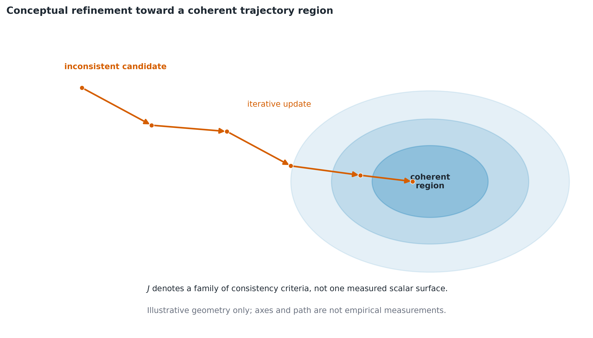
Рисунок 1.5 – Паралельна перевірка прогнозу за кількома критеріями консистентності. Стовпці є умовними прикладами, а позначки показують, які незалежні вимоги виконує кожний прогноз. Схема не задає порядку оптимізації, скалярної оцінки чи емпіричної шкали. Джерело: концептуальний рисунок із дисертації.
Рисунок 1.5 не описує рух кандидата до деякої «нижчої» чи «кращої» області. Він показує логічну умову прийнятності: прогноз може зберігати просторове покриття, але втрачати ідентичність, або відтворювати зовнішній вигляд, але порушувати траєкторію. Тому поліпшення одного критерію не гарантує поліпшення решти. У подальшому емпіричному аналізі контексти не називаються загалом «більш консистентними»; натомість установлюється, яку властивість кожний із них зберігає краще.
Найвиразніше обмеження агрегованого показника проявляється в розріджених сценах. Якщо більшість пікселів належить до однорідного фону, прогноз порожнього простору може мати прийнятне значення MSE для всього кадру, хоча рухомий об’єкт втрачено повністю. MSE, обчислена лише на еталонному передньому плані, підвищує вагу об’єкта, але може ігнорувати галюциновані області поза еталонною маскою [46, 51]. Помилка на об’єднаній масці охоплює обидві області, проте її знаменник уже залежить від прогнозу. Тому кадрові метрики надалі доповнюються прецизійністю, повнотою, частками пропущеного й зайвого переднього плану та кількістю зв’язних компонентів. Випадки з порожньою маскою визначаються до оцінювання.
Для кліпу та кандидата прогнозу незалежні аспекти подано вектором показників:
Тут характеризує кадрову якість, – просторове покриття, – збереження ідентичності, – правильність руху, а – появу зайвого переднього плану. Склад вектора залежить від задачі, але його принцип залишається незмінним: різні типи помилок не згортаються в один бал до того, як буде встановлено їхній зміст. Далі ці критерії вводяться від статичного зображення до часової послідовності.
Сучасні дифузійні моделі здатні створювати окремі зображення високої візуальної якості, однак правдоподібність одного результату ще не показує, чи збережено потрібний об’єкт, стиль або геометричну умову між кількома генераціями. Рисунок 1.6 (source; Appendix Е) зіставляє ці два рівні задачі. Статична панель демонструє різноманіття окремих результатів, а умовна відеопослідовність показує додаткову вимогу: властивості мають залишатися простежуваними між кадрами, зокрема після виходу об’єкта з поля зору.
See Appendix Е, source Figure 1.6, for the supporting illustration.
Попередній аналіз генерації зображень на основі дифузії відокремлював стиль або зовнішній вигляд, ідентичність об’єкта, форму або геометрію та запропоновану категорію концептуальної консистентності [133]. Геометрія стосується контуру, просторового розташування й структурних відношень. Концептуальна консистентність у значенні, запропонованому в [133], описує збереження семантичної ідеї вищого рівня між результатами, поверхневий вигляд яких може змінюватися. Класичні дослідження візуального представлення та пізніші оцінки моделей зору й мови показують, чому семантичну консистентність не можна встановити лише з пікселів [100–104]. Критерії перетинаються: ідентичність обличчя частково залежить від геометрії та текстури, а стилізована послідовність може зберігати концепцію попри зміну обох ознак.
See Appendix Е, source Figure 1.7, for the supporting illustration.
See Appendix Е, source Figure 1.8, for the supporting illustration.
The method/configuration record is preserved in Appendix В (source Table 1.2). Інтерфейси керування відрізняються моментом і способом внесення зовнішньої інформації: через вхід, внутрішній стан або адаптацію параметрів. У режимі «зображення-до-зображення» еталон подається під час кожної генерації [95]. DreamBooth і LoRA натомість кодують об’єкт або стиль шляхом прямої адаптації параметрів моделі [96, 97]. Повторювану ідентичність тоді можна генерувати без передавання повного еталону, але потрібні додаткові дані й ресурси для оптимізації. ControlNet вносить керувальний сигнал у вигляді країв, глибини, пози або сегментації [98]. Методи інверсії відновлюють представлення наявного зображення у прихованому або шумовому просторі й використовують його як початкову точку керування [114, 115]. StyleAligned та споріднені методи пов’язують ознаки уваги між зразками і допускають поєднання з іншими керувальними сигналами [99]. Для довгогоризонтного прогнозування визначальним є не загальний рейтинг цих підходів, а те, чи залишається їхнє свідчення доступним після виходу відповідного кадру з поточного вікна.
Розглянуті вище критерії сформовано переважно для статичних зображень. У відео до них додаються дві часові вимоги. По-перше, зміни між сусідніми кадрами мають бути неперервними. По-друге, вся послідовність повинна відтворювати очікувану динаміку: напрям і швидкість руху, збереження стану під час оклюзії та правильну повторну появу на довгому горизонті.
Локальна плавність не гарантує правильності довгої траєкторії. Невелике зміщення на кожному кадрі може не створювати помітного стрибка, але поступово відвести об’єкт від еталонного шляху. Так само об’єкт може зникнути й плавно з’явитися знову, проте вже з іншими ознаками ідентичності. Отже, часова неперервність є необхідною, але недостатньою умовою консистентного прогнозу.
Щоб відокремити правильність руху від плавності зображення, для кожного об’єкта розглядається множина моментів , у яких еталонний і прогнозований об’єкти можна зіставити. Нехай і позначають їхні еталонний та прогнозований центроїди в момент . Середня похибка траєкторії визначається як:
Формула (source 1.9) враховує просторове зміщення між зіставленими об’єктами, але сама не виявляє підміни їхніх ідентичностей. Тому правило зіставлення має бути стабільним у часі або явно враховувати ідентичність. Класифікатор ідентичності розв’язує іншу частину задачі: він може правильно розпізнати цифру, навіть якщо її положення суттєво помилкове. Лише спільне використання показників покриття, зіставлення, ідентичності та траєкторії дає змогу інтерпретувати поведінку об’єкта, що зберігається в часі.
Окреме правило потрібне для зниклого або незіставленого об’єкта. Якщо такі випадки просто вилучати з підрахунку, модель може отримати сприятливу оцінку ідентичності саме тоді, коли вона втратила об’єкт. У подальшому протоколі для них наперед задаються штрафи, а метадані генератора зберігають справжню ідентичність упродовж кліпу. Контекст до моменту зникнення містить прямі свідчення зовнішнього вигляду; тому повторна поява перевіряє, чи зберегла й використала їх модель. Парні порівняння та кілька початкових значень генератора випадкових чисел оцінюють стійкість результату, а еталон із прямим доступом до необробленої історії задає верхню межу доступності інформації [125].
Рисунок 1.9 узагальнює п’ять типових відмов: зміну зовнішнього вигляду, підміну ідентичності, втрату просторового покриття, відхилення траєкторії та появу зайвого переднього плану. Кожна з них може виникнути за поверхнево плавної послідовності, тому потребує окремого показника.
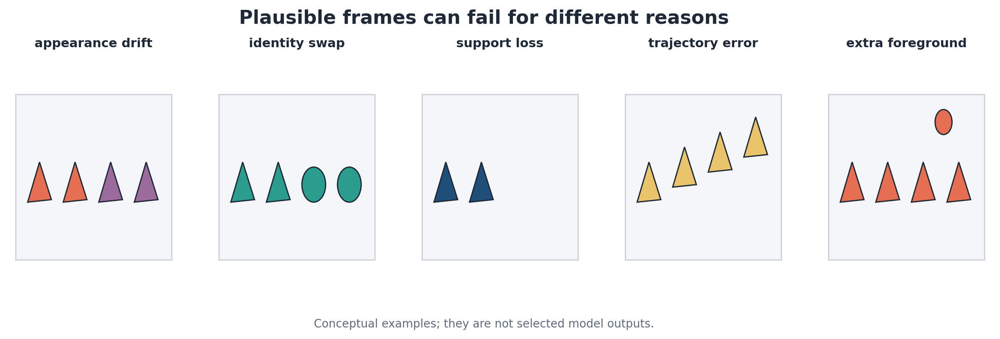
Рисунок 1.9 – Різні типи відмов із поверхнево правдоподібними кадрами.
Для бінарної еталонної маски переднього плану та прогнозованої маски одного показника перекриття недостатньо. Зокрема, порожні маски потребують окремого правила, а зайвий прогноз поза еталонною областю має штрафуватися так само явно, як пропущений об’єкт. Для непорожньої еталонної маски використовуються нормовані відносно її площі частки пропущеного й зайвого переднього плану:
У формулі (source 1.10) множина містить еталонні пікселі, які модель пропустила. Частка зайвого переднього плану визначається окремо як і враховує передбачені пікселі без еталонного відповідника. Обидві частки дорівнюють нулю лише тоді, коли відповідної помилки немає; може перевищувати одиницю, якщо зайва область більша за еталонний об’єкт. Рисунок 1.10 показує, як ці просторові показники доповнюють, але не замінюють оцінювання траєкторії та ідентичності.
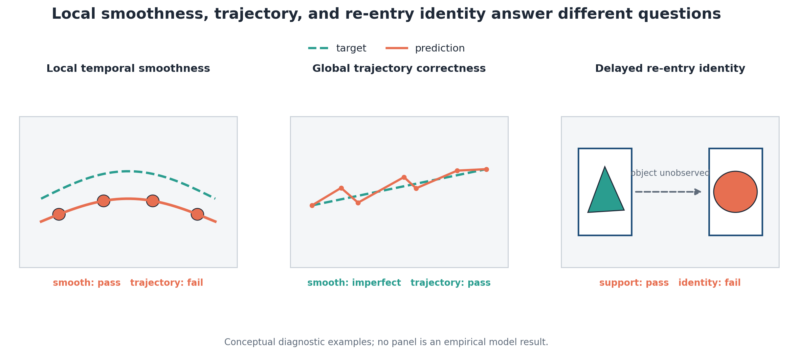
Рисунок 1.10 – Операціональне розмежування часової плавності, правильності траєкторії та ідентичності повторного входу. Джерело: концептуальний рисунок з дисертації.
Отже, довга часова консистентність потребує не лише плавного декодування кадрів, а й доступу до свідчень, які могли зникнути з недавнього вікна. Ієрархічний контекст може розширити такий доступ за обмеженого бюджету, зберігаючи давні кадри у грубішому представленні. Водночас поява кількох рівнів породжує нову вимогу: грубий стан і детальний прогноз мають описувати ту саму подію.
Ієрархія додає до оцінювання ще один вимір, але лише тоді, коли система має чітко визначені рівні та відоме відображення між ними. Потрібно встановити, які рівні представляють ту саму подію, як співвідносяться їхні часові й просторові координати та яку інформацію зберігає проєкція для порівняння. Багатомасштабні архітектури демонструють користь повільних і швидких або грубих і детальних представлень [20, 35–37, 150], проте сама наявність цих рівнів не гарантує їхньої взаємної консистентності.
Нехай і є станами грубого та детального рівнів у момент , а і – відповідними декодерами. Оскільки їхні просторові розміри можуть відрізнятися, оператор приводить детальний результат до масштабу грубого рівня. Тоді міжрівневу розбіжність можна записати через функцію відстані :
Найпростіша ієрархія має два рівні: грубий рівень зберігає структуру сцени або давнішу історію, а детальний уточнює локальні ознаки. Трирівнева схема додає проміжне представлення, яке може пом’якшити різкий перехід між масштабами, але водночас збільшує кількість інтерфейсів, на яких можлива суперечність. Формула (source 1.11) безпосередньо описує дві шкали; для трьох і більше рівнів аналогічні розбіжності обчислюються між сусідніми або наперед визначеними парами.
Для ієрархічної моделі в роботі визначено три перевірки. Спочатку кожен рівень оцінюється за властивістю, яку він має зберігати: грубу карту заповнення, наприклад, не можна штрафувати за відсутність дрібної текстури. Далі перевіряється інформація, спільна для рівнів. Нарешті, детальний вихід порівнюється з еталонними даними, адже внутрішньо консистентна ієрархія все одно може описувати неправильне майбутнє. У завершених експериментах основний висновок спирається на декодовані показники та ефекти для конкретних пар пакетів. Формула (source 1.11) задає можливий міжрівневий критерій, але без окремого зареєстрованого тесту він не подається як емпіричний результат.
See Appendix Е, source Figure 1.11, for the supporting illustration.
У дисертації досліджено дві різні реалізації ієрархічного принципу. V-BLT у розділі 2 розподіляє обробку одного растрово-байтового представлення між локальним і глобальним рівнями. Модель розділу 3 натомість зберігає грубу й детальну часові історії для розширення досяжності контексту. Їх поєднує залежність розподілу ємності від масштабу, але вони не мають спільного тензорного шляху й не перевірялися як одна наскрізна архітектура.
Article [A3, 133] contributes a conceptual synthesis, not merely an illustration collection. Appearance/style consistency concerns surface characteristics; identity concerns which particular object is preserved; geometry concerns shape and spatial arrangement; concept consistency concerns the intended semantic entity or relation. A method can preserve one while changing another. In video, the same distinctions must be tested across time, disappearance, re-entry, and self-feedback.
The review's control interfaces organize where evidence enters a generative system. Input conditioning keeps a reference available during generation. Weight adaptation stores instance or style information in parameters. Structural conditioning supplies geometry such as an edge or pose. Inversion connects editing to a recovered source trajectory. Attention sharing couples features across generated samples. These are alternative information interfaces, not consecutive stages of one algorithm. A supplied future pose is privileged information, not a learned memory of an unseen future.
Static diffusion step and physical video time are separate coordinates. Successful denoising of one image does not establish temporal consistency. Appearance can persist while trajectory fails, and coverage can improve while identity deteriorates. This is why the dissertation measures the information level that a hierarchy is expected to preserve: coarse support/trajectory and fine identity/texture need distinct endpoints.
The detailed diffusion, image-to-image, ControlNet, inversion, and StyleAligned tutorial sequence and its original publication assets move to Appendix Е, with their original sources and permissions. The synthesis stays here. The resource map below connects these ideas to the dissertation's own interventions without claiming that a static control method solves autonomous long-term video memory.
Попередній підрозділ визначив типи помилок, а цей пов’язує їх із трьома різними ресурсними причинами. Спочатку розглядається пам’ять активацій довгого диференційованого процесу, потім нерівномірний розподіл просторової інформації та, нарешті, обмежена досяжність збереженої історії. Завершальна карта показує, яке втручання й який доказ належать кожному вузькому місцю.
Часову модель можна навчати щонайменше у двох режимах. Трансформер здатний одночасно опрацювати все навчальне вікно з каузальною маскою; тоді часові позиції утворюють широку послідовність у межах одного прямого проходу. Інший режим відтворює сам процес застосування: вихід одного кроку переходить на вхід наступного, а повторне використання модуля створює довгий рекурентний граф. TempVerseFormer використовує трансформерні блоки всередині часової моделі, але його реверсивне відтворення стосується саме повторюваного стану, через який передається градієнт.
Зворотне поширення в часі (BPTT, backpropagation through time) розгортає рекурентний процес у спрямований ациклічний граф [28, 29, 105]. Нехай один часовий крок створює набір активацій обсягом , потрібний для локального обчислення градієнта, а позначає кількість диференційованих кроків. Якщо всі такі набори зберігаються до зворотного проходу, їхня пам’ять зростає у першому наближенні як:
Формула (1.12) описує лише часову стрічку активацій: параметри, градієнти, стан оптимізатора та робочі буфери залишаються окремими складниками. Рисунок 1.22 показує, як кожен новий крок додає до стрічки ще один набір проміжних значень, якщо їх не відтворювати повторно.
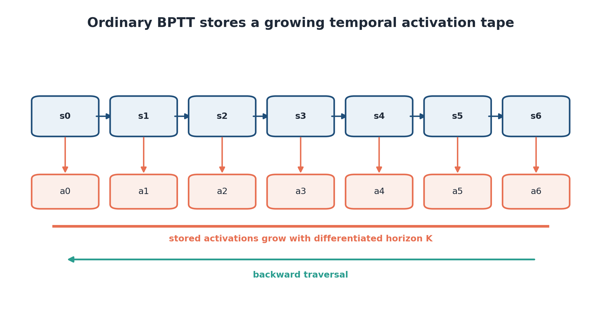
Рисунок 1.22 – Зростання стрічки активацій під час часового зворотного поширення.Найпростіший спосіб обмежити пам’ять полягає в усіченні BPTT: стан між сегментами передається вперед, але градієнт зупиняється на їхніх межах. Це зменшує довжину графа, проте віддалені залежності вже не впливають на ранні кроки оптимізації. Збереження контрольних точок має інший компроміс. У пам’яті залишаються лише вибрані граничні стани, а внутрішні ділянки графа повторно обчислюються під час зворотного проходу [30, 31, 108, 109]. За незмінного графа та детермінованого відтворення цільова функція не змінюється, але зростає обчислювальна робота.
Реверсивне з’єднання використовує структуру самого блока. Якщо його вхід можна відновити з виходу, проміжні активації не потрібно зберігати впродовж усього прямого проходу [32, 92]. Під час зворотного поширення вони реконструюються безпосередньо перед обчисленням локального градієнта, а потім звільняються. Такий механізм не робить увесь обчислювальний тракт оберненим: нереверсивні проєкції, кодер, декодер і межі функції втрат усе одно потребують окремого обліку. У розділі 2 цей компроміс досліджено на прикладі TempVerseFormer.
Контрольною змінною в такому порівнянні є диференційований горизонт, а не лише кількість згенерованих кадрів. Усічення змінює шлях градієнта, контрольні точки змінюють правило зберігання й повторного обчислення, а реверсивне ядро відновлює лише стани в межах заявленого оборотного інтерфейсу. Тому практичне порівняння має вимірювати пікову пам’ять і час за однакових горизонту, розміру пакета, числової точності та інтерфейсу моделі. Інакше скорочення часової стрічки може бути приховане сталими витратами, які не залежать від досліджуваного механізму.
Більшість візуальних трансформерів перетворює кадр на регулярну сітку прямокутних, часто квадратних, фрагментів. Вони можуть не перекриватися або частково перекриватися; у відео до просторових розмірів іноді додається часовий розмір. Фіксована сітка проста, придатна до паралельної обробки й забезпечує передбачувану довжину послідовності [69–71]. Для кадрів розміру і неперекривних просторових патчів кількість токенів становить:
Округлення вгору враховує крайові області, розмір яких не кратний розміру патча. Формула (1.13) також показує обмеження фіксованої сітки: кількість токенів визначається геометрією кадру, а не інформаційною складністю окремих областей.
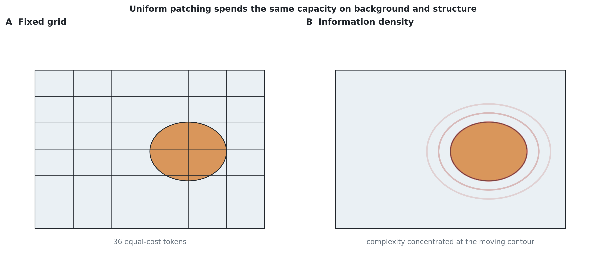
Рисунок 1.23 – Рівномірний просторовий розподіл на нерівномірній сцені.Рисунок 1.23 ілюструє цю невідповідність. Однорідний фон може займати більшу частину кадру й отримувати більшість токенів, хоча складна межа рухомого об’єкта потребує детальнішої обробки. Отже, просторова щільність інформації потенційно може керувати розподілом як пам’яті, так і обчислень. У цій роботі як сигнал локальної складності розглянуто прогнозну ентропію V-BLT; вона може керувати вибором розміру регіонів або частоти їх обробки, але динамічний розподіл не належить до підтверджених результатів опублікованого методу.
У категоріальній моделі таким сигналом може бути прогностична ентропія. Для сталої й добре передбачуваної області розподіл вихідного байта концентрується, тоді як біля рухомої межі або за кількох можливих майбутніх станів він стає ширшим. Проте висока ентропія може виникати також через недостатню модель, обмежений контекст або мультимодальність. Тому вона не є автоматично каліброваною невизначеністю і сама по собі не доводить, що адаптивна сітка поліпшить співвідношення між якістю та вартістю.
Динамічний розподільник додатково потребує правил причинного агрегування, фіксованого обчислювального бюджету, операцій маршрутизації та об’єднання, а також наскрізного порівняння з тією самою моделлю на фіксованій сітці. У V-BLT цей етап не реалізовано. Перевірено фіксовані пакети растрових байтів, багатовимірне позиційне кодування та відтворювані карти ентропії. Ці карти мотивують майбутню адаптацію, але поки що залишаються виміряним сигналом, а не доведеною політикою розподілу.
У локально–глобальній ієрархії V-BLT є й другий розподіл: локальні модулі обробляють детальні байти, а глобальний модуль працює зі стислим набором представлень патчів. Це скорочує глобальну послідовність, але реальна економія залежить також від локальної роботи, переміщення даних, використання апаратних ресурсів і форми пакета, а не лише від заявлених GFLOPs. Опубліковані точкові оцінки підтверджують працездатність архітектури, але не встановлюють універсального закону масштабування [44, 45].
Просторова ієрархія визначає, скільки деталей обробляється всередині кадру. Для довгогоризонтного прогнозування постає інше питання: наскільки давню подію взагалі може адресувати збережений контекст. Нехай у момент прогнозування пакет містить кадри або рівні, прив’язані до множини початкових моментів . Номінальна досяжність пакета визначається віком найдавнішої з цих прив’язок:
Формула (1.14) описує геометричну можливість доступу, а не якість збережених даних. Якщо подія відбулася раніше за , пакет не містить прямої прив’язки до неї. Якщо вона входить у цей інтервал, модель усе одно може втратити потрібні деталі під час стискання або не використати доступне свідчення. Рисунок 1.24 показує перший, найпростіший випадок: релевантний кадр уже залишив коротке щільне вікно.
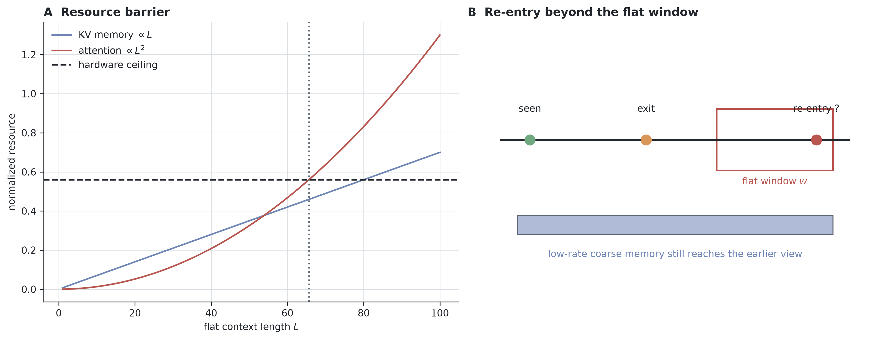
Рисунок 1.24 – Релевантне спостереження поза щільним вікном детального контексту.За фіксованої кількості токенів досяжність і деталізація конкурують. Пакет може зберігати більше давніх кадрів у грубому масштабі або менше недавніх кадрів у детальному масштабі; часовий відбір також може бути рідшим. Тому два пакети однакового розміру здатні адресувати різні події через різну геометрію прив’язок. Якщо об’єкт залишається в межах недавнього вікна, довший контекст може не давати користі. Якщо релевантна подія передує досяжності обох пакетів, жоден із них не має інформаційної переваги. Саме тому агрегована якість є допоміжним доказом, а причинний тест потребує популяції, де досяжність пакетів справді відрізняється.
Сам факт зберігання даних ще не означає, що модель здатна їх використати. У межах авторської методики твердження про довготривалу пам’ять розкладається на три умови. Перша – досяжність: релевантне спостереження входить до фактичних прив’язок пакета. Друга – точність відтворення: грубий або розріджений рівень зберіг потрібну інформацію. Третя – повторне використання: модель застосувала доступне свідчення в прогнозі. Геометрія встановлює лише першу можливість і не доводить безвтратного кодування чи успішного вилучення.
Звідси випливає умовний характер переваги ієрархії. Коли щільне вікно не досягає потрібної події, довгий грубий потік може зберегти її положення або загальний рух. Якщо обидва пакети вже охоплюють подію, визначальним стає обсяг збережених деталей. Тому дослідження не шукає універсальну архітектуру-переможця, а перевіряє окремі точки межі «досяжність–точність відтворення».
Spatial hierarchy provides coarse coverage and selected detail. Temporal hierarchy allocates resolution and slots by age, spending fewer tokens on some older observations. Temporal overlap describes whether an age is represented at more than one level: nested ownership duplicates scale coverage, whereas exclusive ownership separates supports; a residual representation changes what the fine stream means.
Computational hierarchy and reversibility concern stored internal activations. A reversible core reconstructs intermediate values for differentiation; it neither extends the observed history nor restores details discarded by a codec. Dynamic space–time routing assigns a fixed fine-detail quota to physical locations and times. It changes allocation quality at equal quota, and yields a memory advantage only if a smaller real retained state preserves acceptable quality.
The opportunity is to use spatial savings for temporal reach, not to conflate spatial and temporal abstraction. A coarse older token can retain coverage while losing identity. Likewise, a long observed context and a long autoregressive forecast are different axes. The former is tested by the new TRB endpoint study; the latter requires actual self-feeding, supplied by the historical rollout evidence or a separately registered new evaluation.
An analytic token ratio is not a GPU-memory ratio. Parameters/optimizer and temporary workspace coexist with retained state and activations. The same memory resource must be compared under a matched protocol; independently measured component ratios do not multiply into an integrated saving.
See Figure D1-resources in Section 1.1.3 for the four-term accounting.
For partially observed prediction, first ask whether relevant evidence remains available; then ask whether its detail and learned use suffice. When the bottleneck is training activations, compare ordinary autograd, checkpointing, and same-forward reversible execution. When it is retained context, compare explicit token/byte budgets. The intervention and the evaluation endpoint must name the same resource.
Огляд організовано не за назвами архітектур, а за тим, яким ресурсом або конструктом вони керують. Такий порядок дає змогу відокремити методи довгого часового моделювання від методів економії активацій, просторового перерозподілу токенів і збереження давньої історії, а наприкінці сформулювати прогалину, яку перевіряють наступні розділи.
Методи прогнозування відео відрізняються не лише типом блока, а й способом організації часу. Рекурентні моделі послідовно оновлюють прихований стан, моделі з прямим просторово-часовим перетворенням обробляють навчальне вікно як один тензор, а трансформери представляють кадри або їхні фрагменти як послідовність з каузальними обмеженнями. Для довгого горизонту важливо розділяти два питання: яку історію зберігає модель під час прогнозування і через яку частину часового процесу проходить градієнт під час навчання.
Рекурентні відеопредиктори стискають попередні спостереження у прихований стан. ConvLSTM переніс операції LSTM у згортковий простір і дав змогу зберігати просторову структуру в часовому переході [137]. PredRNN і PredRNN++ розвинули окремі шляхи просторової та часової пам’яті, E3D-LSTM використав тривимірну рекурентну обробку, а PhyDNet розділив фізично інтерпретовану й залишкову динаміку [138–140, 152]. Спільною перевагою цього сімейства є компактний стан; спільним ризиком – поступова втрата конкретної давньої події всередині такого стискання.
Нерекурентні моделі показали, що сильний прогноз усередині фіксованого вікна не обов’язково потребує покрокового оновлення прихованого стану. SimVP використовує схему «кодер–часовий транслятор–декодер» [141], TAU поєднує просторову увагу з моделюванням часових змін [153], а Earthformer організовує взаємодії за допомогою кубоїдної уваги [142]. Трансформер відрізняється від класичної рекурентної моделі можливістю паралельно зіставляти позиції в навчальному вікні. Водночас той самий трансформерний модуль можна застосовувати рекурентно між послідовними станами або вікнами; саме така межа між трансформерним блоком і часовим ланцюгом мотивує TempVerseFormer у розділі 2.
Моделі світу розширюють це завдання від прогнозування кадрів до навчання внутрішньої динаміки, придатної для уявного розгортання й керування. Частина таких моделей підтримує компактний рекурентний стан [64–67, 132], тоді як генеративні відеомоделі використовують варіаційні приховані змінні, авторегресію, дифузію або маскування [38, 42, 43, 50, 53–63, 74, 151, 156–158]. Їх зазвичай порівнюють за якістю прогнозу або керування. Пам’ять активацій і точна досяжність конкретної давньої події часто залишаються супутніми, а не центральними показниками.
Коротковіконне навчання обмежує диференційований граф, але не оптимізує повну багатокрокову втрату. Навчання за винагородою або її диференційованим наближенням змінює цільову функцію, проте саме по собі не визначає, як зберігати часові активації чи контекст [117, 118]. Якщо градієнт має проходити через довший ланцюг, виникає окремий системний вибір між збереженням, повторним обчисленням і реверсивним відтворенням станів. Отже, дослідницька прогалина полягає не у відсутності ще одного часового блока, а у вимірюванні того, який ресурс обмежує обраний режим і якою є ціна його зменшення.
Токенізація фрагментів перетворює регулярні області зображення на послідовність, придатну для трансформера [69]; у відео патч додатково може охоплювати часовий інтервал [70, 71]. Фіксована сітка передбачувана за вартістю, але однаково обробляє інформативні й однорідні області. Тому адаптивні методи змінюють різні частини цього процесу. Динамічне обрізання вилучає токени після оцінювання їхньої важливості, TokenLearner формує компактний набір навчених токенів, адаптивна глибина припиняє обробку окремих прикладів або токенів, а об’єднання зливає подібні представлення [143–146]. NaViT підтримує різні співвідношення сторін у спільній послідовності, тоді як FlexiViT навчає модель працювати з кількома розмірами патчів [147, 148]. Ці підходи демонструють різні способи перерозподілу обчислень, але не дають автоматичного причинного правила для поділу конкретного відеокадру.
У мовних моделях дискретні одиниці зазвичай визначає словник токенізатора. Для зображень і відео аналогічну роль часто виконує кодова книга векторного квантування: кодер відображає локальну область у найближчий дискретний код, а трансформер прогнозує послідовність таких кодів [73]. Перевагою є коротша послідовність; обмеженням – залежність від навченої кодової книги та її похибки реконструкції. Байтова модель обирає іншу крайність і прогнозує елементарні дискретні значення без окремого семантичного словника.
У BLT текстові байти спочатку групуються локальним модулем у патчі зі змінним інформаційним навантаженням. Глобальний трансформер працює з коротшою послідовністю представлень патчів, після чого локальний декодер повертає передбачення на рівень байтів [72]. V-BLT переносить схему «локальний–глобальний–локальний» на байти каналів растрових пікселів і додає багатовимірні координати простору та часу [134]. Категоріальний розподіл для кожного вихідного байта дає змогу безпосередньо обчислювати прогностичну ентропію. Багатовимірне ротаційне кодування зберігає відносні фазові відношення вздовж кожної осі [106, 107], проте саме по собі не визначає оптимального поділу на регіони.
Отже, V-BLT мотивується двома окремими питаннями. Перше стосується того, чи може локально-глобальна байтова ієрархія прогнозувати відео без навченої візуальної кодової книги. Друге – чи містить вихідний категоріальний розподіл просторово структурований сигнал складності, придатний для майбутнього адаптивного поділу. Архітектуру та межі цих тверджень докладно розглянуто в §2.3; у цьому розділі вони потрібні лише для постановки просторової ресурсної задачі.
Довгий контекст можна підтримувати чотирма базовими способами: розширювати щільне вікно, стискати давні стани, знаходити вибрані спогади за запитом або оновлювати частину пам’яті повільніше. Transformer-XL реалізує перший крок до явної пам’яті, кешуючи приховані стани попередніх сегментів [14]. Compressive Transformer додає до недавнього кешу стиснену давню пам’ять [15]. Memorizing Transformers змінює не форму зберігання, а правило доступу: потрібні ключі й значення знаходяться за наближеною близькістю [16]. Ці механізми збільшують доступний горизонт різними шляхами, тому однакова назва «довгий контекст» не означає однакової інформації чи вартості.
Багатошвидкісні моделі заздалегідь розподіляють стан між часовими масштабами. Clockwork RNN оновлює групи прихованих одиниць із різними періодами [33], Variational Temporal Abstraction навчає приховані сегменти змінної тривалості [34], а Clockwork VAE представляє відео на вкладених часових рівнях [20]. MSPred також використовує явні просторово-часові масштаби в рекурентному прогнозуванні [150]. Спільна ідея полягає в тому, що не вся інформація потребує однакової частоти оновлення.
У сучасних моделях відеосвіту пам’ять дедалі частіше стає окремою підсистемою. Одні підходи подовжують послідовну модель простором станів [22], інші стискають просторову пам’ять світу [23] або додають вилучення, опорні стани, навчувані запити й геометрично організований доступ [24, 79–81]. Memory Maze, MBench і MemoBench оцінюють різні прояви пам’яті [68, 82, 83], але їхні задачі не завжди дають точну відповідь, чи входила конкретна давня подія до контексту конкретної моделі.
Найближчим архітектурним аналогом до грубо-детального принципу є MilliVid, де ієрархічні представлення у прихованому просторі підтримують довгогоризонтну консистентність [37]. Водночас WorldPack переважно стискає просторову пам’ять [23], а методи з вилученням або опорними станами змінюють правило доступу [24, 79–81]. Отже, архітектурна новизна не може формулюватися як сам факт існування ієрархії. Невирішеним залишається контрольоване зіставлення пакетів за бюджетом і точна перевірка режиму, у якому додаткова досяжність справді визначає результат.
Звичайна оцінка якості не показує, чи перевага довгого контексту виникла саме через доступ до давнішої події. Для причинного зіставлення потрібні сцена з відомою історією, точні часові прив’язки та пара пакетів, один із яких бачить подію, а інший – ні. Протокол розділів 3–4 будується навколо цієї умови й додатково перевіряє зворотну межу: що відбувається після того, як обидва пакети вже мають достатню досяжність.
Огляд виявляє п’ять різних ліній контролю. Усічення графа, контрольні точки та реверсивні блоки керують збереженими диференційованими активаціями; їх потрібно оцінювати за піковою пам’яттю, додатковою роботою та відповідністю градієнтів [28–32, 92]. Багатомасштабні кодери, обрізання, навчені токени, об’єднання й змінні патчі перерозподіляють просторову або глобальну роботу; для них потрібне зіставлення якості з фактичною кількістю токенів чи FLOP [71, 72, 143–148]. У цій лінії дисертація додатково відокремлює виміряний ентропійний сигнал V-BLT від ще не перевіреної адаптивної політики поділу.
Кешована, стиснута, вибірково отримана, рекурентна та ієрархічна пам’ять керує тим, яку історію можна адресувати і з якою деталізацією вона зберігається [14–24, 33–37, 79–83]. Звичайного показника якості тут недостатньо: потрібна популяція, у якій відомо, що релевантна подія доступна одному пакету й недоступна іншому за зіставленого бюджету. Саме так у розділах 3–4 перевіряється різниця досяжності та зворотна інверсія після того, як детальний плоский пакет уже охоплює потрібне минуле.
Планове підмішування прогнозів, самокондиціювання й цілі на розгортанні керують розбіжністю між навчанням і самоподачею, але не визначають самі по собі ні обсяг збереженої історії, ні пам’ять активацій [25–29]. Окремо покадрові, перцептивні, розподільчі та об’єктні метрики керують лише конструктом оцінювання [94, 120–131]. Тому протокол має бути чутливим до конкретної відмови, ураховувати хибнопозитивні результати й виконувати статистичне виведення на рівні незалежних кліпів.
Отже, література не утворює єдиного рейтингу «методів пам’яті». Кожна група змінює іншу величину й потребує іншого доказу. Це розмежування визначає структуру наступних розділів і не дозволяє підмінити результат однієї ресурсної гілки результатом іншої.
Spatial token sparsification such as DynamicViT changes which image tokens reach later processing [176]; it does not by itself establish temporal memory. Temporal subsampling changes the ages retained at a fixed spatial representation. Multiscale memory and clocked latent models distribute representation across scales or update rates [15, 20]. Activation checkpointing recomputes graph segments, whereas reversible blocks reconstruct specified internal states [30, 31, 175]. These methods act at different interfaces and should not be compared by one unnamed “memory reduction.” The unresolved question here is the observed quality–resource operating region when those interfaces are specified and, later, composed.
Завершальний підрозділ перетворює попередній системний аналіз на перевірні вимоги й гіпотези. Спочатку формулюються умови коректного порівняння, далі кожна з них прив’язується до дослідницької гілки, після чого окреслюються твердження, які мають бути підтверджені або обмежені експериментами.
Попередній аналіз виявив сім умов, без яких порівняння довгої пам’яті легко сплутати зі зміною моделі або метрики:
У сукупності ці вимоги задають порядок аналізу. Причинна семантика й облік ресурсів визначають допустимі порівняння; повнота показників визначає, що саме вважається успіхом; цільова популяція та модель невизначеності показують, чи ідентифіковано механізм. Лише після фіксації цих умов порівняння пакетів може обґрунтувати правило проєктування.
Остання вимога стосується не лише рисунків у рукописі, а й доказового запису. Стан генератора випадкових чисел, кроки вибірки, ідентичність кодека, призначення набору даних та хеш контрольної точки є частиною визначення експерименту, якщо вони можуть змінити висновок. Таблиці й рисунки, на яких ґрунтуються твердження, мають генеруватися із заморожених артефактів. Захищені набори даних потребують журналів призначення та доступу, щоб статус незміненої контрольної вибірки залишався перевірним.
H1 asks whether, at low retained budgets, hierarchy reduces horizon-4 foreground error when relevant distant observed evidence would otherwise be excluded. H2 asks whether the best cross-level distribution depends on budget rather than on a single hand-selected package. H3 asks whether registered additional levels and ownership packages justify their displaced detail and other architectural changes. H4 asks how fine space–time placement preserves recent motion, distributed anchors, or information-rich regions.
H5 asks whether internal reversibility reduces training activation storage for the same forward function. H6 asks whether dynamic routing improves allocation at fixed quota and permits a smaller measured state within a declared quality tolerance. H7 asks whether full composition is competitive under matched OpenSTL protocols and improves the measured quality–memory frontier. These are hypotheses, not assumed positive results.
A separate rollout question asks whether selected context policies remain useful after their own predictions update memory over many windows. H1 does not answer it. Historical E5/E6 provide self-fed evidence, including negative boundaries; a selected-checkpoint v2 rollout would need separate registration and authorization without retraining the 86-run matrix.
H1–H4 connect to the controlled FRT/ALC/CEX/LVL/OVR/STS families and selected confirmation. H5–H7 connect to same-forward profiles, separately trained development ablations, quota/routing diagnostics, and matched external results. A missing comparison narrows the claim. The configuration/evidence registries make these dependencies explicit before results are inserted.
Довгогоризонтне прогнозування відео є частково спостережуваним процесом із самоподачею. Модель бачить кадри, а не повний стан світу, і її власні виходи стають частиною наступних входів. Тому консистентність визначається окремо для зовнішнього вигляду, ідентичності, геометрії, просторового покриття, траєкторії, зайвого переднього плану та відповідності між рівнями. Агрегована якість кадрів залишається потрібним показником, але не виявляє кожної помилки, важливої після зникнення й повторної появи об’єкта.
Для центральної проблеми довгогоризонтної консистентності виокремлено три ресурсні обмеження. Пам’ять активацій зростає вздовж диференційованого часового ланцюга, рівномірна просторова токенізація може нераціонально розподіляти ємність усередині сцени, а збережений контекст обмежує доступні минулі спостереження. Для цих інтерфейсів у літературі запропоновано різні рішення: контрольні точки й реверсивні обчислення обмінюють збереження активацій на повторне обчислення; адаптивні або ієрархічні представлення змінюють просторову токенізацію та обсяг глобальної обробки; стиснена, доступна за запитом, рекурентна та багатошвидкісна пам’ять розширює часовий доступ. У дисертації головним архітектурним рішенням є грубий і детальний контекст, а два інші методи знімають обмеження його можливого масштабування.
Для подальших розділів зафіксовано чотири робочі поняття. Досяжність визначає, чи входить потрібне минуле до фактичних часових прив’язок. Точність відтворення характеризує деталі, що збереглися в доступному представленні. Повторне використання означає, що модель справді застосувала доступні свідчення у прогнозі. Консистентність оцінюється за конкретною властивістю задачі, а не одним універсальним балом. Лише спільне виконання цих умов дозволяє пов’язати результат з механізмом пам’яті.
Наступний розділ розглядає два допоміжні напрями в межах цієї системної логіки. TempVerseFormer відповідає на питання, як зменшити зберігання активацій, коли градієнт має пройти через довгий часовий ланцюг. V-BLT досліджує ієрархічне байтове представлення та сигнал просторової складності. Після цього розділ 3 переходить до центральної архітектурної задачі: як сформувати грубий і детальний контекст, щоб за фіксованого бюджету зберегти давнішу історію й водночас виміряти ціну втраченої деталізації.
У розділі використано положення оглядової публікації автора про критерії та інтерфейси забезпечення консистентності генерації [133]. Інші праці автора згадано лише настільки, наскільки це потрібно для постановки задач наступних розділів; їхні методи й експериментальні результати тут не переказуються.
У першому розділі довгогоризонтну консистентність за обмеженої пам’яті визначено як одну проблему з трьома обмеженнями. Центральне з них стосується історії, доступної навченому предиктору під час автономного застосування; його безпосередньо розв’язує ієрархічний контекст розділу 3. Тут досліджено два чинники, здатні обмежити масштабування такого рішення: стрічку активацій під час передавання градієнта через тривалий часовий процес і розподіл ємності представлення в межах кадру.
На системному рівні методи діють на різних інтерфейсах. Реверсивні часові обчислення замінюють зберігання частини проміжних станів їхнім відкладеним відтворенням під час зворотного проходу. Vision Byte Latent Transformer (V-BLT) із багатовимірним ротаційним позиційним кодуванням реалізує локально–глобальну ієрархію, а прогнозна ентропія надає внутрішній сигнал просторової складності. У центральному порівнянні пакетів ці компоненти не змінюють предиктор, щоб не змішувати причинні ефекти. Їхні сумісні принципи пізніше перевірено у спрощеному інтеграційному прототипі, чітко відокремленому від опублікованих експериментів.
Підрозділ визначає дані, на яких можна окремо спостерігати часову закономірність, просторову складність і похибку представлення. Спочатку описується процедурне формування послідовностей, потім два класи контрольованого обертання, а наприкінці – роль кожного набору даних і межа допустимого узагальнення.
The procedural toolkit defines object geometry, motion, visibility, and rendering conditions so that controlled 2-D rotations and 3-D polycube sequences can test published methods [171]. These datasets form a ladder of representation and motion difficulty rather than interchangeable samples from natural video. The representative sequences and dataset-ladder figure remain below; exhaustive generator equations, parameters, and the secondary gallery are preserved in Appendix Е/В. The published numerical comparisons retain their original protocol and cannot be retroactively pooled with TRB or OpenSTL integration results.
Спільним процедурним прикладом у дослідженнях часової динаміки та байтового представлення є двовимірна фігура, що обертається у кадрі. Кожна послідовність починається з випадково згенерованої геометрії об’єкта та початкової орієнтації. Об’єкт залишається в центрі, камера нерухома, а орієнтація змінюється у дискретні моменти часу. Нехай позначає кут повороту на кроці , а – сталий кутовий приріст за один кадр. Тоді для режиму з постійною швидкістю
Знак визначає напрямок обертання. В експериментах із часовим моделюванням його модуль випадково обирався в діапазоні від до за крок. Додаткові режими змінювали величину або знак : фігура прискорювалася, уповільнювалася, коливалася між напрямками, тимчасово зупинялася або поєднувала ці зміни. Кадри мали формат RGB і розмір ; контекст містив 12 кадрів, навчальний горизонт поступово зростав від одного до п’яти кроків, а оцінювання охоплювало 12 прогнозованих кадрів [135]. Публічний набір інструментів для простих фігур містить дво- та тривимірні процедурні генератори, метадані й команди для відтворення цієї родини наборів даних [171]. Рисунок 2.1 показує один із двовимірних прикладів.
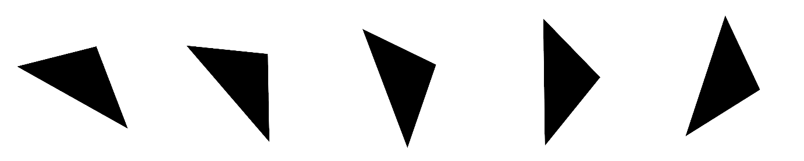
Рисунок 2.1 – Процедурно згенерована обертова двовимірна фігура.Тривимірна тестова модель збільшує структурну варіативність, не відмовляючись від процедурного контролю. Полікуб складається з з’єднаних гранями одиничних кубів, обраних із канонічних форм. Об’єкт центрується у сцені з фіксованою камерою та отримує випадкові початкові обертання навколо всіх трьох осей. Орієнтацію позначено вектором , а випадково вибрану кутову швидкість — . Її оновлення має вигляд
На відміну від плоского силуету, полікуб під час обертання почергово відкриває та приховує частини поверхні. Для правильного прогнозу модель має зберігати інформацію про взаємне розташування кубів, одночасно враховуючи самоперекриття, проєкцію та зміни затінення. Тому послідовність є складнішим тестом локально-глобального візуального представлення, хоча фон і закон руху залишаються простими.
Самоперекриття додає перевірку просторової пам’яті. Частина полікуба тимчасово зникає за видимими гранями, однак після зміни ракурсу модель має відтворити її у положенні, сумісному з цілісною геометрією об’єкта. Водночас цей тест навмисно обмежений. Закон обертання регулярний, кліпи короткі, а центрований об’єкт не залишає поле зору повністю. Тому полікуби перевіряють залежне від ракурсу представлення та короткочасне відновлення прихованих поверхонь, але не ізолюють доступ до далекої історії. Для останньої мети у розділах 3 і 4 використовуються LoopMom і довготривалий Moving-MNIST.
See Appendix Е, source Figure 2.2, for the supporting illustration.
Набори даних відрізняються не одним рівнем «складності», а доказовою роллю. Обертання потрібні для контрольованої перевірки окремого механізму. Moving MNIST, Moving MNIST-CIFAR, KTH Action і TaxiBJ у середовищі OpenSTL перевіряють стандартну прогнозну спроможність на синтетичних та реальних даних [1, 124, 126, 154]. LoopMom і довготривалий Moving-MNIST з ідентифікаторами об’єктів відповідають на інше питання: чи доступне конкретне давнє спостереження, коли воно знову стає потрібним. На рисунку 2.3 розміщено ці набори не на умовній числовій шкалі, а в категоріях за типом сцени та роллю експерименту. Стовпці розрізняють перевірку окремого механізму, стандартну прогностичну компетентність і цільову ідентифікацію довготривалої пам’яті; рядки відокремлюють процедурні та реальні або складені сцени.
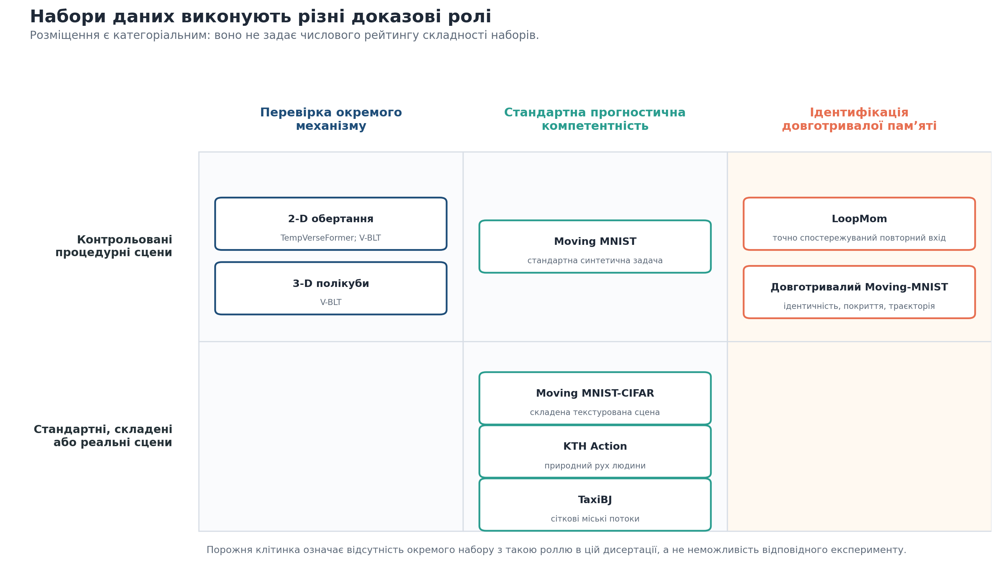
Рисунок 2.3 – Категоріальна карта експериментальних наборів даних.Категоріальна карта пояснює послідовність перевірок, але не містить деталей протоколів. Таблиця 2.1 (source; Appendix В) доповнює рисунок 2.3: для кожного набору вказано контрольоване явище, модель, доказову роль і межу висновку. Такий поділ потрібний, оскільки візуально складніший набір не обов’язково точніше виявляє втрату давньої історії.
The method/configuration record is preserved in Appendix В (source Table 2.1). Експериментальна одиниця залежить від задачі та досліджуваного механізму. Для ранніх робіт опубліковано точкові оцінки без достатніх даних для ретроспективного відновлення невизначеності, тому в цьому розділі вони подаються саме в такому вигляді. У центральних порівняннях розділів 3 і 4 невизначеність оцінюється інакше: під час кластерної бутстреп-передискретизації повторно відбираються цілі відеокліпи, а всі їхні кадри залишаються разом. Це запобігає хибному трактуванню сусідніх кадрів як незалежних спостережень. Окремі ініціалізації навчання утворюють другий рівень варіативності моделі. Довірчі інтервали до ранніх результатів штучно не добудовуються.
Тут розглядається перше ресурсне обмеження – зростання пам’яті активацій зі збільшенням диференційованого горизонту. Виклад переходить від механізму цього зростання до реверсивного блока й часового ланцюга, після чого окремо перевіряє реконструкцію станів, градієнти, пам’ять, зовнішню працездатність і межі застосовності.
Розглянемо параметризований перехід , де є часовим станом, позначає відомі умовні дані, а – параметри моделі переходу. Втрата може залежати від кінцевого стану, кількох декодованих станів або повної траєкторії. Стандартне зворотне поширення через час застосовує диференціювання у зворотному режимі до розгорнутого композиційного відображення [28]. Градієнт такого відображення визначений однозначно, проблема полягає у зберіганні проміжних значень, потрібних для кожного локального зворотного кроку.
Нехай процес розгорнуто на часових кроків і він містить шарів. Через позначимо обсяг активацій шару , які необхідно зберегти для його зворотного проходу. Тоді домінантну часову складову пам’яті стандартного BPTT та відповідний обсяг обчислень можна наближено записати як
Відповідну обчислювальну роботу визначимо через вартість прямого й зворотного обчислення одного переходу:
Тут і означають вартість прямого та зворотного обчислення одного переходу. Рівняння (2.4) показує лінійне зростання збереженої стрічки активацій за , а рівняння (source 2.5) визначає обчислювальну роботу. Водночас не є повною пам’яттю пристрою: параметри, градієнти, стан оптимізатора, вхідні дані та робочі буфери є окремими складниками. Отже, реверсивний блок може усунути саме часову стрічку ядра, обсяг якої лінійно зростає під час навчання авторегресивного прогнозування, але не всі витрати обчислювального тракту.
Альтернативним методом є усічення BPTT, що зменшує використання пам’яті, але водночас скорочує горизонт градієнта [29]. Якщо пропущені залежності важливі, цільова функція фактично змінюється. Збереження контрольних точок градієнта застосовує інший підхід: вибрані граничні стани зберігаються, а проміжні сегменти повторно обчислюються, що в точній арифметиці зберігає похідну на всьому горизонті [30, 31]. Реверсивне відтворення є більш спеціалізованим. Якщо попередній стан відновлюється з наступного стану, то більшість часових граничних станів можна відкинути.
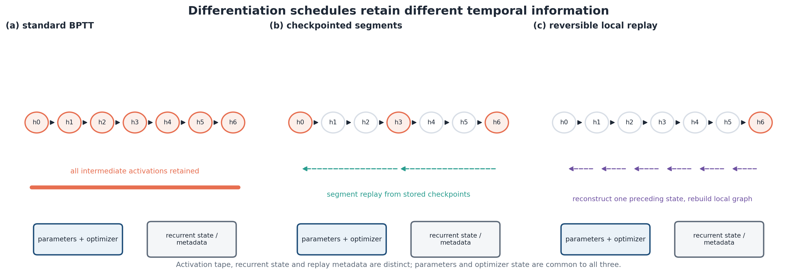
Рисунок 2.4 – Схеми зберігання для диференціювання в часі.Щоб не ототожнювати стрічку активацій із усією пам’яттю пристрою, пікове використання доцільно подати окремим розкладом:
У рівнянні (source 2.6) , і відповідають параметрам, їхнім градієнтам та стану оптимізатора; охоплює вхідні дані; – тимчасові робочі буфери; – збережену стрічку активацій. Реверсивне відтворення безпосередньо зменшує останній складник. Для цього часовий перехід має бути побудований так, щоб попередній стан можна було відновити без збереження всіх його проміжних значень.
TempVerseFormer's additive-coupling block reconstructs its complete two-stream internal input, not an arbitrary image or a compressed projection. For fixed conditions and deterministic modules, forward and inverse relations form one scientific object:
The left-hand quantities are the paired block states; and themselves need not be invertible. The inverse is exact in real arithmetic, with finite-precision error checked separately. The VAE encoder/decoder, projections, normalization/merge boundaries, and loss are not made bijective by this construction. They retain ordinary differentiation or separately stored boundary information. The published architecture in the next subsection is the main diagram; the redundant block schematic and detailed state-boundary table are in Appendix Е/В.
Unit Jacobian determinant and the full algebraic expansion are supporting derivations, not an independent empirical contribution. If compression or forgetting is required, it must occur outside the reversible state or be represented by additional retained information. Algebraic reversibility alone does not guarantee stable repeated temporal prediction. The published measurements below determine the actual memory–compute and quality boundary [A2].
Один реверсивний блок зменшує потребу зберігати внутрішні активації за глибиною мережі, але довгий відеопрогноз потребує ще й повторного переходу в часі. Часове ланцюгове з’єднання означає, що оператор фіксованої ширини багаторазово застосовується до вікна прихованих представлень: вихід одного зсуву стає входом наступного. Кількість параметрів при цьому не зростає з горизонтом, однак звичайне навчання все одно утворює дедалі довший диференційований ланцюг. Саме тут оборотність ядра дає змогу замінити збереження попередніх станів їхнім відтворенням.
TempVerseFormer розміщує реверсивний стек між просторовим кодером та декодером. В опублікованій конфігурації кожен RGB-кадр розміром відображається на 256-вимірний стан у прихованому просторі. Навчена лінійна проєкція розширює кожен стан до 768 ознак, ротаційні позиційні вбудовування RoPE ідентифікують позицій у вікні [107], а спроєктована послідовність дублюється для формування двох потоків зв’язку. Часове ядро містить вісім реверсивних блоків трансформера з вісьмома головками уваги [135]. Повну схему зображено на рисунку 2.6. Кодер переводить кадри до прихованого простору, вхідна проєкція формує два потоки реверсивного ядра, а вихідна проєкція та декодер повертають прогноз до простору зображення. Точне відтворення застосовується лише до повторюваного подвоєного стану трансформера; VAE, проєкції та злиття виходу залишаються нереверсивними межами.
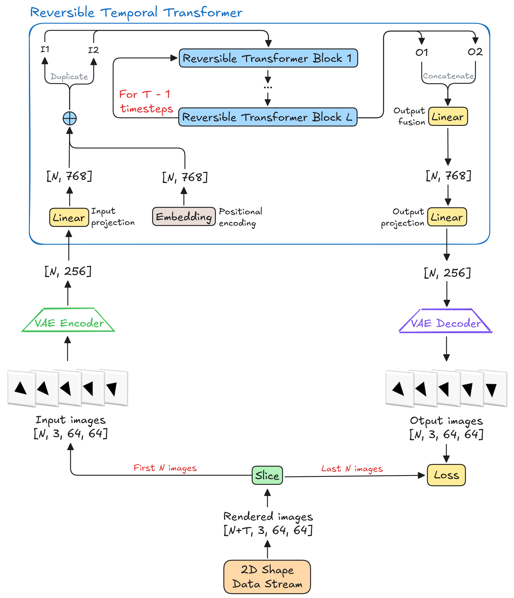
Рисунок 2.6 – Повна архітектура TempVerseFormer.
Позначимо кодер і декодер через та , вхідну й вихідну проєкції через і , а один перехід реверсивного ядра через . Початкове представлення дорівнює , а початковий стан ядра — . Для стан після наступного часового зсуву оновлюється як
Після переходів декодований прогноз формується вихідною проєкцією та декодером:
Розмірність стану не змінюється зі збільшенням зсуву. Отже, часова глибина означає повторне застосування одного віконного оператора, а не дедалі довшу послідовність токенів. Параметри спільні між усіма застосуваннями. Водночас градієнти від кінцевого декодованого вікна мають пройти через кожен повторний перехід. Саме тому стандартне автоматичне диференціювання накопичує довшу історію активацій, хоча кількість навчених часових параметрів залишається сталою. Цей процес схематично показано на рисунку 2.7 (source; Appendix Е).
See Appendix Е, source Figure 2.7, for the supporting illustration.
Під час навчання використовується контекст із 12 кадрів та навчальна програма, в якій зсув збільшується від одиниці до п’яти. Декодоване вихідне вікно порівнюється з відповідним цільовим вікном, зміщеним у часі. Для відтворення опублікованого протоколу важливо розділити заявлену ціль і фактичну реалізацію. У рівнянні (16) статті наведено функцію втрат із трьома членами [135]:
Аудит реалізації дає окрему ціль , у якій явно наявна реконструкційна похибка входу VAE:
Рівняння (source 2.14) відтворює формулу, наведену в публікації. Рівняння (2.15) фіксує фактичний склад перевіреної реалізації, де додатково присутня похибка реконструкції входу VAE, а коефіцієнт KL відрізняється від описаного в статті. Це розходження не змінює алгебру реверсивного ядра, але має значення для точного відтворення навчання. Тому опис публікації та аудит коду подано окремо.
Reverse replay reconstructs the preceding complete state, rebuilds one local differentiable transition, accumulates its parameter gradient and state adjoint, and releases that local graph. The final state, required boundary conditions, and any deterministic replay information remain available. The standard chain-rule expansion is preserved in Appendix Е with the original formulas and implementation references.
The quantities are the state adjoint and accumulated parameter gradient for the executed temporal objective. The relation is exact differentiation for the specified replayed function; its practical validity depends on reconstruction and gradient parity within the tested tolerance. A compact replay timeline replaces separate forward-chain and backward-storage diagrams. The published quality, memory, and runtime evidence remains three distinct objects because the same horizon can improve one endpoint and worsen another.
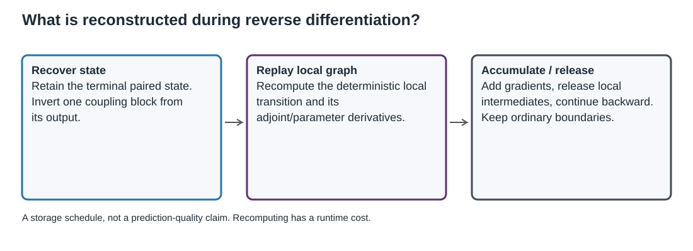
Figure D2-replay — Reconstruct one prior state, replay one local graph, accumulate its gradient, then release it. Ordinary encoder/decoder/loss boundaries remain outside this storage schedule. This is a mechanism diagram, not a GPU profile.
У контрольованому оцінюванні порівнювали чотири системи: реверсивний TempVerseFormer; зіставлений нереверсивний, але ідентичний архітектурно TempFormer із часовим ланцюгуванням; стандартний трансформер без такого самого інтерфейсу реверсивного ланцюгування; та LSTM [137]. TempFormer і TempVerseFormer мали по вісім блоків, вісім голів уваги та 768 прихованих ознак. Усі моделі використовували спільний інтерфейс VAE й навчалися протягом 30 000 кроків на одній відеокарті NVIDIA RTX 4060 Ti. Оцінювання охоплювало 2 000 процедурно згенерованих послідовностей з однаковою фіксованою ініціалізацією генератора даних для всіх моделей [135].
Контрольоване порівняння не виявило універсального переможця за якістю. TempVerseFormer має найкращу сукупність FID, MSE та SSIM для постійного й перерваного обертання, тоді як за прискорення, уповільнення, коливання або комбінованого руху окремі показники віддають перевагу TempFormer чи LSTM. Отже, головним результатом є працездатність реверсивного часового ядра без систематичної втрати прогнозної спроможності.
Таблиця 2.3 – Опубліковані прогнозні точкові оцінки за режимами обертання
| Режим | Модель | FID | MSE | SSIM |
|---|---|---|---|---|
| Постійний | TempFormer | 103 | 0,023 | 0,84 |
| Постійний | TempVerseFormer | 75 | 0,018 | 0,88 |
| Постійний | Стандартний Transformer | 87 | 0,030 | 0,86 |
| Постійний | LSTM | 157 | 0,080 | 0,76 |
| Прискорений | TempFormer | 90 | 0,021 | 0,857 |
| Прискорений | TempVerseFormer | 87 | 0,028 | 0,853 |
| Прискорений | Стандартний Transformer | 95 | 0,030 | 0,851 |
| Прискорений | LSTM | 86 | 0,048 | 0,821 |
| Уповільнений | TempFormer | 90 | 0,025 | 0,86 |
| Уповільнений | TempVerseFormer | 87 | 0,036 | 0,84 |
| Уповільнений | Стандартний Transformer | 86 | 0,036 | 0,85 |
| Уповільнений | LSTM | 85 | 0,039 | 0,84 |
| Коливальний | TempFormer | 130 | 0,024 | 0,82 |
| Коливальний | TempVerseFormer | 112 | 0,021 | 0,84 |
| Коливальний | Стандартний Transformer | 119 | 0,068 | 0,78 |
| Коливальний | LSTM | 108 | 0,081 | 0,77 |
| Перерваний | TempFormer | 98 | 0,034 | 0,83 |
| Перерваний | TempVerseFormer | 91 | 0,032 | 0,84 |
| Перерваний | Стандартний Transformer | 99 | 0,056 | 0,80 |
| Перерваний | LSTM | 107 | 0,060 | 0,79 |
| Комбінований | TempFormer | 119 | 0,060 | 0,79 |
| Комбінований | TempVerseFormer | 123 | 0,059 | 0,78 |
| Комбінований | Стандартний трансформер | 127 | 0,086 | 0,77 |
| Комбінований | LSTM | 156 | 0,089 | 0,74 |
| Повна галерея прогнозів для постійного, прискореного, уповільненого, коливального та перерваного обертання наведена в додатку Е. В основному тексті залишено графік для комбінованої динаміки, оскільки саме він показує зміну відносного результату зі збільшенням глибини прогнозування, а не лише окремі зображення. Публікація наводить точкові оцінки без панелі незалежних навчань і довірчих інтервалів, тому невизначеність до цих результатів ретроспективно не додається. |
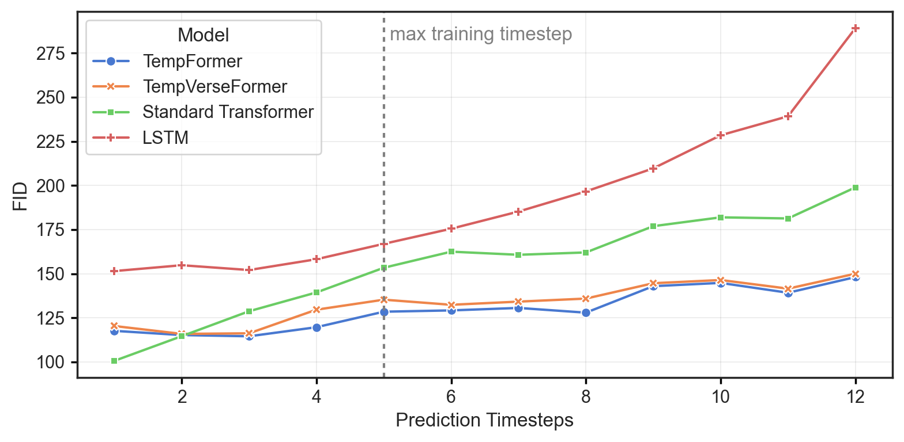
Рисунок 2.9 – FID залежно від глибини прогнозування для комбінованих часових закономірностей.Розбіжність показників у цьому випадку є науково інформативною. FID порівнює розподіли в просторі ознак і може віддавати перевагу набору різноманітних зразків, навіть якщо відповідні кадри не наближені до своїх цільових значень [94]. MSE винагороджує вирівнювання пікселів і різко штрафує навіть невелике кутове зміщення. SSIM акцентує увагу на локальній яскравості, контрасті та структурі [94, 127–129]. Отже, LSTM може отримати найнижчий зафіксований показник FID за прискорення, маючи при цьому значно гірші показники MSE та SSIM. Визнання цього рядка загальним переможцем приховало б парний характер завдання прогнозування.
Контрольоване обертання не встановлює здатності моделі працювати з текстурованими сценами або природним рухом. Тому часову модель інтегровано в OpenSTL та оцінено за визначеними в ньому розбиттями й метриками на Moving MNIST, Moving MNIST-CIFAR, KTH Action і TaxiBJ [1, 124, 126, 154]. Опубліковане порівняння охоплює рекурентні ConvLSTM і PredRNN++ [137, 152], а також нерекурентні схожі архітектурно базові моделі ViT та Uniformer.
Table 2.4a — Published point estimates: Moving MNIST. Original metric scale; no retrospectively invented seed uncertainty. Source Table 2.4.
| Модель | SSIM | MSE |
|---|---|---|
| ConvLSTM | 0,929 | 29,80 |
| PredRNN++ | 0,951 | 22,06 |
| TempVerseFormer | 0,932 | 26,08 |
| ViT | 0,914 | 35,15 |
| Uniformer | 0,931 | 30,38 |
Table 2.4b — Published point estimates: Moving MNIST-CIFAR. Original metric scale; no retrospectively invented seed uncertainty. Source Table 2.4.
| Модель | SSIM | MSE |
|---|---|---|
| ConvLSTM | 0,920 | 73,31 |
| PredRNN++ | 0,957 | 44,19 |
| TempVerseFormer | 0,950 | 50,37 |
| ViT | 0,936 | 64,94 |
| Uniformer | 0,944 | 56,96 |
Table 2.4c — Published point estimates: KTH Action. Original metric scale; no retrospectively invented seed uncertainty. Source Table 2.4.
| Модель | SSIM | MSE |
|---|---|---|
| ConvLSTM | 0,898 | 47,65 |
| PredRNN++ | 0,912 | 39,84 |
| TempVerseFormer | 0,898 | 48,97 |
| ViT | 0,895 | 56,57 |
| Uniformer | 0,906 | 44,71 |
Table 2.4d — Published point estimates: TaxiBJ. Original metric scale; no retrospectively invented seed uncertainty. Source Table 2.4.
| Модель | SSIM | MSE |
|---|---|---|
| ConvLSTM | 0,9836 | 0,34 |
| PredRNN++ | 0,9834 | 0,33 |
| TempVerseFormer | 0,9835 | 0,31 |
| ViT | 0,9841 | 0,32 |
| Uniformer | 0,9844 | 0,34 |
| Це порівняння закриває важливу, але обмежену прогалину в доказах на контрольованих обертаннях. Воно показує, що часову архітектуру можна навчати для растрових об’єктів, текстурованих композицій, дій людей і сіткових полів потоків, не заявляючи домінування на окремому завданні. Протоколи також не приховують унікально релевантне спостереження за межами доступного контексту до моменту, коли воно знову стане потрібним. Отже, докази підтверджують переносимість і прогностичну спроможність; твердження про пам’ять активацій спирається на прямі вимірювання реверсивних і нереверсивних процесів, а механізм досяжності залишається окремим питанням. Ширше значення результату полягає в тому, що контрольована перевірка не обмежилася одним рендерером. |
Чотири набори даних перевіряють різні види компетентності. KTH замінює синтетичні цифри на артикульовані рухи людей, тоді як TaxiBJ є сітковим полем потоку, а не задачею візуалізації об’єктів. Однаково сильний результат у всіх чотирьох випадках був би переконливішим за успіх на одному генераторі обертання. Опублікована закономірність скромніша: архітектура залишається придатною до цих інтерфейсів, але її відносна позиція залежить від даних. Якісні панелі Moving-MNIST, Moving-MNIST-CIFAR, KTH і TaxiBJ перенесено до додатка Е; кількісний висновок визначає таблиця 2.4.
Центральною особливістю вимірювань TempVerseFormer є те, як по-різному масштабується пам’ять часового ядра. Опубліковані результати відокремлюють пам’ять, зарезервовану для часової моделі, від загальної виділеної пам’яті обчислювального тракту, яка також охоплює VAE та спільні компоненти. Без цього розмежування криву постійного ядра можна було б помилково прийняти за нульове зростання при кожному розподілі пам’яті на рівні пристрою.
Таблиця 2.5 – Опубліковані вимірювання пам’яті GPU для зазначених у таблиці горизонтів, розмір пакета 32
| Кроки прогнозування | Модель | Пам’ять часової моделі (ГБ) | Загальна пам’ять обчислювального тракту (ГБ) |
|---|---|---|---|
| 1 | TempFormer | 0,85 | 4,11 |
| TempVerseFormer | 0,89 | 3,94 | |
| Стандартний Transformer | 0,85 | 4,10 | |
| LSTM | 1,27 | 4,00 | |
| 4 | TempFormer | 0,85 | 4,59 |
| TempVerseFormer | 0,89 | 3,95 | |
| Стандартний трансформер | 0,86 | 4,58 | |
| LSTM | 1,28 | 4,03 | |
| 16 | TempFormer | 2,61 | 6,50 |
| TempVerseFormer | 0,89 | 3,98 | |
| Стандартний трансформер | 2,60 | 6,51 | |
| LSTM | 1,28 | 4,13 |
Обсяг пам’яті часового ядра залишається близьким до заявленого базового значення в міру зростання реверсивного горизонту, на відміну від відповідного нереверсивного трансформера; загальний обсяг пам’яті обчислювального тракту включає спільні компоненти. Прогнозований графік зростання памʼяті зображено на рисунку 2.10.
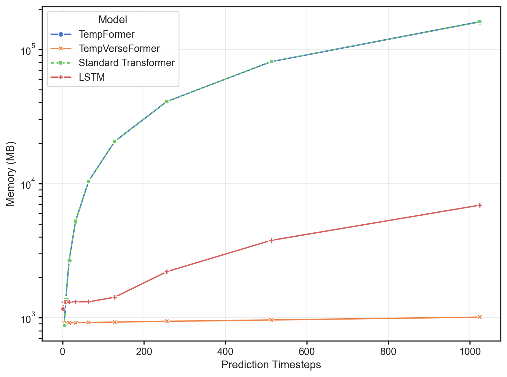
Рисунок 2.10 – Обсяг пам’яті GPU у порівнянні з глибиною прогнозування.Пологіша крива пам’яті активацій досягається ціною обчислень для відтворення, тому здійсненність і час виконання потрібно оцінювати разом. Залежність часу одного кроку навчання від кількості кроків прогнозування показано на рисунку 2.11.
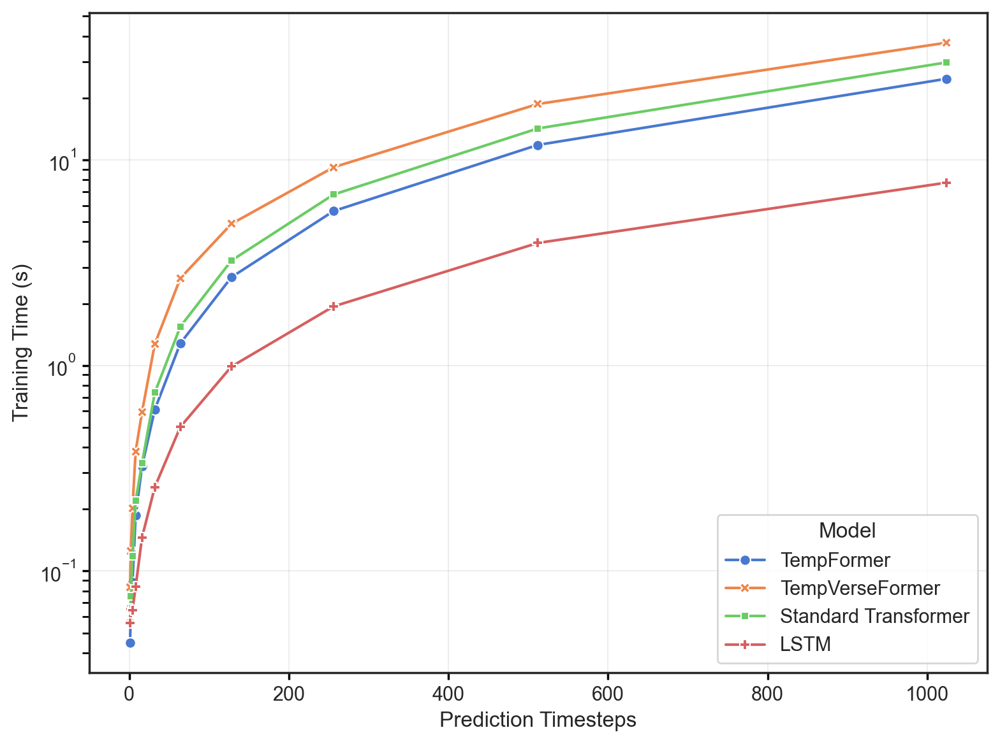
Рисунок 2.11 – Час навчання залежно від глибини прогнозування.Уже на шістнадцятому кроці порівняння показує робочий ефект без опори на дальню частину кривої. TempVerseFormer використовує на 1,72 ГБ менше заявленої пам’яті часової моделі, ніж TempFormer, тобто приблизно на 66%. Для повного обчислювального тракту різниця становить 2,52 ГБ, або близько 39%, оскільки спільні просторові й навчальні витрати пам’яті залишаються. Перший показник краще ізолює механізм, другий ближчий до обсягу, який спостерігає користувач на практиці.
Опубліковані графіки візуально поширюються на 1024 кроки прогнозування, при цьому реверсивна крива часового ядра залишається приблизно на рівні 1 ГБ. Однак збережені результати не містять точних координат для цих точок широкого горизонту. Тому кількісні порівняння обмежуються табличними вимірюваннями на одному, чотирьох та шістнадцяти кроках. Більш віддалена частина використовується лише для опису тенденції масштабування, показаної на графіку.
The deterministic published boundary must not be enlarged by a general derivation. Stochastic transitions additionally require reproducible random draws or saved generator state; nondeterministic recomputation can change the function being differentiated. Anchor checkpoints can limit accumulated reconstruction drift, but consume memory and change the recomputation schedule. The original replay, Lipschitz, anchor, and error-propagation derivations are preserved in Appendix Е as extensions with their own implementation status.
These extensions do not establish that every stochastic component of a video pipeline is reversible. Nor is a theoretical stability bound a measured rollout-quality result. The later integrated core disables dropout and keeps routing outside its inverse boundary; CPU bfloat16 checks and future CUDA checks are reported separately rather than using this discussion as a blanket guarantee.
Жодна схема зворотного обчислення не є найкращою для кожної моделі. Стандартний BPTT привабливий, коли потрібний горизонт легко вміщується в пам’ять, оскільки не потребує реконструкції проміжних станів. Обрізання є обґрунтованим вибором моделі, якщо залежності за межею сегмента вилучаються навмисно. Збереження контрольних точок працює з довільними диференційовними модулями й дає змогу налаштувати співвідношення між зберіганням і повторним обчисленням. Реверсивне відтворення вимагає чітко окресленого реверсивного стану, стабільної числової реконструкції та точного повторення стохастичних входів [30, 32, 91, 110, 113, 116].
Вирішальним є те, яку частку пам’яті може звільнити обернене відтворення. В опублікованому часовому ядрі та на детермінованому багаторівневому рекурентному межі повторні активації займають достатньо пам’яті, щоб реконструкція могла змінити здійсненність обчислення. У перевіреному внутрішньому циклі оптимізації натомість домінують локальні графи другого порядку й спільний стан моделі, тому практичнішим вибором є збереження контрольних точок. У розділі 4 це правило вибору за обмежувальним ресурсом використано без трактування реверсивності як універсальної архітектурної переваги.
The method/configuration record is preserved in Appendix В (source Table 2.7). Реверсивність усуває зростання стрічки активацій у перевіреному часовому ядрі, але не стискає сам вхідний контекст. Якби кадр подавався до глобальної уваги по одному токену на піксель, 12 кадрів утворили б послідовність із 49 152 токенів. Одна матеріалізована матриця уваги для одного прикладу й однієї голови тоді містила б елементи: приблизно 9,0 ГіБ у fp32 або 4,5 ГіБ у fp16/bf16, без урахування інших активацій. Це не означає, що ієрархія є єдиним способом зменшення вартості: можливі локальна чи розріджена увага, пошук у пам’яті, рекурентний стан, часове піддискретизування, об’єднання токенів, лінійна увага та моделі простору станів. У цій дисертації обрано багаторівневий шлях: давня історія зберігається грубо, недавня – детально, а локально однорідні просторові значення можуть агрегуватися перед глобальною обробкою. Наступний підрозділ розглядає останню ідею на прикладі V-BLT.
Ця частина переходить від пам’яті навчального графа до просторової ціни детального контексту. Ієрархія V-BLT є локально–глобальною ієрархією всередині одного представлення: локальні байти агрегуються до коротшої глобальної послідовності, після чого деталь відновлюється. Вона не тотожна грубій і детальній історії розділу 3, де змінюються роздільна здатність і часова досяжність, але обидві конструкції спираються на той самий принцип – не всі рівні опису потрібно зберігати й обробляти з однаковою щільністю.
У цьому розділі патч означає фіксовану просторово-часову область растрових байтів, яку локальний кодер V-BLT перетворює на певне приховане представлення; токен є вектором, що надходить до трансформера; пакет контексту в розділах 3–4 є окремим поняттям і задає сукупність збережених кадрів, рівнів та часових прив’язок.
Диференційованість довшого часового ланцюга розв’язує лише проблему пам’яті під час навчання довгострокового прогнозування. Наступне вузьке місце є просторовим: воно визначається тим, як візуальна модель розподіляє ємність представлення. Типовий механізм попередньої обробки у відеотрансформерах розбиває кліп на регулярну сітку просторово-часових патчів, вбудовує кожну комірку як вектор і обробляє отриману послідовність [70, 71]. Повторювані патчі можна об’єднувати в регіональні пакети, де кожному токену відповідає чітко визначена геометрична область. Проте вартість визначається кількістю патчів, а не обсягом непередбачуваного вмісту всередині них. Для кліпу з кадрів висоти і ширини , поділеного на блоки розміром , кількість областей дорівнює
Статична чорна область і рухомий контур отримують однакову кількість токенів. Це не означає автоматичної неефективності: регулярність може бути корисною, а навчений кодер здатний пригнічувати надлишковий вміст. Сумнів виникає тоді, коли глобальна модель є найдорожчим компонентом архітектури, а щільність локальної інформації різко неоднорідна. За таких умов значна частина обчислень припадає на області, малорелевантні для конкретного завдання прогнозування руху об’єкта.
See Appendix Е, source Figure 2.12, for the supporting illustration.
Як зображено на рисунку 2.12 (source; Appendix Е), просторово-часовий блок спочатку стискається локальним кодером до одного глобального представлення. Трансформер обмінюється інформацією між такими представленнями, після чого локальний декодер відновлює розподіли байтів у кожній растровій позиції.
V-BLT оперує на рівні байт-каналу пікселів растрового зображення. Цільовий байт є цілим числом із множини . Такий вихідний інтерфейс дає змогу реалізувати нерегресійний вихідний модуль, не прив’язуючи результат безпосередньо до навченої дискретної кодової книги, як у VQ-VAE [73]. Водночас приховане представлення залишається оптимізованим: згортки, проєкції, увага та скінченна ширина прихованого простору утворюють навчуване інформаційне поле.
Нехай є вхідним кліпом, – його -й фіксований просторово-часовий блок, де , а , і – локальний кодер, глобальний трансформер та локальний декодер. Індекси , і позначають три окремі набори навчуваних параметрів, щоб не змішувати локальне кодування, глобальну обробку та локальне декодування. Маска робить доступ до майбутніх кадрів неможливим, а вносить окремі часові й просторові координати в послідовність даних. Тоді послідовність перетворень має вигляд:
Послідовність глобально контекстуалізованих ознак утворює трансформер :
Локальний декодер повертає для кожної растрової позиції вектор логітів :
де є представленням блока, – його глобально контекстуалізованою ознакою, – локальною ознакою декодера, а відображає растрову координату на відповідну глобальну область.
Вектор містить логіти всіх можливих значень байта. Перехресна увага передає інформацію між локальними та блоковими представленнями. Отже, глобальний трансформер виконує широке просторово-часове моделювання, тоді як локальні етапи зберігають і відновлюють деталі.
У прямому проході локальний кодер спочатку стискає байти кожного фіксованого просторово-часового блока до представлення . Глобальний модуль обмінює інформацію між такими представленнями за причинної маски. Локальний декодер поєднує глобальний контекст з ознакою конкретної растрової позиції й повертає 256 логітів для її байта. Таким чином, глобальна послідовність коротша за послідовність усіх байтів, але детальне відновлення залишається локальною обчислювальною роботою.
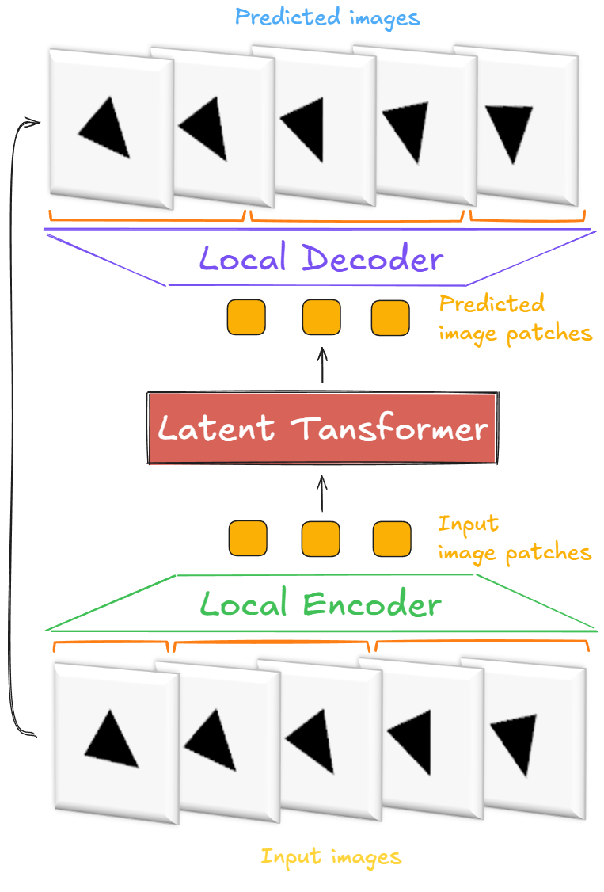
Рисунок 2.13 – Опублікована архітектура Vision Byte Latent Transformer.На схемі, зображеній на рисунку 2.13, центральний глобальний трансформер працює не з усіма байтами безпосередньо, а з локально агрегованими представленнями. Кодер і декодер утворюють два боки локально-глобально-локального тракту.
Архітектурні дані підтверджують ієрархічний метод представлення. Вони не доводять, що модель сформувала семантично змістовні патчі, що послідовність прихованих представлень є оптимальною або що та сама конструкція без змін масштабується на стиснене відео природного походження.
The method/configuration record is preserved in Appendix В (source Table 2.8).
Після визначення просторових одиниць потрібно задати, які з них можуть обмінюватися інформацією. Повністю двонапрямлена увага допустила б витік із майбутніх кадрів, тоді як суто послідовна маска штучно заборонила б взаємодію між пікселями одного вже спостережуваного кадру. Тому каузальність тут має дві шкали: вільний обмін інформацією всередині доступного кадру та заборону доступу до наступних кадрів. Сплющення кліпу перетворює час і простір на єдиний індекс токена, тому дозвільну маску визначено через часові координати. Якщо токен належить до кадру , а токен – до , глобальна маска уваги має вигляд:
Нерівність дозволяє обмін усередині поточного та з усіма попередніми кадрами, тоді як додає до відповідного логіту перед застосуванням функції softmax [12]. Отримана матрична маска містить щільні діагональні блоки кадрів у блочно-нижньотрикутній часовій структурі. На рівні глобальної уваги прямий витік майбутньої інформації заблоковано, тоді як фізична правдоподібність і авторегресивна стійкість залишаються властивостями, які модель має вивчити.
See Appendix Е, source Figure 2.14, for the supporting illustration.
Діагональні блоки дозволяють взаємодію між просторовими позиціями одного кадру, нижні блоки відкривають попередні кадри, а верхня частина матриці блокує майбутнє. Цю структуру безпосередньо показано на рисунку 2.14 (source; Appendix Е).
Після визначення доступної історії кожна цільова позиція прогнозується як категоріальний розподіл за 256 значеннями байта , а навчальна ціль усереднює від’ємну логарифмічну правдоподібність за цільовими позиціями.
Використовуючи цей розподіл, байтова втрата усереднює від’ємну логарифмічну правдоподібність за множиною цільових позицій :
де містить цільові позиції байтів, а – еталонне ціле значення. На відміну від скалярного регресивного виходу, який повертає одне значення, категоріальний інтерфейс може представляти кілька правдоподібних значень байта в одній позиції та безпосередньо надає розподіл для обчислення прогностичної ентропії. Це корисно для виявлення локально неоднозначних ділянок. Водночас сам розподіл не гарантує каліброваності ймовірностей і не усуває залежність між сусідніми байтами, якщо вихідний модуль прогнозує їх факторизовано.
V-BLT's raster-byte sequence preserves time, row, and column identities through multi-axis rotary position encoding rather than treating linear sequence rank as the only coordinate. With channel pairs allocated to physical axes, the rotation can be written compactly as
The relation describes the relative-phase property for the declared axis decomposition, not a measured isolated gain of RoPE-ND. Elementary sine/cosine derivations and the original coordinate examples remain in Appendix Е. The V-BLT result compares complete configurations; it does not disentangle positional encoding from the byte interface and hierarchy.
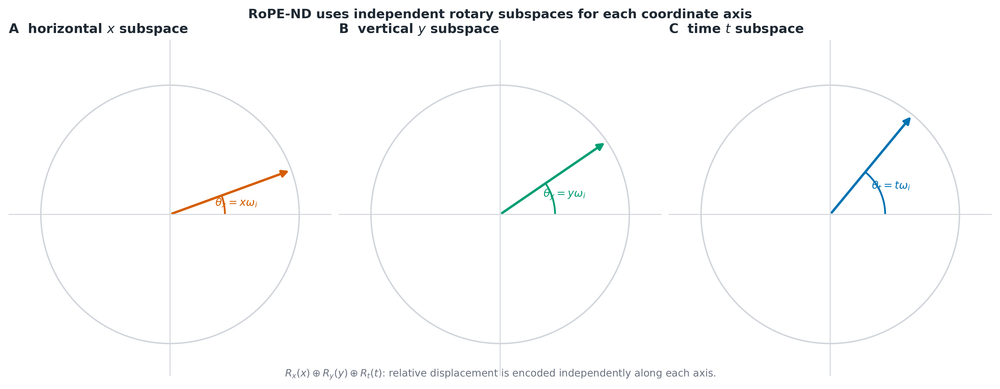
Рисунок 2.15 – Неперетинні координатні підпростори в RoPE-ND.The integrated model in Section 3.7 uses continuous Fourier features plus a level embedding, not this rotary operator. What transfers is the requirement to preserve physical identity after packing, not identical positional code or pretrained weights.
Категоріальний байтовий вихід задає повний розподіл, а не лише точковий прогноз. Його локальну невизначеність можна узагальнити ентропією Шеннона [9], виміряною в бітах:
Для категоріального розподілу за 256 значеннями виконується : точкова маса відповідає нижній межі, тоді як рівномірний розподіл досягає верхньої.
Тестований код візуалізації обчислює ентропію в натах, використовуючи натуральний логарифм:
Величини (2.40) і (source 2.41) відрізняються лише постійним множником , тому просторове ранжування областей не змінюється.
На рисунку 2.16 показано весь шлях від 256 логітів у кожній позиції до нормованої карти, яку можна накласти на кадр. Після перетворення логітів функцією softmax ентропія обчислюється для кожного байта, агрегується за каналами та візуалізується у координатах кадру. Через інвертовану шкалу сірого темніша область відповідає вищій невизначеності прогнозу, але ще не доводить, що саме їй слід виділити більше токенів.
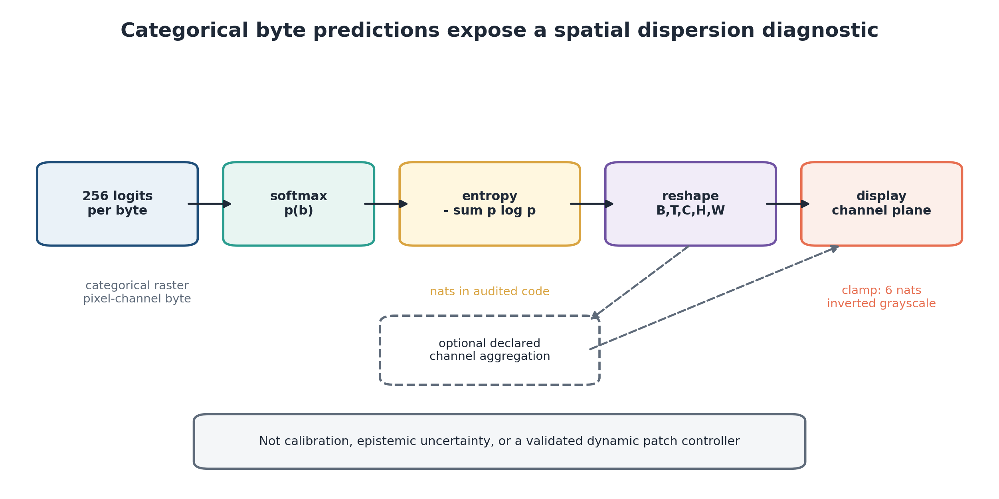
Рисунок 2.16 – Від категоріальних логітів до карти просторової ентропії.Щоб перетворити цю карту на контролер, самої візуальної структури недостатньо. Калібрування можна перевірити, згрупувавши прогнозовані ймовірності байтів або значення ентропії та вимірявши фактичну помилку. Просторову корисність потрібно встановлювати порівнянням ентропійного розподілу ресурсів із випадковою, заснованою на русі та політиками передбачення за однакового бюджету токенів. Може знадобитися й часове згладжування: зміна межі патча в кожному кадрі створює накладні витрати та нестабільні ідентифікатори токенів. Дослідження проводилося на фіксованих патчах і не містить перевірок зазначених вище гіпотез контролера.
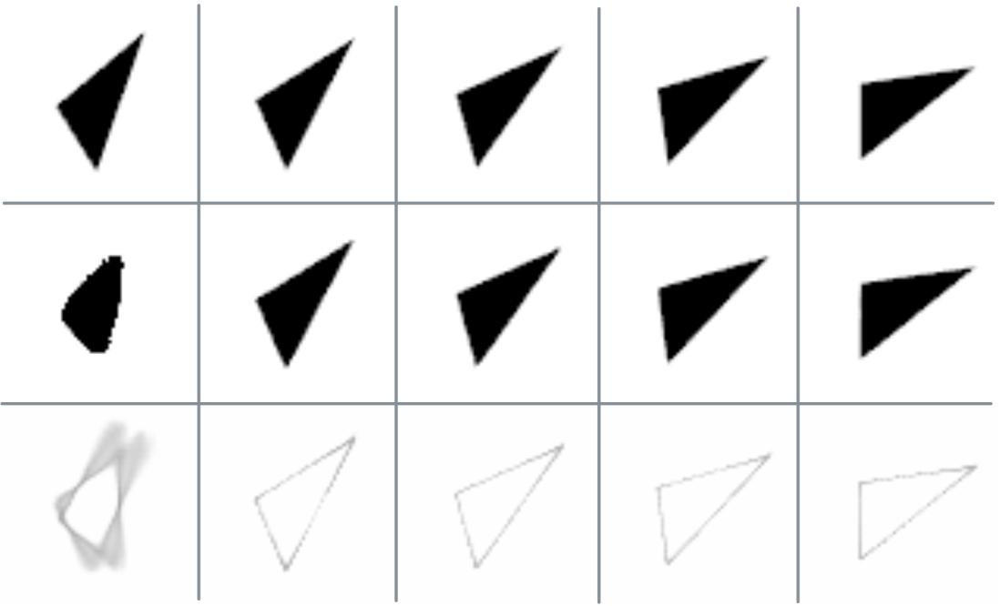
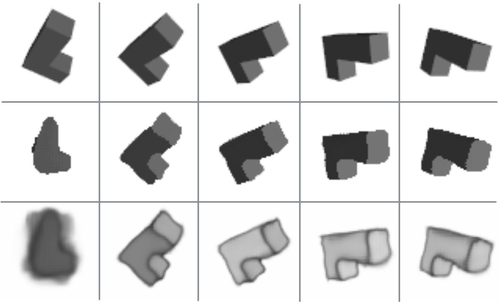
Рисунок 2.17 – Прогнози V-BLT та карти ентропії для двовимірного та тривимірного обертання.
У вибраних прикладах на рисунку 2.17 ентропія просторово зосереджена переважно біля контуру рухомого обʼєкта. Така локалізація мотивує виділення більшої детальної ємності інформаційно насиченим ділянкам, але сама по собі не доводить переваги динамічного розподілу.
У дослідженні V-BLT з фіксованими ділянками модель порівнюється з ViViT [70] та UNet-3D [134] на двох наборах даних процедурного обертання. Зазначені розмір моделі та кількість GFLOPs належать до заданої обчислювальної конфігурації, а MSE, SSIM та PSNR є точковими оцінками якості прогнозування.
Спочатку порівнюється вартість заданих конфігурацій. Ці числа не є вимірюванням якості й тому подані окремо.
Таблиця 2.9 – Опубліковані точкові оцінки вартості конфігурацій V-BLT та базових моделей.
| Модель | Розмір моделі (МБ) | GFLOPs |
|---|---|---|
| V-BLT | 6,5 | 51,2 |
| ViViT | 6,5 | 59,3 |
| UNet-3D | 24,0 | 70,4 |
Якість оцінювалась на двох процедурних наборах. Тут моделі зіставлено лише в межах кожного набору.
Table 2.10a — Published point estimates: 2-D фігури. Original metric scale; no retrospectively invented seed uncertainty. Source Table 2.10.
| Модель | MSE | SSIM | PSNR, дБ |
|---|---|---|---|
| V-BLT | 0,039 | 0,98 | 32,3 |
| ViViT | 0,181 | 0,87 | 20,7 |
| UNet-3D | 0,125 | 0,88 | 21,8 |
Table 2.10b — Published point estimates: 3-D полікуби. Original metric scale; no retrospectively invented seed uncertainty. Source Table 2.10.
| Модель | MSE | SSIM | PSNR, дБ |
|---|---|---|---|
| V-BLT | 0,11 | 0,91 | 23,4 |
| ViViT | 0,19 | 0,83 | 24,8 |
| UNet-3D | 0,20 | 0,75 | 20,3 |
| V-BLT використовує на менше заявлених GFLOPs, ніж ViViT, і на менше, ніж UNet-3D. Два записи розміром 6,5 МБ мають однакові значення розміру моделі. |
Це порівняння підтверджує життєздатність повної конфігурації V-BLT, а не причинно-наслідковий внесок окремого компонента. Отже, нижчі заявлені показники GFLOP та сприятливі двовимірні метрики підтверджують ефективність протестованої системи; вони не виділяють позиційне кодування чи байтовий інтерфейс. Змішаний тривимірний рейтинг є корисним саме тому, що він запобігає перетворенню доказів на рівні конфігурації на домінування єдиної метрики.
See Appendix Е, source Figure 2.18, for the supporting illustration.
Отже, у двовимірній задачі V-BLT має найкращі три наведені показники, а в тривимірній – найкращі MSE та SSIM, але поступається ViViT за PSNR. Такий результат підтримує працездатність локально–глобальної байтової ієрархії, не доводячи перевагу кожного її компонента окремо.
V-BLT implements fixed hierarchical patches and measures predictive byte entropy. Its local–global–local architecture, causal objective, RoPE-ND, categorical output, and published 2-D/3-D results remain part of the dissertation's main evidence. Predictive entropy shows spatially uneven uncertainty in the tested representation; it does not demonstrate an executed dynamic partition controller.
The later integrated router is independently specified. It scores fine–coarse residual and temporal change, optionally adding a learned correction, then gathers a real fixed quota with physical metadata. It does not consume the V-BLT entropy map. Equal-quota routing is an allocation-quality comparison; memory benefit requires a smaller real retained tensor at acceptable quality. A static-only checkpoint cannot be assumed robust to changed membership without route-aware exposure and a switch evaluation.
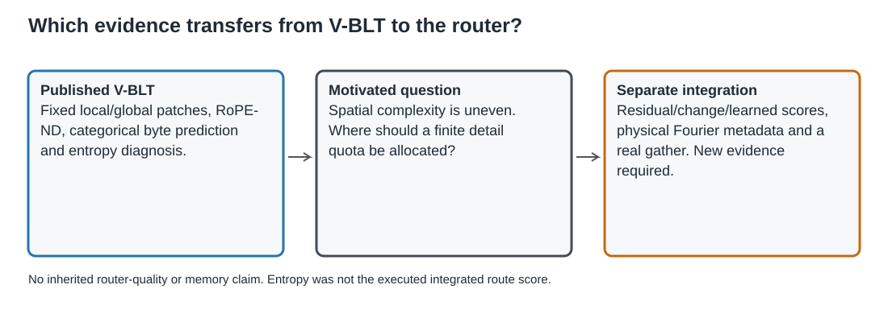
Figure D2-boundary — Published fixed-patch processing and entropy diagnosis motivate an allocation question. The implemented integrated router and its future quality/memory measurements are separate evidence, not retroactive V-BLT results. The old hypothetical dynamic-partition formula (source 2.42) is retained only as a historical design proposal in Appendix Е.
The published methods solve adjacent scaling constraints, not the entire retained-context question. TempVerseFormer provides a specified reconstructed state and reverse differentiation schedule. The changed resource is the stored activation tape of its temporal core; the unchanged resource is the content and age of the observations available to the predictor. A compact derivative computation cannot retrieve an observation that has already left the context.
V-BLT provides a local–global–local byte hierarchy and a physical-axis position contract. The changed interface is the spatial representation presented to a global processor; the diagnostic is predictive entropy. The unchanged boundary is that patch membership in the published experiments is fixed. Entropy concentration near difficult boundaries motivates further allocation work but is not an adaptive-router ablation.
The retained-context predictor asks a different question: which ages and levels should be present in a finite package? Spatial reduction can finance older coarse evidence, but identity may depend on detail that the same reduction discards. This makes coverage, trajectory, appearance, and identity separate endpoints rather than interchangeable descriptions of consistency. The new space–time study explicitly tests redistribution of detail over ages at fixed payload; it does not learn content-dependent membership.
The integrated model then tests composition, using an end-to-end encoder rather than the frozen controlled codec. Real fine-token gathering changes the core input length; physical metadata preserves position after membership changes; internal reversibility changes activation storage for the same forward computation. Encoder candidates, routing, decoder, parameters, optimizer state, and workspace remain outside that reversible saving. This boundary explains why component ratios cannot be multiplied and why a token-count ratio is insufficient evidence for total-memory superiority.
The published TempVerseFormer quality, memory, runtime, and OpenSTL results remain in Sections 2.2.5–2.2.7 with their original configurations. Favorable quality in several motion regimes does not establish dominance on every metric or dataset. The published V-BLT 2-D/3-D results remain in Section 2.3.6: they support feasibility and the reported configuration-level trade-offs, not isolated causal gains from every component. Article [A3]'s static-consistency taxonomy remains in Chapter 1, while exhaustive tutorial assets and standard derivations are preserved in the appendices.
Conceptually, the mechanism/resource map has three columns expressed in prose. Reversible replay changes internal stored activations and leaves retained evidence unchanged. Spatial hierarchy changes the units processed globally and does not guarantee useful temporal reach. Retained-context allocation changes which past evidence is available and leaves the numerical differentiation method unchanged. Dynamic routing adds a fourth conditional intervention: it changes membership at a fixed quota, and only a validated smaller quota changes the retained cost.
These distinctions lead to Chapter 3's method contract and Chapter 4's operating-region analysis. Legacy E5/E6 test self-fed accumulation and identity boundaries. The new TRB matrix tests distant observed context at a four-frame endpoint. The combined manuscript in preparation [A4] connects that matrix to separately measured OpenSTL composition without erasing the published contributions or assuming the integrated hypothesis succeeds.
This chapter specifies two distinct implementations of a shared resource question. The controlled retained-context predictor isolates allocation of observed evidence. The OpenSTL-native predictor tests whether real spatial packing and reversible internal computation can coexist with useful prediction. Their codecs, objectives, positional encodings, and training protocols are not interchangeable. Neither implementation inherits the published numerical results of TempVerseFormer or V-BLT merely by using related principles.
A scene region can leave the viewport before it leaves the world. When it returns, a predictor must either retrieve an earlier observation or reconstruct its appearance from a lossy state. A short dense window may contain excellent recent detail but none of the relevant observation. A hierarchy changes what evidence remains available; it does not ensure that the predictor uses that evidence correctly.
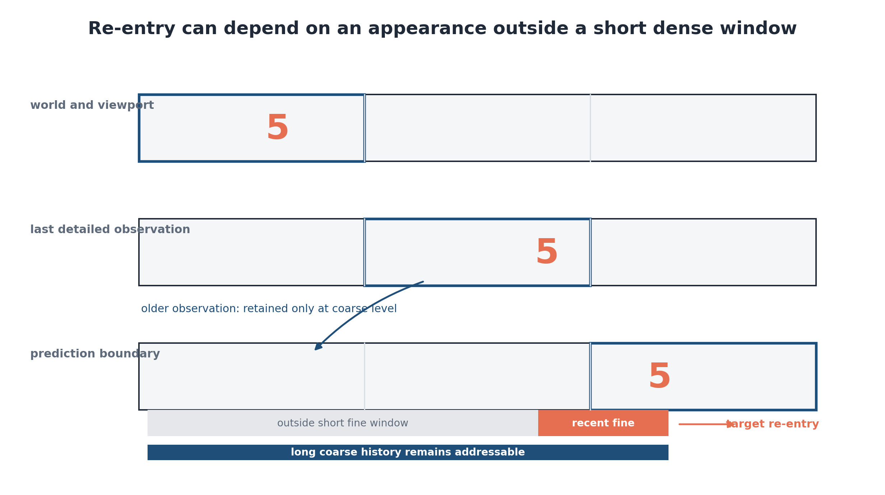
Рисунок 3.1 – Повторний вхід після останнього визначального спостереження залишає коротке щільне контекстне вікно.This mechanism distinguishes three axes. Context age/reach measures how far before the prediction origin an observed state is retained. Prediction endpoint is the four jointly predicted frames in the registered allocation study. Autoregressive rollout horizon counts predicted frames subsequently fed into later model calls. A long first axis does not establish stability on the third.
A context package is an explicit set of physical identities rather than a dense tensor with entries set to zero. For a target beginning at frame index , age denotes frame . An identity contains a representation level, positive age, and spatial cell:
This exact identity contract is implemented by AllocationPlan and PackedWindowBatcher. The experiment fixes the package before seeing target pixels. Cell identities remain physical grid coordinates after gathering.
Here is a set of age–cell pairs, while and contain complete coarse and top-level time positions. This is exact token accounting for the registered 2×2/4×4/8×8 grids, not a fitted memory law. Nominal reach says that some representation of an old frame is available; it does not imply full fine coverage of that frame.
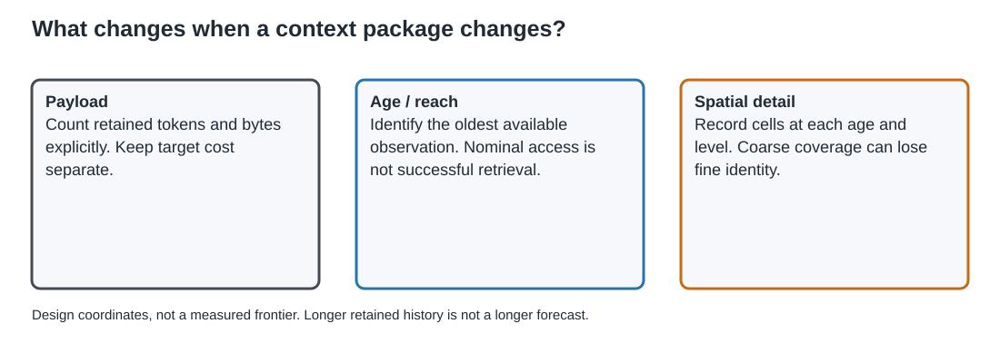
Figure D3-design — Retained token count, oldest available age, and spatial detail are separate design coordinates. This is a non-empirical diagram; no curve implies a measured frontier.
At a fixed payload, older coarse observations displace some recent or distributed fine detail. A possible benefit is access to a re-entering region; a possible cost is loss of identity or texture. The trade-off is explanatory, not an additive statistical decomposition of risk. The study therefore measures frame error, foreground behavior, and task-specific re-entry quantities separately. It does not estimate an unobservable “reach term” by subtraction from total error.
The controlled study uses the frozen two-level convolutional codec and its hash-locked latent normalization. For 64×64 TRB frames it produces a 4×4 coarse grid and an 8×8 fine grid. The optional third-level construction adds a 2×2 stream. Codec reconstruction is a boundary condition shared across the paired predictor comparisons, not a learned response to each allocation policy.
The first relation defines cached latent observations; the second defines a trainable stream projection plus metadata embedding. Channel normalization is fitted on the training split, not recomputed on selected tokens or on holdout data. Exact channel counts, normalization hashes, stream shapes, and the source checkpoint are preserved in Appendix В's generated configuration registry.
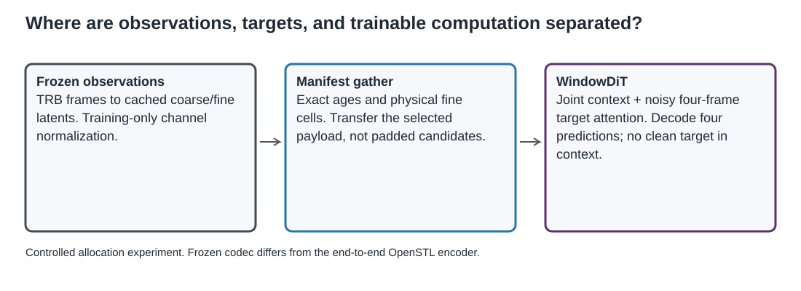
Figure D3-windowdit — Observed latent candidates are gathered on the host into the declared package before transfer to the shared predictor. Frozen codec/normalization and trainable projections/WindowDiT are distinct. Four future coarse/fine grids are denoised jointly; no future clean latent enters observed context. Exhaustive dimensions are in the adjacent appendix contract, not encoded as extra schematic panels.
Flat retains complete 8×8 fine grids at the most recent ages. For the Linear-age and Geometric-age frontier arms, coarse positions consume half of the retained budget; the remaining half is fine detail distributed over those ages. Linear weights descend with age rank; geometric weights are . Integer counts use capped largest-remainder allocation with a maximum of 64 cells per age and deterministic tie handling. The exact cell order is a farthest-point grid order, shifted by modulo eight. It is content independent and must not be described as a learned router.
At 1,792 tokens, Fine-heavy uses 28 coarse and 21 complete fine positions; Coarse-heavy uses 84 and seven; Reach-optimized uses 96 and four. Balanced recent uses 56 coarse positions and fills 896 fine tokens from the newest ages. Linear-age and Geometric-age use the same 56-position coarse support and fine total with different temporal distributions. Flat uses 28 complete fine positions. The labels name executable constructions, not qualitative judgments about their eventual quality.
Nested ownership allows coarse and fine representations at the same age. Exclusive ownership preserves declared payloads while relocating coarse ages away from fine support, if this fits inside the 96-frame history. Residual ownership changes the fine representation to a coarse-embedding residual. Thus nested/exclusive/residual are different representation packages; identical token counts do not make them a pure overlap intervention.
The predictor concatenates context and noisy target streams for joint attention. Target tokens may attend to other target tokens because the output is one jointly denoised future window, not a sequence of four causally generated frames. Context frames all precede the first target, and clean target latents are used only in the training objective. Actions supplied for TRB belong to its declared camera-motion conditioning contract; this extra information is not available in every video benchmark.
This conditional predictor is implemented by the campaign's WindowDiT forward call. It defines the available inputs, not an assertion that attention weights establish causal use of distant evidence. Context-use interventions belong to the separate mechanism diagnostic.
Cached observations and the codec are frozen. The trainable predictor receives a genuinely packed set of selected fine cells, their physical spatial indices, and chronological metadata. The target grids remain dense. Reducing context tokens therefore does not reduce all target, decoder, optimizer, or workspace costs. Training does not differentiate through a chain of generated future windows in the registered v2 matrix.
For the v-prediction parameterization, a clean target and independent noise define the noisy target and velocity target:
Here . The loss sums coarse and fine per-stream MSE means, rather than using one unnormalized norm of concatenated targets; the optional top stream is context only. This is the implemented diffusion training target, not the primary model-selection metric. Selection uses decoded horizon-4 foreground MSE. Standard diffusion and Transformer construction are covered by [2–4, 12]; the earlier expanded derivation is retained in Appendix Е.
The registered main runs share width 256, six blocks, and eight heads. They use a batch of 16, AdamW with learning rate 0.0003 and weight decay 0.0001, 2,000 warmup updates, EMA decay 0.999, and bfloat16 autocast with fp32 master weights. The mixed-precision normalization path is part of the pinned execution contract. These settings describe the current campaign, not universal recommended hyperparameters. The three-level extension adds a projection/stream interface and 1,280 parameters; its level comparison therefore reports this small but real capacity difference.
Validation uses DDIM with 16 function evaluations and common registered random-number handling. An inference sampling budget is different from the 30,000 optimizer-update budget. Regression and EBT controls belong to the historical predictor-mechanism study; their results justify retaining a bounded mechanism comparison, not changing the head midway through the new allocation campaign. Standard DDIM algebra and the regression objective are preserved in Appendix Е rather than repeatedly numbered here.
In a self-fed evaluation, a model predicts a four-frame block, re-encodes or retains its predicted representation according to the evaluator, advances the origin by four, and selects the next package from the updated causal history:
This is the legacy/optional rollout interface. It is not executed repeatedly by the 86-run v2 allocation endpoint. The v2 development clips have length 100 and target start 96; their only target window is frames 96–99. Fresh confirmation clips have length 200 and target frames 196–199. All earlier context for those endpoint evaluations is observed, not generated.
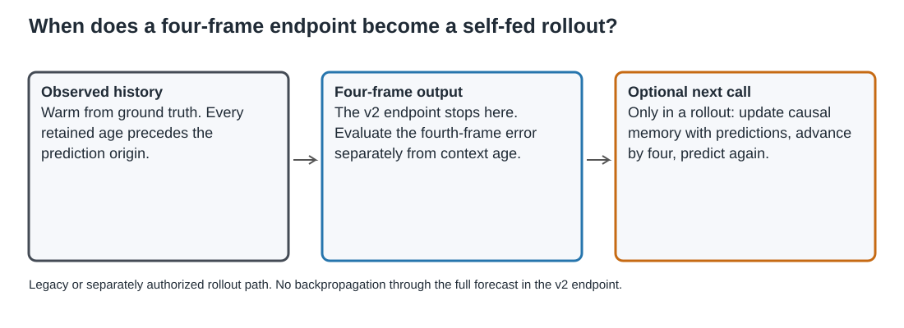
Figure D3-rollout — A single four-frame endpoint ends after one prediction. A self-fed rollout instead updates a causal buffer and makes another call. The lower path is legacy or separately authorized additional evidence; it is not another view of the v2 endpoint.
Ring-buffer storage order must never substitute for absolute/relative time identity. On every update the evaluator checks that all selected ages precede the new origin, that every requested age exists, and that target content is not copied into context before it has been predicted. Gradients are stopped between calls in the bounded rollout evaluation; this is not end-to-end BPTT across the full horizon.
These exact counts cover the specified tensors only. Metadata, dense output grids, temporary encoder candidates, and allocator overhead must be included separately when measuring end-to-end memory. Attention work can change even when one named context component is fixed.
The public name is Toroidal Re-entry Benchmark (TRB). LoopMom is retained only as a historical dataset/code identifier. A camera viewport moves over a static periodic world, making disappearance and re-entry exactly observable. This controlled environment tests memory access without claiming the semantic diversity or non-rigid motion of natural video.
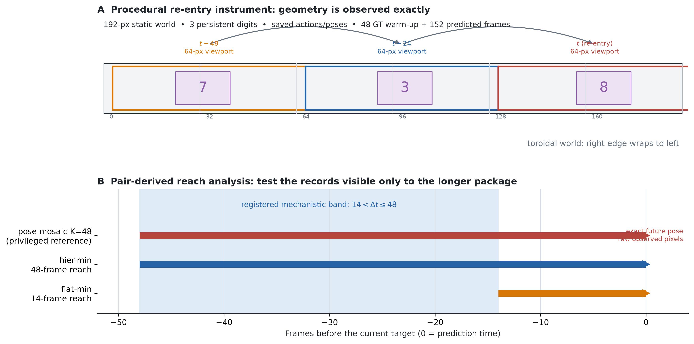
Рисунок 3.14 – Геометрія світу TRB і смуги різниці досяжності для порівнюваних пакетів.For a world point and camera pose , the observation is a viewport rendering of the periodic world. Visibility and package support are computed from geometry rather than from a model's prediction:
This relation defines potential access, not retained identity accuracy. The exact wrap-around convention, occlusion cases, data hashes, and visibility implementation remain in the dataset/evaluation registry and the archived original definitions.
In historical E2, the reach-difference population is defined for a declared pair before inspecting their errors:
Changing a package can change this historical population. Pair-specific effects therefore cannot be pooled as if every comparison evaluated identical pixels. The historical visibility figure below explains that distinction; it does not describe the v2 finalizer's mask.
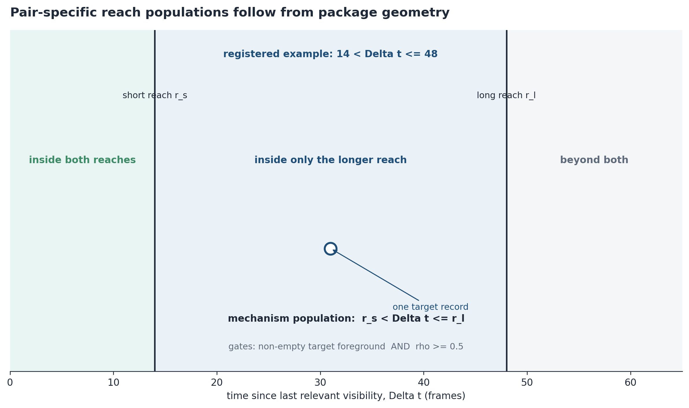
Рисунок 3.16 – Специфічна для кожної пари популяція різниці досяжності.The current v2 finalizer instead uses a fixed 96-frame/28-frame frame-level diagnostic for every selected model. For each of four target horizons, it flags a frame if any currently visible sprite was visible somewhere in the preceding 96 observed frames and its last such observation occurred before the start of the most recent 28-frame reference window. Visibility uses overlap of sprite and viewport world-column supports, not predicted foreground pixels. This is one common clip/horizon mask, not package-specific fine/coarse coverage and not the world-point set in equation (3.P9).
The finalizer reports mean_foreground_mse averaged across all four horizons, reentry_foreground_mse averaged over flagged frames, and the non-re-entry counterpart. It saves per-clip/per-horizon arrays for explicit later analysis. These summary endpoints are not the development-selection horizon4_foreground_mse. A horizon-4 or package-specific confirmation analysis would require its own declared postprocessing contract; it is not silently claimed by this chapter. An empty re-entry set yields a missing result, not a zero-error observation.
The primary development statistic is the trainer's horizon4_foreground_mse: decoded error at the fourth predicted frame where the target intensity exceeds 0.5. Within each fixed validation batch it is foreground-pixel weighted; those batch values are then weighted by batch size. With four batches of 16 samples, this is the mean of four batch-level masked errors, not the mean of 64 independently normalized clip errors:
Here is squared decoded pixel error, is batch size, and only horizon four enters the development criterion. The confirmation finalizer instead computes a masked mean separately for each clip/frame and then averages those per-frame errors over all four horizons or the flagged re-entry frames. Its weights and horizon population therefore differ. Pixel MSE, other horizons, SSIM, PSNR, diffusion loss, and latent loss remain secondary and cannot silently replace the development criterion. A foreground-conditioned error is not an object-identity score.
Historical E6 additionally uses persistent ground-truth object identities, a frozen one-to-one Hungarian assignment, object coverage, trajectory error, union-mask error, and identity accuracy. These custom definitions and edge cases remain in Appendix Д with the original implementation references. Coverage and identity must be reported independently: producing a plausible object in approximately the correct region can still be an identity failure.
For each declared contrast let when lower metric values are better. The two-seed summary is:
The mean is descriptive. Two training seeds do not characterize a broad seed distribution and do not justify a training-seed t interval. “Direction reproduced across two training seeds” is allowed only if both signs agree. Clip-clustered resampling preserves within-clip dependence; its interval is conditional on the trained checkpoint and is never relabelled as uncertainty over training runs. Historical multi-comparison intervals retain their original family and cannot be pooled with v2 results.
Every primary training cell uses 30,000 updates, seeds 0 and 1, and validation every 2,000 updates. Final-step development validation is primary; per-arm early stopping is not substituted after inspecting the curves. Two separate seed-0 calibration arms—Flat and Balanced recent at 1,792 tokens—were trained to 30k. They are two configurations, not two independent training seeds. The registered analysis tested a 2% remaining-improvement criterion together with stability of the ordering. Candidates from 8k through 24k did not meet the joint rule; ordering changed between 12k and 16k. “Ranking reversal” names that observed crossing, not an operation in the model code. The accepted 30k endpoint is bounded by the observed calibration range; it does not prove convergence beyond 30k or for every configuration.
The budgets are 320, 768, 1,152, 1,792, 2,432, and 3,072 retained tokens. At each budget Flat, Linear-age, and Geometric-age are trained with both seeds: 36 runs. Balanced recent is not a frontier arm. The question is how quality changes over an approximately tenfold token range. It is not a fixed-total-VRAM experiment because target and optimizer costs remain and attention sequence length changes. Plot actual numerical budget spacing rather than equally spaced categories.
Seven policies—Flat, Fine-heavy, Balanced recent, Coarse-heavy, Linear-age, Geometric-age, and Reach-optimized—share the budget. Three two-seed policy pairs reuse frontier checkpoints; four new pairs add eight runs. The question is which registered distribution is best on development validation, not which hand-selected visual package looks most plausible. Reused cells retain one identity in the registry and are not counted as independent replication.
Six recent full fine positions remain fixed while 0, 4, 8, 16, 32, or 64 exclusive older coarse positions are added. The resulting budgets are 384, 448, 512, 640, 896, and 1,408 tokens. Both seeds give 12 runs. This estimates the response to a compound increase in older coarse support, total budget, attention work, and reach. It does not isolate the causal effect of reach at fixed memory.
At budget 1,792, the one-level Flat and selected two-level hierarchy are reused. Selection is restricted to eligible hierarchical ALC constructions for the dependency; Flat is a comparator, not an input to the three-level builder. The new three-level pair adds four top tokens at each of 96 ages, leaving 1,408 tokens allocated by the selected coarse:fine ratio with deterministic 16-token rounding. The new top stream and projection add 1,280 parameters. Thus this is a comparison of registered constructions at fixed payload, not a pure scalar intervention on level count. Only two new training runs are required.
Nested, exclusive, and residual packages use budget 1,792 and both seeds. One pair is reused; four runs are new. Exclusive support must fit inside the finite history and changes coarse ages. Residual fine embeddings change representation semantics. Report feasibility and the dependency-selected base policy. A result is attributed to the complete registered package, not to “overlap alone.”
At budget 1,792 only, fine quotas of 64, 32, 16, and eight cells per selected fine time are crossed with recent, uniform, and geometric temporal placement. This gives 12 configurations and 24 runs. The exact number of fine times and coarse slots is generated under the fixed total payload. Spatial membership remains deterministic and content independent. The study tests how spatial savings can be reassigned to temporal coverage; it is not yet the integrated content-adaptive router.
The programme contains 43 unique configurations and 86 training runs: 80 concrete first-wave runs and six dependency-resolved second-wave runs. The complete development matrix is the registered development estimate. After all final records pass provenance checks, a hash-bound selection ledger is written before opening a fresh 500-clip confirmation set. Only the exact selected roles receive sealed-holdout confirmation status. The full development frontier and the ALC/LVL/OVR/STS families are not thereby confirmed wholesale.
The current bounded A4-MEC output records target-query attention mass/entropy for one fixed clip (index 0) and a direct denoiser probe at diffusion time 0.5. The probe uses target latent inputs and does not reproduce a full noisy sampling trajectory or a causal context-ablation experiment. It is a mechanism diagnostic, not an independent quality claim or proof of useful old-context retrieval. Appendix В carries the full identifiers, resolved dependencies, hashes, and invariants. No new experiment is added by editing this chapter.
A separate inference-only study may evaluate the selected Flat and hierarchical checkpoints for both seeds on a newly generated, hash-locked long TRB set. It requires prior authorization and registration of warmup, horizon bands, clip count, sampling/NFE, common random numbers, re-entry eligibility, failure handling, and the exact causal update path. No checkpoint is retrained or reselected. A timing preflight precedes any runtime estimate. Until that study exists, legacy E5/E6 carry the long-rollout evidence, and the 86-run matrix remains a four-frame endpoint study.
The implemented OpenSTL-native model maps to . It is trained end to end and does not reuse the controlled study's frozen codec or diffusion objective. The external protocols are Moving MNIST 10-to-10, one channel at 64×64, and TaxiBJ 4-to-4, two channels at 32×32 [1, 178]. Four long full-model runs are planned—two datasets, seeds 0 and 1—conditional on correctness, resource, quality, and authorization gates. Those runs alone cannot establish every component-quality ablation or a matched-baseline frontier.
The superseded fixed-region/packed-SimVP prototype is archived in Appendix Е. Fixed slots did not solve changing region identity; an early dynamic version still materialized dense fine state; repeated decode/re-encode was lossy; and second-order reversible rollout changed the predictive dynamics. The current model instead makes internal blocks reversible while retaining the same forward predictor in both execution modes.
A convolutional encoder generates stride-four fine candidates and stride-eight coarse coverage for every observed frame. For Moving MNIST these grids contain 256 and 64 cells per frame; for TaxiBJ, 64 and 16. The hierarchy gathers a global quota of fine tokens across the observed space–time volume before the Transformer:
The exact retained core input has shape . This is a real gather, not a dense padded tensor masked inside attention. Dense encoder candidates still exist transiently and may contribute to the training graph. The decoder also keeps coarse-grid information. Consequently the compact payload counter is not the complete live model state or total GPU peak.
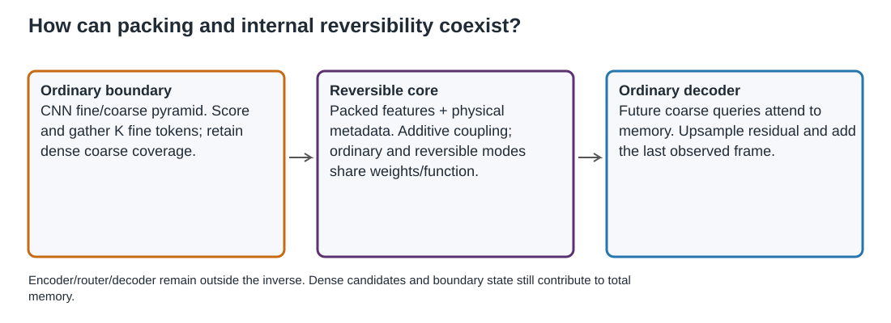
Figure D3-integrated — Encoder and router form an ordinary-autograd boundary; gathered tokens plus physical metadata enter the reversible core; future queries and the full-frame decoder form another ordinary boundary. Reversibility does not invert top-k selection or reconstruct discarded fine candidates.
The implemented density score standardizes fine–upsampled-coarse squared residual and adjacent-frame absolute change within each sample. The hybrid score adds a standardized learned scalar correction:
Standardization uses population standard deviation with a numerical floor of . Change is zero for the first observed frame. There is no separate predictive-entropy input or V-BLT module in this score. The word “content” refers to the features from which these scores are computed.
Dynamic membership first reserves up to min_detail_per_frame cells in each frame, bounded by the quota, then fills the remainder by score. Selected indices are sorted to give a canonical output order. Equal-score top-k membership is not guaranteed stable across devices; sorting selected indices is not a tie-breaking proof. Static membership uses evenly spaced midpoints over the flattened candidate volume.
static, density, and hybrid are inference membership policies. mixed is a training exposure regime that samples static versus hybrid batches; evaluation resolves it to hybrid. A route-aware checkpoint may be evaluated under all three policies as a switch/distribution-shift diagnostic. Comparing static-trained and mixed-trained checkpoints requires separate training and cannot be inferred from a switch.
Top-k membership is discrete. In dynamic modes a learned embedding of selected scores is added to selected features, providing a gradient path through selected scores; it does not differentiate the membership decision. Because switching modes also changes this score-feature addition, its effect is not attributable to membership alone. Route entropy, temporal/spatial coverage, frame counts, and adjacent-frame membership churn are diagnostic endpoints. The current score margin uses an unconstrained sorted-score boundary; with per-frame reservations it is not the exact margin of constrained selection. Route stability across forecast calls and seam/flicker behavior require separate evaluation.
Packed slot number has no geometric meaning. For a cell at row , column in a grid of height and width , the top-left-origin convention uses and , both strictly inside . Scale is , not the rank of a selected region. The last observed frame has time zero; older frames have negative time and future decoder queries have positive time, all divided by . Level indices are coarse 0, fine 1, and future-query 2.
This is the implemented continuous Fourier encoding, not RoPE-ND. Normalization is determined by the physical grid and configured protocol, never recomputed from selected tokens. Changing resolution preserves normalized cell centres but changes scale. Changing horizons changes the time denominator and is therefore a protocol/distribution shift, not automatically validated extrapolation. The public forward method enforces the configured input shape; a different protocol needs a matching configuration and verification.
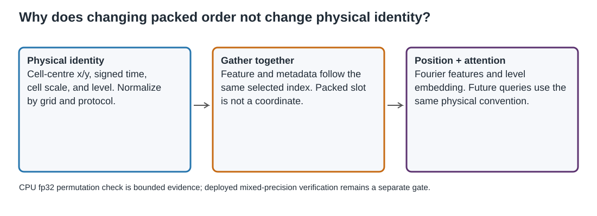
Figure D3-position — Features and their x/y/time/scale/level metadata move together when packed order changes. The fp32 CPU decoder-permutation test uses absolute and relative tolerances of . A deployed CUDA mixed-precision permutation tolerance is pending measurement, not inherited from this fp32 test.
Each core block splits feature channels and applies additive coupling:
is normalized self-attention and is a normalized feed-forward module. The inverse is exact in real arithmetic; numerical reconstruction error is measured. Dropout is disabled in the reversible core. Ordinary autograd and reverse-reconstruction execution evaluate this same forward function. Routing, encoder, decoder, optimizer state, and dense target loss stay outside the reversible boundary.
Future queries combine the last observed coarse feature grid with future physical coordinates. Cross-attention retrieves the processed packed memory; convolutional upsampling produces a full-resolution residual added to the last input frame. This path predicts the configured output window directly. Internal depth reversibility is not a claim of a reversible temporal world state.
CPU tests cover true quota/coverage, route response, metadata permutation, fp32 decoder permutation, inverse reconstruction, core forward and parameter/input-gradient parity, bfloat16 CPU-autocast core parity, model shapes, checkpoint round trip, and an OpenSTL training/validation/optimizer smoke path. The whole-model static test checks output/input-gradient closeness and gradient connectivity; it does not itself compare every whole-model parameter gradient. That stronger dynamic/full-model gate remains explicit in Appendix Ж.
Recorded core fp32 tolerances are for outputs; input gradients use absolute and relative ; parameter gradients use and . The double-precision inverse test uses . CPU bfloat16 parity has looser, separately specified tolerances; it does not certify CUDA bfloat16 behavior. No CPU test demonstrates competitive OpenSTL quality or a total-VRAM saving. Those result cells remain gated in Chapter 4.
The controlled method fixes a codec, head, endpoint, and training schedule while varying exact context packages. Its primary question is the cost and utility of retaining distant observed evidence. The integrated method instead composes real spatial packing, physical metadata, route-aware exposure, and an identical-forward reversible core in an OpenSTL-native predictor. Chapter 4 separates development allocation evidence, selected confirmation, historical self-fed boundaries, correctness gates, component profiles, and matched external prediction results. This separation permits a useful negative result without changing the question after evaluation.
The evidence is organized by the question answered, not by the chronology of scripts. New allocation results take the headline position only when their artifacts are complete. Historical evidence remains visible where it tests a different endpoint, particularly self-fed autoregressive behavior. Pending cells below are editorial placeholders, not simulated observations.
The chapter asks: why use a common 30k endpoint; how does quality respond to retained budget and purchased reach; how do allocation, depth, ownership, and space–time placement matter; which failures persist under self-feedback; and can the integrated model achieve useful matched quality and measured memory on OpenSTL?
The complete 86-run matrix is a registered development estimate. A contrast earns direction reproduced across two training seeds only when both seed directions agree. Sealed-holdout confirmation applies only to the selected roles actually evaluated after the selection ledger is locked. A4-MEC is a mechanism diagnostic. E2–E8 are historical/transfer boundary evidence in this revised chapter, even where their own original protocol included protected confirmation. These statuses cannot be exchanged because two experiments use the same metric name.
Every comparison identifies its invariant: retained payload, shared head, same forward function, detail quota, training schedule, or dataset protocol. Retained tokens, retained bytes, core activation storage, total allocated CUDA peak, reserved allocator peak, and runtime are separate endpoints. Ratios from different baselines are never multiplied.
Two-seed figures show both points and the arithmetic mean. Clip-level intervals are conditional on a trained model and retain the registered clustering and multiplicity correction. They do not represent the distribution of training outcomes. Main result tables contain one population and comparison family; configuration and hash tables reside in Appendices В and Г. All primary claims resolve through the claim registry shared with the abstracts and general conclusions.
The archived calibration compares two seed-0 configurations at 1,792 tokens, not a replicated two-seed treatment contrast. The registered 2% rule and ordering condition reject the tested 8k, 12k, 16k, 20k, and 24k endpoints. Flat and Balanced recent exchange order between 12k and 16k. Thirty thousand updates were accepted as the common endpoint after reviewing this evidence; a crossing is an empirical optimization effect, not a rank-reversal feature in the implementation.
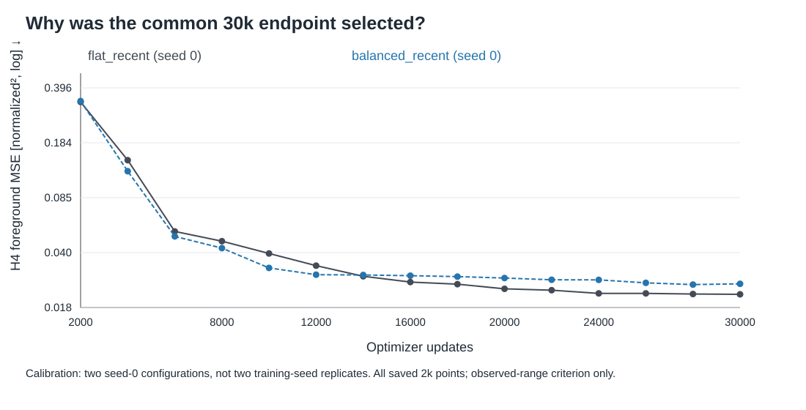
Figure D4-calibration — Horizon-4 foreground MSE against optimizer updates for the two seed-0 calibration configurations. Lower is better; points are saved 2k validations, not independent seed replicates. Source: hash-verified archived calibration logs and analysis; observed-range criterion only.
The figure uses every saved 2k validation point, including the earlier region where ranking differs. Its endpoint is horizon-4 foreground MSE, lower being better. The criterion only compares the observed training range. Passing at the terminal checkpoint alone would be tautological; the separate late-window stability check is therefore reported with the calibration artifact. This calibration does not establish that every primary configuration has converged or that the ordering remains unchanged beyond 30k.
The historical head control compares a 7.27M-parameter regression predictor and a 7.53M-parameter diffusion predictor with the same width, depth, heads, latent normalization, and six-frame context on both levels. Diffusion improved the single-step candidate-coverage diagnostic, whereas regression had lower error in the reported one-candidate self-fed comparison. A ground-truth-selected best-of-eight result is an oracle diagnostic, not deployable prediction quality. Eight diffusion candidates at 16 NFE cost 128 network evaluations, versus eight for the regression diagnostic.
Table D4-head-single — Historical one-step foreground MSE, lower is better; six fixed evaluation batches. Candidate mean and oracle selection are separate estimands, with no training-seed interval inferred.
| Endpoint | Regression | Diffusion |
|---|---|---|
| Oracle best of eight | 0.0664 | 0.0512 |
| Mean of eight candidates | 0.0714 | 0.0640 |
Table D4-head-rollout — Historical single-candidate self-fed foreground MSE, lower is better. These are configuration-specific point estimates, not a ranking over all possible heads.
| Context package | Regression | Diffusion |
|---|---|---|
| Hierarchical | 0.1682 | 0.1848 |
| Flat | 0.2015 | 0.2038 |
The full source table, sharpness, persistence comparator, and conditional interval are preserved in Appendix Е. The new campaign fixes WindowDiT rather than selecting a different head for each package. Neither the oracle diagnostic nor the historical single-candidate comparison establishes universal diffusion superiority.
The adapted Energy-Based Transformer could learn an ordering of some candidate states without demonstrating reliable cold-start descent into a structured prediction. These are distinct requirements. The tested EBT recipes and their energy/sharpness diagnostics are preserved in Appendix Е; they do not serve as competitive baselines for the new allocation matrix. Scaling EBT further would answer a different question and is not part of the current campaign.
The six-point budget frontier compares Flat, Linear-age, and Geometric-age at their exact registered budgets, shared head and schedule, and seeds 0 and 1. Its primary view is horizon-4 foreground MSE against retained tokens. The numeric axis preserves the uneven spacing. No smooth universal crossover is fitted between six discrete interventions.
[RESULT PENDING: A4_FRT_PRIMARY_FIG; evidence=registered development estimate; source=artifacts/v2/article4_primary_30k/post_training/all_final_development_metrics.json; registry=refactor_v2/registries/placeholders.json. No empirical value inserted.]
[RESULT PENDING: A4_FRT_RESULTS_TABLE; evidence=registered development estimate; source=artifacts/v2/article4_primary_30k/post_training/all_final_development_metrics.json; registry=refactor_v2/registries/placeholders.json. No empirical value inserted.]
Interpretation is result-gated. If hierarchy improves both seed outcomes at small budgets but loses at larger ones, the conclusion is a bounded allocation regime. If directions disagree, report the disagreement. If Flat remains better, the hypothesis is not supported in this protocol. The plotted development matrix is not a long autoregressive stability curve and is not promoted wholesale to sealed confirmation.
The coarse-expansion study retains six recent full fine positions and adds 0, 4, 8, 16, 32, or 64 older coarse positions. Its response curve uses coarse positions on the horizontal axis and identifies the associated budgets. The intervention increases memory payload, attention work, sequence length, and reach together. A favorable result means that this compound purchase is useful; it is not a fixed-cost estimate of reach alone.
[RESULT PENDING: A4_CEX_PRIMARY_FIG; evidence=registered development estimate; source=artifacts/v2/article4_primary_30k/post_training/all_final_development_metrics.json; registry=refactor_v2/registries/placeholders.json. No empirical value inserted.]
The selected roles and checkpoint/config hashes must be locked before fresh confirmation evaluation. The current v2 finalizer uses the common 96-frame/28-frame frame-level re-entry mask defined in Section 3.5.2, not the historical E2 pair-specific pixel population. It summarizes per-frame foreground error over all four horizons and over flagged re-entry frames. These confirmation summaries differ from the horizon-4 development-selection metric. A favorable comparison licenses only its named selected configurations and this fixed population. Full-population quality remains visible alongside re-entry behavior.
[RESULT PENDING: A4_CONFIRMATION_TABLE; evidence=sealed-holdout confirmation of selected roles only; source=artifacts/v2/article4_primary_30k/post_training/final_report.json; registry=refactor_v2/registries/placeholders.json. No empirical value inserted.]
[RESULT PENDING: A4_MEC_DIAGNOSTIC_FIG; evidence=mechanism diagnostic; source=artifacts/v2/article4_primary_30k/post_training/final_report.json; registry=refactor_v2/registries/placeholders.json. No empirical value inserted.]
The current attention output is a one-clip direct denoiser probe at time 0.5 with target-latent inputs, not a sampled-trajectory context-ablation test. Attention concentration alone is not a causal demonstration of useful retrieval. Missing or failed diagnostics are reported rather than replaced with a favorable qualitative example. A richer causal probe would be a separate registered evaluation, not an editorial relabelling of this one.
Legacy E2 remains substantive because its self-fed protocol is not the new four-frame endpoint. On the protected hier-min/flat-min reach-difference population, relevant evidence was older than 14 and no older than 48 frames, with the original visibility and nonempty-foreground conditions. The foreground-error advantage was +0.0980 for training seed 0 and +0.0914 for seed 1. Conditional clip-clustered 95% intervals were [0.0788, 0.1179] and [0.0736, 0.1098]. Positive values mean lower error for the hierarchy; these intervals do not quantify variation over training seeds.
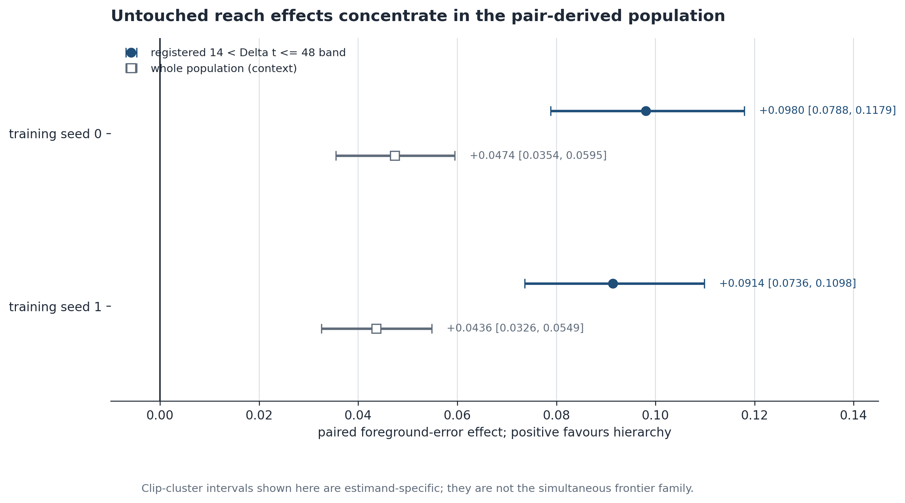
Рисунок 4.4 – Ефекти у визначених для кожної пари вибірках досяжності. Для обох ініціалізацій перевага ієрархії в зареєстрованій смузі досяжності більша, ніж у повній оцінюваній вибірці, що відповідає механізму, передбаченому геометрією пакета. Джерело: побудовано автором за замороженими результатами E2.
Таблиця 4.2 – Повний набір підтверджувальних показників у відкладеній вибірці . Кожен рядок містить 1 006 записів кадрів із 96 кліпів. Інтервали отримано парним статистичним виведенням з урахуванням кластеризації за кліпами для названої навченої моделі; два стовпці ініціалізацій не об’єднуються.
| Показник | Ефект для ініціалізації 0 [95 % ДІ] | Ефект для ініціалізації 1 [95 % ДІ] |
|---|---|---|
| MSE для непорожнього еталонного переднього плану | +0,0980 [0,0788; 0,1179] | +0,0914 [0,0736; 0,1098] |
| MSE для об’єднаної маски | +0,0808 [0,0632; 0,0987] | +0,0773 [0,0613; 0,0940] |
| MSE для повного кадру | +0,0045 [0,0033; 0,0058] | +0,0042 [0,0032; 0,0052] |
| MSE еталонного фону | +0,0013 [0,0006; 0,0019] | +0,0012 [0,0006; 0,0017] |
| Прецизійність переднього плану | +0,1550 [0,1027; 0,2066] | +0,0691 [0,0051; 0,1317] |
| Повнота переднього плану | +0,2708 [0,2180; 0,3238] | +0,2539 [0,2060; 0,3029] |
| F1-показник для переднього плану | +0,2458 [0,1975; 0,2954] | +0,2342 [0,1893; 0,2801] |
| Уникнення пропущених компонентів | +0,4911 [0,3686; 0,6102] | +0,5527 [0,4315; 0,6699] |
| Уникнення зайвих компонентів | +0,3231 [0,1530; 0,4915] | +0,1968 [0,0334; 0,3701] |
| Покриття компонентів | +0,2622 [0,1968; 0,3264] | +0,2992 [0,2370; 0,3605] |
The accompanying union-mask, false/missed component, and coverage endpoints guard against explaining foreground MSE by simply omitting difficult objects. E2 supports the original configuration and protected population, not every v2 allocation or a universal long-rollout guarantee. Its B1 extension also changes target stride, target tokens, auxiliary loss, and training work; that result belongs to the complete configuration. Full E2 arithmetic and the old frontier remain recoverable in Appendix Е.
The seven-policy allocation study holds retained payload fixed and reuses three frontier pairs. The primary horizontal dot plot orders policies by their two-seed development mean while showing both seed points. Order is descriptive; the selected policy must follow the registered selection rule, including eligibility for dependent constructions.
[RESULT PENDING: A4_ALC_PRIMARY_FIG; evidence=registered development estimate; source=artifacts/v2/article4_primary_30k/post_training/all_final_development_metrics.json; registry=refactor_v2/registries/placeholders.json. No empirical value inserted.]
The level-depth comparison includes reused Flat and two-level checkpoints and the new three-level pair. Its figure reports exact token counts, top-stream presence, and the 1,280-parameter difference in the provenance note. A positive or negative effect concerns these constructions, including payload reallocation and slot rounding. It is not evidence that adding an abstract level necessarily helps or hurts.
[RESULT PENDING: A4_LVL_PRIMARY_FIG; evidence=registered development estimate; source=artifacts/v2/article4_primary_30k/post_training/all_final_development_metrics.json; registry=refactor_v2/registries/placeholders.json. No empirical value inserted.]
The ownership study compares the registered packages at fixed total tokens. Exclusive ownership relocates coarse ages; residual ownership changes the fine representation. Report the dependency-selected base and its feasibility constraint. Avoid the phrase “isolated effect of overlap.”
[RESULT PENDING: A4_OVR_PRIMARY_FIG; evidence=registered development estimate; source=artifacts/v2/article4_primary_30k/post_training/all_final_development_metrics.json; registry=refactor_v2/registries/placeholders.json. No empirical value inserted.]
At budget 1,792, the four fine quotas and three temporal placements define a 4×3 response surface. A mean heat map is accompanied by both seed surfaces, not a hidden average alone. This experiment tests where spatial detail should be retained over time. Its deterministic spatial policy is a bridge to, not empirical proof of, content-adaptive integrated routing.
[RESULT PENDING: A4_STS_PRIMARY_FIG; evidence=registered development estimate; source=artifacts/v2/article4_primary_30k/post_training/all_final_development_metrics.json; registry=refactor_v2/registries/placeholders.json. No empirical value inserted.]
The token arithmetic belongs to the configuration appendix. Analytic ratios such as those reported for historical packages concern retained tokens or latent payload. They are not measured end-to-end VRAM ratios and do not imply equal-quality savings.
The historical five-seed factorial study asks whether temporal subsampling and spatial coarsening have the same ranking under different prediction heads. Diffusion favored full-resolution temporal anchors in all five reported seeds. Regression changed direction across seeds. The comparison is nearly, not exactly, token-matched: strided-flat has 1,088 tokens and hier-long 1,152.
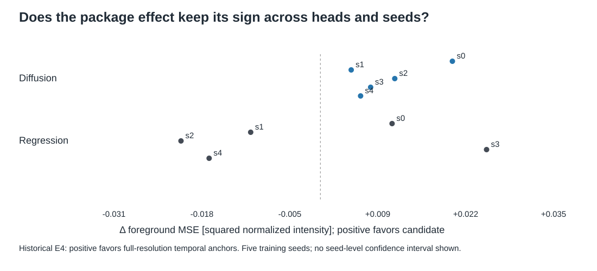
Figure D4-E4 — Signed foreground-MSE difference, spatial-package error minus temporal-package error, in squared normalized pixel intensity; positive favors full-resolution temporal anchors. Each point is one trained seed's clip-aggregated effect across all 152 self-fed forecast frames in 100 development clips after a 48-frame warmup. Five seeds are shown per prediction head. No clip interval is drawn as training-seed uncertainty. Values are transcribed mechanically from source Table 4.4, not recomputed from raw arrays. The packages contain 1,152 versus 1,088 tokens; this is historical, nearly matched evidence, not the v2 frontier. Full clip-conditional intervals remain in Appendix Е.
E4 motivates a fixed head, common training schedule, and visible seed outcomes. It is not pooled statistically with the new matrix. Regression heterogeneity is not evidence of a stable reversed preference, and a head/package interaction is not isolated by changing several training interfaces at once. The new allocation result therefore stays tied to its WindowDiT contract.
All new primary runs share two training seeds and the final 30k endpoint. Configurations, data, codec, source commit, and completed checkpoint hashes are validated before aggregation. A missing seed is an incomplete comparison, not a one-seed mean. An interrupted/restarted run resumes its saved state and is not counted as an additional independent replicate. The complete matrix remains development evidence even after selected holdout contrasts are confirmed.
Legacy E7c varies NFE and generator randomness for fixed trained checkpoints. Generator seeds are not training seeds. E7a replaces the codec and retrains predictors; it changes reconstruction, normalization, latent geometry, and optimization jointly. Their full simultaneous intervals are in Appendix Д/Е. The upper-budget flat inversion was less certain than the lower-budget effects, so neither check licenses a universal threshold. The main chapter does not duplicate their composite plots.
The original seed-0 long-loop run suggested a late hierarchy disadvantage, but two new training seeds did not reproduce it. For forecast frames 61–256 the reported effects were −0.0064 [−0.0095, −0.0032], +0.0074 [0.0038, 0.0112], and +0.0087 [0.0035, 0.0139]. Positive favors the hierarchy; intervals are conditional clip-level intervals for each trained model.
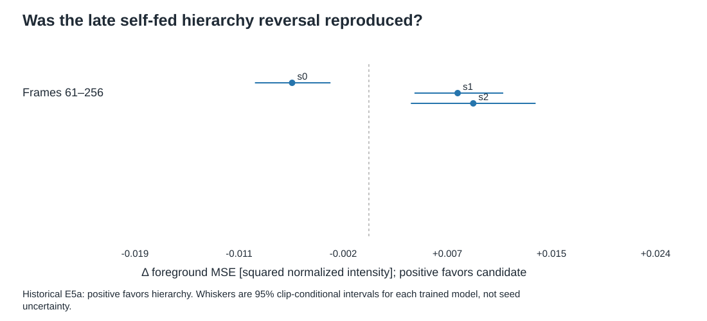
Figure D4-E5 — Signed foreground-MSE difference, contiguous-fine error minus long-reach-hierarchy error, in squared normalized pixel intensity. Positive favors hierarchy. The population is nonempty ground-truth foreground records in forecast frames 61–256 of 100 development clips after a 224-frame warmup. Points show training seeds 0, 1, and 2; whiskers are 95% clip-bootstrap intervals conditional on each trained pair. The configurations have unequal retained budgets (3,072 versus 1,280 tokens), so this is a configuration-level long-rollout boundary, not an equal-memory contrast. The negative seed-0 direction is not reproduced. Source values and interval limits accompany the plot; no raw-array reanalysis or v2 extrapolation is implied.
The correct conclusion is that rollout age is not a calibrated switching rule. Seed 0 does not establish a universal degradation time. Nor do the positive replications prove stable behavior for arbitrary horizons. This negative result remains in the main narrative because it prevents a stronger but unsupported claim.
Historical E6 evaluates 300 self-generated frames in 100 protected clips after a 48-frame warmup, using three seeds per package at 1,152 context tokens. The persistent-object assignment is fixed before evaluation. Hierarchy improves the point estimates for coverage and trajectory error, but only seeds 0 and 2 have nonzero simultaneous intervals for those endpoints. Flat preserves digit identity better in all three seeds. Low absolute identity accuracy means neither configuration solves the task.
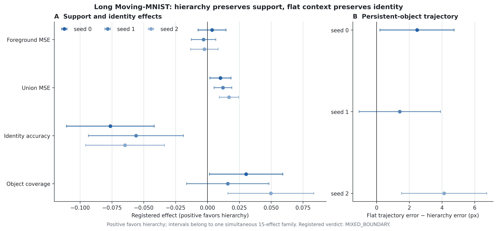
Рисунок 4.11 – Просторове покриття й неперервність проти ідентичності у довгому Moving-MNIST з об’єктами, що зберігаються в часі. Напрям покриття й похибки траєкторії сприяє ієрархії для всіх трьох ініціалізацій, але одночасні інтервали не перетинають нуль лише для ініціалізацій 0 і 2. Плоский контекст краще зберігає ідентичність цифр для всіх трьох ініціалізацій. Низькі абсолютні показники не дають підстав вважати задачу розв’язаною. Джерело: побудовано автором за замороженими результатами E6.
The full relative and absolute tables are split in Appendix Е so effect units are not mixed with raw measurements. Long Moving-MNIST is retained here solely as historical/transfer boundary evidence. It is excluded from the new hierarchy campaign and is not the standard Moving MNIST OpenSTL experiment planned below.
E8a's pose-indexed raw memory has privileged camera information and stores observed pixels without the learned token budget. It diagnoses the gap between potential access and learned reuse, not a competitive memory baseline. Its complete plot is moved to Appendix Е. Earlier short Moving-MNIST/TaxiBJ feasibility results are also retained there as historical context while new matched results are pending; they are not relabelled as results of the new integrated architecture.
[RESULT PENDING: A4_SELECTED_ROLLOUT_FIG; evidence=registered development estimate; source=separately authorized sealed rollout bundle (not yet registered); registry=refactor_v2/registries/placeholders.json. No empirical value inserted.]
This placeholder is inactive unless the separate selected-checkpoint rollout is authorized and registered. It requires evaluation, not retraining or relaunch of the 86 runs. If absent, remove this result slot at release and retain E5/E6 as the evidence for long autoregressive behavior.
This section is an explicit evidence-gated draft. The current architecture is implemented; competitive prediction and measured GPU-memory savings are not inferred from compatibility tests. The old fixed-region/second-order prototype is not used to fill these cells.
The recorded CPU checks establish the bounded quota, coordinate, core inverse/parity, shape, checkpoint, and OpenSTL interface contracts listed in Appendix Ж.v2.1. Dynamic full-model parameter parity and deployed CUDA mixed-precision position/switch checks remain explicit gates. No GPU-memory or competitive-quality result is reported by this summary.
CPU quota, metadata, inverse, core parity, checkpoint, and OpenSTL smoke tests establish bounded compatibility. Full-model dynamic parameter-gradient parity, deployed mixed-precision permutation behavior, route switches under trained weights, and CUDA stability retain their own statuses. A passing CPU gate is not an empirical performance result.
The intended six-component comparison is Flat-Dense, Hier-Static, Flat-Reversible, Hier-Static-Reversible, Hier-Dynamic, and Full. Same-checkpoint ordinary/reversible execution isolates storage in an identical forward function. Flat-versus-hierarchy quality and static-trained versus route-aware quality need separately trained checkpoints; execution toggles do not replace those ablations.
[RESULT PENDING: INT_COMPONENT_ABLATION_TABLE; evidence=conditional integrated evidence cell; source=integrated accepted evidence bundle (not yet measured/locked); registry=refactor_v2/registries/placeholders.json. No empirical value inserted.]
[RESULT PENDING: INT_COMPONENT_MEMORY_FIG; evidence=conditional integrated evidence cell; source=integrated accepted evidence bundle (not yet measured/locked); registry=refactor_v2/registries/placeholders.json. No empirical value inserted.]
[RESULT PENDING: INT_CHECKPOINTING_PROFILE; evidence=conditional integrated evidence cell; source=integrated accepted evidence bundle (not yet measured/locked); registry=refactor_v2/registries/placeholders.json. No empirical value inserted.]
Profiles must pair host, batch, precision, horizon, optimizer state, warmup, and measurement boundaries. Report retained bytes, inference allocated/reserved peak, training allocated/reserved peak, activation increment, throughput, and recomputation. Checkpointing is the practical same-model comparator [30, 175]. If it is absent, the reversible claim is restricted to comparison with ordinary autograd; no best-available memory–compute claim is made.
The default retained-token arithmetic is 2,560 versus 800 on Moving MNIST and 256 versus 80 on TaxiBJ: a 3.2 token-count ratio in each case. These counts exclude several live boundary tensors and do not establish a 3.2× CUDA-memory saving. Dynamic routing at unchanged quota has the same retained-token count; it cannot be counted as another memory multiplier.
[RESULT PENDING: INT_ROUTING_SWITCH_FIG; evidence=conditional integrated evidence cell; source=integrated accepted evidence bundle (not yet measured/locked); registry=refactor_v2/registries/placeholders.json. No empirical value inserted.]
[RESULT PENDING: INT_ROUTING_TRAINING_REGIME_FIG; evidence=conditional integrated evidence cell; source=integrated accepted evidence bundle (not yet measured/locked); registry=refactor_v2/registries/placeholders.json. No empirical value inserted.]
[RESULT PENDING: INT_ROUTING_STABILITY_FIG; evidence=conditional integrated evidence cell; source=integrated accepted evidence bundle (not yet measured/locked); registry=refactor_v2/registries/placeholders.json. No empirical value inserted.]
[RESULT PENDING: INT_QUOTA_FRONTIER_FIG; evidence=conditional integrated evidence cell; source=integrated accepted evidence bundle (not yet measured/locked); registry=refactor_v2/registries/placeholders.json. No empirical value inserted.]
Static/density/hybrid inference switches on a route-aware checkpoint test robustness to membership and score-feature changes. Static-only versus mixed exposure is a separate training contrast. Report quality together with coverage, score entropy, frame allocation, churn/Jaccard, margin limitations, and seam/flicker diagnostics. A smaller dynamic quota is a memory benefit only when the real packed tensor and measured resource decrease while the declared quality tolerance is met. If no smaller-quota test is completed, describe routing only as an allocation mechanism.
[RESULT PENDING: INT_MM_RESULTS_TABLE; evidence=conditional integrated evidence cell; source=integrated accepted evidence bundle (not yet measured/locked); registry=refactor_v2/registries/placeholders.json. No empirical value inserted.]
The full model uses the OpenSTL 10-to-10 protocol, seeds 0 and 1, validation-only checkpoint selection, and one locked test evaluation. Report MSE, MAE, SSIM, and PSNR with the implementation's scaling, test-set size, and channel reduction. Fixed qualitative strips follow aggregate results and use locked clip indices; no best-case selection is allowed. If the model misses the declared quality tolerance, report the miss even if its memory is lower.
[RESULT PENDING: INT_TAXIBJ_RESULTS_TABLE; evidence=conditional integrated evidence cell; source=integrated accepted evidence bundle (not yet measured/locked); registry=refactor_v2/registries/placeholders.json. No empirical value inserted.]
TaxiBJ uses the two-channel 4-to-4 32×32 protocol with its original normalization and split. Seed outcomes and matched local baselines are reported independently of Moving MNIST. These two datasets establish bounded synthetic and real-data behavior, not general superiority on natural video.
[RESULT PENDING: INT_MATCHED_BASELINE_TABLE; evidence=conditional integrated evidence cell; source=integrated accepted evidence bundle (not yet measured/locked); registry=refactor_v2/registries/placeholders.json. No empirical value inserted.]
[RESULT PENDING: INT_MM_PARETO_FIG; evidence=conditional integrated evidence cell; source=integrated accepted evidence bundle (not yet measured/locked); registry=refactor_v2/registries/placeholders.json. No empirical value inserted.]
[RESULT PENDING: INT_TAXIBJ_PARETO_FIG; evidence=conditional integrated evidence cell; source=integrated accepted evidence bundle (not yet measured/locked); registry=refactor_v2/registries/placeholders.json. No empirical value inserted.]
[RESULT PENDING: INT_CROSS_DATASET_SYNTHESIS; evidence=conditional integrated evidence cell; source=integrated accepted evidence bundle (not yet measured/locked); registry=refactor_v2/registries/placeholders.json. No empirical value inserted.]
Published numbers are contextual references unless data, normalization, selection, schedule, metric implementation, precision, hardware, and profiling boundaries match. Existing compatible local checkpoints may avoid retraining; incompatible ones require new authorization and a budget estimate. Four final full-model runs do not include this additional baseline work. A Pareto-improving claim requires measured quality and memory under the matched protocol: no comparator may be both more accurate and lower-memory. Report dataset-specific failure or parity rather than averaging it away. If evidence is absent, this section contracts to architecture/correctness and explicitly untested hypotheses.
First, is useful past evidence outside the flat window? Second, is error dominated by coverage/trajectory or by fine identity? Third, is the limiting resource retained deployment state, training activations, or both? Fourth, is information density sufficiently uneven and stable to justify the router's overhead? These questions identify the intervention and the endpoint needed to test it.
Figure D4-resources — Spatial/temporal allocation changes retained evidence; reversibility changes stored core activations; parameters/optimizer and workspace remain separate accounting terms. No arrow represents multiplication of independently measured ratios.
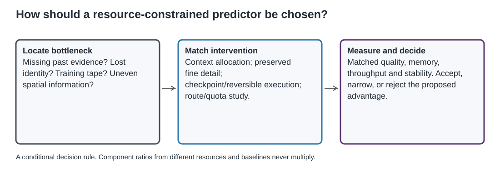
Figure D4-decision — Inspect the bottleneck, choose a matched comparison, and accept only a quality–resource trade-off supported by that comparison. Routing remains optional if overhead or instability outweighs its benefit.
The dissertation's outcome is an operating region rather than a universal winner. Coarse older evidence is useful only if it is both relevant and usable. Reversibility is useful only where activation storage matters enough to justify recomputation. Spatial routing is useful only where allocation quality or a smaller viable quota offsets its scoring and boundary costs. Failure of full composition does not invalidate a separately measured component result; it limits the integrated claim.
Published software for the procedural datasets, TempVerseFormer, and V-BLT is distinguished from later research branches [171–173]. The Article 4 and integrated controllers use immutable configs, checkpoint resume, local-authoritative logs, and W&B mirroring. Exact commands, source hashes, model tests, profile boundaries, and evidence-cell statuses are in Appendix Ж. A W&B chart is a visualization of local artifacts, not an independent result or an alternative source of truth.
Інструментарій має дослідницьке й навчальне призначення. Він містить повторно використовувані генератори, інтерфейси пакетів, засоби оцінювання розгортань і статистичні процедури, завдяки чому перевірка механізму не змішується з оцінюванням загальної продуктивності. Перед додаванням нового пакета потрібно визначити геометрію прив’язок, кількість контекстних і цільових токенів, допустимий тип порівняння та оцінювану популяцію. Ця дисципліна є окремим практичним результатом дисертації.
Звіти про впровадження документують використання в ТОВ «ОРНЕТІКА» та в навчальному процесі Вінницького національного технічного університету від 14 жовтня 2025 року та 19 вересня 2025 року. Затверджена сфера застосування охоплює методи реверсивного трансформера та токенізації ентропії. Ці звіти не можна переосмислювати як валідацію розгортання предиктора, описаного в розділі 3. Остаточні адміністративні додатки повинні відтворювати наданий автором підписаний текст та скановані копії.
The frozen head/codec and immutable configurations limit uncontrolled changes but do not turn compound CEX/LVL/OVR interventions into isolated mechanisms. Retained tokens are not total memory; foreground quality is not identity; context reach is not rollout stability. TRB's static toroidal world and action-conditioned viewport make exact observability possible but restrict the ecological scope of the result.
Two training seeds show the outcomes of two runs, not a well-estimated seed distribution. Six budgets define discrete observed regimes, not a continuous scaling law. Selection remains development-only; protected evaluation is restricted to its registered roles. Routing and quota selection must not use test data. Same-host profiles and compatible baseline protocols are necessary for memory claims. Moving MNIST and TaxiBJ do not cover natural-video diversity or arbitrary future horizons.
[RESULT PENDING: CLAIM_A4_SUMMARY; evidence=registered development estimate; source=artifacts/v2/article4_primary_30k/post_training/all_final_development_metrics.json; registry=refactor_v2/registries/placeholders.json. No empirical value inserted.]
[RESULT PENDING: CLAIM_INT_SUMMARY; evidence=conditional integrated evidence cell; source=integrated accepted evidence bundle (not yet measured/locked); registry=refactor_v2/registries/placeholders.json. No empirical value inserted.]
The final ordering is: registered development allocation results; sealed confirmation of selected contrasts; exact-status allocation diagnostics; historical self-fed and negative boundaries; measured component memory; and the dataset-specific matched OpenSTL position. Until the claim ledger is locked, neither this conclusion nor the abstracts claim a successful new frontier or integrated superiority. Missing, neutral, and negative outcomes remain scientifically valid endpoints of the planned comparisons.
This editorial conclusion preserves the six-task order. Result-dependent comparative sentences are deferred to the locked claim ledger; the historical source conclusion is retained in Appendix Е.
[RESULT PENDING: CLAIM_A4_SUMMARY; evidence=registered development estimate; source=artifacts/v2/article4_primary_30k/post_training/all_final_development_metrics.json; registry=refactor_v2/registries/placeholders.json. No empirical value inserted.]
[RESULT PENDING: CLAIM_INT_SUMMARY; evidence=conditional integrated evidence cell; source=integrated accepted evidence bundle (not yet measured/locked); registry=refactor_v2/registries/placeholders.json. No empirical value inserted.]
The final design rule is conditional on the bottleneck and task: test access when evidence is missing, detail when identity is lost, activation reconstruction when training storage dominates, and dynamic allocation when unequal information density justifies its overhead. Do not multiply ratios from unrelated memory terms. The new hierarchy and integration blocks form one manuscript in preparation [A4]; institutional publication status, final counts, and language harmonization remain release gates.
Усі джерела мають стабільні числові ідентифікатори в дисертації. Бібліографічні назви наведено мовою оригіналу; українські джерела подано українською. У тексті посилання оформлено у квадратних дужках.
Tan C., Li S., Gao Z., et al. OpenSTL: A Comprehensive Benchmark of Spatio-Temporal Predictive Learning. NeurIPS 36 (D&B), 2023.
Ho J., Jain A., Abbeel P. Denoising Diffusion Probabilistic Models. NeurIPS 33, 2020.
Rombach R., Blattmann A., Lorenz D., Esser P., Ommer B. High-Resolution Image Synthesis with Latent Diffusion Models. CVPR, 2022.
Peebles W., Xie S. Scalable Diffusion Models with Transformers (DiT). ICCV, 2023.
Згуровський М. З., Панкратова Н. Д. Основи системного аналізу: підручник. Київ: Видавнича група BHV, 2007. 544 с. ISBN 978-966-552-153-2.
Zgurovsky M. Z., Pankratova N. D. System Analysis: Theory and Applications. 1st ed. Springer Berlin, Heidelberg, 2007. XXII, 447 p. DOI: 10.1007/978-3-540-48880-4.
Mesarović M. D., Macko D., Takahara Y. Theory of Hierarchical, Multilevel Systems. Academic Press, 1970.
Simon H. A. The Architecture of Complexity. Proceedings of the American Philosophical Society 106(6):467–482, 1962.
Shannon C. E. A Mathematical Theory of Communication. Bell System Technical Journal 27:379–423, 623–656, 1948.
Kalman R. E. A New Approach to Linear Filtering and Prediction Problems. Journal of Basic Engineering 82(1):35–45, 1960.
Ashby W. R. An Introduction to Cybernetics. Chapman & Hall, 1956.
Vaswani A., Shazeer N., Parmar N., et al. Attention Is All You Need. NeurIPS 30, 2017.
Dao T., Fu D. Y., Ermon S., Rudra A., Ré C. FlashAttention: Fast and Memory-Efficient Exact Attention with IO-Awareness. NeurIPS 35, 2022.
Dai Z., Yang Z., Yang Y., Carbonell J., Le Q. V., Salakhutdinov R. Transformer-XL: Attentive Language Models Beyond a Fixed-Length Context. ACL, 2019.
Rae J. W., Potapenko A., Jayakumar S. M., Lillicrap T. P. Compressive Transformers for Long-Range Sequence Modelling. ICLR, 2020.
Wu Y., Rabe M. N., Hutchins D., Szegedy C. Memorizing Transformers. ICLR, 2022.
Kitaev N., Kaiser Ł., Levskaya A. Reformer: The Efficient Transformer. ICLR, 2020.
Beltagy I., Peters M. E., Cohan A. Longformer: The Long-Document Transformer. arXiv:2004.05150, 2020.
Gu A., Dao T. Mamba: Linear-Time Sequence Modeling with Selective State Spaces. arXiv:2312.00752, 2023.
Saxena V., Ba J., Hafner D. Clockwork Variational Autoencoders. NeurIPS 34, 2021.
Harvey W., Naderiparizi S., Masrani V., Weilbach C., Wood F. Flexible Diffusion Modeling of Long Videos (FDM). NeurIPS 35, 2022.
Po R., Nitzan Y., Zhang R., Chen B., Dao T., Shechtman E., Wetzstein G., Huang X. Long-Context State-Space Video World Models. arXiv:2505.20171, 2025.
Oshima Y., Iwasawa Y., Suzuki M., Matsuo Y., Furuta H. WorldPack: Compressed Memory Improves Spatial Consistency in Video World Modeling. arXiv:2512.02473, 2025.
Wu T., Yang S., Po R., Xu Y., Liu Z., Lin D., Wetzstein G. Video World Models with Long-term Spatial Memory. arXiv:2506.05284, 2025.
Ranzato M., Chopra S., Auli M., Zaremba W. Sequence Level Training with Recurrent Neural Networks (exposure bias). ICLR, 2016.
Bengio S., Vinyals O., Jaitly N., Shazeer N. Scheduled Sampling for Sequence Prediction with Recurrent Neural Networks. NeurIPS 28, 2015.
Huang X., Li Z., He G., Zhou M., Shechtman E. Self Forcing: Bridging the Train-Test Gap in Autoregressive Video Diffusion. NeurIPS 2025 (spotlight); arXiv:2506.08009.
Werbos P. J. Backpropagation Through Time: What It Does and How to Do It. Proceedings of the IEEE 78(10), 1990.
Williams R. J., Peng J. An Efficient Gradient-Based Algorithm for On-Line Training of Recurrent Network Trajectories (truncated BPTT). Neural Computation 2(4), 1990.
Chen T., Xu B., Zhang C., Guestrin C. Training Deep Nets with Sublinear Memory Cost. arXiv:1604.06174, 2016.
Griewank A., Walther A. Algorithm 799: revolve – An Implementation of Checkpointing for the Reverse or Adjoint Mode of Computational Differentiation. ACM TOMS 26(1), 2000.
Gomez A. N., Ren M., Urtasun R., Grosse R. B. The Reversible Residual Network: Backpropagation Without Storing Activations. NeurIPS 30, 2017.
Koutník J., Greff K., Gomez F., Schmidhuber J. A Clockwork RNN. Proceedings of Machine Learning Research 32(2):1863–1871, ICML, 2014.
Kim T., Ahn S., Bengio Y. Variational Temporal Abstraction. NeurIPS 32, 2019.
Zakharov A., Guo Q., Fountas Z. Long-Horizon Video Prediction Using a Dynamic Latent Hierarchy. arXiv:2212.14376, submitted 2022, revised 2023.
Yan W., Hafner D., James S., Abbeel P. Temporally Consistent Transformers for Video Generation (TECO). ICML, 2023.
Chandratreya I. P., Charatan D., Van Hoorick B., Zakharov S., Guizilini V., Isola P., Sitzmann V. MilliVid: Hierarchical Latents for Long-Range Consistency in Video Generation. arXiv:2606.09056, 2026.
Liu Y., Zhang K., Li Y., Yan Z., Gao C., Chen R., Yuan Z., Huang Y., Sun H., Gao J., He L., Sun L. Sora: A Review on Background, Technology, Limitations, and Opportunities of Large Vision Models. arXiv:2402.17177, 2024.
Lipton Z. C. The Mythos of Model Interpretability. Communications of the ACM 61(10), 2018.
Rudin C. Stop Explaining Black Box Machine Learning Models for High Stakes Decisions and Use Interpretable Models Instead. Nature Machine Intelligence 1, 2019.
von Bertalanffy L. General System Theory: Foundations, Development, Applications. George Braziller, 1968.
Goodfellow I., Pouget-Abadie J., Mirza M., et al. Generative Adversarial Networks. NeurIPS 27, 2014.
Kingma D. P., Welling M. Auto-Encoding Variational Bayes. ICLR, 2014.
Kendall A., Gal Y. What Uncertainties Do We Need in Bayesian Deep Learning for Computer Vision? NeurIPS 30, 2017.
Guo C., Pleiss G., Sun Y., Weinberger K. Q. On Calibration of Modern Neural Networks. Proceedings of Machine Learning Research 70:1321–1330, ICML, 2017.
Bhadra S., Kelkar V. A., Brooks F. J., Anastasio M. A. On Hallucinations in Tomographic Image Reconstruction. IEEE Transactions on Medical Imaging 40(11):3249–3260, 2021. DOI: 10.1109/TMI.2021.3077857.
Ebel P., Sainte Fare Garnot V., Schmitt M., Wegner J. D., Zhu X. X. UnCRtainTS: Uncertainty Quantification for Cloud Removal in Optical Satellite Time Series. IEEE/CVF Conference on Computer Vision and Pattern Recognition Workshops, pp. 2086–2096, 2023. DOI: 10.1109/CVPRW59228.2023.00202.
Huot F., Hu R. L., Goyal N., Sankar T., Ihme M., Chen Y.-F. Next Day Wildfire Spread: A Machine Learning Data Set to Predict Wildfire Spreading From Remote-Sensing Data. IEEE Transactions on Geoscience and Remote Sensing 60:1–13, 2022. DOI: 10.1109/TGRS.2022.3192974.
Shaddy B., Ray D., Farguell A., et al. Generative Algorithms for Fusion of Physics-Based Wildfire Spread Models with Satellite Data for Initializing Wildfire Forecasts. Artificial Intelligence for the Earth Systems 3(3):e230087, 2024. DOI: 10.1175/AIES-D-23-0087.1.
Bond-Taylor S., Leach A., Long Y., Willcocks C. G. Deep Generative Modelling: A Comparative Review of VAEs, GANs, Normalizing Flows, Energy-Based and Autoregressive Models. IEEE TPAMI 44(11), 2022.
Ji Z., Lee N., Frieske R., et al. Survey of Hallucination in Natural Language Generation. ACM Computing Surveys 55(12), 2023.
Song J., Meng C., Ermon S. Denoising Diffusion Implicit Models. ICLR, 2021.
OpenAI (Brooks T., Peebles B., et al.). Video Generation Models as World Simulators (Sora technical report), 2024.
Ho J., Salimans T., Gritsenko A., Chan W., Norouzi M., Fleet D. J. Video Diffusion Models. NeurIPS 35, 2022.
Blattmann A., Rombach R., Ling H., Dockhorn T., Kim S. W., Fidler S., Kreis K. Align Your Latents: High-Resolution Video Synthesis with Latent Diffusion Models. CVPR, 2023.
Blattmann A., Dockhorn T., Kulal S., et al. Stable Video Diffusion: Scaling Latent Video Diffusion Models to Large Datasets. arXiv:2311.15127, 2023.
Singer U., Polyak A., Hayes T., et al. Make-A-Video: Text-to-Video Generation without Text-Video Data. ICLR, 2023.
Ho J., Chan W., Saharia C., et al. Imagen Video: High Definition Video Generation with Diffusion Models. arXiv:2210.02303, 2022.
Villegas R., Babaeizadeh M., Kindermans P.-J., et al. Phenaki: Variable Length Video Generation from Open Domain Textual Descriptions. arXiv:2210.02399, 2022.
Yu L., Lezama J., Gundavarapu N. B., et al. MAGVIT: Masked Generative Video Transformer. CVPR, 2023.
Yu L., Lezama J., Gundavarapu N. B., et al. Language Model Beats Diffusion – Tokenizer Is Key to Visual Generation. ICLR, 2024.
Bruce J., Dennis M., Edwards A., et al. Genie: Generative Interactive Environments. ICML, 2024.
Hu A., Russell L., Yeo H., et al. GAIA-1: A Generative World Model for Autonomous Driving. arXiv:2309.17080, 2023.
Ha D., Schmidhuber J. World Models. arXiv:1803.10122, 2018.
Hafner D., Lillicrap T., Ba J., Norouzi M. Dream to Control: Learning Behaviors by Latent Imagination. ICLR, 2020.
Hafner D., Pasukonis J., Ba J., Lillicrap T. Mastering Diverse Domains through World Models. arXiv:2301.04104, 2023.
Micheli V., Alonso E., Fleuret F. Transformers Are Sample-Efficient World Models. ICLR, 2023.
Pasukonis J., Lillicrap T., Hafner D. Evaluating Long-Term Memory in 3D Mazes (Memory Maze). arXiv:2210.13383, 2022.
Dosovitskiy A., Beyer L., Kolesnikov A., et al. An Image is Worth 16×16 Words: Transformers for Image Recognition at Scale (ViT). ICLR, 2021.
Arnab A., Dehghani M., Heigold G., et al. ViViT: A Video Vision Transformer. ICCV, 2021.
Liu Z., Ning J., Cao Y., et al. Video Swin Transformer. CVPR, 2022.
Pagnoni A., Pasunuru R., Rodriguez P., et al. Byte Latent Transformer: Patches Scale Better Than Tokens. arXiv:2412.09871, 2024.
van den Oord A., Vinyals O., Kavukcuoglu K. Neural Discrete Representation Learning (VQ-VAE). NeurIPS 30, 2017.
Yan W., Zhang Y., Abbeel P., Srinivas A. VideoGPT: Video Generation using VQ-VAE and Transformers. arXiv:2104.10157, 2021.
Razavi A., van den Oord A., Vinyals O. Generating Diverse High-Fidelity Images with VQ-VAE-2. NeurIPS 32, 2019.
Child R. Very Deep VAEs Generalize Autoregressive Models and Can Outperform Them on Images. ICLR, 2021.
Vahdat A., Kautz J. NVAE: A Deep Hierarchical Variational Autoencoder. NeurIPS 33, 2020.
Sønderby C. K., Raiko T., Maaløe L., Sønderby S. K., Winther O. Ladder Variational Autoencoders. NeurIPS 29, 2016.
Peng Z., Ma J., Sun H., et al. Compression and Retrieval: Implicit Memory Retrieval for Video World Models. arXiv:2606.23105, 2026.
Yu J., Gao J., Bai J., et al. MemLearner: Learning to Query Context Memory for Video World Models. arXiv:2606.31734; ECCV 2026.
Wei Z., Guo X., Li X., et al. Geometry-Aware Implicit Memory for Video World Models. arXiv:2606.02436, 2026.
Zhang S., Zhang Z., Huang S., et al. MBench: A Comprehensive Benchmark on Memory Capability for Video World Models. arXiv:2606.00793, 2026.
Chen H., Zhou K., Hua H., et al. MemoBench: Benchmarking World Modeling in Dynamically Changing Environments. arXiv:2606.27537, 2026.
LeCun Y., Chopra S., Hadsell R., Ranzato M., Huang F. A Tutorial on Energy-Based Learning. In Predicting Structured Data, MIT Press, 2006.
Ackley D. H., Hinton G. E., Sejnowski T. J. A Learning Algorithm for Boltzmann Machines. Cognitive Science 9(1), 1985.
Hyvärinen A. Estimation of Non-Normalized Statistical Models by Score Matching. JMLR 6, 2005.
Song Y., Ermon S. Generative Modeling by Estimating Gradients of the Data Distribution. NeurIPS 32, 2019.
Gladstone A., Nanduru G., Islam M. M., Han P., Ha H., Chadha A., Du Y., Ji H., Li J., Iqbal T. Energy-Based Transformers are Scalable Learners and Thinkers. arXiv:2507.02092, 2025.
Du Y., Mordatch I. Implicit Generation and Modeling with Energy-Based Models. NeurIPS 32, 2019.
Nijkamp E., Hill M., Zhu S.-C., Wu Y. N. On Learning Non-Convergent Non-Persistent Short-Run MCMC Toward Energy-Based Model. NeurIPS 32, 2019.
Chen R. T. Q., Rubanova Y., Bettencourt J., Duvenaud D. Neural Ordinary Differential Equations. NeurIPS 31, 2018.
Mangalam K., Fan H., Li Y., et al. Reversible Vision Transformers. CVPR, 2022.
Khalil H. K. Nonlinear Systems (3rd ed.). Prentice Hall, 2002.
Heusel M., Ramsauer H., Unterthiner T., et al. GANs Trained by a Two Time-Scale Update Rule Converge to a Local Nash Equilibrium (FID). NeurIPS 30, 2017.
Saharia C., Chan W., Chang H., et al. Palette: Image-to-Image Diffusion Models. SIGGRAPH, 2022.
Ruiz N., Li Y., Jampani V., et al. DreamBooth: Fine Tuning Text-to-Image Diffusion Models for Subject-Driven Generation. CVPR, 2023.
Hu E. J., Shen Y., Wallis P., et al. LoRA: Low-Rank Adaptation of Large Language Models. ICLR, 2022.
Zhang L., Rao A., Agrawala M. Adding Conditional Control to Text-to-Image Diffusion Models (ControlNet). ICCV, 2023.
Hertz A., Voynov A., Fruchter S., Cohen-Or D. Style Aligned Image Generation via Shared Attention. CVPR, 2024.
Marr D. Vision: A Computational Investigation into the Human Representation and Processing of Visual Information. W. H. Freeman, 1982.
Radford A., Kim J. W., Hallacy C., et al. Learning Transferable Visual Models From Natural Language Supervision (CLIP). ICML, 2021.
Hessel J., Holtzman A., Forbes M., Le Bras R., Choi Y. CLIPScore: A Reference-free Evaluation Metric for Image Captioning. EMNLP, pp. 7514–7528, 2021. DOI: 10.18653/v1/2021.emnlp-main.595.
Otani M., Togashi R., Sawai Y., et al. Toward Verifiable and Reproducible Human Evaluation for Text-to-Image Generation. CVPR, pp. 14277–14286, 2023.
Thrush T., Jiang R., Bartolo M., et al. Winoground: Probing Vision and Language Models for Visio-Linguistic Compositionality. CVPR, pp. 5238–5248, 2022.
Goodfellow I., Bengio Y., Courville A. Deep Learning. MIT Press, 2016.
Shaw P., Uszkoreit J., Vaswani A. Self-Attention with Relative Position Representations. NAACL, 2018.
Su J., Ahmed M., Lu Y., et al. RoFormer: Enhanced Transformer with Rotary Position Embedding. Neurocomputing 568, 2024 (arXiv:2104.09864, 2021).
Rajbhandari S., Rasley J., Ruwase O., He Y. ZeRO: Memory Optimizations Toward Training Trillion Parameter Models. SC20, 2020.
Korthikanti V., Casper J., Lym S., McAfee L., Andersch M., Shoeybi M., Catanzaro B. Reducing Activation Recomputation in Large Transformer Models. arXiv:2205.05198, 2022.
MacKay M., Vicol P., Ba J., Grosse R. B. Reversible Recurrent Neural Networks. NeurIPS 31, 2018.
Behrmann J., Grathwohl W., Chen R. T. Q., Duvenaud D., Jacobsen J.-H. Invertible Residual Networks (i-ResNet). ICML, 2019.
Behrmann J., Vicol P., Wang K.-C., Grosse R., Jacobsen J.-H. Understanding and Mitigating Exploding Inverses in Invertible Neural Networks. AISTATS, 2021.
Maclaurin D., Duvenaud D., Adams R. P. Gradient-Based Hyperparameter Optimization Through Reversible Learning. ICML, 2015.
Wallace B., Gokul A., Ermon S., Naik N. End-to-End Diffusion Latent Optimization Improves Classifier Guidance (DOODL). ICCV, 2023.
Wallace B., Gokul A., Naik N. EDICT: Exact Diffusion Inversion via Coupled Transformations. CVPR, 2023.
Zhuang J., Dvornek N. C., Tatikonda S., Duncan J. S. MALI: A Memory-Efficient and Reverse-Accurate Integrator for Neural ODEs. ICLR, 2021.
Prabhudesai M., Goyal A., Pathak D., Fragkiadaki K. Aligning Text-to-Image Diffusion Models with Reward Backpropagation (AlignProp). arXiv:2310.03739, 2023.
Clark K., Vicol P., Swersky K., Fleet D. J. Directly Fine-Tuning Diffusion Models on Differentiable Rewards (DRaFT). ICLR, 2024.
Salimans T., Ho J. Progressive Distillation for Fast Sampling of Diffusion Models. ICLR, 2022.
Efron B. Bootstrap Methods: Another Look at the Jackknife. The Annals of Statistics 7(1):1–26, 1979.
Cameron A. C., Gelbach J. B., Miller D. L. Bootstrap-Based Improvements for Inference with Clustered Errors. Review of Economics and Statistics 90(3):414–427, 2008.
Westfall P. H., Young S. S. Resampling-Based Multiple Testing: Examples and Methods for p-Value Adjustment. Wiley, 1993.
Romano J. P., Wolf M. Exact and Approximate Stepdown Methods for Multiple Hypothesis Testing. Econometrica 73(4):1237–1282, 2005.
Srivastava N., Mansimov E., Salakhutdinov R. Unsupervised Learning of Video Representations using LSTMs (Moving MNIST). ICML, 2015.
Kuhn H. W. The Hungarian Method for the Assignment Problem. Naval Research Logistics Quarterly 2(1–2):83–97, 1955. DOI: 10.1002/nav.3800020109.
Zhang J., Zheng Y., Qi D. Deep Spatio-Temporal Residual Networks for Citywide Crowd Flows Prediction (TaxiBJ). AAAI, 2017.
Wang Z., Bovik A. C., Sheikh H. R., Simoncelli E. P. Image Quality Assessment: From Error Visibility to Structural Similarity. IEEE Transactions on Image Processing 13(4):600–612, 2004. DOI: 10.1109/TIP.2003.819861.
Zhang R., Isola P., Efros A. A., Shechtman E., Wang O. The Unreasonable Effectiveness of Deep Features as a Perceptual Metric. CVPR, 2018.
Unterthiner T., van Steenkiste S., Kurach K., et al. Towards Accurate Generative Models of Video: A New Metric and Challenges. arXiv:1812.01717, 2019.
Denton E., Fergus R. Stochastic Video Generation with a Learned Prior (SVG). ICML, 2018.
Lee A. X., Zhang R., Ebert F., et al. Stochastic Adversarial Video Prediction (SAVP). arXiv:1804.01523, 2018.
Alonso E., Jelley A., Micheli V., et al. Diffusion for World Modeling: Visual Details Matter in Atari (DIAMOND). NeurIPS 37, 2024.
Kulyk L. R., Mokin O. B. Methods for Ensuring Consistent Generation in Diffusion Models. Visnyk of Vinnytsia Politechnical Institute, No. 4, pp. 75–85, 2024. DOI: 10.31649/1997-9266-2024-175-4-75-85.
Kulyk L. R., Mokin O. B. Scaling Video Prediction with Spatio-Temporal Patches. Visnyk of Vinnytsia Politechnical Institute, No. 5, pp. 129–139, 2025. DOI: 10.31649/1997-9266-2025-182-5-129-139.
Kulyk L. Temporal Modeling with Reversible Transformers. Neural Computing and Applications 38, article 30, 2026. DOI: 10.1007/s00521-025-11707-3.
Kulyk L. R. When Does Hierarchical Video Memory Pay? Reach–Fidelity Trade-offs under Fixed Context Budgets. Manuscript in preparation, 2026. [ДАНІ ВІД АВТОРА: замінити остаточним списком авторів, назвою видання та статусом публікації на момент подання.]
Shi X., Chen Z., Wang H., Yeung D.-Y., Wong W.-K., Woo W.-C. Convolutional LSTM Network: A Machine Learning Approach for Precipitation Nowcasting. NeurIPS 28, 2015.
Wang Y., Long M., Wang J., Gao Z., Yu P. S. PredRNN: Recurrent Neural Networks for Predictive Learning Using Spatiotemporal LSTMs. NeurIPS 30, 2017.
Wang Y., Jiang L., Yang M.-H., Li L.-J., Long M., Fei-Fei L. Eidetic 3D LSTM: A Model for Video Prediction and Beyond. ICLR, 2019.
Le Guen V., Thome N. Disentangling Physical Dynamics from Unknown Factors for Unsupervised Video Prediction. CVPR, pp. 11474–11484, 2020.
Gao Z., Tan C., Wu L., Li S. Z. SimVP: Simpler Yet Better Video Prediction. CVPR, pp. 3170–3180, 2022.
Gao Z., Shi X., Wang H., Zhu Y., Wang Y. B., Li M., Yeung D.-Y. Earthformer: Exploring Space-Time Transformers for Earth System Forecasting. NeurIPS 35, 2022.
Rao Y., Zhao W., Liu B., Lu J., Zhou J., Hsieh C.-J. DynamicViT: Efficient Vision Transformers with Dynamic Token Sparsification. NeurIPS 34, 2021.
Ryoo M. S., Piergiovanni A. J., Arnab A., Dehghani M., Angelova A. TokenLearner: Adaptive Space-Time Tokenization for Videos. NeurIPS 34, 2021.
Yin H., Vahdat A., Alvarez J. M., Mallya A., Kautz J., Molchanov P. A-ViT: Adaptive Tokens for Efficient Vision Transformer. CVPR, pp. 10809–10818, 2022.
Bolya D., Fu C.-Y., Dai X., Zhang P., Feichtenhofer C., Hoffman J. Token Merging: Your ViT but Faster. ICLR, 2023.
Dehghani M., Djolonga J., Mustafa B., et al. Patch n' Pack: NaViT, a Vision Transformer for Any Aspect Ratio and Resolution. NeurIPS 36, 2023.
Beyer L., Izmailov P., Kolesnikov A., et al. FlexiViT: One Model for All Patch Sizes. CVPR, pp. 14496–14506, 2023.
Nichol A. Q., Dhariwal P. Improved Denoising Diffusion Probabilistic Models. Proceedings of Machine Learning Research 139:8162–8171, ICML, 2021.
Villar-Corrales A., Karapetyan A., Boltres A., Behnke S. MSPred: Video Prediction at Multiple Spatio-Temporal Scales with Hierarchical Recurrent Networks. BMVC, paper 34, 2022. arXiv:2203.09303.
Yin S., Wu C., Yang H., et al. NUWA-XL: Diffusion over Diffusion for eXtremely Long Video Generation. ACL, pp. 1309–1320, 2023. DOI: 10.18653/v1/2023.acl-long.73.
Wang Y., Gao Z., Long M., Wang J., Yu P. S. PredRNN++: Towards a Resolution of the Deep-in-Time Dilemma in Spatiotemporal Predictive Learning. Proceedings of Machine Learning Research 80:5123–5132, ICML, 2018.
Tan C., Gao Z., Wu L., Xu Y., Xia J., Li S., Li S. Z. Temporal Attention Unit: Towards Efficient Spatiotemporal Predictive Learning. CVPR, pp. 18770–18782, 2023.
Schuldt C., Laptev I., Caputo B. Recognizing Human Actions: A Local SVM Approach. International Conference on Pattern Recognition, Vol. 3, pp. 32–36, 2004. DOI: 10.1109/ICPR.2004.1334462.
Babaeizadeh M., Saffar M. T., Nair S., Levine S., Finn C., Erhan D. FitVid: Overfitting in Pixel-Level Video Prediction. arXiv:2106.13195, 2021.
Voleti V., Jolicoeur-Martineau A., Pal C. MCVD: Masked Conditional Video Diffusion for Prediction, Generation, and Interpolation. NeurIPS 35, 2022.
Höppe T., Mehrjou A., Bauer S., Nielsen D., Dittadi A. Diffusion Models for Video Prediction and Infilling. Transactions on Machine Learning Research, 2022. arXiv:2206.07696.
Ge S., Hayes T., Yang H., et al. Long Video Generation with Time-Agnostic VQGAN and Time-Sensitive Transformer. ECCV, pp. 102–118, 2022.
Loshchilov I., Hutter F. Decoupled Weight Decay Regularization. ICLR, 2019.
Ba J. L., Kiros J. R., Hinton G. E. Layer Normalization. arXiv:1607.06450, 2016.
Zhang B., Sennrich R. Root Mean Square Layer Normalization. NeurIPS 32, 2019.
Micikevicius P., Narang S., Alben J., et al. Mixed Precision Training. ICLR, 2018. arXiv:1710.03740.
Pech-Pacheco J. L., Cristóbal G., Chamorro-Martínez J., Fernández-Valdivia J. Diatom Autofocusing in Brightfield Microscopy: A Comparative Study. International Conference on Pattern Recognition, Vol. 3, pp. 314–317, 2000. DOI: 10.1109/ICPR.2000.903548.
Rosenfeld A., Pfaltz J. L. Sequential Operations in Digital Picture Processing. Journal of the ACM 13(4):471–494, 1966. DOI: 10.1145/321356.321357.
Gebru T., Morgenstern J., Vecchione B., et al. Datasheets for Datasets. Communications of the ACM 64(12):86–92, 2021. DOI: 10.1145/3458723.
Pineau J., Vincent-Lamarre P., Sinha K., et al. Improving Reproducibility in Machine Learning Research: A Report from the NeurIPS 2019 Reproducibility Program. Journal of Machine Learning Research 22(164):1–20, 2021.
Dwork C., Feldman V., Hardt M., Pitassi T., Reingold O., Roth A. Generalization in Adaptive Data Analysis and Holdout Reuse. NeurIPS 28, 2015.
Nosek B. A., Ebersole C. R., DeHaven A. C., Mellor D. T. The Preregistration Revolution. Proceedings of the National Academy of Sciences 115(11):2600–2606, 2018. DOI: 10.1073/pnas.1708274114.
Glasserman P. Monte Carlo Methods in Financial Engineering. Springer, 2003. DOI: 10.1007/978-0-387-21617-1.
Bouthillier X., Delaunay P., Bronzi M., et al. Accounting for Variance in Machine Learning Benchmarks. Proceedings of Machine Learning and Systems 3:747–769, 2021.
Kulyk L. Simple Shape Dataset Toolbox: Procedural 2-D and 3-D Shape-Sequence Generators. Software repository, MIT License, 2026. Available at: https://github.com/leo27heady/simple-shape-dataset-toolbox.
Kulyk L. TempVerseFormer: Temporal Modeling with Reversible Transformers. Software repository, MIT License, 2026. Available at: https://github.com/leo27heady/TempVerseFormer.
Kulyk L. visionBLT: Vision Byte Latent Transformer Implementation. Software repository, 2026. Available at: https://github.com/leo27heady/visionBLT.
Hertzmann A. Toward a Theory of Perspective Perception in Pictures. Journal of Vision 24(4):23, 2024. DOI: 10.1167/jov.24.4.23.
PyTorch contributors. torch.utils.checkpoint: Activation checkpointing. Official documentation. https://docs.pytorch.org/docs/stable/checkpoint.html (accessed 3 September 2026).
Rao Y., Zhao W., Liu B., Lu J., Zhou J., Hsieh C.-J. DynamicViT: Efficient Vision Transformers with Dynamic Token Sparsification. NeurIPS, 2021. https://arxiv.org/abs/2106.02034.
Rougier N. P., Droettboom M., Bourne P. E. Ten Simple Rules for Better Figures. PLOS Computational Biology 10(9):e1003833, 2014. https://doi.org/10.1371/journal.pcbi.1003833.
OpenSTL contributors. OpenSTL official implementation and benchmark protocols. https://github.com/chengtan9907/OpenSTL (accessed 3 September 2026; local implementation revision recorded in Appendix Ж).
У додатках зібрано матеріали, які перевантажували б основний науковий виклад. Вони не розширюють обсяг виконаних експериментів. Якщо певний пункт залежить від інституційного документа, авторського рішення або остаточного статусу публікації, потрібні дії автора зазначено прямо, а не виведено з вмісту репозиторію.
Позначення, що використовуються в цьому додатку, стосуються списку публікацій, представленого у вступі, а не порядку організації наукового розділу. Їхній зв’язок із результатами та особистим внеском подано в таблиці А.1.
Таблиця А.1 – Публікації, використані результати та особистий внесок здобувача.
| Публікація | Роль у дисертації | Результати, використані в дисертації | Внесок здобувача | Збережена кваліфікація |
|---|---|---|---|---|
| [A1] Кулик і Мокін, Масштабування прогнозування відео за допомогою просторово-часових патчів | Розділ 2: метод просторового представлення | фіксовані растрово-байтові патчі 4 × 4 × 4, локальна–глобальна–локальна обробка V-BLT, RoPE-ND, категоріальне прогнозування, карти ентропії, опубліковані оцінки витрат і якості |
розроблення методу та програмного забезпечення, процедурні експерименти, кількісний і якісний аналіз, підготовка рукопису; внесок наукового керівника у формування системної концепції та рецензування | динамічне ентропійне формування областей запропоновано, але не реалізовано; поточна конфігурація репозиторію за замовчуванням сама по собі не встановлює опубліковану довжину часового патча |
| [A2] Кулик, Temporal Modeling with Reversible Transformers | метод зменшення пам’яті активацій у розділі 2 | ядро реверсивного трансформера, часовий ланцюг, результати контрольованого обертання, порівняння з OpenSTL, вимірювання пам’яті й часу | розроблення, реалізація, експерименти, аналіз і рукопис, виконані автором | точна реконструкція стосується збережуваного подвоєного стану трансформера; кодер/декодер, навчені проєкції, злиття та функція втрат лежать поза реверсивною межею; якість неоднорідна, а відтворення потребує додаткових обчислень |
| [A3] Кулик та Мокін, Методи забезпечення консистентності генерації в дифузійних моделях | Розділ 1: концептуальна відправна точка | зовнішній вигляд/стиль, ідентичність, геометрія/форма та концептуальна консистентність; порівняння методів керування на основі вхідних даних, ваг, структури, інверсії та уваги | технічний огляд, синтез та пропозиція категорії концептуальної консистентності; внесок наукового керівника у наукове формулювання та редакційну рецензію | якісний огляд статичних зображень, а не систематичний огляд чи часовий експеримент; дисертація поширює свої критерії на відео, замість того щоб розглядати їх як готові часові докази |
| [A4] Кулик, Коли ієрархічна відеопам’ять виправдовує себе? Межа досяжність–точність відтворення за фіксованих бюджетів контексту | Розділи 3–4: емпірична основа | явні пакети контексту, спостережуваність LoopMom, повний набір показників, статистичне виведення з урахуванням кластеризації за кліпами, перевірену межу «досяжність–точність відтворення», робастність, негативну реплікацію та межу об’єктів зі сталою ідентичністю | модель, генератори, програмне забезпечення оцінювання й статистики, проєктування та виконання експериментів, кураторство артефактів, аналіз і рукопис | [ДАНІ ВІД АВТОРА: перед поданням перевірити остаточний склад авторів, видання, бібліографічний статус і заяву про внесок.] |
| Дисертаційне інтеграційне розширення, не публікація [A4] | Підрозділи 3.7 і 4.8 | фіксоване грубо-детальне пакування, адаптація SimVP, реверсивне розгортання, перевірка якості та пам’яті для однієї ініціалізації | постановка інтеграційного інтерфейсу, реалізація, профілювання, аналіз і формування маніфесту доказів | обмежена перевірка технічної здійсненності; може стати матеріалом окремої конференційної роботи лише після додаткового дослідження й фактичного подання |
Власне дисертаційний внесок охоплює системний синтез методів, аудит реалізацій TempVerseFormer і V-BLT, явне розмежування пам’яті контексту/стану та активацій, стохастичне розширення реверсивного відтворення, формування правила вибору за робочою областю та інтеграційний прототип. Ці доповнення не можна ретроактивно приписувати опублікованим статтям незалежно від їхнього бібліографічного статусу.
The redesigned hierarchy study and OpenSTL integration form two evidence blocks of one combined manuscript in preparation [A4], whose bibliographic record remains provisional [136]. Historical A4_*/A5_* labels remain artifact identifiers, not a commitment to two additional papers. The author/contributor declarations above are retained; the final author list, institutional approval, and publication status still require author-supplied confirmation.
The generated content-transfer ledger preserves source paragraph, figure, table and claim identities for [A1] V-BLT, [A2] TempVerseFormer, and [A3] static-consistency synthesis. Task alignment is recorded in refactor_v2/TASK_CLAIM_MAP.md.
Остаточна інституційна версія має містити перевірені відомості про обидві держбюджетні теми, роль здобувача в кожній із них, усі шість конференційних публікацій та повний перелік праць. Потрібно також додати підписані акти впровадження; відновлювати їхній зміст із пам’яті не можна. До основного тексту включаються лише акти та охоплені ними компоненти, підтверджені підписаними інституційними документами. Поточний стан цих записів наведено в таблиці Б.1, а робочий порядок їх завершення — в окремому редакційному чеклісті, який не входить до тексту дисертації.
Таблиця Б.1 – Адміністративні записи, які потребують остаточного підтвердження.
| Необхідний запис | Стан у репозитарії | Необхідні дії автора |
|---|---|---|
| УДК та формулювання титульного аркуша | попереднє значення у вступній частині | перевірити на відповідність затвердженому запису ВНТУ; код 124/галузь 12 не замінювати на F4 автоматично, а звірити з документами освітньо-наукової програми й роком вступу |
| Державно-бюджетний проект 1 | відсутній авторитетний номер або підписаний текст у репозитарії | додати назву, номер, дати та роль здобувача |
| Проект державного бюджету 2 | у репозитарії відсутні офіційний номер або підписаний текст | ввести назву, номер, дати та роль здобувача |
| Публікації конференції | неповний адміністративний перелік | заповнити всі шість записів та підтвердити, чи належить до них DSMSI-2023 |
| Статус статті [A4] | рукопис завершено; поле «місце проведення» порожнє | ввести остаточне місце проведення, список авторів та статус |
| Акт про впровадження ТОВ «ОРНЕТИКА» | дата та наукова сфера, описані в розділі 4 | ввести скановану копію з підписом та присвоєну літеру додатка; зберегти точний обсяг акту |
| Акт про впровадження ВНТУ | дата та наукова сфера, описані в розділі 4 | ввести скановану копію з підписом та присвоєну літеру додатка; зберегти точний обсяг акту |
| Статистика кінцевого документа | недоступна до інституційного верстання | вставити загальну кількість сторінок та сторінок основного тексту, кількість рисунків/таблиць, кількість посилань та літери додатків |
| Ліцензії на повторно використані рисунки | зафіксована декларація авторських прав та ліцензії джерел | жодних додаткових дій щодо дозволів для збережених рисунків, створених автором під ліцензією CC BY; зберегти вказівку на авторство в кінцевому верстанні |
Цей додаток містить самодостатню сітку виконаних конфігурацій LoopMom і правила, за якими їх можна порівнювати. Розширений електронний реєстр із парними ефектами, шляхами артефактів та журналами доступу збережено у файлі APPENDIX_CH4_CONFIGURATION_AND_EVIDENCE_REGISTRY.md; він доповнює, але не замінює наведені нижче записи. Базові ліцензії на інтерпретацію визначено в таблиці В.1.
Таблиця В.1 – Ліцензії на інтерпретацію експериментальних порівнянь.
| Ліцензія порівняння | Допустиме тлумачення | Заборонений висновок |
|---|---|---|
| MATCHED | ефект зареєстрованої пари пакетів за названого зіставленого бюджету й інтерфейсу | універсальна архітектурна перевага |
| NEAR_MATCHED | напрям ефекту за розкритої малої різниці бюджетів | точний причинний ефект однакового бюджету |
| MATCHED_CAPACITY | порівняння механізмів за близької ємності основи та спільного контексту | тотожність цілей або обчислень під час застосування |
| WHOLE_CONFIGURATION | результат повної виконаної конфігурації | ефект одного компонента, що змінювався разом з іншими |
| DEVELOPMENT_FACTORIAL | ефект та взаємодія за ініціалізаціями на адаптивно використаній вибірці | відкладене підтвердження |
| DEVELOPMENT_DIAGNOSTIC | діагностика механізму зі збереженням названих змішаних чинників | підтверджений причинний закон |
| ROBUSTNESS_ONLY | чутливість уже вибраних контрастів до названого втручання | новий вибір моделі або ширше узагальнення |
| REGISTERED_REPLICATION | незалежний від результату вердикт щодо замороженого передбачення | переозначення після отримання несприятливого результату |
| PRIVILEGED_REFERENCE | діагностична цінність явної адресації або додаткової інформації | токенно зіставлене ранжування моделей |
| EXTERNAL_BOUNDARY | поведінка за зміненого завдання та набору кінцевих показників | пряма реплікація геометрії LoopMom |
| DESCRIPTIVE_BOUNDARY | компетентність або відмова поза центральним механізмом | еквівалентність, перевага або підтвердження механізму |
У таблиці В.2 досяжність вимірюється у кадрах, а контекстні й загальні витрати – у токенах. Глибина подана як кількість просторових рівнів / часових швидкостей. Повторення назви гілки означає інший режим оптимізації, а не дубль запису.
Таблиця В.2 – Повний реєстр виконаних гілок LoopMom.
| ID | Гілка та пакет | Вихід | Досяжність | Контекст | Загалом | Глибина | Ініціалізації | Режим |
|---|---|---|---|---|---|---|---|---|
| LM01 | hier-short: 6 грубих + 6 детальних |
дифузійний | 6 | 480 | 800 | 2 / 1 | 0–1 | B16×30k |
| LM02 | flat-short: 8 детальних |
дифузійний | 8 | 512 | 832 | 1 / 1 | 0–1 | B16×30k |
| LM03 | flat-short-reg: 8 детальних |
регресійний | 8 | 512 | 832 | 1 / 1 | 0 | B16×30k |
| LM04 | hier-s2-min: 24 грубі з кроком 2 + 2 детальні |
дифузійний | 48 | 512 | 800 | 2 / 2 | 0–1 | B16×30k |
| LM05 | hier-s2-min-reg |
регресійний | 48 | 512 | 800 | 2 / 2 | 0 | B16×30k |
| LM06 | spat18: 18 грубих + 6 детальних |
дифузійний | 18 | 672 | 992 | 2 / 1 | 0 | B16×30k |
| LM07 | spat18-reg |
регресійний | 18 | 672 | 992 | 2 / 1 | 0 | B16×30k |
| LM08 | flat-min: 14 детальних |
дифузійний | 14 | 896 | 1 216 | 1 / 1 | 0–1 | B16×30k |
| LM09 | hier-min: 48 грубих + 2 детальні |
дифузійний | 48 | 896 | 1 216 | 2 / 1 | 0–1 | B16×30k |
| LM10 | strided-flat: 11 детальних прив’язок із кроком 4 + 6 детальних |
дифузійний | 48 | 1 088 | 1 408 | 1 / 2 | 0–4 | B16×30k |
| LM11 | strided-flat-reg |
регресійний | 48 | 1 088 | 1 408 | 1 / 2 | 0–4 | B16×30k |
| LM12 | flat-budget: 18 детальних |
дифузійний | 18 | 1 152 | 1 472 | 1 / 1 | 0–2 | B16×30k |
| LM13 | flat-budget: 18 детальних |
дифузійний | 18 | 1 152 | 1 472 | 1 / 1 | 0 | B8×60k |
| LM14 | reg-flat: 18 детальних |
регресійний | 18 | 1 152 | 1 472 | 1 / 1 | 0–1 | B16×30k |
| LM15 | hier-long: 48 грубих + 6 детальних |
дифузійний | 48 | 1 152 | 1 472 | 2 / 1 | 0–4 | B16×30k |
| LM16 | hier-long: 48 грубих + 6 детальних |
дифузійний | 48 | 1 152 | 1 472 | 2 / 1 | 0 | B8×60k |
| LM17 | reg-long: 48 грубих + 6 детальних |
регресійний | 48 | 1 152 | 1 472 | 2 / 1 | 0–4 | B16×30k |
| LM18 | hier3: 48 верхніх + 24 грубі + 9 детальних |
дифузійний | 48 | 1 152 | 1 488 | 3 / 1 | 0 | B16×30k |
| LM19 | flat-c1: 28 детальних |
дифузійний | 28 | 1 792 | 2 112 | 1 / 1 | 0 | B16×30k |
| LM20 | hier-c1: 48 грубих + 16 детальних |
дифузійний | 48 | 1 792 | 2 112 | 2 / 1 | 0 | B16×30k |
| LM21 | flat-c2: 38 детальних |
дифузійний | 38 | 2 432 | 2 752 | 1 / 1 | 0 | B16×30k |
| LM22 | hier-c2: 48 грубих + 26 детальних |
дифузійний | 48 | 2 432 | 2 752 | 2 / 1 | 0 | B16×30k |
| LM23 | flat-c2: 38 детальних |
дифузійний | 38 | 2 432 | 2 752 | 1 / 1 | 0 | B8×60k |
| LM24 | hier-c2: 48 грубих + 26 детальних |
дифузійний | 48 | 2 432 | 2 752 | 2 / 1 | 0 | B8×60k |
| LM25 | flat-long: 48 детальних |
дифузійний | 48 | 3 072 | 3 392 | 1 / 1 | 0–1 | B8×60k |
| LM26 | hier-rich: 48 грубих + 36 детальних |
дифузійний | 48 | 3 072 | 3 392 | 2 / 1 | 0–1 | B8×60k |
Сітка є повною щодо виконаної програми, але не прямокутною. Структурно відсутні комірки зафіксовано окремо в таблиці В.3, щоб їх не сприймали як незавершені результати.
Таблиця В.3 – Структурно відсутні та остаточно закриті експериментальні комірки.
| Запропонована комірка | Завершальний стан | Наслідок для висновку |
|---|---|---|
flat-320 |
NOT_EXECUTED / OUT_OF_SCOPE | точка межі на 320 токенах не заявляється |
hier-s4-min |
NOT_EXECUTED / OUT_OF_SCOPE | закон для грубого потоку з кроком 4 не заявляється |
hier3-reg |
NOT_EXECUTED / OUT_OF_SCOPE | міжмодульний висновок для третього рівня не заявляється |
| E5b/E5c | NOT_AUTHORIZED after E5a | невдала реплікація пізньої інверсії є завершальною |
| E9 | SKIPPED_POST_FREEZE_NO_INCREMENTAL_UTILITY | додаткові GPU-докази для поточних тверджень не потрібні |
| B1 із фіксованою ціллю | NOT_EXECUTED / OUT_OF_SCOPE | B1 назавжди залишається порівнянням повних конфігурацій |
Таблиця В.4 доповнює реєстр гілок групуванням за науковими порівняннями. «C/F» позначає кількість грубих і детальних слотів контексту; C0 є початковим кодеком, C1 – незалежно навченим. Якщо не зазначено інше, використано DDIM-16 з ініціалізацією алгоритму вибірки 0.
Таблиця В.4 – Повна матриця виконаних компонентів і конфігурацій.
| Дослідження або група | Кодек | Пакет; досяжність | Токени контексту / цілі / загалом | Вихід | Цільовий інтерфейс | Вибірка | Дані | Ініціалізації | Статус |
|---|---|---|---|---|---|---|---|---|---|
hier-short / flat-short |
C0 | 6C+6F, R6 / 8F, R8 | 480/320/800 проти 512/320/832 | дифузія | 4 щільні цілі | DDIM-16 | LoopMom | 0–1 | майже зіставлена нижня діагностика |
B1 hier-s2-min / flat-short |
C0 | 24C+2F, R48 / 8F, R8 | 512/288/800 проти 512/320/832 | дифузія; регресійний контроль | крок цілі 2 та допоміжний інтерфейс у B1 | DDIM-16 / один прохід | LoopMom | дифузія 0–1; регресія 0 | підтверджено ефект повної конфігурації |
spat18 / flat-budget |
C0 | 18C+6F, R18 / 18F, R18 | 672/320/992 проти 1 152/320/1 472 | дифузія та регресія | 4 щільні цілі | DDIM-16 / один прохід | LoopMom | 0 | діагностика абстракції |
hier-min / flat-min |
C0 | 48C+2F, R48 / 14F, R14 | по 896/320/1 216 | дифузія | 4 щільні цілі | DDIM-16 | LoopMom | 0–1 | відкладене підтвердження нижньої області |
hier-long / flat-budget |
C0 | 48C+6F, R48 / 18F, R18 | по 1 152/320/1 472 | дифузія; регресійний контроль | 4 щільні цілі | DDIM-16 / один прохід | LoopMom | дифузія 0–4 / 0–2; регресія 0–4 / 0–1 | підтвердження та факторні контролі |
strided-flat / hier-long |
C0 | 11F з кроком 4 + 6F, R48 / 48C+6F, R48 | 1 088/320/1 408 проти 1 152/320/1 472 | дифузія та регресія | 4 щільні цілі | DDIM-16 / один прохід | LoopMom | 0–4 | майже зіставлений факторний експеримент |
hier3 / hier-long |
C0 | 48 верхніх+24C+9F / 48C+6F; R48 | 1 152/336/1 488 проти 1 152/320/1 472 | дифузія | різний розподіл цілей | DDIM-16 | LoopMom | 0 | діагностика повної трирівневої конфігурації |
hier-c1 / flat-c1 |
C0 | 48C+16F, R48 / 28F, R28 | по 1 792/320/2 112 | дифузія | 4 щільні цілі | DDIM-16 | LoopMom | 0 | невизначена відкладена точка |
hier-c2 / flat-c2 |
C0 | 48C+26F, R48 / 38F, R38 | по 2 432/320/2 752 | дифузія | 4 щільні цілі | DDIM-16 | LoopMom | 0, два режими | плоский пакет підтверджено |
hier-rich / flat-long |
C0 | 48C+36F, R48 / 48F, R48 | по 3 072/320/3 392 | дифузія | 4 щільні цілі | DDIM-16 | LoopMom | 0–1 | плоский пакет підтверджено |
| E5a | C0 | довга ієрархія / щільна база; R224 | зареєстрована пара | дифузія | довгоциклове розгортання | зареєстрована | довгоцикловий LoopMom | 0–2 | ранній ефект відтворено, пізню інверсію не відтворено |
| E7c | C0 | 4 контрасти, 896–2 432 | як вище | дифузія | без змін | NFE 8/16/32; ініціалізації 0–2 | захищений LoopMom | предиктор 0 | 20 ефектів, напрямкова робастність |
| E7a | C1 і контроль C0 | 7 предикторів, 4 контрасти | як вище | дифузія | без змін | DDIM-16 | захищений LoopMom | предиктор 0 | 8 ефектів повної заміни кодека |
| E8a | необроблені пікселі й C0 | K6/K14/K38/K48 | без зіставлення | прямий пошук і дифузійні еталони | точна майбутня поза | прямий пошук / DDIM-16 | захищений LoopMom | детермінований / 0 | еталон із прямим доступом |
| E6 | C0 | 18F, R18 / 48C+6F, R48 | по 1 152 контекстних токенів | дифузія | 300 кадрів після 48 кадрів прогріву | зареєстрована | довгий Moving-MNIST | 0–2 | змішана зовнішня межа |
mm-flat / mm-hier |
тестовий кодек | 10F / 10C+6F | 640 проти 544 | дифузія | OpenSTL 10→10 | один кандидат | Moving-MNIST | 0 | описовий короткий контроль |
| TaxiBJ, 4 гілки | двоканальний кодек | 4F / 4C+1F | 256 проти 128 | дифузія та регресія | OpenSTL 4→4 | DDIM / один прохід | TaxiBJ | 0 | описова межа на реальних даних |
| B1 із фіксованою ціллю | – | запропонований контроль | – | – | ізолював би зміну цілей | – | LoopMom | – | не виконано; не потрібний для конфігураційного твердження |
flat-320, hier-s4-min, hier3-reg |
– | комірки заповнення сітки | – | – | – | – | LoopMom | – | не виконано / поза сферою |
| E5b та E9 | – | запропоновані розширення | – | – | – | – | – | – | не авторизовано; E9 остаточно пропущено |
Таблиця В.5 відокремлює причинно зіставлені контрасти від діагностик повних конфігурацій. Її рядки не утворюють одного повністю перехресного факторного експерименту.
Таблиця В.5 – Карта доказів форми контексту та ліцензії на порівняння.
| Питання | Порівняння | Зафіксовано | Змінюється одночасно | Ліцензія | Допустимий висновок |
|---|---|---|---|---|---|
| Вихід за межі плоского вікна | hier-min / flat-min |
бюджети, кодек, вихід, кліпи, популяція | досяжність і деталізація давньої історії | MATCHED, E2 | перевага зосереджується там, де лише ієрархія адресує минуле |
| Абстракція за фіксованого проміжку | spat18 / flat-budget |
проміжок 18 кадрів, хвіст, кодек | 672 проти 1 152 токенів | DEVELOPMENT_DIAGNOSTIC | внутрішньої переваги абстракції не встановлено |
| Часове проти просторового стиснення | strided-flat / hier-long |
R48, детальний хвіст, модель, кодек | тип стиснення; 1 088 проти 1 152 токенів | NEAR_MATCHED, факторний дослід | дифузійний напрям стабільний, регресійний неоднорідний |
| Простір × час, крок 2 | B1 / flat-short |
512 контекстних токенів, парні записи | цілі, допоміжна втрата, довжина й навантаження | WHOLE_CONFIGURATION, E2 | підтверджено повну B1, не чистий ефект кроку |
| Додана глибина | hier3 / hier-long |
1 152 токени, R48, дифузійна основа | цілі, розподіл токенів і навантаження | DEVELOPMENT_DIAGNOSTIC | конкретна трирівнева конфігурація гірша на −0,0196 [−0,0248; −0,0146]; загального закону немає |
| Внесок потоку | засліплення грубого, детального або верхнього потоку | модель і записи | обнулення поза навчальним розподілом | DEVELOPMENT_DIAGNOSTIC | функціональна необхідність не дорівнює інформаційній цінності |
| Розподіл бюджету | межа E2 | кодек, вихід, показники, дискретні пари | кількість ініціалізацій за бюджетом | одночасне сімейство E2 | спершу оплачувати досяжність, після її насичення – деталі |
Повну системну матрицю вибору збережено в таблиці В.6, щоб правила застосовності не перевантажували §4.9.
Таблиця В.6 – Застосовність розроблених і порівняльних втручань.
| Втручання | Ресурс | Перевага | Вартість або відмова | Доказовість | Придатна область |
|---|---|---|---|---|---|
| Щільний плоский контекст | контекст/стан | повна ідентичність і текстура | лінійна токенна вартість досяжності | верхня межа E2 та ідентичність E6 | потрібна історія вже доступна, деталі критичні |
| Просторовий ієрархічний контекст | контекст/стан | щільна довга груба історія | стиснення давніх деталей | E2 за 896/1 152; межа E6 | минуле поза детальним вікном; важливе покриття |
| Часове прорідження з детальним хвостом | контекст/стан | давні прив’язки повної деталізації | пропуски проміжної динаміки | факторний результат розроблення | стан змінюється повільно між прив’язками |
| Просторово-часовий пакет із кроком 2 | контекст і цілі | дешевша повна конфігурація R48 | кілька інтерфейсів змінено разом | B1 як повна конфігурація | лише як виконаний цілісний інтерфейс |
| Подання за інформаційною щільністю | просторовий розподільник | потенційна локальна деталізація | політика й стабільність маршрутизації не розв’язані | карти ентропії; діагностика маршрутизації | майбутні неоднорідні сцени |
| Фіксований грубо-детальний стан із реверсивністю | просторовий стан та активації | 384 значення на кадр і стабільніший пік | фіксована геометрія; одна ініціалізація | перевірка технічної здійсненності | інтеграційний прототип, не заміна E2 |
| Градієнтні контрольні точки | активації | загальне переобчислення | залишкові активації та схема контрольних точок | відомий базовий підхід; без прямого факторного тесту | довільні нереверсивні блоки |
| Реверсивне часове відтворення | активації | реконструкція проміжних станів | обчислення відтворення й чисельні обмеження | TempVerseFormer та інтеграційний контроль | довге диференціювання з відтворюваним станом |
| Явна пам’ять із прямим доступом | зберігання й адресація | верхня межа використання історії | привілейована поза та необроблені пікселі | E8a, діагностичний еталон | аналіз механізму, не ранжування моделей |
Для довідкового зіставлення ідентифікаторів нижче наведено карту експериментальних програм, вилучену з основного тексту.
Таблиця В.7 – Коди експериментальних програм, питання та класи доказів.
| Код або група | Наукове питання | Клас доказів | Варіанти або ініціалізації |
|---|---|---|---|
| Вибір механізму | Який вихідний модуль придатний для подальшого порівняння пакетів? | розроблення | регресія, дифузія, два енергетичні варіанти |
| E2 | Чи допомагає ієрархія, коли коротше плоске вікно не містить релевантного минулого, і де відновлюється перевага деталей? | відкладене підтвердження | ініціалізації навчання 0–2 залежно від бюджетної точки |
| B1 | Чи працездатна конфігурація з кроком 2 і зміненим цільовим інтерфейсом? | відкладений тест повної конфігурації | ініціалізації навчання 0–1 |
| E4b | Чи залежить ефект форми пакета від вихідного модуля та ініціалізації? | факторний експеримент розроблення | п’ять ініціалізацій навчання |
| E5a | Чи відтворюється пізня інверсія під час самоподачі? | зареєстрована реплікація | ініціалізації навчання 0–2 |
| E7c | Чи чутливі напрями до бюджету й випадковості алгоритму вибірки? | робастність | NFE 8/16/32; ініціалізації алгоритму вибірки 0–2 |
| E7a | Чи зберігаються напрями за іншого кодека прихованого простору? | робастність | один альтернативний кодек; ініціалізація предиктора 0 |
| E8a | Що залишається за явного зберігання та адресації історії? | еталон із прямим доступом | K6, K14, K38 і K48 |
| E6 | Чи розділяє форма пакета просторове покриття та ідентичність? | захищена зовнішня межа | ініціалізації навчання 0–2 |
| Короткі стандартні набори | Чи працює модель поза основною геометрією LoopMom? | описова межа працездатності | одна ініціалізація на гілку |
Повний числовий контракт пакетів винесено окремо, оскільки він потрібний для відтворення, але надмірно деталізує основну аргументацію §3.4.3.
Таблиця В.8 – Точний облік пакетів, токенів і корисного обсягу контекстних даних для основної межі та інтерфейсів B1. Значення описують інтерфейс моделі, а не повну VRAM або час виконання.
| Пакет | Точний опис контексту | Номінальна досяжність | Токени контексту / цілі / загальні | Корисний обсяг даних прихованого простору, fp32 / bf16 | Вбудовування контексту шириною 384, bf16 | Роль порівняння |
|---|---|---|---|---|---|---|
flat-short |
8 суцільних детальних кадрів | 8 | 512 / 320 / 832 | 32 / 16 КіБ | 0,375 МіБ | Базова плоска конфігурація B1 |
hier-s2-min |
24 грубих кадри з кроком 2 + 2 останніх детальних | 48 | 512 / 288 / 800 | 32 / 16 КіБ | 0,375 МіБ | Повна конфігурація B1; ціль відрізняється |
flat-min |
14 суцільних детальних кадрів | 14 | 896 / 320 / 1 216 | 56 / 28 КіБ | 0,656 МіБ | зіставлений нижній плоский контроль |
hier-min |
48 щільних грубих кадрів + 2 останніх детальних | 48 | 896 / 320 / 1 216 | 56 / 28 КіБ | 0,656 МіБ | зіставлена нижня ієрархія |
flat-budget |
18 суцільних детальних кадрів | 18 | 1 152 / 320 / 1 472 | 72 / 36 КіБ | 0,844 МіБ | зіставлений центральний плоский контроль |
hier-long |
48 щільних грубих + 6 останніх детальних | 48 | 1 152 / 320 / 1 472 | 72 / 36 КіБ | 0,844 МіБ | основна просторова ієрархія |
strided-flat |
11 старих детальних прив’язок + 6 недавніх детальних кадрів | зареєстрований клас з інтервалом 48 кадрів | 1 088 / 320 / 1 408 | 68 / 34 КіБ | 0,797 МіБ | майже зіставлений часовий пакет |
flat-c1 |
28 суміжних детальних кадрів | 28 | 1 792 / 320 / 2 112 | 112 / 56 КіБ | 1,313 МіБ | зіставлений проміжний плоский контроль |
hier-c1 |
48 щільних грубих + 16 останніх детальних | 48 | 1 792 / 320 / 2 112 | 112 / 56 КіБ | 1,313 МіБ | зіставлена проміжна ієрархія |
flat-c2 |
38 суцільних детальних кадрів | 38 | 2 432 / 320 / 2 752 | 152 / 76 КіБ | 1,781 МіБ | зіставлений верхній плоский контроль |
hier-c2 |
48 щільних грубих + 26 останніх детальних | 48 | 2 432 / 320 / 2 752 | 152 / 76 КіБ | 1,781 МіБ | зіставлена верхня ієрархія |
flat-long |
48 суміжних детальних кадрів | 48 | 3 072 / 320 / 3 392 | 192 / 96 КіБ | 2,250 МіБ | щільний еталон з однаковою досяжністю |
hier-rich |
48 щільних грубих + 36 останніх детальних | 48 | 3 072 / 320 / 3 392 | 192 / 96 КіБ | 2,250 МіБ | відповідна ієрархія з максимальним бюджетом |
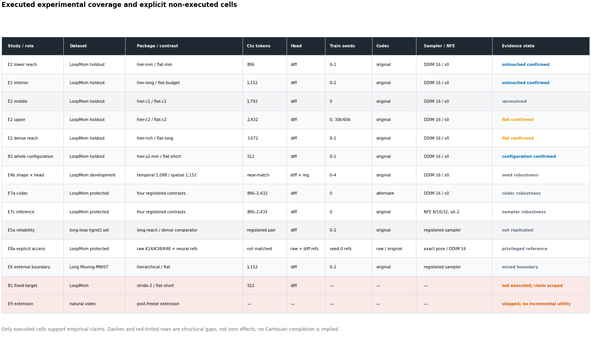
Рисунок В.1 – Виконане експериментальне покриття та структурно відсутні комірки. Рядки з кольоровим тлом позначають невиконані або закриті розширення, а не нульові ефекти. Схема є візуальним індексом реєстру, а не окремим емпіричним результатом. Джерело: побудовано автором за реєстром виконаних конфігурацій і заморожених доказів.
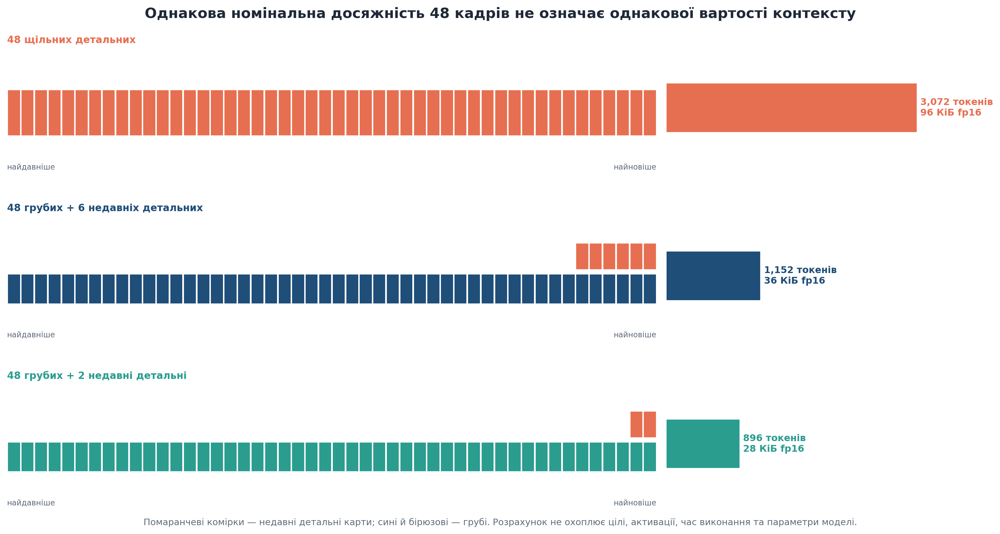
Рисунок В.2 – Розподіл контекстного бюджету за однакової номінальної досяжності 48 кадрів. Помаранчеві комірки позначають детальні карти, сині й бірюзові – грубі; праві смуги показують точну кількість токенів і корисний обсяг fp16 без цілей, активацій і параметрів. Рисунок пояснює арифметику таблиці 4.3, але не є вимірюванням повної VRAM. Джерело: авторська візуалізація за контрактом пакетів.
Парні ефекти, одночасні інтервали, факторний експеримент «вихідний модуль × пакет», перевірки алгоритму вибірки та кодека, негативна реплікація E5a, еталон E8a й зовнішня межа E6 наведені в розділі 4. Їхні точні артефактні прив’язки подано в додатку Г та розширеному електронному реєстрі.
The full machine-readable registry is refactor_v2/registries/experiment_matrix.json; its readable counterpart is refactor_v2/EXPERIMENT_MATRIX.md. It contains the 80 concrete run specifications and six explicitly unresolved dependency cells. Resolved identifiers/hashes are imported only after the campaign writes its dependency ledger. No unresolved hash is invented. Method tables relocated below retain their original source identifiers.
Таблиця 1.1 – Терміни, пов’язані з ресурсами, та їхні інтерфейси керування. У таблиці розрізняються величини, які змінюються внаслідок втручання, та супутні витрати, що можуть залишатися незмінними.
| Термін ресурсу | Збережений об’єкт | Домінуюча фаза | Втручання, що досліджується тут | Поширений фактор змішування |
|---|---|---|---|---|
| Параметри | навчені ваги | навчання та застосування | ємність залишається фіксованою у межах зіставлених порівнянь | архітектура змінюється залежно від бюджету |
| Оптимізатор | моменти та градієнти | навчання | враховуються, але не оптимізуються безпосередньо | числова точність і розподілене зберігання стану |
| Активації | проміжні диференційовані стани | навчання | створення контрольних точок або реверсивне відтворення | додаткові перерахунки опущені |
| Контекст/стан | збережені спостереження або стан у прихованому просторі | навчання та застосування | плоскі, ієрархічні або піддискретизовані пакети | спільна зміна досяжності й точності відтворення |
| Тимчасова пам’ять | робочі буфери уваги та формування вибірки | обидві фази | вимірюється через загальну обчислювальну роботу/NFE, де це доречно | пікове виділення пам’яті, помилково прийняте за збережений стан |
Таблиця 1.2 – Критерії консистентності, спостережувані помилки та «сліпі зони» метрик. Жоден показник не розглядається як повна заміна інших.
| Критерій | Типова помилка у згенерованому відео | Типовий показник | Що може пропустити показник |
|---|---|---|---|
| Зовнішній вигляд/стиль | відхилення кольору, текстури або освітлення | схожість ознак або стилю | правильний результат з неправильною ідентифікацією об’єкта |
| Ідентичність | об’єкт змінює клас або екземпляр після оклюзії | точність ідентифікації на основі зіставлення | просторове покриття може залишатися неправильним |
| Геометрія/просторове покриття | контур руйнується, об’єкт зникає або з’являється зайвий передній план | перекриття, покриття, прецизійність/повнота, частки пропусків і зайвого переднього плану | дрібні атрибути всередині області об’єкта |
| Поняття/семантика | послідовність суперечить передбачуваному відношенню або події | класифікатор завдань, структуроване відношення або протокол людини | часова безперервність та локалізація |
| Траєкторія | рух плавний, але проходить неправильним шляхом | похибка центроїда або пози з часом | зовнішній вигляд та внутрішня структура |
| Міжрівнева консистентність | грубий стан і детальний прогноз описують різні події | декодована міжрівнева розбіжність | обидва рівні можуть бути помилковими одночасно |
Таблиця 2.1 – Ролі наборів даних та межі доказовості.
| Набір даних або сімейство | Контрольоване явище | Оцінюваний метод | Доказова роль | Основне обмеження |
|---|---|---|---|---|
| Обертові 2-D фігури | постійна та змінна кутова динаміка | TempVerseFormer; V-BLT в окремих конфігураціях | ізоляція механізмів та часова екстраполяція | споріднені процедурні задачі, але конфігурації генератора й протоколи двох публікацій не вважаються тотожними |
| Обертові 3-D полікуби | тривісне обертання, самооклюзія та затінення | V-BLT, ViViT та UNet-3D | складніша перевірка контрольованості представлення | синтетичні сцени з фіксованою камерою; лише точкові оцінки |
| Рухомий MNIST / Рухомий MNIST-CIFAR | перенесення об’єктів, зіткнення та текстурований фон | базові моделі TempVerseFormer та OpenSTL | стандартна синтетична компетентність | короткий протокол не ізолює досяжність з використанням довгої пам’яті |
| KTH Action / TaxiBJ | рухи людей та міські потоки | базові моделі TempVerseFormer та OpenSTL | межа інтерфейсу з реальними даними | жодна з них не забезпечує спостережуваності повторного входу на рівні об’єктів |
| LoopMom | зникнення, повторна поява в циклічному світі та точна видимість | сімейство моделей із розділу 3 | причинна ідентифікація збереженої досяжності | контрольована геометрія не відтворює текстурне й семантичне різноманіття природного відео |
| Довготривалий Moving-MNIST зі сталими ідентифікаторами | довготривала ідентичність, просторове покриття та траєкторія | плоскі та ієрархічні конфігурації з розділу 3 | зовнішня межа між досяжністю та точністю відтворення | абсолютна результативність залишається низькою |
Таблиця 2.2 – Реверсивність станів TempVerseFormer
| Тензор або операція | Реалізоване перетворення | Алгебраїчно обернене лише на основі свого виходу? | Що зберігається або перераховується при зворотному диференціюванні | Включено до твердження про точне відтворення стану? |
|---|---|---|---|---|
| Кадр зображення до прихованого простору VAE | Конволюційний варіаційний кодер, | Ні | Звичайні значення автоматичного диференціювання або заморожене чи попередньо обчислене представлення прихованого простору, залежно від режиму навчання | Ні |
| Проєкція входу з прихованого простору | -вимірного прихованого простору до -вимірного вбудовування плюс навчена позиція | Не встановлено як бієктивне | Вхідні дані на межі обробляються звичайним автоматичним диференціюванням у режимі за замовчуванням | Ні |
| Створення потоку | Конкатенація двох ідентичних -вимірних потоків | Ні; дублювання є ін’єктивним, але не є бієкцією двох потоків на кодомен | Проектоване вбудовування існує на межі ядра | Ні |
| Повторний часовий стан | Стек адитивного зв’язування над подвоєним вбудовуванням | Так у точній арифметиці для перевіреного детермінованого блоку; будь-яке майбутнє стохастичне обумовлення також доведеться відтворити | Кінцевий подвоєний стан; локальні функції блоків повторно обчислюються | Так |
| Нормалізація та злиття вихідних даних | Стан розміром до -вимірного вектора прихованого простору | Ні | Звичайні граничні значення автоматичного диференціювання в режимі за замовчуванням; альтернативна утиліта зберігає нереверсивні граничні значення | Ні |
| Декодування VAE та втрата зображення | Від прихованого простору до пікселів з подальшим застосуванням складників MSE/LPIPS/KL | Ні | Стандартний граф втрат на межі | Ні |
Таблиця 2.6 – Виміряні значення детермінованої багаторівневої пам’яті та межі часу виконання на RTX 4060 Ti 16 ГБ
| Розгортання () | Пік BPTT (МБ) | Пік із контрольними точками (МБ) | Пік реверсивного відтворення (МБ) | BPTT (мс/крок) | Контрольні точки (мс/крок) | Реверсивне відтворення (мс/крок) |
|---|---|---|---|---|---|---|
| 10 | 3 809 | 1 354 | 1 065 | 549 | 322 | 257 |
| 20 | 6 592 | 1 391 | 1 078 | 399 | 544 | 479 |
| 40 | 12 162 | 1 471 | 1 091 | 740 | 1 028 | 882 |
| 80 | 23 305* | 1 637 | 1 125 | 43 797* | 3 131 | 2 556 |
| 120 | OOM | 1 801 | 1 152 | - | 3 960 | 2 760 |
| 160 | OOM | 1 967 | 1 176 | - | 4 066 | 3 362 |
Таблиця 2.7 – Вибір стратегії часового диференціювання за обмежувальними умовами. Реверсивність обирається залежно від графа навчання та профілю ресурсів, а не на основі припущення про переваги в прогнозуванні.
| Метод | Залежність пам’яті від горизонту | Додаткові обчислення | Архітектурні умови | Належне використання |
|---|---|---|---|---|
| Стандартний BPTT | повна стрічка активацій, зазвичай | базовий рівень | відсутні | весь горизонт зручно вміщується |
| Укорочений BPTT | обмежений обраним сегментом | базовий рівень у межах сегмента | відсутні | ранні залежності навмисно виключаються |
| Збереження контрольних точок градієнта | залежить від розкладу | повторно обчислює пропущені сегменти | звичайні диференційовні модулі | потрібен загальний, регульований компроміс між зберіганням і часом |
| Реверсивне відтворення | локальний граф, граничний стан, прив’язки та метадані відтворення | обернення та локальне повторне пряме обчислення | стабільне обернення збереженого стану | повторні реверсивні активації домінують у довгому графі навчання |
Таблиця 2.8 – Компоненти V-BLT та рівень їх доказовості. Таблиця розмежовує реалізовану систему з фіксованими ділянками й запропонований, але не перевірений динамічний розподільник. Саме тому її збережено як компактний реєстр тверджень, а не замінено суцільним описом.
| Компонент | Функція | Статус опублікування | Межі доказів |
|---|---|---|---|
| Інтерфейс «растр-байт» та локальний кодер | збереження категоріальних цілей та агрегація короткодіапазонної структури | реалізовано | приховані ознаки залишаються навченими та мають втрати |
| Фіксоване призначення пакетів розміром | визначення глобальних обчислювальних одиниць | повідомлено | точна історична конфігурація запуску не повністю заархівована |
| Глобальний трансформер прихованих представлень та локальний декодер | обмін широким контекстом та відновлення локальних деталей | реалізовано | причинно-наслідковий внесок на рівні компонентів не ізольовано |
| RoPE-ND | збереження окремих часових, рядкових і стовпцевих координат | реалізовано | математична умова подільності є сильнішою за поточну програмну перевірку |
| Категоріальна байтова голова | прогнозує 256 логітів у кожній позиції байта | реалізовано | каліброваність імовірностей не показано |
| Карта ентропії | діагностує просторову дисперсію прогнозів | виміряно та візуалізовано | зв’язок із похибкою є описовим |
| Контролер динамічних регіонів | змінює розмір регіонів або маршрутизує обчислення | не реалізовано | лише запропоноване розширення |
Таблиця 3.1 – Поля контекстного пакета та їх інтерпретація.
| Поле | Символ | Операційне значення | Що це не означає |
|---|---|---|---|
| Рівень представлення | Зафіксований рівень кодека та його просторова сітка токенів | Семантична коректність або гарантована консистентність між рівнями | |
| Часовий крок | Відстань між регулярними прив’язками потоку | Часове усереднення, якщо кодер явно його не виконує | |
| Збережені слоти | Кількість збережених карт прихованого простору у потоці | Однаковий корисний обсяг даних на всіх рівнях | |
| Лаг найновішої прив’язки | Відстань від першої цільової позиції до найновішої збереженої прив’язки | Наявність усіх проміжних кадрів | |
| Набір прив’язок | Точні історичні кадри, представлені потоком | Успішне отримання інформації з цих кадрів | |
| Кількість токенів на слот | Кількість просторових комірок на вибраному рівні | Байти, ширина трансформера або повна пам’ять активації | |
| Вартість контексту | Сума збережених токенів контексту | Загальна довжина послідовності або рівноцінний обчислювальний обсяг | |
| Досяжність | Найстаріше надане відставання в геометрії пакета | Точність відтворення, інформаційно-теоретична необхідність або надійне повторне використання |
Таблиця 3.2 – Специфікація зафіксованого інтерфейсу прихованого простору.
| Властивість | Грубий рівень | Детальний рівень | Наслідки для предиктора |
|---|---|---|---|
| Форма прихованого простору на кадр | Та сама ширина каналу, різна просторова сітка | ||
| Просторові токени на кадр | 16 | 64 | Детальна історія вимагає вчетверо більше контекстних токенів на кадр |
| Скалярні коефіцієнти на кадр | 256 | 1 024 | Корисне навантаження відрізняється ще до проекції на ширину трансформера |
| Піксельний декодер | Незалежний грубий декодер | Незалежний детальний декодер | Кожен код можна перевірити як реконструкцію повного кадру |
| Масштабування вхідних даних предиктора | z-стандартизація за кожним каналом навчального набору | z-стандартизація за кожним каналом навчального набору | Шкала шуму та втрати за рівнями використовують порівнянні стандартизовані координати |
| Навчання після заморожування кодека | Немає | Немає | Порівняння пакетів не можуть змінювати інтерфейс прихованого простору |
| Основний шлях декодування під час розгортання | Лише для діагностики | Заморожений декодер детального рівня | Основні кадрові показники мають один вихідний шлях |
Таблиця 3.3 – Набори даних для оцінювання та їхня доказова роль. Зміна набору даних змінює наукове питання; компетентність еталону не перетворюється автоматично на підтвердження механізму.
| Інструмент | Контекст → прогноз | Досліджувана властивість | Чинна роль | Твердження, яке він не може підтвердити |
|---|---|---|---|---|
| Розробка LoopMom | 48 → 152 | проєктування пакетів і страт, виведених із геометрії | формування гіпотез і діагностика | відкладене підтвердження |
| Відкладені й захищені набори LoopMom | 48 → 152 | точні смуги досяжності, межа і заздалегідь визначені дослідження робастності | підтвердження контрольованого механізму | перевага над природним відео |
| Довгий Moving-MNIST зі сталою ідентичністю об’єктів | 48 → 300 | просторове покриття, неперервність, ідентичність і траєкторія | зовнішня синтетична межа | відтворення геометричного механізму досяжності LoopMom |
| Канонічний Moving-MNIST | короткий горизонт, специфічний для протоколу | здатність до прогнозування руху | перевірка за еталонними даними та негативний контроль | еквівалентність ієрархій або перевага повторного входу |
| TaxiBJ | протокол OpenSTL | прогнозування просторово-часового поля | зовнішня компетентність | консистентність об’єктів з довготривалою пам’яттю |
| Символ або скорочення | Значення |
|---|---|
| AR | авторегресійний |
| BPTT | зворотне поширення через час |
| CI | довірчий інтервал |
| CRN | спільні випадкові числа |
| DDIM | неявна дифузійна модель знешумлення |
| DDPM | імовірнісна дифузійна модель знешумлення |
| DiT | дифузійний трансформер |
| EBM / EBT | енергетична модель / енергетичний трансформер |
| EMA | експоненційне ковзаюче середнє |
| FID / FVD | відстань Фреше / відстань Фреше для відео |
| fg-MSE | середньоквадратична похибка переднього плану |
| LPIPS | навчена перцептивна подібність фрагментів зображення |
| MSE | середньоквадратична похибка |
| NFE | кількість обчислень функції |
| RoPE-ND | N-вимірне ротаційне позиційне вбудовування |
| SSIM | індекс структурної подібності |
| V-BLT | Vision Byte Latent Transformer |
| VAE | варіаційний автоенкодер |
У тексті випадкова ініціалізація означає початкове значення генератора випадкових чисел. Для кожного результату окремо зазначено, чи йдеться про ініціалізацію навчання, формування даних або алгоритму вибірки.
Таблиця Г.1 пов’язує кожну роль доказу з описом для читача та машиночитаним артефактом або журналом доступу.
Таблиця Г.1 – Зв’язок наукових тверджень із людськими та машиночитаними записами.
| Роль доказу | Запис, зрозумілий для людини | Запис, зрозумілий для машини, або запис доступу |
|---|---|---|
| Відкладене підтвердження E2 | docs/confirmation/E2_RESULTS.md |
artifacts/confirmation_e2/ та його маніфест набору даних |
| Зареєстрована реплікація E5a | docs/confirmation/E5A_RESULTS.md |
artifacts/e5a_trust_replication/results.json та перевірка завершення |
| Межа об’єктів зі сталою ідентичністю E6 | docs/confirmation/E6_PHASEC_V2_RESULTS.md |
захищені артефакти результатів E6, зазначені в маніфесті релізу |
| Робастність кодека E7a | docs/confirmation/E7A_RESULTS.md |
маніфест експерименту, перевірка завершення та заморожені артефакти результатів |
| Робастність алгоритму вибірки/NFE E7c | docs/confirmation/E7C_RESULTS.md |
artifacts/e7c_sampler_nfe/results.json, журнал доступу та перевірка завершення |
| Еталон з явним доступом E8a | docs/confirmation/E8A_RESULTS.md |
маніфест експерименту та заморожені еталонні артефакти |
| Закриття програми | docs/FINAL_PROGRAMME_REPORT_2026-07-18.md |
artifacts/release_manifest_2026-07-19.json та experiments/authorization.json |
| Перевірки релізу | docs/RELEASE_QA_REPORT_2026-07-18.md |
Ревізія вихідного коду та хеші файлів у маніфесті релізу |
| Якість інтегрованого прототипу | підрозділ 4.8.1, таблиця 4.6 | simvp_packed_pixel_finetune_s0_metrics.json (SHA-256 1C36D65632FA46AF0202F080D72CB486D1C0384B426BE0A845E683F6F44E8E8C), fixed_region_adapter_blended_mmnist_s0_metrics.json (SHA-256 AC9BF2BAA404A023C060434A4C17B99B47F14C9CD7270655DF4062E1A0A3A294) і openstl_baseline_comparison.json (SHA-256 96E3E6672E9D85A1657DB844175D6426D16EE419CE5F3BA85AD6677DE6C8AB9A) |
| Пам’ять інтегрованого прототипу | підрозділ 4.8.2, таблиці 4.7 і Ж.3 | integrated_reversible_openstl_memory.json (SHA-256 FEDD7547A4C79BAC61C2E009EE742E27C5CE5A81A698508AC20042C4061B0AC9), integrated_reversible_openstl_memory_b2.json (SHA-256 F8D6095A4DD70F59B18EC96982BC290030A721C6E4DFBF03C9B34CC7BB7A9997) і наведений вище openstl_baseline_comparison.json |
| Маніфест інтеграційної перевірки | межа класу технічної здійсненності | integrated_feasibility_manifest_20260823.json (SHA-256 32098422B4383F499A8E9101FFD42872CCAAC44DAFF6227FC2FAFBAAAF0B3CDC) |
Розробка, відкладене підтвердження, зареєстрована реплікація, робастність, привілейований еталон, зовнішня межа та перевірка технічної здійсненності є різними ролями доказів. Їхні артефакти можуть зберігатися разом, але допустимі межі висновків не об’єднуються. Інтеграційні файли архівовано поза репозитарієм через їхній розмір; наведені назви та хеші є стабільними ідентифікаторами, а не публічними адресами завантаження.
Sentence-level pending claims and evidence objects are registered in refactor_v2/registries/placeholders.json. Their populations, seed units, allowed conclusions, absence rules, and expected artifacts are explicit. Frozen source hashes, paragraph-level content transfer, figure/table disposition, formula dependencies, and appendix migration are in the sibling registries. The complete development frontier is not promoted to confirmation. Existing contribution and provenance records above remain authoritative for their original source-era claims.
У кожному парному аналізі одиницею повторної вибірки залишається кліп. Мінімальний звіт для статистичного контрасту містить кандидата й базову порівнювану конфігурацію, допустиму інтерпретацію порівняння, фільтр популяції, кількість кліпів і записів, показник та сприятливий напрям, точкову оцінку, тип інтервалу, зареєстроване сімейство, ініціалізацію навчання, конфігурацію алгоритму вибірки, ідентифікатор кодека й підсумкове рішення. Статистичне виведення враховує кластеризацію за кліпами. Правила для порожніх масок і знаменники зіставлення змінюються разом із визначенням показника. Повні інтервали двох програм робастності зведено в таблиці Д.1.
Таблиця Д.1 – Повні одночасні інтервали для втручань в алгоритм вибірки та кодек. Позитивний ефект свідчить на користь зареєстрованого кандидата; для контрасту 2 432 кандидатом є плоский контекст.
| Втручання | Досяжність 896 | Внутрішній ефект 1 152 | Часовий 1 088 проти просторового 1 152 | Плоска інверсія 2 432 | Статус |
|---|---|---|---|---|---|
| DDIM NFE 8, ініціалізація вибірки 0 | +0,0478 [0,0323; 0,0634] | +0,0152 [0,0045; 0,0259] | +0,0276 [0,0171; 0,0381] | +0,0115 [0,0016; 0,0214] | усі визначені |
| DDIM NFE 16, ініціалізація вибірки 0 | +0,0465 [0,0310; 0,0621] | +0,0146 [0,0041; 0,0251] | +0,0283 [0,0172; 0,0394] | +0,0117 [0,0018; 0,0217] | усі визначені |
| DDIM NFE 32, ініціалізація вибірки 0 | +0,0471 [0,0317; 0,0625] | +0,0140 [0,0036; 0,0245] | +0,0292 [0,0182; 0,0403] | +0,0122 [0,0022; 0,0221] | усі визначені |
| DDIM NFE 16, ініціалізація вибірки 1 | +0,0482 [0,0325; 0,0638] | +0,0201 [0,0086; 0,0315] | +0,0251 [0,0160; 0,0342] | +0,0098 [−0,0001; 0,0196] | верхній ефект невизначений |
| DDIM NFE 16, ініціалізація вибірки 2 | +0,0466 [0,0314; 0,0618] | +0,0200 [0,0087; 0,0313] | +0,0221 [0,0133; 0,0309] | +0,0077 [−0,0013; 0,0167] | верхній ефект невизначений |
| Оригінальний кодек на E7a | +0,0494 [0,0339; 0,0649] | +0,0283 [0,0169; 0,0397] | +0,0253 [0,0163; 0,0343] | +0,0150 [0,0065; 0,0235] | усі визначені |
| Незалежно навчений кодек | +0,0521 [0,0374; 0,0669] | +0,0439 [0,0310; 0,0569] | +0,0112 [0,0039; 0,0184] | +0,0079 [−0,0006; 0,0165] | верхній ефект невизначений |
Таблиця Д.2 – Повний реєстр метрик, популяцій та чутливості до помилок. Стрілка показує сприятливий напрям; порожні випадки є частиною контракту показника, а не редакційними винятками.
| Метрика | Популяція оцінювання | Напрям | Правило порожнього випадку | Основна виявлена помилка | Основне обмеження |
|---|---|---|---|---|---|
| MSE для повного кадру | кожен декодований кадр | ↓ | завжди визначено | глобальна похибка пікселів | фон може домінувати |
| MSE еталонного переднього плану | непусте | ↓ | невизначено для порожнього еталона | пропущений або спотворений вміст цілі | ігнорує помилковий передній план в інших місцях |
| MSE фону відносно еталона | кожен кадр | ↓ | нуль лише за порожнього знаменника | галюцинації поза еталонним просторовим покриттям | може недооцінювати неправильно локалізований передній план |
| MSE на об’єднанні масок | кожен кадр | ↓ | нуль лише за порожнього об’єднання | пропуски та надлишки в спільній області | залежить від порога |
| Прецизійність / повнота / F1 переднього плану | кожен кадр із явними ознаками маски | ↑ | 1 для порожнього відповідного класу; F1 = 0 за нульової суми складників | хибні спрацьовування / пропуски / баланс | піксельне перекриття не встановлює ідентичності об’єкта |
| Енергія маскованого лапласіана | непорожній еталонний передній план | ↑, інтерпретується відносно еталону кодека | не визначено для порожнього еталона | розмиття або злиття | може винагороджувати високочастотні артефакти |
| Кількість компонентів GT / передбачених | кожен кадр | рівність | нуль є допустимим | виживання об’єктів та галюцинації | зв’язані компоненти можуть розділятися або зливатися |
| Пропущені / зайві компоненти | кожен кадр | ↓ | явні підрахунки | пропуски / хибні об’єкти | відсутність сталої ідентичності в часі |
| IoU зіставлених компонентів | прийняті пари | ↑ | діагностичний показник за відсутності пар | форма та перекриття | вибір на основі виживання, якщо не показано покриття |
| Відстань до центроїда зіставлених об’єктів | прийняті пари | ↓ | діагностичний показник за відсутності пар | локалізація | вибір на основі виживання, якщо пропуски не караються |
| Покриття об’єкта | видимі еталонні об’єкти | ↑ | дорівнює одиниці, якщо еталонного об’єкта немає | виживання виявлення | не дає інформації про ідентичність класу |
| Ідентичність із штрафом за пропуск | видимі марковані еталонні об’єкти | ↑ | невизначена, коли немає видимих об’єктів | ідентичність об’єктів, що зберігаються в часі, з урахуванням пропусків | залежить від класифікатора та зіставлення |
| Похибка траєкторії зі штрафом за пропуск | видимі еталонні об’єкти | ↓ | нуль, коли еталонних об’єктів немає | локалізація та пропущені об’єкти | штраф за пропуск, рівний діагоналі кадру, визначається завданням |
Таблиця Д.3 – Точні результати перевіреної межі на відкладених даних. Додатна різниця втрат «плоский мінус ієрархічний» свідчить на користь ієрархії; усі інтервали належать до одного зареєстрованого одночасного сімейства.
| Бюджет | Плоский / ієрархічний пакет, досяжність | Ініціалізація й режим | Ефект [одночасний 95 % ДІ] | Рішення |
|---|---|---|---|---|
| 480 / 512 | flat-short 8 / hier-short 6 |
0, B16×30k | −0,0038 [−0,0081; +0,0005] | невизначене майже зіставлене порівняння |
| 480 / 512 | flat-short 8 / hier-short 6 |
1, B16×30k | −0,0060 [−0,0105; −0,0015] | плоский пакет; майже зіставлене порівняння |
| 896 | flat-min 14 / hier-min 48 |
0, B16×30k | +0,0474 [+0,0305; +0,0642] | ієрархію підтверджено |
| 896 | flat-min 14 / hier-min 48 |
1, B16×30k | +0,0436 [+0,0280; +0,0592] | ієрархію підтверджено |
| 1 152 | flat-budget 18 / hier-long 48 |
0, B16×30k | +0,0195 [+0,0070; +0,0320] | ієрархію підтверджено |
| 1 152 | flat-budget 18 / hier-long 48 |
1, B16×30k | +0,0389 [+0,0228; +0,0549] | ієрархію підтверджено |
| 1 152 | flat-budget 18 / hier-long 48 |
2, B16×30k | +0,0307 [+0,0159; +0,0455] | ієрархію підтверджено |
| 1 792 | flat-c1 28 / hier-c1 48 |
0, B16×30k | +0,0084 [−0,0013; +0,0181] | невизначено |
| 2 432 | flat-c2 38 / hier-c2 48 |
0, B16×30k | −0,0150 [−0,0260; −0,0039] | плоский пакет підтверджено |
| 2 432 | flat-c2 38 / hier-c2 48 |
0, B8×60k | −0,0122 [−0,0213; −0,0032] | плоский пакет підтверджено |
| 3 072 | flat-long 48 / hier-rich 48 |
0, B8×60k | −0,0129 [−0,0217; −0,0041] | плоский пакет підтверджено |
| 3 072 | flat-long 48 / hier-rich 48 |
1, B8×60k | −0,0134 [−0,0215; −0,0053] | плоский пакет підтверджено |
Original identifiers below are source IDs, not final dissertation numbering. Each original equation is retained with its immediate scientific context; dependencies and implementation status are in formula_dependencies.json. Replaced formula systems in the main text do not silently redefine an old identifier.
Original role/context and variable definitions:
Розглянемо сцену, що розвивається, повний фізичний і семантичний стан якої у дискретний момент часу позначено через . До нього можуть належати геометрія та ідентичність об’єктів, їхні пози, швидкості, освітлення, положення камери й інші змінні, які не спостерігаються безпосередньо, але впливають на наступний кадр. Керувальний сигнал представляє дію камери, агента або інший вимірюваний вплив. Збурення охоплює стохастичну динаміку й невраховані чинники. За такої постановки перехід стану має вигляд
Кадр є не повним станом світу, а його спостереженням: , де є оператором спостереження, а — шумом датчика або синтетичного рендерингу. Розмежування стану та спостереження потрібне не лише для синтетичних відео. У дистанційному зондуванні або фізично обґрунтованому прогнозуванні поширення лісових пожеж датчик охоплює лише частину процесу, тоді як істотні просторові зміни залишаються прихованими. Тому візуально правдоподібний кадр ще не є достатнім: прогноз має відповідати стану й динаміці системи [47–49].
Source: 02_CHAPTER_1.md at cf3f661. New location: Appendix Д eq-source-1-1. This source-era relation does not override the revised method contract.
Original role/context and variable definitions:
На рис. 1.1 прогнозувач розміщено всередині контуру спостереження. Оператор побудови контексту відбирає або стискає минулі спостереження у стан моделі . Прогнозувач із параметрами генерує розподіл для майбутнього вікна,
Параметри моделі та правило побудови контексту обираються так, щоб зменшити очікувані втрати не на одному кадрі, а в усьому прогнозованому вікні:
Source: 02_CHAPTER_1.md at cf3f661. New location: Appendix Д eq-source-1-2. This source-era relation does not override the revised method contract.
Original role/context and variable definitions:
Параметри моделі та правило побудови контексту обираються так, щоб зменшити очікувані втрати не на одному кадрі, а в усьому прогнозованому вікні:
де крапка з комою підкреслює, що показник може залежати від прихованих властивостей задачі, наприклад ідентичності або істинної області просторового покриття, хоча предиктор приймає на вхід лише серію зображень. Ваги не обов’язково мають бути рівномірними. Для короткогоризонтного контролера найбільшу вагу може мати безпосередня похибка; у дослідженні пам’яті навмисно сильніше зважуються події, докази яких містяться у віддаленому минулому.
Source: 02_CHAPTER_1.md at cf3f661. New location: Appendix Д eq-source-1-3. This source-era relation does not override the revised method contract.
Original role/context and variable definitions:
Під час навчання модель часто отримує еталонну послідовність, тоді як під час авторегресивного застосування її власний прогноз повертається на вхід. Після кожного кроку контекстне вікно зсувається: найдавніші елементи вилучаються, а новий прогноз займає їхнє місце [25–29]. Отже, починаючи з другого прогнозованого кадру, вхід уже залежить від попередніх виходів самої моделі. Цю самоподачу можна записати як рекурсію:
У цьому процесі потрібно розділяти рішення, які впливають на різні ланки причинного ланцюга:
Source: 02_CHAPTER_1.md at cf3f661. New location: main source tag 1.4. This source-era relation does not override the revised method contract.
Original role/context and variable definitions:
Модель машинного навчання працює за скінченних обчислювальних і апаратних ресурсів. Обчислювальний бюджет визначає тривалість навчання й застосування, тоді як доступна пам’ять додатково обмежує розмір моделі, пакет паралельного навчання, довжину диференційованого графа та обсяг історії, доступної моделі прогнозування. Ці обмеження взаємодіють, але не є взаємозамінними. Для подальшого аналізу загальне використання пам’яті розкладається на п’ять складників:
Пам’ять параметрів і станів оптимізатора визначається переважно розміром моделі, точністю обчислень та алгоритмом навчання. Пам’ять активацій зберігає або відтворює проміжні значення, потрібні для градієнтів. Контекстна пам’ять чи пам’ять стану утримує історичну інформацію для прогнозування, а тимчасова пам’ять охоплює робочі області уваги, буфери алгоритму вибірки, декодовані кандидати та резервування фреймворку. Сума цих складників показує, чи достатньо апаратного ресурсу, але вони не є однією змінною проєктування [108].
Source: 02_CHAPTER_1.md at cf3f661. New location: main source tag 1.5. This source-era relation does not override the revised method contract.
Original role/context and variable definitions:
Оскільки кожне ресурсне втручання може змінювати інший прояв консистентності, результат описується не одним балом, а вектором втрат. Для прогнозованого відео та еталонного відео він має вигляд:
Компоненти , , , , та відповідають відповідно за кадрову якість, просторове покриття, ідентичність, траєкторію, зайвий передній план і міжрівневу відповідність. Вектор ваг задає важливість цих критеріїв для конкретної задачі. Позначимо через множину конфігурацій , які не перевищують заданих бюджетів контекстної пам’яті, пам’яті активацій та обчислювальної роботи. Тоді спільна задача оптимізації має вигляд
Source: 02_CHAPTER_1.md at cf3f661. New location: Appendix Д eq-source-1-6; compact relation inline in original main subsection. This source-era relation does not override the revised method contract.
Original role/context and variable definitions:
Компоненти , , , , та відповідають відповідно за кадрову якість, просторове покриття, ідентичність, траєкторію, зайвий передній план і міжрівневу відповідність. Вектор ваг задає важливість цих критеріїв для конкретної задачі. Позначимо через множину конфігурацій , які не перевищують заданих бюджетів контекстної пам’яті, пам’яті активацій та обчислювальної роботи. Тоді спільна задача оптимізації має вигляд
У формулі (1.7) позначає параметри моделі, – політику формування контексту, а – спосіб організації обчислень, зокрема збереження або відтворення активацій. Множина містить лише конфігурації, для яких , та . У розділах 2–4 спочатку ізольовано оцінено кожне втручання, а згодом у §3.7 і §4.8 виконано обмежену перевірку їхньої композиції.
Source: 02_CHAPTER_1.md at cf3f661. New location: main source tag 1.7. This source-era relation does not override the revised method contract.
Original role/context and variable definitions:
Для кліпу та кандидата прогнозу незалежні аспекти подано вектором показників:
Тут характеризує кадрову якість, – просторове покриття, – збереження ідентичності, – правильність руху, а – появу зайвого переднього плану. Склад вектора залежить від задачі, але його принцип залишається незмінним: різні типи помилок не згортаються в один бал до того, як буде встановлено їхній зміст. Далі ці критерії вводяться від статичного зображення до часової послідовності.
Source: 02_CHAPTER_1.md at cf3f661. New location: Appendix Д eq-source-1-8; compact relation inline in original main subsection. This source-era relation does not override the revised method contract.
Original role/context and variable definitions:
Щоб відокремити правильність руху від плавності зображення, для кожного об’єкта розглядається множина моментів , у яких еталонний і прогнозований об’єкти можна зіставити. Нехай і позначають їхні еталонний та прогнозований центроїди в момент . Середня похибка траєкторії визначається як:
Формула (1.9) враховує просторове зміщення між зіставленими об’єктами, але сама не виявляє підміни їхніх ідентичностей. Тому правило зіставлення має бути стабільним у часі або явно враховувати ідентичність. Класифікатор ідентичності розв’язує іншу частину задачі: він може правильно розпізнати цифру, навіть якщо її положення суттєво помилкове. Лише спільне використання показників покриття, зіставлення, ідентичності та траєкторії дає змогу інтерпретувати поведінку об’єкта, що зберігається в часі.
Source: 02_CHAPTER_1.md at cf3f661. New location: Appendix Д eq-source-1-9; compact relation inline in original main subsection. This source-era relation does not override the revised method contract.
Original role/context and variable definitions:
Для бінарної еталонної маски переднього плану та прогнозованої маски одного показника перекриття недостатньо. Зокрема, порожні маски потребують окремого правила, а зайвий прогноз поза еталонною областю має штрафуватися так само явно, як пропущений об’єкт. Для непорожньої еталонної маски використовуються нормовані відносно її площі частки пропущеного й зайвого переднього плану:
У формулі (1.10) множина містить еталонні пікселі, які модель пропустила. Частка зайвого переднього плану визначається окремо як і враховує передбачені пікселі без еталонного відповідника. Обидві частки дорівнюють нулю лише тоді, коли відповідної помилки немає; може перевищувати одиницю, якщо зайва область більша за еталонний об’єкт. Рисунок 1.10 показує, як ці просторові показники доповнюють, але не замінюють оцінювання траєкторії та ідентичності.
Source: 02_CHAPTER_1.md at cf3f661. New location: Appendix Д eq-source-1-10; compact relation inline in original main subsection. This source-era relation does not override the revised method contract.
Original role/context and variable definitions:
Нехай і є станами грубого та детального рівнів у момент , а і – відповідними декодерами. Оскільки їхні просторові розміри можуть відрізнятися, оператор приводить детальний результат до масштабу грубого рівня. Тоді міжрівневу розбіжність можна записати через функцію відстані :
Найпростіша ієрархія має два рівні: грубий рівень зберігає структуру сцени або давнішу історію, а детальний уточнює локальні ознаки. Трирівнева схема додає проміжне представлення, яке може пом’якшити різкий перехід між масштабами, але водночас збільшує кількість інтерфейсів, на яких можлива суперечність. Формула (1.11) безпосередньо описує дві шкали; для трьох і більше рівнів аналогічні розбіжності обчислюються між сусідніми або наперед визначеними парами.
Source: 02_CHAPTER_1.md at cf3f661. New location: Appendix Д eq-source-1-11; compact relation inline in original main subsection. This source-era relation does not override the revised method contract.
Original role/context and variable definitions:
Зворотне поширення в часі (BPTT, backpropagation through time) розгортає рекурентний процес у спрямований ациклічний граф [28, 29, 105]. Нехай один часовий крок створює набір активацій обсягом , потрібний для локального обчислення градієнта, а позначає кількість диференційованих кроків. Якщо всі такі набори зберігаються до зворотного проходу, їхня пам’ять зростає у першому наближенні як:
Формула (1.12) описує лише часову стрічку активацій: параметри, градієнти, стан оптимізатора та робочі буфери залишаються окремими складниками. Рисунок 1.22 показує, як кожен новий крок додає до стрічки ще один набір проміжних значень, якщо їх не відтворювати повторно.
Source: 02_CHAPTER_1.md at cf3f661. New location: main source tag 1.12. This source-era relation does not override the revised method contract.
Original role/context and variable definitions:
Більшість візуальних трансформерів перетворює кадр на регулярну сітку прямокутних, часто квадратних, фрагментів. Вони можуть не перекриватися або частково перекриватися; у відео до просторових розмірів іноді додається часовий розмір. Фіксована сітка проста, придатна до паралельної обробки й забезпечує передбачувану довжину послідовності [69–71]. Для кадрів розміру і неперекривних просторових патчів кількість токенів становить:
Округлення вгору враховує крайові області, розмір яких не кратний розміру патча. Формула (1.13) також показує обмеження фіксованої сітки: кількість токенів визначається геометрією кадру, а не інформаційною складністю окремих областей.
Source: 02_CHAPTER_1.md at cf3f661. New location: main source tag 1.13. This source-era relation does not override the revised method contract.
Original role/context and variable definitions:
Просторова ієрархія визначає, скільки деталей обробляється всередині кадру. Для довгогоризонтного прогнозування постає інше питання: наскільки давню подію взагалі може адресувати збережений контекст. Нехай у момент прогнозування пакет містить кадри або рівні, прив’язані до множини початкових моментів . Номінальна досяжність пакета визначається віком найдавнішої з цих прив’язок:
Формула (1.14) описує геометричну можливість доступу, а не якість збережених даних. Якщо подія відбулася раніше за , пакет не містить прямої прив’язки до неї. Якщо вона входить у цей інтервал, модель усе одно може втратити потрібні деталі під час стискання або не використати доступне свідчення. Рисунок 1.24 показує перший, найпростіший випадок: релевантний кадр уже залишив коротке щільне вікно.
Source: 02_CHAPTER_1.md at cf3f661. New location: main source tag 1.14. This source-era relation does not override the revised method contract.
Original role/context and variable definitions:
Нехай є повним станом процедурної сцени в момент , — відомою керувальною дією, а — заданим законом переходу. Тоді динаміка стану визначається рівнянням
Спостережуваний кадр отримується з повного стану оператором рендерингу , тобто . Оскільки та відомі, експериментатор може змінити закон руху, початкову геометрію або умову спостереження, не змінюючи інші складники задачі. Істинний стан дає змогу перевірити не лише схожість кадру, а й конкретну динамічну властивість. Однакові параметри генерації також забезпечують парне порівняння моделей на ідентичних послідовностях.
Source: 03_CHAPTER_2.md at cf3f661. New location: Appendix Д eq-source-2-1. This source-era relation does not override the revised method contract.
Original role/context and variable definitions:
Спільним процедурним прикладом у дослідженнях часової динаміки та байтового представлення є двовимірна фігура, що обертається у кадрі. Кожна послідовність починається з випадково згенерованої геометрії об’єкта та початкової орієнтації. Об’єкт залишається в центрі, камера нерухома, а орієнтація змінюється у дискретні моменти часу. Нехай позначає кут повороту на кроці , а – сталий кутовий приріст за один кадр. Тоді для режиму з постійною швидкістю
Знак визначає напрямок обертання. В експериментах із часовим моделюванням його модуль випадково обирався в діапазоні від до за крок. Додаткові режими змінювали величину або знак : фігура прискорювалася, уповільнювалася, коливалася між напрямками, тимчасово зупинялася або поєднувала ці зміни. Кадри мали формат RGB і розмір ; контекст містив 12 кадрів, навчальний горизонт поступово зростав від одного до п’яти кроків, а оцінювання охоплювало 12 прогнозованих кадрів [135]. Публічний набір інструментів для простих фігур містить дво- та тривимірні процедурні генератори, метадані й команди для відтворення цієї родини наборів даних [171]. Рисунок 2.1 показує один із двовимірних прикладів.
Source: 03_CHAPTER_2.md at cf3f661. New location: main source tag 2.2. This source-era relation does not override the revised method contract.
Original role/context and variable definitions:
Тривимірна тестова модель збільшує структурну варіативність, не відмовляючись від процедурного контролю. Полікуб складається з з’єднаних гранями одиничних кубів, обраних із канонічних форм. Об’єкт центрується у сцені з фіксованою камерою та отримує випадкові початкові обертання навколо всіх трьох осей. Орієнтацію позначено вектором , а випадково вибрану кутову швидкість — . Її оновлення має вигляд
На відміну від плоского силуету, полікуб під час обертання почергово відкриває та приховує частини поверхні. Для правильного прогнозу модель має зберігати інформацію про взаємне розташування кубів, одночасно враховуючи самоперекриття, проєкцію та зміни затінення. Тому послідовність є складнішим тестом локально-глобального візуального представлення, хоча фон і закон руху залишаються простими.
Source: 03_CHAPTER_2.md at cf3f661. New location: main source tag 2.3. This source-era relation does not override the revised method contract.
Original role/context and variable definitions:
Нехай процес розгорнуто на часових кроків і він містить шарів. Через позначимо обсяг активацій шару , які необхідно зберегти для його зворотного проходу. Тоді домінантну часову складову пам’яті стандартного BPTT та відповідний обсяг обчислень можна наближено записати як
Відповідну обчислювальну роботу визначимо через вартість прямого й зворотного обчислення одного переходу:
Source: 03_CHAPTER_2.md at cf3f661. New location: main source tag 2.4. This source-era relation does not override the revised method contract.
Original role/context and variable definitions:
Відповідну обчислювальну роботу визначимо через вартість прямого й зворотного обчислення одного переходу:
Тут і означають вартість прямого та зворотного обчислення одного переходу. Рівняння (2.4) показує лінійне зростання збереженої стрічки активацій за , а рівняння (2.5) визначає обчислювальну роботу. Водночас не є повною пам’яттю пристрою: параметри, градієнти, стан оптимізатора, вхідні дані та робочі буфери є окремими складниками. Отже, реверсивний блок може усунути саме часову стрічку ядра, обсяг якої лінійно зростає під час навчання авторегресивного прогнозування, але не всі витрати обчислювального тракту.
Source: 03_CHAPTER_2.md at cf3f661. New location: Appendix Д eq-source-2-5; compact relation inline in original main subsection. This source-era relation does not override the revised method contract.
Original role/context and variable definitions:
Щоб не ототожнювати стрічку активацій із усією пам’яттю пристрою, пікове використання доцільно подати окремим розкладом:
У рівнянні (2.6) , і відповідають параметрам, їхнім градієнтам та стану оптимізатора; охоплює вхідні дані; – тимчасові робочі буфери; – збережену стрічку активацій. Реверсивне відтворення безпосередньо зменшує останній складник. Для цього часовий перехід має бути побудований так, щоб попередній стан можна було відновити без збереження всіх його проміжних значень.
Source: 03_CHAPTER_2.md at cf3f661. New location: Appendix Д eq-source-2-6; compact relation inline in original main subsection. This source-era relation does not override the revised method contract.
Original role/context and variable definitions:
Нехай вхідний стан поділено на два потоки і , а і є відповідними виходами. Функції та можуть бути довільними диференційованими модулями, наприклад увагою та багатошаровим перцептроном, зі спільним набором параметрів . Пряме перетворення задається рівняннями (2.7)–(2.8), після яких той самий стан відновлюється рівняннями (2.9)–(2.10):
Другий вихідний потік оновлюється вже з використанням :
Source: 03_CHAPTER_2.md at cf3f661. New location: Appendix Д eq-source-2-7. This source-era relation does not override the revised method contract.
Original role/context and variable definitions:
Другий вихідний потік оновлюється вже з використанням :
Обернення починається з відновлення другого вхідного потоку :
Source: 03_CHAPTER_2.md at cf3f661. New location: Appendix Д eq-source-2-8. This source-era relation does not override the revised method contract.
Original role/context and variable definitions:
Обернення починається з відновлення другого вхідного потоку :
Після підстановки відновленого отримуємо перший вхідний потік :
Source: 03_CHAPTER_2.md at cf3f661. New location: Appendix Д eq-source-2-9. This source-era relation does not override the revised method contract.
Original role/context and variable definitions:
Після підстановки відновленого отримуємо перший вхідний потік :
Обернення виконується у протилежному порядку. Спочатку з відомих і відновлюється , після чого це значення підставляється у формулу для . Функції і самі по собі можуть не бути оберненими: їх достатньо повторно обчислити для вже відновленого аргументу. Властивість оборотності належить повному двопотоковому стану, а не довільній проєкції одного з потоків.
Source: 03_CHAPTER_2.md at cf3f661. New location: Appendix Д eq-source-2-10. This source-era relation does not override the revised method contract.
Original role/context and variable definitions:
Трикутна структура має ще одну алгебраїчну властивість. Якщо позначає повний блок, а – його матрицю Якобі, то визначник дорівнює одиниці:
Рівність (2.11) означає локальне збереження об’єму повного стану. У цьому полягають і перевага, і межа адитивного зв’язування. Інформація, потрібна для відновлення входу, не може безслідно зникнути всередині такого блока, тоді як звичайна рекурентність може стискати кілька вхідних конфігурацій в один стан [110]. Якщо системі потрібні стискання або забування, їх слід реалізувати на нереверсивній межі чи кодувати явною додатковою змінною. Алгебраїчна оборотність також не гарантує стійкої часової динаміки, тому стабільність повторного застосування перевіряється окремо.
Source: 03_CHAPTER_2.md at cf3f661. New location: Appendix Д eq-source-2-11; compact relation inline in original main subsection. This source-era relation does not override the revised method contract.
Original role/context and variable definitions:
Позначимо кодер і декодер через та , вхідну й вихідну проєкції через і , а один перехід реверсивного ядра через . Початкове представлення дорівнює , а початковий стан ядра — . Для стан після наступного часового зсуву оновлюється як
Після переходів декодований прогноз формується вихідною проєкцією та декодером:
Source: 03_CHAPTER_2.md at cf3f661. New location: main source tag 2.12. This source-era relation does not override the revised method contract.
Original role/context and variable definitions:
Після переходів декодований прогноз формується вихідною проєкцією та декодером:
Розмірність стану не змінюється зі збільшенням зсуву. Отже, часова глибина означає повторне застосування одного віконного оператора, а не дедалі довшу послідовність токенів. Параметри спільні між усіма застосуваннями. Водночас градієнти від кінцевого декодованого вікна мають пройти через кожен повторний перехід. Саме тому стандартне автоматичне диференціювання накопичує довшу історію активацій, хоча кількість навчених часових параметрів залишається сталою. Цей процес схематично показано на рисунку 2.7.
Source: 03_CHAPTER_2.md at cf3f661. New location: main source tag 2.13. This source-era relation does not override the revised method contract.
Original role/context and variable definitions:
Під час навчання використовується контекст із 12 кадрів та навчальна програма, в якій зсув збільшується від одиниці до п’яти. Декодоване вихідне вікно порівнюється з відповідним цільовим вікном, зміщеним у часі. Для відтворення опублікованого протоколу важливо розділити заявлену ціль і фактичну реалізацію. У рівнянні (16) статті наведено функцію втрат із трьома членами [135]:
Аудит реалізації дає окрему ціль , у якій явно наявна реконструкційна похибка входу VAE:
Source: 03_CHAPTER_2.md at cf3f661. New location: Appendix Д eq-source-2-14; compact relation inline in original main subsection. This source-era relation does not override the revised method contract.
Original role/context and variable definitions:
Аудит реалізації дає окрему ціль , у якій явно наявна реконструкційна похибка входу VAE:
Рівняння (2.14) відтворює формулу, наведену в публікації. Рівняння (2.15) фіксує фактичний склад перевіреної реалізації, де додатково присутня похибка реконструкції входу VAE, а коефіцієнт KL відрізняється від описаного в статті. Це розходження не змінює алгебру реверсивного ядра, але має значення для точного відтворення навчання. Тому опис публікації та аудит коду подано окремо.
Source: 03_CHAPTER_2.md at cf3f661. New location: main source tag 2.15. This source-era relation does not override the revised method contract.
Original role/context and variable definitions:
Для формального опису позначимо через ад’юнкт стану на кроці , через – локальний внесок у втрату, а через – реверсивний часовий перехід. Тоді ад’юнкт попереднього стану та сумарний градієнт параметрів обчислюються як
Сумарний градієнт параметрів накопичує внески всіх повторних переходів:
Source: 03_CHAPTER_2.md at cf3f661. New location: Appendix Д eq-source-2-16; compact relation inline in original main subsection. This source-era relation does not override the revised method contract.
Original role/context and variable definitions:
Сумарний градієнт параметрів накопичує внески всіх повторних переходів:
Послідовність алгоритму розрахунку:
Source: 03_CHAPTER_2.md at cf3f661. New location: Appendix Д eq-source-2-17; compact relation inline in original main subsection. This source-era relation does not override the revised method contract.
Original role/context and variable definitions:
Лема не пропонує нового правила обчислення градієнта. Застосовується звичайне диференціювання у зворотному режимі, але локальний граф щоразу відновлюється лише для одного переходу й одразу звільняється. За зменшення пам’яті сплачують повторним прямим обчисленням, яке відображено в рівнянні (2.18). Практична перевага виникає тоді, коли часовий горизонт достатньо великий, тобто , а збережена стрічка активацій справді домінує над нереверсивними межами та робочими буферами.
У рівнянні (2.18) є вартістю одного прямого обчислення реверсивного переходу, а – його локального зворотного проходу. Додатковий прямий розрахунок є платою за звільнення стрічки активацій. В наступному підрозділі наведено результат перевірки, чи супроводжується цей ресурсний обмін прийнятною якістю прогнозування.
Source: 03_CHAPTER_2.md at cf3f661. New location: Appendix Д eq-source-2-18. This source-era relation does not override the revised method contract.
Original role/context and variable definitions:
У межах реверсивного стеку опублікована часова модель залишається детермінованою. Генеративні відеопереходи часто є стохастичними: вони можуть вибирати випадкове збурення у прихованому просторі, застосовувати стохастичну регуляризацію або отримувати випадковий дифузійний стан. Нехай є реалізованим випадковим збуренням, а — його масштабом. Якщо відкинути фактично використане значення , буде втрачено інформацію, потрібну для реконструкції.
Якщо є оборотним, а реалізоване збурення відоме, попередній стан відновлюється як
Source: 03_CHAPTER_2.md at cf3f661. New location: Appendix Д eq-source-2-19. This source-era relation does not override the revised method contract.
Original role/context and variable definitions:
Якщо є оборотним, а реалізоване збурення відоме, попередній стан відновлюється як
Рівняння (2.20) коректне лише тоді, коли реалізоване відоме, а саме відображення є оборотним на розглянутій області. Адитивне зв’язування нижче усуває другу вимогу: для реконструкції стану функції і потрібно повторно обчислити, але вони не зобов’язані бути оборотними окремо.
Source: 03_CHAPTER_2.md at cf3f661. New location: Appendix Д eq-source-2-20. This source-era relation does not override the revised method contract.
Original role/context and variable definitions:
Рівняння (2.20) коректне лише тоді, коли реалізоване відоме, а саме відображення є оборотним на розглянутій області. Адитивне зв’язування нижче усуває другу вимогу: для реконструкції стану функції і потрібно повторно обчислити, але вони не зобов’язані бути оборотними окремо.
Другий вихідний потік використовує вже обчислене значення :
Source: 03_CHAPTER_2.md at cf3f661. New location: Appendix Д eq-source-2-21. This source-era relation does not override the revised method contract.
Original role/context and variable definitions:
Другий вихідний потік використовує вже обчислене значення :
Обернення виконується у зворотному порядку: спочатку відновлюється другий потік, а потім перший.
Source: 03_CHAPTER_2.md at cf3f661. New location: Appendix Д eq-source-2-22. This source-era relation does not override the revised method contract.
Original role/context and variable definitions:
Обернення виконується у зворотному порядку: спочатку відновлюється другий потік, а потім перший.
Після цього перший попередній потік відновлюється з відомого шуму та відновленого :
Source: 03_CHAPTER_2.md at cf3f661. New location: Appendix Д eq-source-2-23. This source-era relation does not override the revised method contract.
Original role/context and variable definitions:
Після цього перший попередній потік відновлюється з відомого шуму та відновленого :
Загальну пам’ять умов відтворення розкладемо на прив’язки стану, стан генератора випадкових чисел і стохастичні гейти:
Source: 03_CHAPTER_2.md at cf3f661. New location: Appendix Д eq-source-2-24. This source-era relation does not override the revised method contract.
Original role/context and variable definitions:
Загальну пам’ять умов відтворення розкладемо на прив’язки стану, стан генератора випадкових чисел і стохастичні гейти:
Тут – кількість значень в одному збуренні, – розрядність одного такого значення, а – розрядність збереженої ініціалізації генератора. Альтернативні схеми дають для збережених інновацій, для окремої ініціалізації на кожен крок або для лічильникового відтворення. Це альтернативи, а не витрати, які додаються одночасно. У виміряній детермінованій межі пам’яті , проте процедура зберігає повні повторні прив’язки стану. Якщо інтервал між ними обрано як , позначає кількість значень стану, а – їхню розрядність, то
Source: 03_CHAPTER_2.md at cf3f661. New location: Appendix Д eq-source-2-25. This source-era relation does not override the revised method contract.
Original role/context and variable definitions:
Тут – кількість значень в одному збуренні, – розрядність одного такого значення, а – розрядність збереженої ініціалізації генератора. Альтернативні схеми дають для збережених інновацій, для окремої ініціалізації на кожен крок або для лічильникового відтворення. Це альтернативи, а не витрати, які додаються одночасно. У виміряній детермінованій межі пам’яті , проте процедура зберігає повні повторні прив’язки стану. Якщо інтервал між ними обрано як , позначає кількість значень стану, а – їхню розрядність, то
Отже, обґрунтоване загальне твердження стосується сталої за тимчасової локальної пам’яті активацій разом із явно врахованими прив’язками та метаданими відтворення. Воно не означає сталої загальної пам’яті для кожної реверсивної або стохастичної рекурентної системи.
Source: 03_CHAPTER_2.md at cf3f661. New location: Appendix Д eq-source-2-26. This source-era relation does not override the revised method contract.
Original role/context and variable definitions:
Точне відновлення одного кроку є необхідною, але не достатньою умовою для довгого розгортання. Алгебрична оборотність сама по собі не гарантує стійкості прямої динаміки. Виконувана 100-крокова діагностика окремо перевіряє реконструкцію стану та зростання малого збурення для необмеженого зв’язування і трьох спектрально обмежених варіантів. Усі переходи залишаються оборотними, проте контрольоване підсилення спостерігається лише за менших перевірених масштабів виходу. Окремого замороженого артефакту T1–T4 з числовими відношеннями не збережено, тому ці значення не використовуються як основний кількісний доказ. Для залишкового відображення із нерівності трикутника випливає лише загальна верхня межа
Фактичне підсилення може бути меншим через компенсацію складових. Отже, оборотність забезпечує реконструкцію стану, а динамічна стійкість залежить від навченого переходу та накладених на нього обмежень [111, 112].
Source: 03_CHAPTER_2.md at cf3f661. New location: Appendix Д eq-source-2-27. This source-era relation does not override the revised method contract.
Original role/context and variable definitions:
Диференційованість довшого часового ланцюга розв’язує лише проблему пам’яті під час навчання довгострокового прогнозування. Наступне вузьке місце є просторовим: воно визначається тим, як візуальна модель розподіляє ємність представлення. Типовий механізм попередньої обробки у відеотрансформерах розбиває кліп на регулярну сітку просторово-часових патчів, вбудовує кожну комірку як вектор і обробляє отриману послідовність [70, 71]. Повторювані патчі можна об’єднувати в регіональні пакети, де кожному токену відповідає чітко визначена геометрична область. Проте вартість визначається кількістю патчів, а не обсягом непередбачуваного вмісту всередині них. Для кліпу з кадрів висоти і ширини , поділеного на блоки розміром , кількість областей дорівнює
Статична чорна область і рухомий контур отримують однакову кількість токенів. Це не означає автоматичної неефективності: регулярність може бути корисною, а навчений кодер здатний пригнічувати надлишковий вміст. Сумнів виникає тоді, коли глобальна модель є найдорожчим компонентом архітектури, а щільність локальної інформації різко неоднорідна. За таких умов значна частина обчислень припадає на області, малорелевантні для конкретного завдання прогнозування руху об’єкта.
Source: 03_CHAPTER_2.md at cf3f661. New location: main source tag 2.28. This source-era relation does not override the revised method contract.
Original role/context and variable definitions:
Нехай є вхідним кліпом, – його -й фіксований просторово-часовий блок, де , а , і – локальний кодер, глобальний трансформер та локальний декодер. Індекси , і позначають три окремі набори навчуваних параметрів, щоб не змішувати локальне кодування, глобальну обробку та локальне декодування. Маска робить доступ до майбутніх кадрів неможливим, а вносить окремі часові й просторові координати в послідовність даних. Тоді послідовність перетворень має вигляд:
Послідовність глобально контекстуалізованих ознак утворює трансформер :
Source: 03_CHAPTER_2.md at cf3f661. New location: Appendix Д eq-source-2-29; compact relation inline in original main subsection. This source-era relation does not override the revised method contract.
Original role/context and variable definitions:
Послідовність глобально контекстуалізованих ознак утворює трансформер :
Локальний декодер повертає для кожної растрової позиції вектор логітів :
Source: 03_CHAPTER_2.md at cf3f661. New location: Appendix Д eq-source-2-30; compact relation inline in original main subsection. This source-era relation does not override the revised method contract.
Original role/context and variable definitions:
Локальний декодер повертає для кожної растрової позиції вектор логітів :
де є представленням блока, – його глобально контекстуалізованою ознакою, – локальною ознакою декодера, а відображає растрову координату на відповідну глобальну область.
Source: 03_CHAPTER_2.md at cf3f661. New location: main source tag 2.31. This source-era relation does not override the revised method contract.
Original role/context and variable definitions:
Після визначення просторових одиниць потрібно задати, які з них можуть обмінюватися інформацією. Повністю двонапрямлена увага допустила б витік із майбутніх кадрів, тоді як суто послідовна маска штучно заборонила б взаємодію між пікселями одного вже спостережуваного кадру. Тому каузальність тут має дві шкали: вільний обмін інформацією всередині доступного кадру та заборону доступу до наступних кадрів. Сплющення кліпу перетворює час і простір на єдиний індекс токена, тому дозвільну маску визначено через часові координати. Якщо токен належить до кадру , а токен – до , глобальна маска уваги має вигляд:
Нерівність дозволяє обмін усередині поточного та з усіма попередніми кадрами, тоді як додає до відповідного логіту перед застосуванням функції softmax [12]. Отримана матрична маска містить щільні діагональні блоки кадрів у блочно-нижньотрикутній часовій структурі. На рівні глобальної уваги прямий витік майбутньої інформації заблоковано, тоді як фізична правдоподібність і авторегресивна стійкість залишаються властивостями, які модель має вивчити.
Source: 03_CHAPTER_2.md at cf3f661. New location: Appendix Д eq-source-2-32; compact relation inline in original main subsection. This source-era relation does not override the revised method contract.
Original role/context and variable definitions:
Після визначення доступної історії кожна цільова позиція прогнозується як категоріальний розподіл за 256 значеннями байта , а навчальна ціль усереднює від’ємну логарифмічну правдоподібність за цільовими позиціями.
Використовуючи цей розподіл, байтова втрата усереднює від’ємну логарифмічну правдоподібність за множиною цільових позицій :
Source: 03_CHAPTER_2.md at cf3f661. New location: Appendix Д eq-source-2-33; compact relation inline in original main subsection. This source-era relation does not override the revised method contract.
Original role/context and variable definitions:
Використовуючи цей розподіл, байтова втрата усереднює від’ємну логарифмічну правдоподібність за множиною цільових позицій :
де містить цільові позиції байтів, а – еталонне ціле значення. На відміну від скалярного регресивного виходу, який повертає одне значення, категоріальний інтерфейс може представляти кілька правдоподібних значень байта в одній позиції та безпосередньо надає розподіл для обчислення прогностичної ентропії. Це корисно для виявлення локально неоднозначних ділянок. Водночас сам розподіл не гарантує каліброваності ймовірностей і не усуває залежність між сусідніми байтами, якщо вихідний модуль прогнозує їх факторизовано.
Source: 03_CHAPTER_2.md at cf3f661. New location: main source tag 2.34. This source-era relation does not override the revised method contract.
Original role/context and variable definitions:
Для однієї реальної пари ознак визначимо комплексну координату . Нехай нумерує пар ознак, задає базу частот, а – частоту -ї пари. У скалярній позиції одновимірне RoPE застосовує обертання (2.35). Рівняння (2.36) і його дійсна матрична форма (2.37) показують, що скалярний добуток залежить від відносного зсуву , а не від двох абсолютних координат окремо:
Для запиту в позиції і ключа в позиції добуток повернених комплексних координат залежить від різниці фаз:
Source: 03_CHAPTER_2.md at cf3f661. New location: Appendix Д eq-source-2-35. This source-era relation does not override the revised method contract.
Original role/context and variable definitions:
Для запиту в позиції і ключа в позиції добуток повернених комплексних координат залежить від різниці фаз:
Те саме обертання в дійсних координатах задає матриця :
Source: 03_CHAPTER_2.md at cf3f661. New location: Appendix Д eq-source-2-36; compact relation inline in original main subsection. This source-era relation does not override the revised method contract.
Original role/context and variable definitions:
Те саме обертання в дійсних координатах задає матриця :
З матричної форми випливає тотожність . Для відео ознаки запиту та ключа поділяються на неперетинні підпростори часу, рядка і стовпця. Якщо є координатою токена, багатовимірне обертання утворюється конкатенацією трьох осьових перетворень:
Source: 03_CHAPTER_2.md at cf3f661. New location: Appendix Д eq-source-2-37; compact relation inline in original main subsection. This source-era relation does not override the revised method contract.
Original role/context and variable definitions:
З матричної форми випливає тотожність . Для відео ознаки запиту та ключа поділяються на неперетинні підпростори часу, рядка і стовпця. Якщо є координатою токена, багатовимірне обертання утворюється конкатенацією трьох осьових перетворень:
Відповідний логіт уваги розкладається на складові, що залежать від осі:
Source: 03_CHAPTER_2.md at cf3f661. New location: Appendix Д eq-source-2-38; compact relation inline in original main subsection. This source-era relation does not override the revised method contract.
Original role/context and variable definitions:
Відповідний логіт уваги розкладається на складові, що залежать від осі:
Наприклад, два токени можуть належати тому самому рядку й стовпцю, але сусіднім кадрам, тоді змінюється лише їх часова фазова складова. Для сусідніх просторових областей одного кадру змінюється відповідна координата рядка або стовпця. Такий поділ запобігає ситуації, коли однаковий зсув у лінеаризованій послідовності помилково означає різні фізичні відношення.
Source: 03_CHAPTER_2.md at cf3f661. New location: Appendix Д eq-source-2-39; compact relation inline in original main subsection. This source-era relation does not override the revised method contract.
Original role/context and variable definitions:
Категоріальний байтовий вихід задає повний розподіл, а не лише точковий прогноз. Його локальну невизначеність можна узагальнити ентропією Шеннона [9], виміряною в бітах:
Для категоріального розподілу за 256 значеннями виконується : точкова маса відповідає нижній межі, тоді як рівномірний розподіл досягає верхньої.
Source: 03_CHAPTER_2.md at cf3f661. New location: main source tag 2.40. This source-era relation does not override the revised method contract.
Original role/context and variable definitions:
Тестований код візуалізації обчислює ентропію в натах, використовуючи натуральний логарифм:
Величини (2.40) і (2.41) відрізняються лише постійним множником , тому просторове ранжування областей не змінюється.
Source: 03_CHAPTER_2.md at cf3f661. New location: Appendix Д eq-source-2-41; compact relation inline in original main subsection. This source-era relation does not override the revised method contract.
Original role/context and variable definitions:
Наступним кроком є динамічне розбиття на області. Нехай позначає поділ кадру на областей, – допустиму їх кількість або еквівалентний токенний бюджет, – похибку наступного прогнозу, а – вартість обраного поділу. Тоді контролер має змогу обирати поділ як:
де визначає компроміс між якістю та вартістю, а ентропія є одним із входів політики. Ця оптимізаційна постановка залишається гіпотетичною: у межах дослідження динамічний контролер не реалізовано. Запропоноване розширення систематизовано на рисунку 2.19.
Source: 03_CHAPTER_2.md at cf3f661. New location: Appendix Д eq-source-2-42; compact relation inline in original main subsection. This source-era relation does not override the revised method contract.
Original role/context and variable definitions:
Нехай позначає перший кадр цільового вікна. Контекстний пакет на цій межі є скінченною множиною потоків. Кожний потік визначається кортежем : рівнем представлення , часовим кроком , кількістю збережених слотів та відстанню від цілі до найновішої прив’язки. Пакет об’єднує таких потоків:
Ці чотири поля однозначно задають часову геометрію потоку. Множина містить відстані до цілі:
Source: 04_CHAPTER_3.md at cf3f661. New location: Appendix Д eq-source-3-1. This source-era relation does not override the revised method contract.
Original role/context and variable definitions:
Ці чотири поля однозначно задають часову геометрію потоку. Множина містить відстані до цілі:
Фактичні індекси кадрів утворюють множину . Якщо один слот рівня містить просторових токенів, то вартість збереженої історії дорівнює сумі за потоками:
Source: 04_CHAPTER_3.md at cf3f661. New location: Appendix Д eq-source-3-2. This source-era relation does not override the revised method contract.
Original role/context and variable definitions:
Фактичні індекси кадрів утворюють множину . Якщо один слот рівня містить просторових токенів, то вартість збереженої історії дорівнює сумі за потоками:
Контекст і ціль виконують різні функції. Нехай – кількість цільових слотів рівня , а – число токенів у кожному з них. Тоді довжина цільової частини має вигляд
Source: 04_CHAPTER_3.md at cf3f661. New location: Appendix Д eq-source-3-3. This source-era relation does not override the revised method contract.
Original role/context and variable definitions:
Контекст і ціль виконують різні функції. Нехай – кількість цільових слотів рівня , а – число токенів у кожному з них. Тоді довжина цільової частини має вигляд
Повна довжина послідовності дорівнює . Контекстні токени представляють збережений стан, доступний під час прогнозування, а цільові токени рахують невідомі комірки прихованого простору, оцінювані спільно. Загальна кількість токенів визначає довжину послідовності трансформера, що впливає і на навчання, і на застосування. Сама ефективність контексту не визначає підсумкове використання пам’яті, час виконання чи обчислювальну вартість уваги. Окремо потрібно знати, наскільки давню позицію пакет здатний адресувати. Номінальна досяжність дорівнює найбільшій часовій відстані серед усіх потоків:
Source: 04_CHAPTER_3.md at cf3f661. New location: Appendix Д eq-source-3-4. This source-era relation does not override the revised method contract.
Original role/context and variable definitions:
Повна довжина послідовності дорівнює . Контекстні токени представляють збережений стан, доступний під час прогнозування, а цільові токени рахують невідомі комірки прихованого простору, оцінювані спільно. Загальна кількість токенів визначає довжину послідовності трансформера, що впливає і на навчання, і на застосування. Сама ефективність контексту не визначає підсумкове використання пам’яті, час виконання чи обчислювальну вартість уваги. Окремо потрібно знати, наскільки давню позицію пакет здатний адресувати. Номінальна досяжність дорівнює найбільшій часовій відстані серед усіх потоків:
Досяжність є номінальною: вона визначає найстарішу задану позицію, але не показує, чи достатній її вміст і чи модель фактично його використовує. У реалізованих щільних ієрархічних пакетах потік на рівні грубого представлення охоплює 48 попередніх позицій кадрів. Часово розріджений контроль натомість поєднує найновіші детальні кадри зі старішими прив’язками повної роздільної здатності. Зареєстрована мітка «48 кадрів» позначає запланований клас часового інтервалу, таким чином перевірка конфігурації спирається на записані прив’язки.
Source: 04_CHAPTER_3.md at cf3f661. New location: Appendix Д eq-source-3-5. This source-era relation does not override the revised method contract.
Original role/context and variable definitions:
Перевага пакета залежить від того, чого саме бракує прогнозу: доступу до давнього свідчення чи його детального вмісту. Нехай – історичні докази, що стосуються цілі в момент часу , а вказує, чи лежать вони всередині наданих прив’язок. Величина позначає релевантну до задачі інформацію, збережену після кодування та пакетування. Очікувану похибку можна концептуально організувати так:
Рівняння (3.6) є пояснювальною декомпозицією, а не окремою ймовірнісною моделлю. Перший доданок дорівнює . Другий дорівнює і усереднює умовну втрату за розподілом фактично збереженої інформації. Він охоплює втрату здатності до представлення, похибку моделі та деградацію із самопідсиленням. Більша досяжність може зменшити першу складову, а збереження просторової деталізації – частину другої, але жодна зі змін не гарантує переваги на всіх типах завдань.
Source: 04_CHAPTER_3.md at cf3f661. New location: Appendix Д eq-source-3-6. This source-era relation does not override the revised method contract.
Original role/context and variable definitions:
Арифметика пакетів набуває сенсу лише при фіксованих рівнях представлення. Реалізовані пакети працюють у безперервному прихованому просторі, який формує згортковий автоенкодер. Для вхідного кадру спільний стовбур енкодера генерує карту ознак розміром . Одна проєкція розміром дає детальний код; наступний етап енкодера з кроком два та ще одна проєкція формують грубий код:
Грубий код належить , а детальний — . Обидві проєкції використовують гіперболічний тангенс як функцію активації, тому вихідні координати прихованого простору обмежені граничними значеннями цієї функції. Грубий кадр містить коефіцієнтів, організованих у 16 просторових токенів, а детальний кадр містить коефіцієнти, організовані в 64 токени. З цього не випливає, що грубий код у загальному сенсі вчетверо менш інформативний.
Source: 04_CHAPTER_3.md at cf3f661. New location: Appendix Д eq-source-3-7. This source-era relation does not override the revised method contract.
Original role/context and variable definitions:
Кожен рівень має власний декодувальник для відтворення повного зображення. Це дає змогу оцінити грубу й детальну реконструкції незалежно:
Під час одного кроку навчання випадково обирається одна з двох гілок . Для грубої гілки суму MAE та MSE множать на чотири, компенсуючи меншу просторову сітку; детальна гілка використовує ту саму пару втрат без множника:
Source: 04_CHAPTER_3.md at cf3f661. New location: Appendix Д eq-source-3-8. This source-era relation does not override the revised method contract.
Original role/context and variable definitions:
Під час одного кроку навчання випадково обирається одна з двох гілок . Для грубої гілки суму MAE та MSE множать на чотири, компенсуючи меншу просторову сітку; детальна гілка використовує ту саму пару втрат без множника:
Гілка вибирається рівноймовірно: . Обидва рівні реконструюють повний кадр, але з різною просторовою місткістю. У предикторі детальна гілка не отримує вже завершеного грубого прогнозу: грубі й детальні токени взаємодіють усередині спільної уваги, а окремі результати зчитуються лише наприкінці. Назви «композиція» і «деталізація» описують очікувану функцію роздільної здатності, а не жорстко задану семантику каналів. Грубий код передусім придатний для глобального положення, форми й траєкторії, тоді як детальний має більшу ємність для текстури та ознак ідентичності. Фактичний розподіл ролей перевіряється об’єктними показниками, а не припускається з назв рівнів.
Source: 04_CHAPTER_3.md at cf3f661. New location: Appendix Д eq-source-3-9. This source-era relation does not override the revised method contract.
Original role/context and variable definitions:
Перед поданням карт до предиктора кожний канал стандартизується за статистиками навчального набору. Для кожного рівня стандартизований канал позначимо через :
Нижня межа у знаменнику запобігає діленню на нуль або чисельно нестійке мале значення. Рисунок 3.4 показує, як один кадр переходить у дві сітки з однаковою шириною каналу, а таблиця 3.2 фіксує цей інтерфейс як незмінну умову всіх порівнянь.
Source: 04_CHAPTER_3.md at cf3f661. New location: Appendix Д eq-source-3-10. This source-era relation does not override the revised method contract.
Original role/context and variable definitions:
Кожна просторова комірка карти стає одним токеном. Нехай – вектор каналів на рівні у позиції . Спільна лінійна проєкція переводить його до вектора вбудовування , а додає просторову позицію відповідного рівня:
Функція застосовує це перетворення до всієї карти. Позначимо через послідовність контекстних токенів: для кожного потоку спочатку беруться часові зсуви з множини , а всередині кадру – просторова розгортка рівня . Порядок потоків і часових зсувів є частиною контракту пакета, тому не є невпорядкованою множиною.
Source: 04_CHAPTER_3.md at cf3f661. New location: Appendix Д eq-source-3-11. This source-era relation does not override the revised method contract.
Original role/context and variable definitions:
Через позначимо цільову частину. Вона містить майбутніх кадрів; для кожного кадру спочатку розміщуються грубі, а потім детальні токени. Під час дифузійного навчання ці позиції заповнюються зашумленими картами відповідного рівня, тоді як контекстні позиції залишаються незашумленими. Повну вхідну послідовність утворює їх конкатенація:
Самого порядку недостатньо, щоб одна мережа відрізнила рівень, роль і часову позицію. Тому до вмісту кожного токена додаються окремі вбудовування рівня, ролі та кадру:
Source: 04_CHAPTER_3.md at cf3f661. New location: Appendix Д eq-source-3-12. This source-era relation does not override the revised method contract.
Original role/context and variable definitions:
Самого порядку недостатньо, щоб одна мережа відрізнила рівень, роль і часову позицію. Тому до вмісту кожного токена додаються окремі вбудовування рівня, ролі та кадру:
Після визначення геометрії можна перевірити, чи справді пакет реалізує заявлену досяжність у межах бюджету. Для стандартної конфігурації з грубими та детальними кадрами груба історія дає токенів, а недавній детальний хвіст додає . Кожна з чотирьох цілей містить токенів. Отже, , і .
Source: 04_CHAPTER_3.md at cf3f661. New location: Appendix Д eq-source-3-13. This source-era relation does not override the revised method contract.
Original role/context and variable definitions:
Індекс нумерує токени, позначає роль, — рівень, а — індекс кадру. Грубий і детальний рівні обробляє один спільний трансформер, а не дві послідовні моделі. Для кожної позиції формується умовний вектор : , і задають рівень, роль та кадр; кодує крок дифузії ; вносить керувальну дію лише для цільового кадру . Тоді
Для контексту крок дифузії фіксується нулем, оскільки ці токени не зашумлюються. Цільові токени отримують поточний крок і дію відповідного майбутнього кадру. Отже, формула (3.14) описує не новий потік даних, а службові ознаки, які дають змогу одній мережі правильно інтерпретувати вже зібрану послідовність.
Source: 04_CHAPTER_3.md at cf3f661. New location: Appendix Д eq-source-3-14. This source-era relation does not override the revised method contract.
Original role/context and variable definitions:
Грубі й детальні токени справді входять до однієї послідовності та обробляються спільним WindowDiT. Грубий прогноз не завершується перед окремим етапом деталізації. У кожному блоці одночасно присутні грубий і детальний контекст, а також зашумлені грубі й детальні цілі; тому кожен шар може обмінюватися інформацією між рівнями й ролями до застосування вихідних модулів прогнозування. Така спільна увага не дублює параметри моделі, але й не є новим твердженням про першу багаторівневу увагу у відео: новизна роботи полягає у зіставленому за бюджетом втручанні та вимірюванні межі досяжності. Часове перекриття рівнів існує навмисно: у стандартному пакеті останні шість кадрів представлені одночасно грубо й детально, тоді як старіша частина доступна лише на грубому рівні. Для матриці прихованих станів визначимо , та , де є навчуваними проєкціями, а — шириною однієї голови.
Запити та ключі нормалізуються окремо в кожній голові уваги перед обчисленням масштабованого скалярного добутку [161]. Результати кількох голів конкатенуються й лінійно проєктуються за стандартною схемою багатоголової уваги [12]. Усередині поточного чотирикадрового вікна увага є повною: немає ні трикутної маски, яка змушувала б генерувати перед , ні міжрівневої маски, що заздалегідь прив’язувала б детальну комірку до однієї грубої. Міжрівневі та внутрішньовіконні залежності вивчаються зі службових вбудовувань і даних.
Source: 04_CHAPTER_3.md at cf3f661. New location: Appendix Д eq-source-3-15. This source-era relation does not override the revised method contract.
Original role/context and variable definitions:
Доступність інформації під час прямого проходу не означає, що градієнт проходить тим самим шляхом. Параметри кодувальника й декодувальників заморожено, тому для них встановлено . Значення прогнозів попередніх вікон входять до нового контексту через оператор зупинки градієнта . Для попереднього вікна ця межа означає
Параметри предиктора залишаються змінними оптимізації; це визначає допустимий шлях градієнта, але не стверджує, що його числове значення є ненульовим на кожному кроці. Предиктор навчається безпосередньо у стандартизованому прихованому просторі: дифузійний варіант мінімізує суму MSE для швидкісної параметризації двох рівнів за формулою (3.21), а регресійний контроль – суму SmoothL1 за формулою (3.28). Втрата декодованих пікселів і допоміжне донавчання грубого декодувальника не використовуються. Тому пакет із більшою кількістю грубих слотів не отримує додаткового реконструкційного сигналу лише через частіше використання цього шляху.
Source: 04_CHAPTER_3.md at cf3f661. New location: Appendix Д eq-source-3-16. This source-era relation does not override the revised method contract.
Original role/context and variable definitions:
Після визначення контексту та інтерфейсу прихованого простору залишається встановити випадкову величину, яку прогнозує модель. Предиктор оцінює блок послідовних майбутніх величин у прихованому просторі, обумовлених історією пакетів і записаними керувальними сигналами. За його умовний розподіл має вигляд
Вікно з чотирьох кадрів узгоджує навчальний інтерфейс з одиницею авторегресивного оновлення: після одного виклику всі чотири прогнози додаються до буферів грубої й детальної історії, а найстаріші елементи вилучаються, щоб місткість лишалася сталою. Грубі й детальні цілі одного кадру отримують однаковий рівень дифузійного часу , щоб описувати той самий ступінь зашумлення, але їхні тензори шуму генеруються незалежно. Для рівня шум має розподіл ; коефіцієнти визначено як і . Така конструкція координує рівні через увагу без штучного копіювання одного шумового тензора між різними сітками.
Source: 04_CHAPTER_3.md at cf3f661. New location: Appendix Д eq-source-3-17. This source-era relation does not override the revised method contract.
Original role/context and variable definitions:
Вікно з чотирьох кадрів узгоджує навчальний інтерфейс з одиницею авторегресивного оновлення: після одного виклику всі чотири прогнози додаються до буферів грубої й детальної історії, а найстаріші елементи вилучаються, щоб місткість лишалася сталою. Грубі й детальні цілі одного кадру отримують однаковий рівень дифузійного часу , щоб описувати той самий ступінь зашумлення, але їхні тензори шуму генеруються незалежно. Для рівня шум має розподіл ; коефіцієнти визначено як і . Така конструкція координує рівні через увагу без штучного копіювання одного шумового тензора між різними сітками.
Косинусна форма розкладу походить від Нікола та Дхарівала [149], а граничне обрізання є запобіжником конкретної реалізації. Нехай – нормований крок дифузії, – мале зміщення початку розкладу, а – частка сигналу до нормування. Кумулятивний коефіцієнт збереження сигналу визначено як
Source: 04_CHAPTER_3.md at cf3f661. New location: Appendix Д eq-source-3-18. This source-era relation does not override the revised method contract.
Original role/context and variable definitions:
Косинусна форма розкладу походить від Нікола та Дхарівала [149], а граничне обрізання є запобіжником конкретної реалізації. Нехай – нормований крок дифузії, – мале зміщення початку розкладу, а – частка сигналу до нормування. Кумулятивний коефіцієнт збереження сигналу визначено як
Ділення на нормує початок косинусного профілю, а обмежує значення інтервалом . Нижня межа запобігає повному зануленню сигналу, верхня – виродженому кроку з нульовим шумом. Саме ці обрізані значення використовує код для обчислення і .
Source: 04_CHAPTER_3.md at cf3f661. New location: Appendix Д eq-source-3-19. This source-era relation does not override the revised method contract.
Original role/context and variable definitions:
Ціль швидкісної параметризації поєднує шум і чисте представлення того самого рівня :
Оскільки шум присутній на обох цільових рівнях, трансформеру також надається незашумлений контекстний пакет, нормалізований часовий крок та дії для кожного кадру. Спільна увага охоплює контекстні й цільові позиції, але вихідні модулі використовують лише цільові токени. Функція втрат має вигляд
Source: 04_CHAPTER_3.md at cf3f661. New location: Appendix Д eq-source-3-20. This source-era relation does not override the revised method contract.
Original role/context and variable definitions:
Оскільки шум присутній на обох цільових рівнях, трансформеру також надається незашумлений контекстний пакет, нормалізований часовий крок та дії для кожного кадру. Спільна увага охоплює контекстні й цільові позиції, але вихідні модулі використовують лише цільові токени. Функція втрат має вигляд
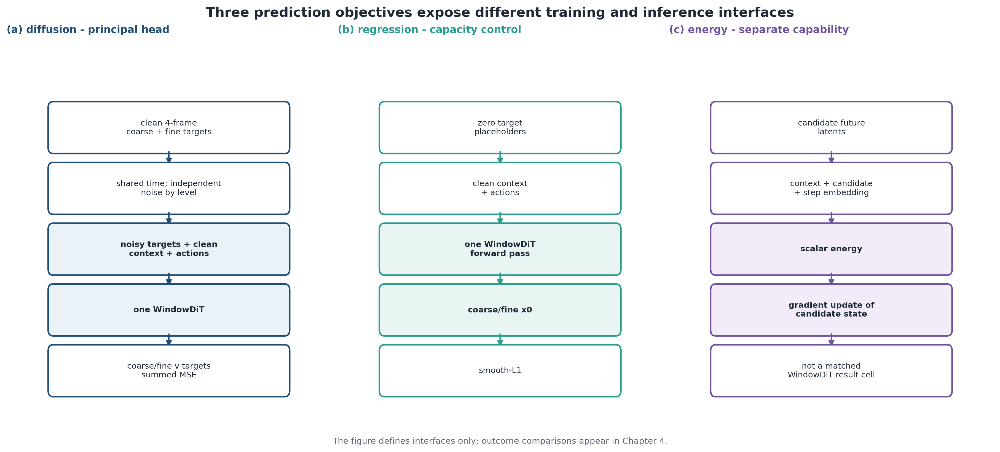
Source: 04_CHAPTER_3.md at cf3f661. New location: Appendix Д eq-source-3-21. This source-era relation does not override the revised method contract.
Original role/context and variable definitions:
Кожен блок використовує адаптивну обробку LayerNorm-Zero з сімейства DiT [4], що ґрунтується на нормалізації ознак у межах кожного зразка [160]. Мережа модуляції відображає з (3.14) на вектори зсуву, масштабування та гейту для механізму уваги та MLP. Для прихованого токена ,
спочатку обчислюється залишкове оновлення уваги:
Source: 04_CHAPTER_3.md at cf3f661. New location: Appendix Д eq-source-3-22. This source-era relation does not override the revised method contract.
Original role/context and variable definitions:
спочатку обчислюється залишкове оновлення уваги:
Після нього MLP формує вихід блока :
Source: 04_CHAPTER_3.md at cf3f661. New location: Appendix Д eq-source-3-23. This source-era relation does not override the revised method contract.
Original role/context and variable definitions:
Після нього MLP формує вихід блока :
У дифузійному режимі проєкції модуляції блоків ініціалізуються нулями, тому залишкові гілки починають роботу близько до тотожного відображення за схемою adaLN-Zero [4]. Для регресійного контролю модуляція ініціалізується звичайним способом: пряме передбачення прихованого коду не потребує спеціального нульового старту знешумлювача. Після восьмого блока відбираються лише цільові позиції. Окремі адаптивні нормалізації та лінійні вихідні модулі грубого й детального прогнозування повертають токени до 16 каналів і формують карти та . Термін «голова уваги» надалі використовується лише для складника багатоголової уваги.
Source: 04_CHAPTER_3.md at cf3f661. New location: Appendix Д eq-source-3-24. This source-era relation does not override the revised method contract.
Original role/context and variable definitions:
Генерування починається з гаусівського шуму для кожного грубого й детального цільового представлення чотирикадрового блока. Детермінований алгоритм вибірки DDIM [52] виконує знешумлення у вибраних точках навчального розкладу зашумлення, тобто послідовності рівнів , використаних під час навчання. Для поточної ітерації у точці вихід швидкісної параметризації спочатку перетворюється на оцінку чистих даних :
Відповідна оцінка шуму дорівнює
Source: 04_CHAPTER_3.md at cf3f661. New location: Appendix Д eq-source-3-25. This source-era relation does not override the revised method contract.
Original role/context and variable definitions:
Відповідна оцінка шуму дорівнює
Для кроків наступний стан вибірки визначається як
Source: 04_CHAPTER_3.md at cf3f661. New location: Appendix Д eq-source-3-26. This source-era relation does not override the revised method contract.
Original role/context and variable definitions:
Для кроків наступний стан вибірки визначається як
За замовчуванням для обчислення встановлено . Отже, один блок із чотирьох кадрів вимагає 16 обчислень мережевої функції, або чотири обчислення на кожен згенерований кадр. Для розгортання з прогнозованих блоків загальна кількість обчислень предиктора дорівнює . NFE можна скорочувати й дистиляцією дифузійного алгоритму вибірки [119], однак у цьому дослідженні ваги не дистильовано: чутливість перевіряється зміною кількості кроків того самого DDIM.
Source: 04_CHAPTER_3.md at cf3f661. New location: Appendix Д eq-source-3-27. This source-era relation does not override the revised method contract.
Original role/context and variable definitions:
Регресійний контроль перевіряє найпростіше пояснення: чи може одна умовна оцінка використати той самий пакет без ітеративного уточнення DDIM. Він зберігає токенізацію, ширину й глибину мережі, контекст і геометрію цілі. На місця майбутніх карт подаються нульові початкові токени з окремою роллю «ціль», дифузійний час фіксується на нулі, а два вихідні модулі безпосередньо прогнозують грубий і детальний приховані коди. Оптимізується така втрата:
При звичайній оцінці регресійна траєкторія є детермінованою для фіксованих ваг, вхідних даних та числового середовища. Її не можна описувати як вибірку з того самого генеративного сімейства, що й DDIM. Контроль з’ясовує, чи може однопрохідна умовна оцінка використати ту саму упаковану історію, тоді як дифузійний модуль показує результат з ітеративним стохастичним уточненням.
Source: 04_CHAPTER_3.md at cf3f661. New location: Appendix Д eq-source-3-28. This source-era relation does not override the revised method contract.
Original role/context and variable definitions:
Після навчання той самий предиктор багаторазово застосовується до власних виходів. Щоб довжина збереженого стану не зростала з кожним блоком, для грубого й детального потоків використовуються буфери фіксованої місткості: нові карти додаються, а найстаріші вилучаються за правилами пакета. У стандартній щільній конфігурації місткості дорівнюють і , а ширина прогнозованого блока становить кадри. Предиктор стає довгогоризонтною системою завдяки рекурентному оновленню. Кожен завершений чотирикадровий блок надходить до наступного контексту, після чого цикл передбачення повторюється. Між викликами зберігаються буфери прихованого простору фіксованого розміру, визначені активним пакетом, а граф активацій трансформера завершується разом із поточним викликом.
Після оновлення межа вікна переходить до . Оператор після конкатенації зберігає найновіших позицій. Детальний буфер відкидає чотири із шести старих значень і додає чотири прогнози, грубий буфер так само оновлює залишкові позиції. Часово розріджені конфігурації та конфігурації зі зменшеним кроком використовують задекларований планувальник прив’язок, тому до потоку повертаються лише цільові позиції, вирівняні з його часовою сіткою. Щільні пари, на яких ґрунтується основне твердження про досяжність і точність відтворення, оновлюють по чотири грубі й детальні цілі на блок і не змінюють цільового інтерфейсу.
Source: 04_CHAPTER_3.md at cf3f661. New location: Appendix Д eq-source-3-29. This source-era relation does not override the revised method contract.
Original role/context and variable definitions:
Довжини буфера недостатньо для відтворення історичного значення. Кожен збережений слот повинен містити або детерміновано отримувати кадр, який він представляє. Для потоку слот на цільовій межі закріплений за адресою :
Часове відставання цього слота дорівнює , де . Та сама домовленість стосується грубого контексту з кроком 2. Конфігурація hier-s2-min зберігає : 24 прив’язки, розподілені на інтервалі 48 позицій, із найдавнішою часовою відстанню 47. Протокол із фіксованою ціллю використовує зареєстровану позначку номінальної досяжності 48 та заздалегідь визначений діапазон . Порівняння залишається тестом усієї конфігурації; його не можна використовувати для визначення верхнього порога досяжності з точністю до одного кадру.
Source: 04_CHAPTER_3.md at cf3f661. New location: Appendix Д eq-source-3-30. This source-era relation does not override the revised method contract.
Original role/context and variable definitions:
Фіксовані буфери роблять пам’ять збереженого стану незалежною від тривалості розгортання. Для пакета із коефіцієнтами кодека на токен і розміром елемента байтів суцільний корисний обсяг даних прихованого простору становить
У float32 кожен токен займає 64 байти, а у float16 чи bfloat16 – 32 байти. Основний стан містить 48 грубих і 6 детальних кадрів, тобто 18 432 коефіцієнти прихованого простору: 72 КіБ у float32 та 36 КіБ у 16-бітному форматі. Для порівняння, щільна детальна історія з 48 кадрів містить 49 152 коефіцієнти, або 192 КіБ у float32.
Source: 04_CHAPTER_3.md at cf3f661. New location: Appendix Д eq-source-3-31. This source-era relation does not override the revised method contract.
Original role/context and variable definitions:
Самоувага залежить від загальної довжини послідовності. Якщо константи ядра ігноруються, обчислювальна складність ядра уваги для одного блоку масштабується як
За однакової ширини відношення членів уваги для довжин і наближено дорівнює . Це відношення не описує повну пам’ять або час роботи всієї моделі. На рисунку 3.13 показано, як пам’ять залежить від розподілу токенів між рівнями. Ієрархічні пакети зменшують збережений контекст і загальну довжину послідовності, залишаючи спільну ціль видимою. Стовпчики відображають точну кількість токенів на інтерфейсі, а не продуктивність моделі.
Source: 04_CHAPTER_3.md at cf3f661. New location: Appendix Д eq-source-3-32. This source-era relation does not override the revised method contract.
Original role/context and variable definitions:
Спостережуваний кадр – це вікно перегляду розміром . Нехай – збережена координата лівого краю, а – записана дія камери. Рух вікна задається рівнянням
Спостережуваний кадр формується як . На рисунку 3.14 показано, як зі збережених позицій вікна перегляду визначають події, доступні ієрархічному пакету, але недоступні короткому плоскому вікну, де для верхніх бюджетів окремо порівнюють пакети, що вже охоплюють потрібну історію. Це дає змогу перевіряти конкретні пари замість загального зіставлення на пізньому горизонті.
Source: 04_CHAPTER_3.md at cf3f661. New location: Appendix Д eq-source-3-33. This source-era relation does not override the revised method contract.
Original role/context and variable definitions:
Аналітичний модуль видимості використовує лише збережені координати вікна перегляду й еталонний світ; виходи моделі до нього не надходять. Для кадрів перед цільовим моментом множина охоплених стовпців світу дорівнює
Стовпці переднього плану, видимі в цільовому кадрі, визначаються за порогом 0,5:
Source: 04_CHAPTER_3.md at cf3f661. New location: Appendix Д eq-source-3-34. This source-era relation does not override the revised method contract.
Original role/context and variable definitions:
Стовпці переднього плану, видимі в цільовому кадрі, визначаються за порогом 0,5:
Різниця містить частину поточного переднього плану, якої не було у вікні останніх кадрів:
Source: 04_CHAPTER_3.md at cf3f661. New location: Appendix Д eq-source-3-35. This source-era relation does not override the revised method contract.
Original role/context and variable definitions:
Різниця містить частину поточного переднього плану, якої не було у вікні останніх кадрів:
Для непорожнього частка нового переднього плану дорівнює . Самої складності запису недостатньо, щоб визначити попередню спостережуваність. Нехай – найпізніший момент часу до , коли стовпець світу перебував у полі огляду, а містить стовпці з , для яких такий момент існує. Частка доступних для відповіді стовпців дорівнює
Source: 04_CHAPTER_3.md at cf3f661. New location: Appendix Д eq-source-3-36. This source-era relation does not override the revised method contract.
Original role/context and variable definitions:
Для непорожнього частка нового переднього плану дорівнює . Самої складності запису недостатньо, щоб визначити попередню спостережуваність. Нехай – найпізніший момент часу до , коли стовпець світу перебував у полі огляду, а містить стовпці з , для яких такий момент існує. Частка доступних для відповіді стовпців дорівнює
Мітка часу від останньої видимості визначається як . Явно задано , коли , і , коли . Запис вважається придатним для оцінювання, якщо та . Тому кадр, що містить лише недавні свідчення, не може потрапити до смуги позитивної різниці досяжності, а справді небачена повторна поява реєструється окремо й не враховується як доказ проти пакета пам’яті. Нижче позначає індекс кліпу, а – часову позицію всередині нього.
Source: 04_CHAPTER_3.md at cf3f661. New location: Appendix Д eq-source-3-37. This source-era relation does not override the revised method contract.
Original role/context and variable definitions:
Мітка часу від останньої видимості визначається як . Явно задано , коли , і , коли . Запис вважається придатним для оцінювання, якщо та . Тому кадр, що містить лише недавні свідчення, не може потрапити до смуги позитивної різниці досяжності, а справді небачена повторна поява реєструється окремо й не враховується як доказ проти пакета пам’яті. Нижче позначає індекс кліпу, а – часову позицію всередині нього.
Для hier-min порівняно з flat-min зареєстрований діапазон становить . Порівняння всієї конфігурації B1 з flat-short використовує діапазон . Ці діапазони були отримані за допомогою інструмента розроблення та зафіксовані до відкриття відкладеного набору підтвердження. Інші пари отримують власні межі; загальна позначка «складна вибірка» ніколи не замінює різницю в досяжності фактичних гілок.
Source: 04_CHAPTER_3.md at cf3f661. New location: Appendix Д eq-source-3-38. This source-era relation does not override the revised method contract.
Original role/context and variable definitions:
Як було визначено в першому розділі, жоден окремий показник не охоплює всі форми консистентності. Тому доцільно зосередитися на конкретній проблемі та вибрати показник, чутливий саме до неї. У цій роботі такою проблемою є довгострокове прогнозування з тимчасовим виходом об’єкта за межі поля огляду. Нехай – декодовані прогноз і ціль, — повна множина пікселів, а – поріг, визначений для популяції. Позначимо прогнозовану, еталонну та об’єднану маски як , і . Для квадратичної похибки введемо одну функцію маскованої похибки на непорожній області :
Повнокадрова, передньопланова, фонова та об’єднана похибки отримуються відповідно для , , і . Для порожнього еталонного переднього плану не звітується; для порожнього фону або об’єднання відповідний діагностичний показник за домовленістю дорівнює нулю. Чіткість переднього плану вимірюється як енергія лапласіана з маскуванням для кожного зображення окремо, з використанням сімейства мір фокусування лапласіана [163]. SSIM та PSNR залишаються традиційними діагностичними показниками реконструкції [127]. Візуальний огляд також є обов’язковим: панелі декодованого прогнозу, цільового зображення та останнього контексту зберігаються з тих самих записів, що використовуються для чисельного аналізу. Вони допомагають діагностувати зникнення об’єктів і якісну невідповідність, але відбираються за заздалегідь визначеним правилом і не замінюють статистичного оцінювання.
Source: 04_CHAPTER_3.md at cf3f661. New location: Appendix Д eq-source-3-39. This source-era relation does not override the revised method contract.
Original role/context and variable definitions:
Оцінювання цих кліпів потребує взаємно однозначного зіставлення, що зберігає ідентичність. Нехай і є центроїдами еталонного та виявленого об’єктів, а — діагоналлю кадру. Вартість пари поєднує нормовану відстань між центроїдами та IoU:
Після угорського зіставлення приймаються лише пари з ; їх множину позначено , а кількість — . Покриття дорівнює . Похибка траєкторії дорівнює сумі відстаней для прийнятих пар і штрафу за кожний пропущений еталонний об’єкт, поділеній на . Точність ідентичності дорівнює частці правильно класифікованих прийнятих пар серед усіх видимих маркованих еталонних об’єктів. Останні три показники не звітуються для кадрів без відповідних еталонних об’єктів, за винятком правила покриття з таблиці Д.2.
Source: 04_CHAPTER_3.md at cf3f661. New location: Appendix Д eq-source-3-40. This source-era relation does not override the revised method contract.
Original role/context and variable definitions:
Для показника величина є парною різницею запису у кліпі , а – кількістю таких записів. Зважена за записами оцінка середнього ефекту дорівнює
Використовується бутстреп-повторів. У повторі повторно відбирається множина цілих кліпів , після чого ефект обчислюється тією самою формулою:
Source: 04_CHAPTER_3.md at cf3f661. New location: Appendix Д eq-source-3-41. This source-era relation does not override the revised method contract.
Original role/context and variable definitions:
Використовується бутстреп-повторів. У повторі повторно відбирається множина цілих кліпів , після чого ефект обчислюється тією самою формулою:
Для кожного показника середнє бутстреп-ефектів дорівнює . Фіксована бутстреп-оцінка стандартної похибки має вигляд
Source: 04_CHAPTER_3.md at cf3f661. New location: Appendix Д eq-source-3-42. This source-era relation does not override the revised method contract.
Original role/context and variable definitions:
Для кожного показника середнє бутстреп-ефектів дорівнює . Фіксована бутстреп-оцінка стандартної похибки має вигляд
Для одночасного контролю зареєстрованої родини показників у кожному повторі береться найбільше відхилення, стандартизоване цією фіксованою оцінкою. Показник із нульовою бутстреп-похибкою не стандартизується й має бути позначений як вироджений, а не ділитися на нуль:
Source: 04_CHAPTER_3.md at cf3f661. New location: Appendix Д eq-source-3-43. This source-era relation does not override the revised method contract.
Original role/context and variable definitions:
Для одночасного контролю зареєстрованої родини показників у кожному повторі береться найбільше відхилення, стандартизоване цією фіксованою оцінкою. Показник із нульовою бутстреп-похибкою не стандартизується й має бути позначений як вироджений, а не ділитися на нуль:
Квантиль 0,95 розподілу визначає одночасний інтервал для кожного показника:
Source: 04_CHAPTER_3.md at cf3f661. New location: Appendix Д eq-source-3-44. This source-era relation does not override the revised method contract.
Original role/context and variable definitions:
Квантиль 0,95 розподілу визначає одночасний інтервал для кожного показника:
Вердикт визначається знаком одночасного інтервалу та заздалегідь заданим напрямом показника. Інтервал, що повністю лежить вище нуля, підтримує зареєстрованого кандидата; інтервал повністю нижче нуля підтримує базову порівнювану конфігурацію. Перетин нуля залишає результат невирішеним. Реплікація за ініціалізаціями може посилити або обмежити цей вердикт, але тисячі кадрів у межах одного кліпу не створюють реплікації за ініціалізаціями навчання. Тому в розділі 4 кількість кліпів, записів і ініціалізацій моделі подано окремо.
Source: 04_CHAPTER_3.md at cf3f661. New location: Appendix Д eq-source-3-45. This source-era relation does not override the revised method contract.
Original role/context and variable definitions:
Усередині області просторова дисперсія визначає лише м’яку вагу. Для детальної комірки з вектором оцінка є дисперсією за 16 каналами. За температури нормована вага дорівнює
Для кожної з восьми областей, , регіональний опис поєднує звичайне середнє та зважене значення, після чого навчена проєкція повертає його до 16 координат:
Source: 04_CHAPTER_3.md at cf3f661. New location: Appendix Д eq-source-3-46. This source-era relation does not override the revised method contract.
Original role/context and variable definitions:
Для кожної з восьми областей, , регіональний опис поєднує звичайне середнє та зважене значення, після чого навчена проєкція повертає його до 16 координат:
Отже, збережений стан кадру містить 16 грубих токенів і вісім детальних регіональних токенів, по 16 скалярних значень у кожному:
Source: 04_CHAPTER_3.md at cf3f661. New location: Appendix Д eq-source-3-47. This source-era relation does not override the revised method contract.
Original role/context and variable definitions:
Отже, збережений стан кадру містить 16 грубих токенів і вісім детальних регіональних токенів, по 16 скалярних значень у кожному:
Стан містить скалярні значення. Після пакування вихідні 64 детальні комірки можуть бути звільнені. Порівняно з необробленим кадром відношення корисного навантаження становить ; порівняно зі щільним одночасним зберіганням грубої й детальної карт — .
Source: 04_CHAPTER_3.md at cf3f661. New location: Appendix Д eq-source-3-48. This source-era relation does not override the revised method contract.
Original role/context and variable definitions:
Нехай є вікном із упакованих кадрових станів. Однопрохідний перехід спочатку відновлює це відеовікно, застосовує піксельний SimVP-сумісний предиктор і пакує прогноз назад у той самий формат:
Однакова форма входу й виходу дає змогу застосувати оборотний другопорядковий крок до пари станів . Спочатку перший компонент наступної пари отримує попередній другий компонент:
Source: 04_CHAPTER_3.md at cf3f661. New location: Appendix Д eq-source-3-49. This source-era relation does not override the revised method contract.
Original role/context and variable definitions:
Однакова форма входу й виходу дає змогу застосувати оборотний другопорядковий крок до пари станів . Спочатку перший компонент наступної пари отримує попередній другий компонент:
Другий компонент поєднує попередній перший компонент із прогнозом переходу:
Source: 04_CHAPTER_3.md at cf3f661. New location: Appendix Д eq-source-3-50. This source-era relation does not override the revised method contract.
Original role/context and variable definitions:
Другий компонент поєднує попередній перший компонент із прогнозом переходу:
Попередню пару можна точно відновити в межах числової точності. Спочатку відновлюється :
Source: 04_CHAPTER_3.md at cf3f661. New location: Appendix Д eq-source-3-51. This source-era relation does not override the revised method contract.
Original role/context and variable definitions:
Попередню пару можна точно відновити в межах числової точності. Спочатку відновлюється :
Після підстановки відновленого отримуємо :
Source: 04_CHAPTER_3.md at cf3f661. New location: Appendix Д eq-source-3-52. This source-era relation does not override the revised method contract.
Original role/context and variable definitions:
Після підстановки відновленого отримуємо :
Для першого кроку використовується , тому і однокроковий прогноз не змінюється через реверсивну оболонку. Під час зворотного проходу локальний граф переходу відтворюється по одному кроку, а не зберігається для всієї часової послідовності. Порівняння реверсивного й звичайного режимів використовує той самий , ваги, пакет, пакетний розмір і горизонт; змінюється лише стратегія зберігання активацій.
Source: 04_CHAPTER_3.md at cf3f661. New location: Appendix Д eq-source-3-53. This source-era relation does not override the revised method contract.
Original role/context and variable definitions:
Для показника через позначено середнє значення кандидата, а через – середнє значення порівнюваної конфігурації. Введемо коефіцієнт напряму для метрик «менше — краще» і для метрик «більше — краще». Щоб додатний знак завжди означав перевагу кандидата, ефект визначено як
Така орієнтація полегшує читання неоднорідних панелей, однак метрики мають різні шкали й не допускають прямого числового зіставлення. Наприклад, зміну MSE об’єднаної маски на 0,01 не можна прирівняти до зміни точності ідентифікації на 0,01. Для сімейства верхньої межі зареєстрованим кандидатом є плоский пакет. Тому додатний ефект у перевірках робастності свідчить на його користь, хоча в основній таблиці E2 різницю втрат подано як «плоский мінус ієрархічний».
Source: 05_CHAPTER_4.md at cf3f661. New location: Appendix Д eq-source-4-1. This source-era relation does not override the revised method contract.
Original role/context and variable definitions:
«Best-of-» використано лише як діагностику з вибором найкращого кандидата за відомим еталоном. Для кожного запису обирається декодований зразок із найменшою MSE переднього плану відносно еталона. Позначимо кількість обчислень мережі на одного кандидата через : для регресії з MC-dropout , а для дифузії дорівнює кількості кроків DDIM. Для кандидатів загальна кількість обчислень дорівнює
Однакова кількість кандидатів не означає однакового обчислювального навантаження. Зокрема, «best-of-8» за 16 NFE використовує вісім обчислень регресійної мережі та 128 обчислень дифузійної. Тому таблиця 4.1 подає діагностику охоплення, середню поведінку кандидатів і самоподачу окремо; детальну чутливість до NFE перенесено до додатка Е.
Source: 05_CHAPTER_4.md at cf3f661. New location: Appendix Д eq-source-4-2. This source-era relation does not override the revised method contract.
Original role/context and variable definitions:
Трансформер на основі енергії пропонує інший шлях до генерації: навчати скалярну енергію замість нормалізованої ймовірності [84, 85]. Для контексту та кандидата майбутнього енергія задає напрям оновлення
Тут є номером ітерації, – кроком спуску, а – зареєстрованим ланжевенівським членом, якщо алгоритм використовує шум [89, 90]. Узгодження скорів пов’язує градієнти енергії з градієнтами густини даних [86, 87]. Для корисної генерації енергія має правильно впорядковувати змістовні кандидати, а спуск від заданої початкової точки – досягати структурованої області ландшафту.
Source: 05_CHAPTER_4.md at cf3f661. New location: Appendix Д eq-source-4-3. This source-era relation does not override the revised method contract.
Original role/context and variable definitions:
Загальну специфічну для пари популяцію визначено у формулі (3.38). Для пари hier-min/flat-min вона охоплює записи, у яких останнє релевантне спостереження віддалене більш ніж на 14, але не більш ніж на 48 кадрів. Додатково запис включається лише за скінченного значення , видимості відповідного стовпця не менш як 0,5 та непорожнього переднього плану. Нехай дорівнює одиниці для таких записів і нулю для решти, де позначає кліп, а – кадр у ньому. Якщо є парною різницею помилок переднього плану, оцінка ефекту досяжності має вигляд
Формула (4.4) усереднює різниці лише всередині визначеної до відкриття даних смуги; кадри, доступні обом пакетам або жодному з них, не розмивають оцінюваний механізм. Ефект обчислено окремо для двох незалежних навчань і зіставлено з результатом на повній оцінюваній популяції. Це порівняння наведено на рисунку 4.4.
Source: 05_CHAPTER_4.md at cf3f661. New location: Appendix Д eq-source-4-4. This source-era relation does not override the revised method contract.
Original role/context and variable definitions:
Ця межа є значущою, оскільки її контекстна вартість є явною. У кодеку з фіксованою структурою кадр високої роздільної здатності містить токени, а грубий кадр – . У пакеті кількість детальних і грубих кадрів позначено відповідно та . Скорочення кількості токенів відносно 48 щільних детальних кадрів становить
Формула (4.5) описує стан контексту, а не повну пам’ять GPU. Для перевірки фізичного масштабу таблиця 4.3 переводить токени в корисний обсяг даних прихованого простору та матеріалізованих вбудовувань. Кожен токен має 16 коефіцієнтів кодека; значення стосуються одного прикладу й не містять цільових токенів, проміжних активацій уваги й MLP, параметрів, стану оптимізатора та накладних витрат розподільника.
Source: 05_CHAPTER_4.md at cf3f661. New location: Appendix Д eq-source-4-5. This source-era relation does not override the revised method contract.
Для повного інституційного додатка або додаткових матеріалів статті доступні такі матеріали. Розширені результати вибору вихідного механізму наведено в таблиці Е.1.
Таблиця Е.1 – Розширені результати вибору механізму генерації. Рядки чутливості до NFE походять із меншого замороженого набору й не об’єднуються з основною оцінюваною вибіркою.
| Режим | Регресія | Дифузія | Незмінне продовження або 95 % ДІ |
|---|---|---|---|
| Один крок, найкращий із 8, MSE переднього плану | 0,0664 | 0,0512 | 0,2367 |
| Проста підмножина | 0,0232 | 0,0120 | – |
| Складна підмножина нових смуг | 0,1808 | 0,1549 | – |
| Середнє за 8 кандидатами | 0,0714 | 0,0640 | – |
| Різкість переднього плану | 0,1591 | 0,1886 | 0,0515 |
| Найкращий із 8, 4 NFE | 0,0680 | 0,0546 | – |
| Найкращий із 8, 8 NFE | 0,0680 | 0,0514 | – |
| Найкращий із 8, 16 NFE | 0,0680 | 0,0503 | – |
| Самоподача, один кандидат, ієрархічний пакет | 0,1682 | 0,1848 | [0,0110; 0,0227] для «дифузія мінус регресія» |
| Самоподача, один кандидат, плоский пакет | 0,2015 | 0,2038 | – |
Повні якісні монтажі збережено в додатку, щоб у головному тексті не переривати аргументацію великими багаторядковими зображеннями. Їхній порядок визначено індексами записів до перегляду результатів; вони є ілюстративними, а не статистичними доказами.
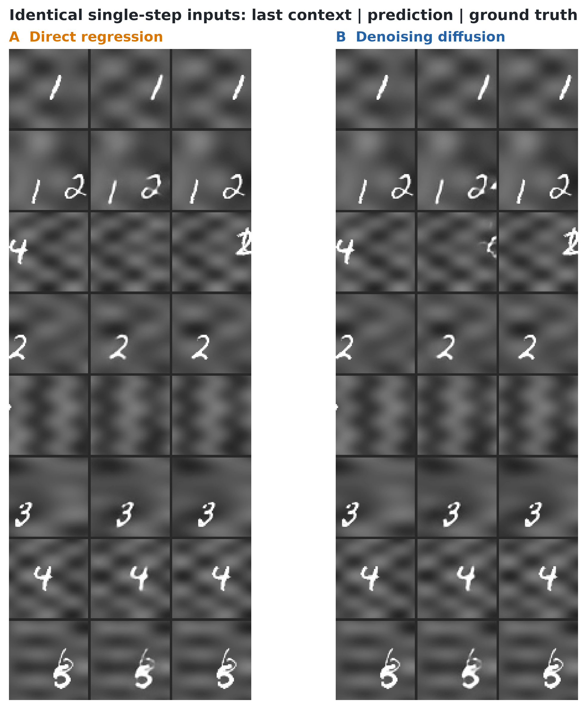
Рисунок Е.1 – Повний монтаж однокрокових прогнозів регресії та дифузії. Ліва й права панелі відповідають регресії та дифузії. У кожному рядку стовпці містять останній кадр контексту, прогноз і еталон; рядки йдуть у зафіксованому порядку оцінюваних записів. Монтаж має пояснювальне значення, тоді як вибір механізму спирається на агреговані показники таблиці 4.1. Джерело: заморожені однокрокові результати дослідження механізмів генерації.
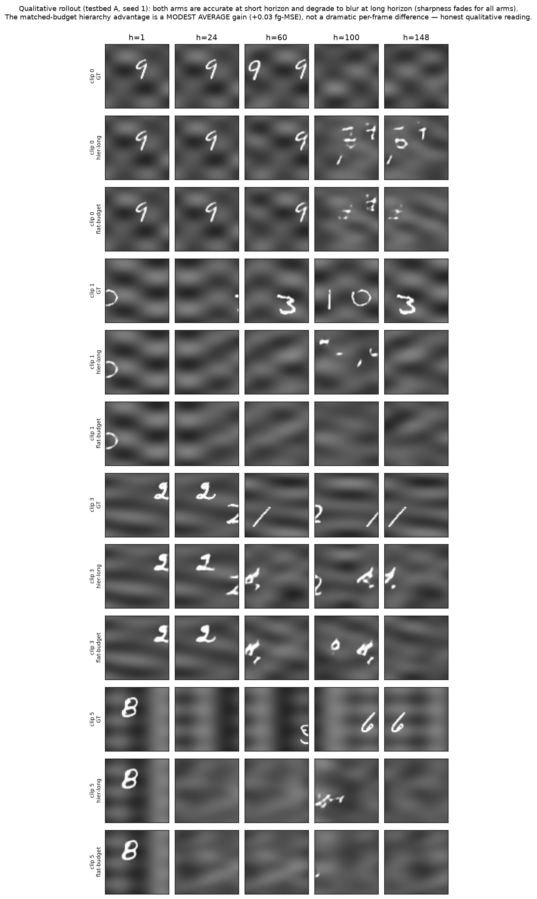
Рисунок Е.2 – Повний монтаж розгорток для чотирьох фіксованих кліпів. Для кожного кліпу три послідовні рядки містять еталон, hier-long і flat-budget; стовпці відповідають горизонтам 1, 24, 60, 100 і 148 кадрів. Використано кліпи з індексами 0, 1, 3 і 5 та ініціалізацію навчання 1; це фіксована підвибірка, а не добір найкращих чи найгірших прикладів. Монтаж показує характер помилок, але не замінює одночасних інтервалів таблиці Д.3. Джерело: заморожені розгортки E2.
routing_*: варіанти uniform, recent2 і recent4, селектори на основі випадкового вибору, руху, дисперсії, ентропії та їх комбінацій, а також результати LoopMom і Moving-MNIST; вони показують здатність знаходити передній план, але не підтверджують скорочення фактичного буфера стану;smoke_*, probe_* і ранні контрольні точки фіксованих ділянок, які не використовуються для вибору підсумкової моделі;memory_profile_20260823.json, який не є обов’язковим доказом через невідтворену недетермінованість; основний текст використовує лише детерміновані профілі з явною перевіркою втрат і градієнтів.The following source sections retain standard derivations, publication tutorial assets, historical E2–E8 detail, old external feasibility, and the superseded integration prototype. Read Chapter 3/4 for the current contract.
Historical/source-era material; superseded wording is preserved for provenance, not endorsed as the current model or current result status.
Кулик Л. Р. Системний аналіз та інтелектуальні технології консистентного моделювання процесів ієрархічної генерації відеоданих. Кваліфікаційна наукова праця на правах рукопису, подана на здобуття ступеня доктора філософії за спеціальністю 124 «Системний аналіз» галузі знань 12 «Інформаційні технології». Вінницький національний технічний університет, Вінниця, 2026.
Дисертацію присвячено довгогоризонтному прогнозуванню відео як системній задачі з обмеженими ресурсами. Її центральна проблема полягає у збереженні релевантного стану та об’єктної траєкторії тоді, коли безпосереднє спостереження вже залишило поле огляду або коротке контекстне вікно. Зі збільшенням горизонту модель повинна не лише формувати правдоподібні наступні кадри, а й зберігати інформацію про об’єкти, їхню ідентичність, траєкторії та ділянки сцени, які тимчасово зникають із поля спостереження. Цьому заважають три пов’язані обмеження: місткість збереженого контексту, пам’ять активацій довгого навчального ланцюга та рівномірний розподіл просторової ємності між ділянками різної інформаційної складності. Ці витрати часто узагальнюють терміном «пам’ять», хоча вони виникають у різних частинах системи, масштабуються за різними змінними й потребують різних втручань.
Мета дисертаційної роботи полягає у підвищенні значущої для задачі консистентності та ресурсної ефективності довгогоризонтного ієрархічного прогнозування відео шляхом системного аналізу й перевірки механізмів збереження віддаленої історії, часового навчання, просторового представлення та оцінювання результатів. Основним архітектурним предметом є ієрархічний контекст; інші механізми розглянуто як засоби усунення обмежень його масштабування.
Центральною архітектурною задачею роботи є збереження релевантної історії, коли щільне вікно детальних кадрів обмежене. Ієрархічне пакетування досліджено як спосіб збільшити часову досяжність контексту без пропорційного зростання кількості детальних токенів. TempVerseFormer і V-BLT розв’язують суміжні обмеження: перший метод зменшує потребу в збереженні активацій під час навчання, другий реалізує локально–глобальну ієрархію та надає сигнал локальної прогнозної складності. Опубліковані результати цих методів і центральне порівняння пакетів отримано окремо, щоб не змішувати причинні ефекти. Після завершення основної програми додатково виконано обмежену інтеграційну перевірку, у якій стан зі сталими грубими й детальними областями, однопрохідний часовий перехід і реверсивне розгортання працюють в одному прототипі.
Зміст роботи. У вступі обґрунтовано актуальність теми, сформульовано мету й шість завдань дослідження, визначено об’єкт, предмет і методи, подано наукову новизну, практичне значення, відомості про достовірність результатів та особистий внесок здобувача. Довгогоризонтне прогнозування розглянуто як частково спостережуваний динамічний процес, у якому просторове представлення, контекст застосування й пам’ять навчальних активацій утворюють різні ресурсні контури.
У першому розділі виконано системний аналіз консистентного прогнозування відео. Критерії зовнішнього вигляду, ідентичності, геометрії, семантичного змісту, часової неперервності, правильності траєкторії та міжрівневої консистентності розглянуто як взаємопов’язані, але не взаємозамінні. Проаналізовано дифузійні, авторегресійні, енергетичні й трансформерні підходи, способи керування консистентністю та методи довготривалого доступу до історії. Часткова спостережуваність приводить до дефіциту досяжності; ієрархічний контекст збільшує доступний проміжок, але створює ціну втраченої деталізації. Для перевірки цього причинного ланцюга сформульовано вимоги до явного обліку бюджету, геометрії часових прив’язок, доступної інформації, експериментальної популяції та показника, який відповідає заявленому механізму.
У другому розділі досліджено два окремо перевірені засоби усунення обмежень масштабування ієрархічної системи. Перший стосується реверсивного часового обчислення в TempVerseFormer. Точне відновлення заявляється для збережуваного подвоєного стану трансформера, тоді як кодування, проєкції, злиття, декодування та функція втрат залишаються поза межею реверсивності. У задачі контрольованого обертання пам’ять часової моделі становить близько 0,89 ГБ для одного, чотирьох і шістнадцяти кроків; зіставлені нереверсивні варіанти на шістнадцяти кроках потребують близько 2,60–2,61 ГБ. Опублікований профіль для довших горизонтів залишається близьким до 1 ГБ до 1024 кроків, але реверсивне відтворення має обчислювальну ціну й не гарантує кращої якості прогнозу.
Другий метод реалізовано у Vision Byte Latent Transformer. V-BLT виконує локально–глобально–локальну обробку байтів каналів растрових пікселів, використовує N-вимірне ротаційне позиційне кодування для збереження часових і просторових координат після лінеаризації та прогнозує категоріальний розподіл за 256 значеннями кожного байта. Така локально–глобальна побудова обґрунтовує ієрархічне стиснення одиниць, що надходять до глобальної моделі. Перевірка концепції з фіксованими просторово-часовими блоками розміром 4 × 4 × 4 продемонструвала нижчу обчислювальну складність у GFLOPs, ніж наведені конфігурації ViViT і UNet-3D, а також сприятливі, хоча не завжди найкращі, показники на процедурних відео обертових двовимірних фігур і тривимірних полікубів. Прогнозна ентропія формує просторову карту складності й мотивує нерівномірний розподіл детальної ємності. Динамічна зміна розміру ділянок або розподілу обчислень за цією картою в завершених експериментах V-BLT не перевірялася.
У третьому розділі розроблено дворівневу модель ієрархічного контексту для довгогоризонтного прогнозування відео. Заморожений кодек прихованого простору утворює грубий і детальний просторові потоки, які обробляє один дифузійний предиктор зі спільною увагою. Пакет контексту формалізовано через рівень представлення, часовий крок, кількість кадрів і геометрію прив’язки. Окремо враховано токени контексту, цілі, корисного навантаження та повної послідовності. Для авторегресивного застосування визначено оновлення грубого й детального кільцевих буферів. У центральному порівнянні пакетів TempVerseFormer, V-BLT і RoPE-ND навмисно не змінюють цей предиктор, щоб ефект контексту залишався інтерпретованим. Наприкінці розділу окремо визначено інтеграційний прототип зі сталими грубими й детальними областями, однопрохідним часовим переходом та реверсивним розгортанням.
У четвертому розділі наведено експериментальну перевірку розроблених методів і меж їх застосовності. Процедурне середовище LoopMom забезпечує точне аналітичне визначення моментів, коли потрібна ділянка сцени була видимою та чи входить вона до досяжності конкретного пакета. Оцінювання охоплює показники кадру й переднього плану, пропущений і зайвий передній план, зіставлення об’єктів зі збереженою ідентичністю, покриття, неперервність траєкторії, парні ефекти на рівні кліпів і одночасні інтервали для сімейств порівнянь. Під час статистичного оцінювання залежність між кадрами одного кліпу зберігається, а повторні навчання розглянуто як окреме джерело невизначеності. Дані розроблення відокремлено від відкладеної підтверджувальної вибірки, вибірок із заздалегідь визначеним призначенням і захищених контрольних вибірок. Негативні результати також включено до підсумкового доказового запису. Після завершеної програми четвертої статті окремо подано перевірку технічної здійсненності сумісної архітектури; вона не змінює заморожену межу «досяжність–точність відтворення».
У загальних висновках результати зіставлено із шістьма завданнями дослідження та сформульовано правило вибору методу за обмежувальним ресурсом. Ієрархічне пакування доцільне, коли бракує досяжності минулого; щільний детальний контекст потрібний, коли визначальною є точність відтворення; реверсивне відтворення або контрольні точки активацій застосовують, коли навчання обмежує пам’ять. Основні причинні ефекти цих втручань виміряно окремо. Додатковий прототип показує їхню часткову технічну сумісність, але не перетворює економію різних складників пам’яті на автоматично мультиплікативний виграш.
Основні наукові та практичні результати полягають у такому:
Центральний емпіричний результат стосується не загальної переваги ієрархічної архітектури, а визначеної області її доцільності. Коли зіставлене за бюджетом щільне вікно не охоплює релевантного минулого, грубий довгий потік забезпечує доступ до давнішньої історії. Після насичення часової досяжності перевага може перейти до детального плоского контексту.
Наукова новизна дисертаційної роботи полягає в такому:
Новизна має методологічний та емпіричний характер. У роботі не заявляється пріоритет щодо ієрархічних відеомоделей, реверсивних мереж або адаптивної токенізації як широких класів архітектур.
Додаткова інтеграційна перевірка не виділяється як самостійний пункт центральної наукової новизни, оскільки виконана в режимі розроблення для однієї ініціалізації. Її роль полягає в демонстрації здійсненності системного синтезу та в установленні межі композиційного виграшу.
Окреслена межа новизни визначає й коло коректного застосування результатів. Отримані результати є корисними для: дослідників, які проєктують моделі прогнозування відео за обмеженого контексту або пам’яті; розробників експериментальних систем, яким потрібні відтворювані порівняння пакетів контексту; фахівців із процедурного синтезу даних для перевірки часової динаміки, просторової складності та пам’яті; навчальних курсів із системного аналізу, машинного навчання й генеративного моделювання; подальших робіт із довгими природними відео після окремої зовнішньої валідації. Застосування результатів у критичних для безпеки системах не перевірялося.
Практичне значення отриманих результатів полягає у створенні комплексу програмних засобів для відтворюваного дослідження відеопрогнозування. До нього належать репозиторій TempVerseFormer для реверсивного часового навчання; репозиторій visionBLT з V-BLT і RoPE-ND; набір інструментів simple-shape-dataset-toolbox для процедурного генерування відео двовимірних фігур і тривимірних полікубів; генератори LoopMom і довгого Moving-MNIST з метаданими об’єктів, що зберігаються в часі; модулі підготовки конфігурацій, навчання, застосування, оцінювання, зіставлення експериментів та побудови таблиць і рисунків із заморожених артефактів. Інтеграційне розширення додає модулі пакування стану за сталими регіонами, адаптації SimVP до компактного входу, реверсивного розгортання та маніфест із контрольними сумами доказових артефактів. Реалізовано перевірку сумісності конфігурацій, авторизацію експериментів із забороною за замовчуванням, контентно-адресовані специфікації запусків і повний набір кадрових та об’єктних показників. Разом ці засоби реалізують повний цикл від контрольованого синтезу даних до перевірки твердження за замороженим артефактом, підтримуючи повторення експериментів, розроблення нових контрольованих наборів даних і навчальне використання.
Ключові слова: системний аналіз; довгогоризонтне прогнозування відео; ієрархічний контекст; консистентність; межа досяжність–точність відтворення; реверсивні обчислення; пам’ять активацій; моделювання растрових байтів; прогнозна ентропія; дифузія у прихованому просторі; точна спостережуваність; статистичне оцінювання на рівні кліпів.
Historical/source-era material; superseded wording is preserved for provenance, not endorsed as the current model or current result status.
Kulyk L. R. Systems Analysis and Intelligent Technologies for Consistent Modelling of Hierarchical Video-Data Generation Processes. Qualifying scientific work submitted as a manuscript for the degree of Doctor of Philosophy in specialty 124 System Analysis, field 12 Information Technologies. Vinnytsia National Technical University, Vinnytsia, 2026.
The dissertation treats long-horizon video prediction as a resource-constrained systems problem. Its central problem is preserving task-relevant state and object trajectories after direct evidence has left the current observation or a short context window. Three related constraints limit this ability: retained-context capacity, activation storage along a long training chain, and uniform allocation of spatial capacity to regions with unequal predictive complexity. They arise at different system interfaces rather than forming one undifferentiated type of memory.
Aim. The dissertation aims to improve task-relevant consistency and resource efficiency in long-horizon hierarchical video prediction through systems analysis and validated interventions for retained history, temporal training, spatial representation, and evaluation. Hierarchical retained context is the main architectural subject; the other mechanisms address constraints that arise when it is scaled.
Structure and content. The Introduction justifies the topic, states the aim and six research tasks, and defines the object, subject, methods, novelty, practical significance, reliability, and the candidate’s contribution. Chapter 1 models long-horizon prediction as a partially observed dynamic system. It separates appearance, identity, geometry, semantic content, temporal continuity, trajectory correctness, and cross-level agreement, and derives requirements for causal, resource-accounted comparison.
Chapter 2 studies two separately validated methods that address constraints on scaling a hierarchy-centred system. TempVerseFormer applies reversible computation to a persistent doubled transformer state while keeping non-invertible encoding, projection, fusion, decoding, and loss interfaces outside the exact claim. On the reported controlled-rotation task, temporal-model memory remains about 0.89 GB at one, four, and sixteen steps, compared with about 2.60–2.61 GB for matched non-reversible variants at sixteen steps. Vision Byte Latent Transformer applies local–global–local processing to raster pixel-channel bytes, uses RoPE-ND to preserve temporal and spatial coordinates, and estimates spatial predictive complexity through categorical entropy. The evaluated method uses fixed 4 × 4 × 4 packages; dynamic entropy-driven allocation was not tested.
Chapter 3 develops a two-level hierarchical retained-context model. A frozen latent codec supplies coarse and fine streams to one joint-attention diffusion predictor. Packages are defined by spatial level, temporal stride, frame count, and anchor geometry, with context, target, payload, and total-token costs accounted separately. TempVerseFormer, V-BLT, and RoPE-ND are intentionally absent from the central package comparison so that its causal interpretation remains intact. A separate method section then specifies a reduced integration prototype with fixed coarse and fine regions, a one-pass temporal transition, and reversible rollout.
Chapter 4 validates the methods and their applicability boundaries. The purpose-built LoopMom environment provides exact geometric observability for memory-dependent events. Evaluation includes frame and foreground endpoints, missing and extra foreground, persistent-object assignment, identity, coverage, trajectory continuity, paired clip-level effects, and simultaneous maximum-statistic intervals. Statistical inference accounts for clustering by clips, while training seeds form a separate uncertainty level. Development, untouched, purpose-locked, and protected populations are kept distinct, and negative results remain in the final evidence record. After the frozen fourth-article programme, a separate feasibility study evaluates the integrated prototype without changing the reach–fidelity evidence.
The General Conclusions map the findings back to the six research tasks and state a binding-resource selection rule. Hierarchical packaging is appropriate when distant reach is missing; dense fine context is preferable when fidelity is limiting; and reversible replay or activation checkpointing is relevant when training memory is the bottleneck. Their main causal effects were measured separately. A later prototype demonstrates partial technical composability without treating savings in different memory components as automatically multiplicative.
Main scientific and practical results. The dissertation establishes a three-constraint decomposition of one long-horizon problem; an explicit reversible-state contract; a raster-byte representation with RoPE-ND and entropy-based complexity estimation; and a matched-budget protocol for hierarchical versus flat context.
On the untouched reach-differential population, hierarchy improves the registered endpoint by 0.0980 and 0.0914 for two training seeds when the matched flat window cannot include the needed past. Across the simultaneous frontier, hierarchy is confirmed at 896 and 1,152 context tokens, 1,792 tokens remain unresolved, and fine-resolution flat context is confirmed at 2,432 and 3,072 tokens. Forty-eight coarse frames with six or two fine frames use 1,152 or 896 tokens, respectively, which is 2.67 and 3.43 times fewer than 48 fine frames. Robustness tests preserve the main effect directions; the late self-fed inversion does not replicate. On protected long Moving-MNIST, support and trajectory effects favour hierarchy for all three seeds but are simultaneously resolved only for seeds 0 and 2; flat context preserves digit identity better for all three seeds.
In a separate one-seed feasibility study, a fixed-region state stores 384 scalar values per frame, obtains MSE 28.7175 on 10,000 canonical Moving-MNIST clips, and reduces the 40-frame activation peak from 1,418.79 MB under vanilla BPTT to 550.86 MB under reversible replay. This prototype demonstrates compatibility, not general quality leadership.
Scientific novelty. The work develops trajectory-level consistency criteria linked to observable failures; delimits reversible temporal computation by an explicit state boundary and a measured memory–computation frontier; develops a hierarchical raster-byte representation with multidimensional positional structure and entropy-based complexity estimation; establishes a matched-budget reach–fidelity frontier for the tested hierarchical and flat context packages; and combines exact observability, pair-specific reach populations, persistent-object endpoints, and clip-cluster-aware inference. The novelty is methodological and empirical. Priority over hierarchical video models, reversible networks, or adaptive tokenization as broad architectural classes is not claimed. The later integration prototype is reported as feasibility evidence rather than a separate central novelty claim.
Potential use. The results are useful for research on memory-limited video prediction, controlled evaluation of long-range dependence, procedural data generation, reproducible experiment management, and teaching in system analysis and machine learning. Application to safety-critical systems or unrestricted natural video requires separate external validation.
Practical significance. The software outputs include the TempVerseFormer and visionBLT repositories; the simple-shape-dataset-toolbox for procedural 2-D shape and 3-D polycube video generation; LoopMom and persistent long Moving-MNIST generators with object metadata; and modules for configuration validation, training, inference, endpoint calculation, experiment comparison, fixed-region state packing, reversible rollout, and evidence-derived figure and table generation. Fail-closed authorization, content-addressed run specifications, immutable artifacts, and stable research interfaces support reproducibility. A direct design rule follows: compress retained state when distant reach is missing, preserve dense detail when fidelity is limiting, and reconstruct activations when the training activation tape is the dominant cost.
Keywords: systems analysis; long-horizon video prediction; hierarchical context; consistency; reach–fidelity frontier; reversible computation; activation memory; raster-byte modelling; predictive entropy; latent diffusion; exact observability; clip-cluster-aware inference.
Historical/source-era material; superseded wording is preserved for provenance, not endorsed as the current model or current result status.
Метою дисертації є підвищення значущої для задачі консистентності та ресурсної ефективності довгогоризонтного ієрархічного прогнозування відео шляхом системного аналізу й дослідження часового навчання, просторового представлення, збереженого контексту та оцінювання, з основним фокусом на ієрархічному збереженні віддаленої історії.
Під значущою для задачі консистентністю розуміється збереження саме тих властивостей процесу, які мають залишатися незмінними або розвиватися за визначеним правилом: ідентичності, просторової підтримки, траєкторії, часової неперервності чи відповідності між рівнями. Ресурсна ефективність означає не мінімізацію одного абстрактного показника «пам’яті», а зменшення конкретної витрати за збереження потрібної властивості та за явно визначеної ціни в обчисленнях або деталізації.
Досягнення цієї мети передбачає більше, ніж просте об’єднання наявних модулів. Кожен метод має бути пов’язаний з ресурсом, який він безпосередньо змінює, а докази повинні давати змогу відрізнити дію механізму від супутньої архітектурної відмінності. Тому робота починається з формальних критеріїв, переходить до двох засобів усунення обмежень масштабування, а далі зосереджується на центральному дослідженні контексту зі зіставленими бюджетами. Завдання 2 і 3 стосуються здійсненності довшого навчання та ієрархічного просторового представлення; завдання 4–6 утворюють основну лінію побудови й перевірки ієрархічної контекстної моделі. Завершальна перевірка технічної здійсненності встановлює сумісність принципів, не перетворюючи її на сьоме незалежне завдання. Цей порядок є концептуальним, а не хронологічним.
Для досягнення поставленої мети сформульовано шість дослідницьких завдань:
Завдання перевіряють три наскрізні системні гіпотези. Вони не замінюють зареєстровані експериментальні H1–H5 у §3.6, а пов’язують їх із загальною структурою дисертації.
| Системна гіпотеза | Перевірюване очікування | Умова спростування або обмеження |
|---|---|---|
| ГС1: пам’ять активацій | Відтворення станів реверсивного часового ядра зменшує залежну від горизонту складову пам’яті активацій ціною додаткових обчислень | реконструкція або градієнти не проходять задані допуски; загальна пам’ять не зменшується у виміряному режимі |
| ГС2: досяжність контексту | За однакового токенного бюджету ієрархічний пакет допомагає у специфічній для пари популяції, де релевантне спостереження недоступне плоскому пакету | ефект відсутній у зареєстрованій смузі або не зберігається на незалежних перевірках |
| ГС3: точність відтворення | Після насичення часової досяжності детальний плоский контекст може відновити перевагу за показниками зовнішнього вигляду та ідентичності | напрям не відтворюється за бюджетами, ініціалізаціями або цільовими показниками |
Разом ці завдання відповідають на одне системне питання: як довгогоризонтний предиктор має зберігати потрібну історію, а потім розподіляти просторову деталізацію та пам’ять навчання, щоб підтримувати релевантний для задачі критерій консистентності за обмежених ресурсів? Ієрархія є основним архітектурним рішенням для контексту, а два інші механізми визначають умови її практичного масштабування. Йдеться про умовне правило проєктування, а не про архітектуру, яка перемагає в кожному тесті.
Historical/source-era material; superseded wording is preserved for provenance, not endorsed as the current model or current result status.
Наукова новизна роботи має методологічний та емпіричний характер. Центральний внесок полягає у контрольованому, зіставленому за бюджетом визначенні області, де ієрархічний контекст дає перевагу завдяки більшій часовій досяжності, та області, де детальний плоский контекст відновлює перевагу. Результати на інших ресурсних інтерфейсах пояснюють умови масштабування цієї системи. Пізніший інтеграційний прототип перевіряє здійсненність їх композиції, але не є підставою для ретроспективної заяви про одну спільно підтверджену модель. Новизна не ґрунтується на пріоритеті над широкими класами ієрархічних відеомоделей, реверсивних мереж або адаптивної токенізації.
На відміну від попередньої таксономії статичних зображень і традиційного агрегування кадрових оцінок, запропонований підхід перетворює вимоги до траєкторії на вимірювані критерії. Затримки подій, помилки зіставлення, хибний передній план і міжрівневі суперечності стають окремо спостережуваними.
Відмінністю від загальної конструкції реверсивної мережі є перевірена межа застосовності: реконструкція, збережений стан, метадані відтворення й обчислювальна надбавка оцінюються разом. Наявність одного реверсивного блока не вважається достатнім доказом наскрізної реверсивності. Нове профілювання реверсивного розгортання упакованого стану є допоміжною перевіркою цього принципу, а не заміною опублікованого результату TempVerseFormer.
Розроблено ієрархічне візуальне представлення на основі нестиснених байтів каналів растрових пікселів із локально–глобально–локальною обробкою, каузальним прогнозуванням і N-вимірним ротаційним позиційним кодуванням. Категоріальна прогнозна ентропія надає внутрішній для моделі сигнал просторової складності без окремого навченого модуля невизначеності. Перевірений метод використовує фіксовані просторово-часові блоки з публікації. Застосування ентропії для динамічної зміни розмірів ділянок або обчислень визначено як майбутній контролер і не зараховано до експериментальних результатів. Пізніше агрегування за сталими областями використовує споріднений принцип інформаційного зважування, але не є реалізацією динамічного розподільника V-BLT.
Розроблено дворівневу ієрархічну модель контексту для довгогоризонтного прогнозування за зіставлених бюджетів. Специфікація пакета окремо задає просторовий рівень, часовий крок, кількість кадрів, геометрію прив’язок, токени контексту й цілі та корисне навантаження. Грубі й детальні токени обробляє один спільний предиктор, однак наукова новизна полягає не в першому використанні кількох масштабів, а в контрольованому втручанні у форму пакета. Завдяки цьому експериментально визначено межу досяжності й точності відтворення: ієрархія оцінюється там, де груба історія виходить за межі щільного детального вікна, а плоский контекст також перевіряється після насичення досяжності, коли можуть домінувати деталі ідентичності.
Ієрархічні архітектури прихованого простору вже існують [20, 35–37]. Новим елементом є контрольоване втручання «пакет за фіксованого бюджету» та виміряні нижня й верхня інверсії, а не саме використання кількох масштабів.
Historical/source-era material; superseded wording is preserved for provenance, not endorsed as the current model or current result status.
Практичним результатом роботи є інструментарій для відтворюваних досліджень, а не готовий до промислового впровадження продукт. До нього входять репозиторій TempVerseFormer для дослідження реверсивного часового навчання; репозиторій visionBLT з реалізаціями V-BLT і RoPE-ND; комплекс simple-shape-dataset-toolbox для процедурного генерування відео двовимірних фігур і тривимірних полікубів; генератори LoopMom і довгого Moving-MNIST з метаданими об’єктів зі сталою ідентичністю; модулі підготовки конфігурацій, навчання, застосування, оцінювання та побудови артефактів. Додатково реалізовано пакування стану за сталими областями, адаптацію SimVP до компактного входу, реверсивне розгортання й маніфест контрольних сум. Стабільний публічний інтерфейс командного рядка повідомляє версію та перевіряє шлюз авторизації; навчання, оцінювання, аналіз і валідація виконуються окремими відтворюваними дослідницькими процесами. Така організація відповідає принципу відтворюваності: твердження мають бути простежуваними до даних, коду, конфігурацій та оголошеної процедури оцінювання [166].
Комплекси процедурного синтезу дають змогу створювати контрольовані послідовності з відомими параметрами руху, геометрією сцени, моментами зникнення й повторної появи та, де це передбачено, ідентифікаторами об’єктів. Це корисно для перевірки механізмів, які важко ізолювати на природному відео. Інструменти керування експериментами реалізують перевірку сумісності конфігурацій, авторизацію запусків із забороною за замовчуванням, контентно-адресовані специфікації та незмінні доказові артефакти. Вони зменшують ризик випадкового порівняння несумісних інтерфейсів і підтримують повторне формування таблиць та рисунків із зафіксованих результатів.
Методи також задають процедуру вибору для майбутніх систем. Якщо потрібне минуле лежить поза щільним вікном, довший потік нижчої роздільної здатності може забезпечити досяжність. Коли релевантна історія вже доступна, але губляться деталі ідентичності, доцільнішим є щільний детальний контекст. Якщо під час навчання домінує стрічка активацій зворотного проходу, контрольні точки або перевірене реверсивне ядро можуть обміняти додаткові обчислення на пам’ять. Прогнозна ентропія здатна обґрунтувати політику просторового розподілу, проте її наскрізну користь ще потрібно перевірити безпосередньо.
Відомості про впровадження та освітнє використання подаються лише в обсязі, підтвердженому підписаними документами. [ДАНІ ВІД АВТОРА: зазначити перевірені установи, дати, охоплені програмні компоненти та літери додатків для актів упровадження.]
Historical/source-era material; superseded wording is preserved for provenance, not endorsed as the current model or current result status.
Надійність підтримується на кількох рівнях. Алгебраїчні властивості перевіряються з урахуванням меж реалізації; числове відтворення та напрями градієнтів порівнюються там, де заявлено реверсивність. Контрольовані генератори відкривають прихований механізм замість опори лише на природні сцени з невідомою історією. У центральному контекстному дослідженні дані розроблення відокремлено від відкладеної підтверджувальної вибірки, вибірок із заздалегідь визначеним призначенням і захищених контрольних вибірок, закріплених хешами. Це відповідає логіці захисту відкладених даних під час адаптивного аналізу [167]. Коли цього потребує дослідницьке питання, порівнювані моделі мають зіставлену ємність; результати, де одночасно змінюється кілька інтерфейсів, позначаються окремо як порівняння повних конфігурацій.
Перевірки відтворюваності доповнюють ці засоби захисту висновків. Конфігурації й контрольні точки є контентно-адресованими, основні артефакти повторно генеруються із заморожених таблиць доказів, а перевірки сумісності відхиляють порівняння з різними інтерфейсами. Опубліковані точкові оцінки без записів на рівні ініціалізацій залишаються позначеними саме як точкові; невизначеність до них ретроспективно не додається. Перевірене походження даних та оцінена варіативність вибірки зберігаються окремо, оскільки підтверджують різні види надійності. Інтеграційний прототип має статус перевірки технічної здійсненності для однієї ініціалізації навчання і не об’єднується з відкладеними або захищеними результатами центральної програми.
Historical/source-era material; superseded wording is preserved for provenance, not endorsed as the current model or current result status.
Дисертація містить анотації, вступ, чотири розділи, загальні висновки, список використаних джерел і додатки. У розділі 2 подано два засоби усунення обмежень масштабування: реверсивні часові обчислення для навчання, обмеженого пам’яттю активацій, та ієрархічне представлення растрових байтів для неоднорідної просторової складності. Розділ 3 містить центральну архітектурну розробку – ієрархічну модель збереженого контексту – та окрему специфікацію інтеграційного прототипу. Експериментальні дані розділу 4 дають змогу вибрати генеративний механізм, перевірити досяжність і точність відтворення за різних бюджетів, дослідити робастність та граничні випадки, оцінити технічну здійсненність сумісної архітектури й сформулювати правило вибору області доцільності.
Загальні висновки повертаються до шести завдань і формулюють отримані методи, робочі області та обмеження без відтворення хронології публікацій. Список джерел пов’язує технічні й емпіричні твердження, на яких побудовано аргументацію. До додатків винесено матеріали для аудиту або відтворення: повні конфігурації, таблиці за ініціалізаціями й показниками, додаткові виведення, підтвердження негативних результатів, записи походження, програмні команди, відомості про використання рисунків, адміністративні документи та відповідність між публікаціями й результатами. [ДАНІ ВІД АВТОРА: після інституційного верстання зазначити загальну кількість сторінок і сторінок основного тексту, кількість рисунків, таблиць, джерел і додатків та остаточні літери додатків.]
Historical/source-era material; superseded wording is preserved for provenance, not endorsed as the current model or current result status.
Розглянемо сцену, що розвивається, повний фізичний і семантичний стан якої у дискретний момент часу позначено через . До нього можуть належати геометрія та ідентичність об’єктів, їхні пози, швидкості, освітлення, положення камери й інші змінні, які не спостерігаються безпосередньо, але впливають на наступний кадр. Керувальний сигнал представляє дію камери, агента або інший вимірюваний вплив. Збурення охоплює стохастичну динаміку й невраховані чинники. За такої постановки перехід стану має вигляд
Кадр є не повним станом світу, а його спостереженням: , де є оператором спостереження, а — шумом датчика або синтетичного рендерингу. Розмежування стану та спостереження потрібне не лише для синтетичних відео. У дистанційному зондуванні або фізично обґрунтованому прогнозуванні поширення лісових пожеж датчик охоплює лише частину процесу, тоді як істотні просторові зміни залишаються прихованими. Тому візуально правдоподібний кадр ще не є достатнім: прогноз має відповідати стану й динаміці системи [47–49].
Рисунок 1.1 – Межі системи довгогоризонтного прогнозування відео. Джерело: авторська схема системи; маршрутизацію перевірено для цієї редакції.
На рис. 1.1 прогнозувач розміщено всередині контуру спостереження. Оператор побудови контексту відбирає або стискає минулі спостереження у стан моделі . Прогнозувач із параметрами генерує розподіл для майбутнього вікна,
Параметри моделі та правило побудови контексту обираються так, щоб зменшити очікувані втрати не на одному кадрі, а в усьому прогнозованому вікні:
де крапка з комою підкреслює, що показник може залежати від прихованих властивостей задачі, наприклад ідентичності або істинної області просторового покриття, хоча предиктор приймає на вхід лише серію зображень. Ваги не обов’язково мають бути рівномірними. Для короткогоризонтного контролера найбільшу вагу може мати безпосередня похибка; у дослідженні пам’яті навмисно сильніше зважуються події, докази яких містяться у віддаленому минулому.
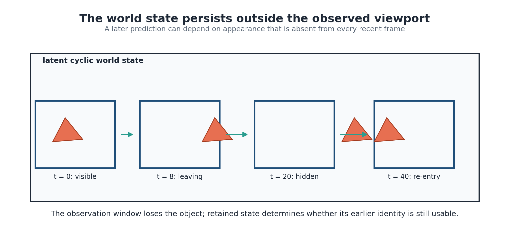
Рисунок 1.2 – Прихований стан проти спостереження у вікні перегляду. Джерело: концептуальний сторіборд, створений для дисертації.
Рисунок 1.2 пояснює, чому поняття «попередні кадри» і «стан системи» не є взаємозамінними. Камера спостерігає лише прямокутний фрагмент більшого циклічного світу. Коли об’єкт залишає поле зору, його положення та зовнішній вигляд продовжують існувати в прихованому стані, хоча в поточних кадрах їх уже немає. Коротке детальне вікно поступово втрачає прямі свідчення про такий об’єкт; довший потік нижчої роздільної здатності може зберегти відомості про його траєкторію, але втратити частину ознак ідентичності. У розділах 3 і 4 ця різниця стане основою контрольованої перевірки досяжності контексту.
Historical/source-era material; superseded wording is preserved for provenance, not endorsed as the current model or current result status.
Критерії статичного зображення зберігають значення у відео, але змінюється спосіб їх перевірки. Зовнішній вигляд та ідентичність оцінюються в часі, зокрема після оклюзії або повторної появи. Геометричний критерій поширюється на просторове покриття, контур і рух. Семантична ідея вже не обмежується одним кадром, а набуває форми події чи відношення, що розгортається в послідовності. Модель автономного прогнозування не отримує структуру майбутнього наперед і має вивести її з динаміки та збереженого стану.
На рисунку 1.12 показано, як критерії статичних зображень розширюються на відео. Еталонний кадр визначає зовнішній вигляд або ідентичність у певний момент, але перевірка може відбутися значно пізніше, після авторегресивного розгортання. Упродовж цього інтервалу модель отримує власні виходи, а доступні свідчення послідовно входять до контексту й залишають його. Тому траєкторія та повторна поява є часовими конструкціями. Міжрівнева консистентність додається лише для моделей із кількома явно визначеними рівнями представлення.
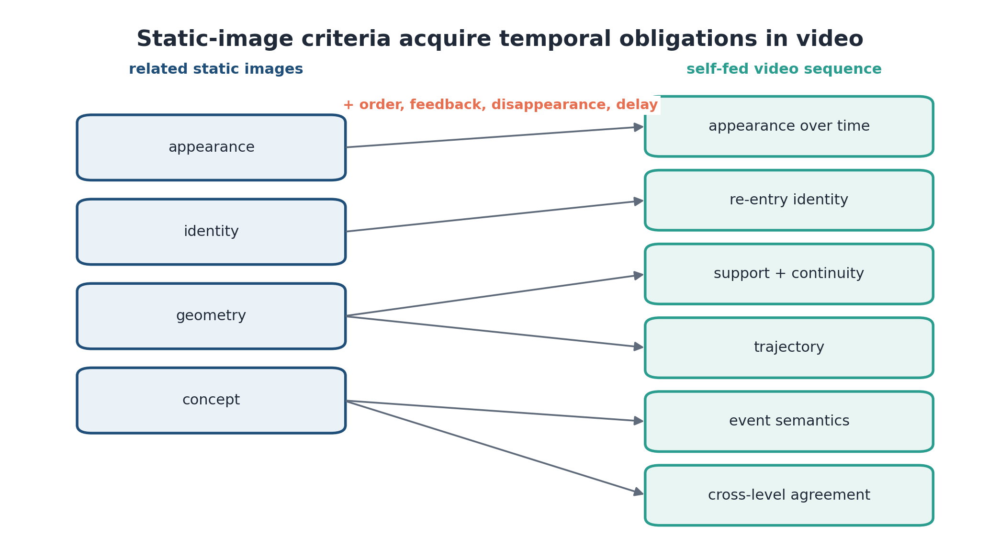
Рисунок 1.12 – Від інваріантів статичних зображень до вимог до відео. Джерело: синтез на основі дисертації.
У дифузійній моделі виникає ще одна координата, яку не можна ототожнювати з фізичним часом відео. Рисунки 1.13–1.15 послідовно показують зашумлення навчального зразка, ітеративне усунення шуму та загальну схему генерації у прихованому просторі [2, 3]. На рисунку 1.15 текст задає умову, процес дифузії уточнює один стан прихованого простору, а декодер перетворює його на статичне зображення.
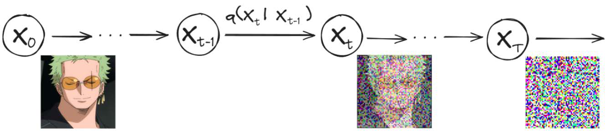
Рисунок 1.13 – Пряма дифузія як прогресивне спотворення. Джерело: Кулик та Мокін [133], оригінальний рисунок 2; відтворено без змін.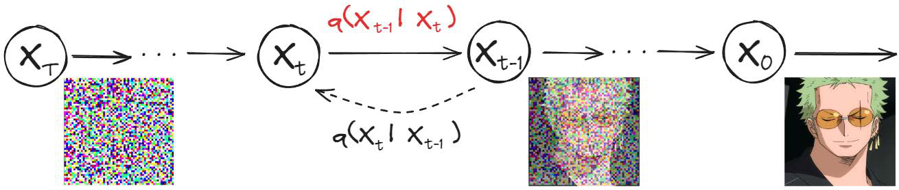
Рисунок 1.14 – Зворотна дифузія як ітеративне усунення шуму. Джерело: Кулик та Мокін [133], оригінальний рисунок 3; відтворено без змін.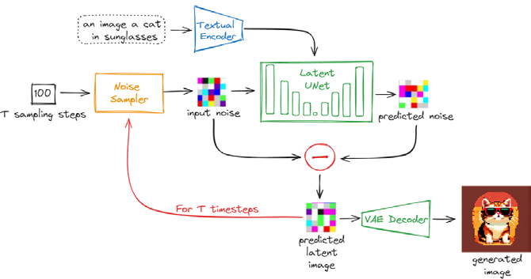
Рисунок 1.15 – Загальний обчислювальний тракт генерації на основі дифузії у прихованому просторі. Джерело: Кулик та Мокін [133], оригінальний рисунок 4; відтворено без змін.Отже, крок дифузії та момент фізичного часу відео є різними сутностями. Перший індексує рівень шуму під час уточнення одного зразка, а другий – послідовні стани сцени. Модель відеодифузії містить обидві координати, тому збіжність циклу усунення шуму сама по собі не забезпечує часової консистентності між кадрами.
У статичній керованій генерації потрібне свідчення часто залишається доступним під час кожного запуску: це може бути еталонне зображення, текст, поза, контур або відновлений стан у прихованому просторі. В автономному відеопрогнозуванні майбутній кадр такої умови не надає. Тому статичні методи корисні тут не як готові розв’язки часової пам’яті, а як класифікація місць, де система може зберігати інформацію про бажаний результат: на вході, у параметрах, у структурній умові, у траєкторії прихованого простору або в механізмі уваги.
Рисунки 1.16–1.20 показують ці інтерфейси не як послідовні етапи одного методу, а як альтернативні способи передавання різних типів свідчень.
У підході «зображення-до-зображення» на рисунку 1.16 еталон безпосередньо задає вихідну структуру. Менше зашумлення сильніше прив’язує результат до джерела, тоді як більше допускає ширші зміни; жоден режим сам по собі не створює довготривалої пам’яті.
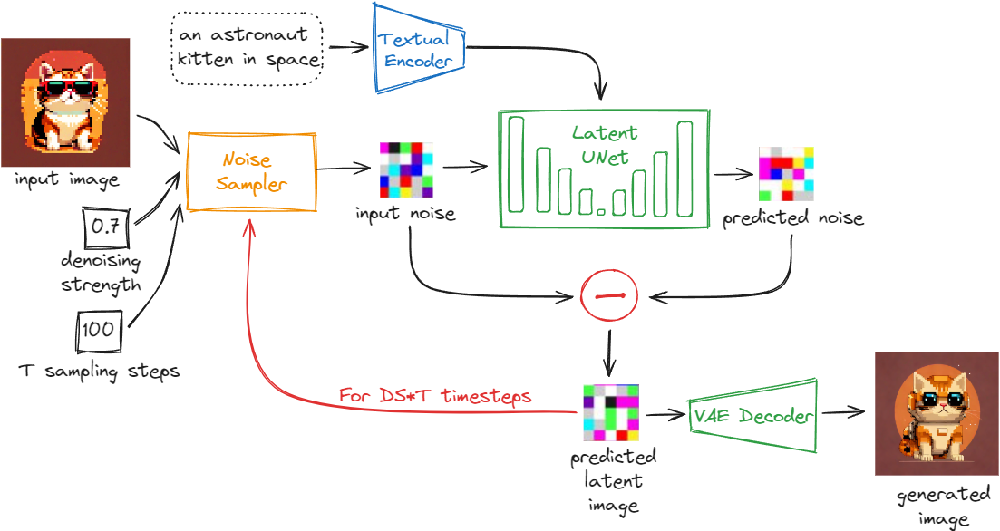
Рисунок 1.16 – Генерація «зображення-до-зображення» на основі еталону та рівня шуму. Джерело: Кулик та Мокін [133], оригінальний рисунок 6; відтворено без змін.ControlNet переносить керувальний сигнал в окрему структурну гілку. Контур, карта глибини або поза безпосередньо обмежують геометрію результату, але не визначають усі ознаки конкретного об’єкта. Ця різниця між відповіддю на питання «де і якої форми?» та «що саме?» згодом використовується для тлумачення межі між просторовим покриттям та ідентичністю.
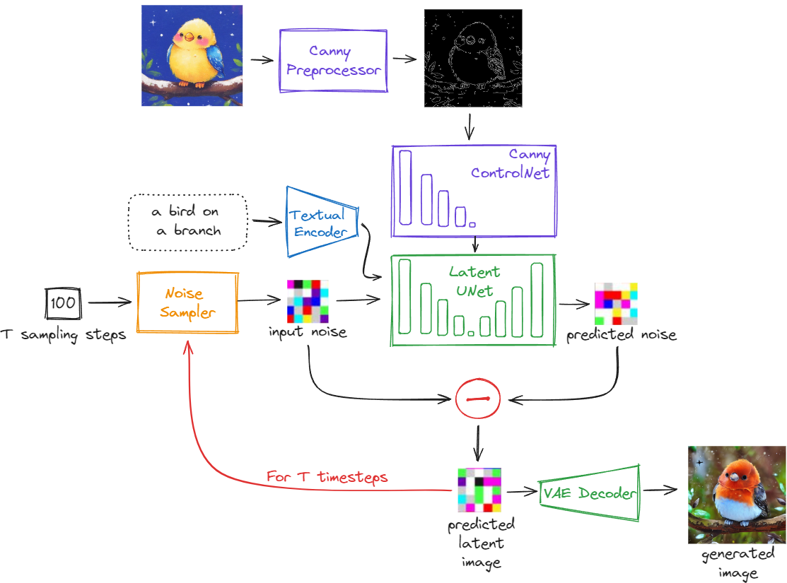
Рисунок 1.17 – Структурне обумовлення контролює геометрію більш безпосередньо, ніж ідентичність. Джерело: Кулик та Мокін [133], оригінальний рисунок 7; відтворено без змін.Метод інверсії, зображений на рисунку 1.18, прив’язує редагування до конкретного джерела сильніше, ніж вільне генерування. За це доводиться сплачувати похибкою реконструкції та додатковою роботою з оптимізації або відновлення шумового стану [114, 115].
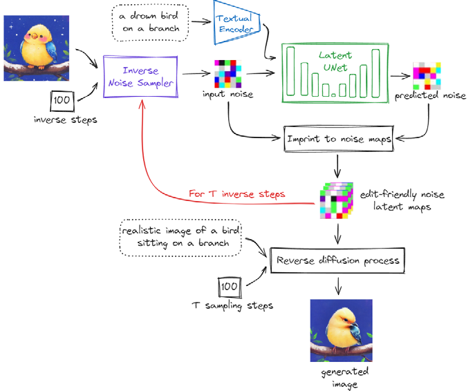
Рисунок 1.18 – Управління на основі інверсії через відновлену траєкторію у прихованому просторі. Джерело: Кулик та Мокін [133], оригінальний рисунок 8; відтворено без змін.Інший інтерфейс керування не фіксує геометрію конкретного зразка, а пов’язує ознаки між кількома генераціями. У StyleAligned спільна увага підтримує подібність стилю для різних об’єктів, що показано на рисунку 1.19. Такий механізм зберігає вибрану інваріантну властивість, але не гарантує тотожності змісту або траєкторії. Рисунок 1.19 – Спільний стиль для різних суб’єктів. Джерело: Кулик та Мокін [133], оригінальний рисунок 9; відтворено без змін.
Порівняння цих прикладів виявляє принципову межу. Контур або поза можуть бути задані точно, тоді як ідентичність усередині заданої області може змінитись. І навпаки, адаптовані параметри можуть зберігати зовнішній вигляд об’єкта, не визначаючи його майбутнього положення.
Для відеопрогнозування ця відмінність переходить у пару «просторове покриття – точність ідентичності», яку надалі оцінено окремими показниками. Еталонний вхід, адаптація параметрів, структурна умова, інверсія та спільна увага зберігають різну інформацію й потребують різних витрат під час налаштування або застосування.
Рисунок 1.20 – П’ять інтерфейсів для контролю пов’язаних генерацій.
Схема на рисунку 1.20 узагальнює не назви моделей, а п’ять місць внесення керувальної інформації. Вона дає змогу поставити однакове запитання до кожного методу: яке свідчення доступне під час генерації, де воно зберігається і яку властивість може підтримати? Відповідь не завжди охоплює весь об’єкт. Правильне розташування може співіснувати з неправильною ідентичністю, тоді як ідентичність може зберігатися попри порушену просторову неперервність. Це розрізнення мотивує показники для об’єктів, що зберігаються в часі, не приписуючи статичним і часовим методам спільного причинного механізму.
Рисунок 1.21 – Просторове покриття та ідентичність як незалежні осі.
Порівняння методів має враховувати не лише збережену властивість, а й доступну інформацію. Якщо генератор отримує майбутню позу або контур, він використовує привілейоване свідчення, якого немає в автономному прогнозі. Адаптація параметрів та інверсія також зберігають відомості в різних частинах системи й потребують різних обчислень. Тому висновок про пам’ять є коректним лише тоді, коли явно зафіксовано, що модель знала на момент прогнозування.
Оцінювання починається з перевірки доступності потрібного свідчення; лише після цього помилку можна пов’язувати з пам’яттю пакета. Просторове покриття та зайвий передній план показують, чи збережено область об’єкта, а зіставлена ідентичність і траєкторія – чи збережено саме той об’єкт і його рух. Кадрові та перцептивні показники залишаються доповнювальними. Такий порядок не дозволяє високому агрегованому балу наперед визначити інтерпретацію результату. Подібна вимога діє й для пояснюваності: пояснення має цінність лише тоді, коли його структура та роль у рішенні задані явно [39, 40].
Historical/source-era material; superseded wording is preserved for provenance, not endorsed as the current model or current result status.
Попередні підрозділи виявили одну проблему та три обмеження її масштабування. Головним є дефіцит досяжності збереженого контексту: без доступу до віддаленої події неможливо підтримати її стан і траєкторію. Довше навчальне розгортання додатково збільшує стрічку активацій, а рівномірна просторова сітка витрачає детальну ємність без урахування локальної складності. Рисунок 1.25 зводить цей причинний порядок в одну карту.
Рисунок 1.25 – Карта причинно-наслідкових зв’язків дисертації.
Центральна гілка рисунка показує, які грубі та детальні фрагменти історії доступні під час прогнозування. Дві допоміжні гілки відображають спосіб передавання градієнта через часовий стан і локально–глобальне представлення растрових байтів із просторово-часовими координатами. У кожному випадку ланцюг проходить від діагностованого обмеження через відповідне втручання до вимірюваного результату.
Основна доказова програма навмисно перевіряє втручання окремо: так перевагу форми контексту не можна сплутати зі зміною часового блока або просторового кодування. Після її завершення виконано обмежену інтеграційну перевірку, описану в §3.7 і §4.8. Вона показує, що ієрархічний стан сталої ширини, просторове агрегування та реверсивне розгортання можуть працювати в одному прототипі, але не перетворює окремі оцінки витрат на автоматично мультиплікативну загальну економію.
Карта є причинною в методичному сенсі ланцюга «діагностика – втручання – вимірювання». Зростання пам’яті активацій перевіряється зі збільшенням диференційованого горизонту й вимірюється через пам’ять та час відтворення. Просторовий розподіл досліджується через фіксовану локально-глобальну обробку і структуру прогностичної ентропії. Досяжність контексту визначається геометрією прив’язок пакетів та популяціями повторної появи. Результат однієї гілки не підтверджує іншу, бо відрізняються змінна втручання, облік ресурсу й показник. Після незалежного аналізу перших двох гілок розділи 3 і 4 ізольовано перевіряють центральне питання: коли ієрархічне пакування контексту виправдовує втрату деталізації.
Historical/source-era material; superseded wording is preserved for provenance, not endorsed as the current model or current result status.
Одна центральна проблема породжує п’ять перевірних гіпотез про її обмеження. Гіпотези Г3 і Г4 утворюють головну пару протилежних прогнозів для нижніх і верхніх бюджетів контексту. Г1 і Г2 стосуються способів масштабування системи, а Г5 перевіряє стійкість основного висновку до контрольованої зміни допоміжних інтерфейсів. Для кожної гіпотези нижче названо не лише очікуваний результат, а й спостереження, яке звужує допустимий висновок.
Г1, пам’ять активацій. Реверсивне часове відтворення має сповільнювати зростання пам’яті активацій, оскільки проміжні подвоєні стани реконструюються замість зберігання. Гіпотеза потребує одночасної перевірки відтворення стану, відповідності градієнтів, пам’яті та часу за різних горизонтів. Її практичне значення обмежується, якщо домінують нереверсивні інтерфейси, виникає нестабільність або вартість повторного обчислення переважає збереження активацій.
Г2, неоднорідність просторової складності. Ієрархічне подання растрових байтів має виявляти локальні відмінності прогностичної складності: локальні модулі обробляють категоріальні байти, глобальний модуль поєднує фрагменти, а ентропія змінюється в просторі. Необхідними доказами є відтворена якість і вартість фрагментів та стабільні карти ентропії. Відсутність змістовної просторової структури або переваги над порівняльними моделями обмежила б таке пояснення.
Г3, контекстна досяжність. За фіксованого бюджету ієрархічний пакет має зберігати віддалені свідчення, які вже вийшли за межі короткого детального вікна. Перевірка потребує специфічної для кожної пари популяції та явно зіставленого або задекларованого бюджету. Якщо перевага не виникає саме там, де досяжність пакетів відрізняється, механістичне пояснення послаблюється.
Г4, точність відтворення після насичення досяжності. Коли обидва пакети охоплюють релевантну подію, щільна детальна історія може краще зберігати зовнішній вигляд, ідентичність і дрібну текстуру. Цей прогноз перевіряється у верхніх точках бюджету та на показниках, чутливих до ідентичності. Якби ієрархія залишалася кращою в усіх досліджених режимах, заявлена межа «досяжність–точність відтворення» не отримала б підтримки.
Г5, робастність основних напрямів. Закономірність «досяжність–точність відтворення» не повинна бути артефактом однієї конфігурації алгоритму вибірки або одного кодека. Для цього потрібні зареєстровані перевірки NFE, випадковості алгоритму вибірки та незалежно навченого кодека. Зміна знака або така втрата статистичної визначеності, за якої напрям уже не підтримується, залишає відповідне твердження невирішеним.
Гіпотези перевіряють різні механізми однієї системної задачі. Кожна з них пов’язує запропонований механізм зі спостереженням, яке здатне його обмежити. Для Г1 самого зменшення пам’яті недостатньо, якщо реконструкція та поведінка градієнта не залишаються прийнятними. Г3 і Г4 потребують порівнянь за різної досяжності, оскільки той самий пакет може краще зберігати віддалене просторове покриття, але гірше відтворювати точну ідентичність. У Г5 робастність означає збереження напрямів ефектів після зміни інтерфейсу; вона не вимагає, щоб кожен інтервал був статистично значущим.
Г2 має іншу доказову межу. Просторова структура ентропії та працездатність фіксованих блоків можуть показати, що модель розрізняє локальну прогностичну складність. Вони не доводять, що зміна розміру регіонів за цією ентропією вже поліпшує якість або швидкість. Через це Г2 залишається незалежною від Г3–Г4: просторова ієрархія V-BLT та часова досяжність контекстного пакета мають спільний принцип багатомасштабності, але різні змінні, реалізації й експерименти.
Разом гіпотези утворюють карту перевірних рішень. Г3–Г4 задають центральну межу контексту; Г1 стосується пам’яті навчання, Г2 – просторового представлення, а Г5 – стійкості головного висновку до зміни допоміжних інтерфейсів. Окреме оцінювання зберігає причинність, а інтеграційний прототип у наступних розділах перевіряє вже не кожний ефект заново, а технічну сумісність принципів.
Historical/source-era material; superseded wording is preserved for provenance, not endorsed as the current model or current result status.
Помилка прогнозування природного відео може мати кілька причин. Об’єкт перекривається, камера рухається, освітлення змінюється, а саме майбутнє нерідко має кілька правдоподібних продовжень. Такі варіації важливі для зовнішньої валідації, проте ускладнюють перевірку окремого часового механізму: за невдалим прогнозом важко встановити, що саме не спрацювало. Процедурне відео зменшує цю неоднозначність. Генератор надає змінні стану, які визначають кожен кадр, тому закон руху, геометрію або умови спостереження можна змінювати вибірково, не збираючи новий відеозапис. Шум та інші випадкові чинники або усуваються, або вводяться контрольовано.
Нехай є повним станом процедурної сцени в момент , — відомою керувальною дією, а — заданим законом переходу. Тоді динаміка стану визначається рівнянням
Спостережуваний кадр отримується з повного стану оператором рендерингу , тобто . Оскільки та відомі, експериментатор може змінити закон руху, початкову геометрію або умову спостереження, не змінюючи інші складники задачі. Істинний стан дає змогу перевірити не лише схожість кадру, а й конкретну динамічну властивість. Однакові параметри генерації також забезпечують парне порівняння моделей на ідентичних послідовностях.
Контроль досягається ціною спрощення сцени. Чорний фон, ізольовані об’єкти та наперед задані закони руху полегшують сегментацію й звужують різноманіття текстур, взаємодій та ефектів камери. Через це високий результат на процедурних даних ще не доводить перенесення на природне відео. Їхня роль інша: спочатку показати, чи працює досліджуваний механізм за відомих умов і чи можна локалізувати його помилки, а потім перевірити модель у ширшому середовищі.
Таку логіку відображає послідовність наборів даних у дисертації. Прості обертання ізолюють часову динаміку та просторове представлення. Набори OpenSTL поєднують стандартні синтетичні й реальні задачі прогнозування та перевіряють переносимість моделі за спільним програмним інтерфейсом [1]. Нарешті, LoopMom і довготривалий Moving-MNIST створено спеціально для дослідження пам’яті: складність у них виникає тоді, коли потрібне спостереження зникає з короткого контексту, а згодом знову стає необхідним. Підрозділи 2.1.2–2.1.4 послідовно описують ці ролі.
Historical/source-era material; superseded wording is preserved for provenance, not endorsed as the current model or current result status.
Реверсивним тут називається блок, вхід якого можна точно відновити з виходу та відомих параметрів. Це не означає, що кожен внутрішній модуль має власне аналітичне обернення. Достатньо організувати обчислення так, щоб значення одного потоку залишалося доступним під час відновлення іншого. Адитивне зв’язування реалізує цю умову трикутною послідовністю оновлень.
Нехай вхідний стан поділено на два потоки і , а і є відповідними виходами. Функції та можуть бути довільними диференційованими модулями, наприклад увагою та багатошаровим перцептроном, зі спільним набором параметрів . Пряме перетворення задається рівняннями (2.7)–(2.8), після яких той самий стан відновлюється рівняннями (2.9)–(2.10):
Другий вихідний потік оновлюється вже з використанням :
Обернення починається з відновлення другого вхідного потоку :
Після підстановки відновленого отримуємо перший вхідний потік :
Обернення виконується у протилежному порядку. Спочатку з відомих і відновлюється , після чого це значення підставляється у формулу для . Функції і самі по собі можуть не бути оберненими: їх достатньо повторно обчислити для вже відновленого аргументу. Властивість оборотності належить повному двопотоковому стану, а не довільній проєкції одного з потоків.
На рисунку 2.5 зображено схему роботи блока під час прямого та зворотного проходів. У прямому напрямку модуль уваги оновлює перший потік за інформацією другого, а багатошаровий перцептрон – другий потік за вже обчисленим першим. Під час зворотного проходу ці дії повторюються у зворотному порядку з відніманням відповідних приростів. Тому в пам’яті достатньо залишити вихід блока й умови, необхідні для точного повторного обчислення його модулів.
Рисунок 2.5 – Адитивний реверсивний блок трансформера.
Трикутна структура має ще одну алгебраїчну властивість. Якщо позначає повний блок, а – його матрицю Якобі, то визначник дорівнює одиниці:
Рівність (2.11) означає локальне збереження об’єму повного стану. У цьому полягають і перевага, і межа адитивного зв’язування. Інформація, потрібна для відновлення входу, не може безслідно зникнути всередині такого блока, тоді як звичайна рекурентність може стискати кілька вхідних конфігурацій в один стан [110]. Якщо системі потрібні стискання або забування, їх слід реалізувати на нереверсивній межі чи кодувати явною додатковою змінною. Алгебраїчна оборотність також не гарантує стійкої часової динаміки, тому стабільність повторного застосування перевіряється окремо.
Межа реверсивного стану особливо важлива для задач довгострокового прогнозування; її детально розглянуто й реалізовано в архітектурі TempVerseFormer. Опублікована архітектура містить варіаційний кодер і декодер, лінійні проєкції, дублювання спроєктованого потоку, нормалізацію та злиття виходу. Ці операції утворюють корисні інтерфейси, але не всі є бієкціями.
Таблиця 2.2 – Реверсивність станів TempVerseFormer
| Тензор або операція | Реалізоване перетворення | Алгебраїчно обернене лише на основі свого виходу? | Що зберігається або перераховується при зворотному диференціюванні | Включено до твердження про точне відтворення стану? |
|---|---|---|---|---|
| Кадр зображення до прихованого простору VAE | Конволюційний варіаційний кодер, | Ні | Звичайні значення автоматичного диференціювання або заморожене чи попередньо обчислене представлення прихованого простору, залежно від режиму навчання | Ні |
| Проєкція входу з прихованого простору | -вимірного прихованого простору до -вимірного вбудовування плюс навчена позиція | Не встановлено як бієктивне | Вхідні дані на межі обробляються звичайним автоматичним диференціюванням у режимі за замовчуванням | Ні |
| Створення потоку | Конкатенація двох ідентичних -вимірних потоків | Ні; дублювання є ін’єктивним, але не є бієкцією двох потоків на кодомен | Проектоване вбудовування існує на межі ядра | Ні |
| Повторний часовий стан | Стек адитивного зв’язування над подвоєним вбудовуванням | Так у точній арифметиці для перевіреного детермінованого блоку; будь-яке майбутнє стохастичне обумовлення також доведеться відтворити | Кінцевий подвоєний стан; локальні функції блоків повторно обчислюються | Так |
| Нормалізація та злиття вихідних даних | Стан розміром до -вимірного вектора прихованого простору | Ні | Звичайні граничні значення автоматичного диференціювання в режимі за замовчуванням; альтернативна утиліта зберігає нереверсивні граничні значення | Ні |
| Декодування VAE та втрата зображення | Від прихованого простору до пікселів з подальшим застосуванням складників MSE/LPIPS/KL | Ні | Стандартний граф втрат на межі | Ні |
Таблиця 2.2 звужує обґрунтоване твердження до збережуваного подвоєного стану трансформера. Повний обчислювальний тракт прогнозування від VAE до VAE є нереверсивним, однак саме в повторюваному ядрі без цього механізму відбувається зростання стрічки часових активацій. Отже, реконструкція ядра підтверджує виміряний результат щодо пам’яті активацій, але не означає, що кінцевий прогноз зображення однозначно визначає кожну проміжну операцію.
Historical/source-era material; superseded wording is preserved for provenance, not endorsed as the current model or current result status.
Ланцюгове з’єднання у часі створює повторюваний реверсивний стан, але обсяг пам’яті зменшується лише в тому випадку, якщо навчання фактично дозволяє уникнути збереження звичайного графа активацій та їх накопичення в процесі прямого проходження. Процедура з пам’яттю, незалежною від часового горизонту, відокремлює пряме прогнозування від зворотного диференціювання. Під час прямої фази рекурентне ядро обчислюється в умовах відсутності градієнта, проміжні активації блоків відкидаються, а кінцевий стан зберігається. Під час зворотної фази кожен попередній стан відновлюється алгебраїчно, відповідний локальний прямий розрахунок відтворюється з відстеженням градієнта, накопичуються його векторно-якобіанські добутки, а локальний граф звільняється. На рисунку 2.8 вказано як прямий прохід залишає кінцевий стан, а зворотний послідовно відновлює попередні стани, перебудовує локальний граф і звільняє його перед наступним кроком. Нереверсивні кодер, декодер і проєкції залишаються на межах процедури.
Рисунок 2.8 – Зворотне поширення з пам’яттю, незалежною від часового горизонту, через реверсивний часовий стан.
Для формального опису позначимо через ад’юнкт стану на кроці , через – локальний внесок у втрату, а через – реверсивний часовий перехід. Тоді ад’юнкт попереднього стану та сумарний градієнт параметрів обчислюються як
Сумарний градієнт параметрів накопичує внески всіх повторних переходів:
Послідовність алгоритму розрахунку:
Наведений нижче результат формулює твердження щодо пам’яті на рівні, що виправдовується цим алгоритмом.
Лема 2.1 (складність стрічки активацій). Нехай – детермінований реверсивний перехід із блоків адитивного зв’язування, а – повний обсяг стану одного блока. Припустимо, що межа втрат і всі умови, потрібні для відтворення, займають пам’ять, незалежну від . Тоді локальний граф і збережений граничний стан мають порядок за часовою глибиною , тоді як пряма стрічка BPTT потребує .
Лема не пропонує нового правила обчислення градієнта. Застосовується звичайне диференціювання у зворотному режимі, але локальний граф щоразу відновлюється лише для одного переходу й одразу звільняється. За зменшення пам’яті сплачують повторним прямим обчисленням, яке відображено в рівнянні (2.18). Практична перевага виникає тоді, коли часовий горизонт достатньо великий, тобто , а збережена стрічка активацій справді домінує над нереверсивними межами та робочими буферами.
У рівнянні (2.18) є вартістю одного прямого обчислення реверсивного переходу, а – його локального зворотного проходу. Додатковий прямий розрахунок є платою за звільнення стрічки активацій. В наступному підрозділі наведено результат перевірки, чи супроводжується цей ресурсний обмін прийнятною якістю прогнозування.
Historical/source-era material; superseded wording is preserved for provenance, not endorsed as the current model or current result status.
У межах реверсивного стеку опублікована часова модель залишається детермінованою. Генеративні відеопереходи часто є стохастичними: вони можуть вибирати випадкове збурення у прихованому просторі, застосовувати стохастичну регуляризацію або отримувати випадковий дифузійний стан. Нехай є реалізованим випадковим збуренням, а — його масштабом. Якщо відкинути фактично використане значення , буде втрачено інформацію, потрібну для реконструкції.
Якщо є оборотним, а реалізоване збурення відоме, попередній стан відновлюється як
Рівняння (2.20) коректне лише тоді, коли реалізоване відоме, а саме відображення є оборотним на розглянутій області. Адитивне зв’язування нижче усуває другу вимогу: для реконструкції стану функції і потрібно повторно обчислити, але вони не зобов’язані бути оборотними окремо.
Другий вихідний потік використовує вже обчислене значення :
Обернення виконується у зворотному порядку: спочатку відновлюється другий потік, а потім перший.
Після цього перший попередній потік відновлюється з відомого шуму та відновленого :
Загальну пам’ять умов відтворення розкладемо на прив’язки стану, стан генератора випадкових чисел і стохастичні гейти:
Тут – кількість значень в одному збуренні, – розрядність одного такого значення, а – розрядність збереженої ініціалізації генератора. Альтернативні схеми дають для збережених інновацій, для окремої ініціалізації на кожен крок або для лічильникового відтворення. Це альтернативи, а не витрати, які додаються одночасно. У виміряній детермінованій межі пам’яті , проте процедура зберігає повні повторні прив’язки стану. Якщо інтервал між ними обрано як , позначає кількість значень стану, а – їхню розрядність, то
Отже, обґрунтоване загальне твердження стосується сталої за тимчасової локальної пам’яті активацій разом із явно врахованими прив’язками та метаданими відтворення. Воно не означає сталої загальної пам’яті для кожної реверсивної або стохастичної рекурентної системи.
Однієї ініціалізації генератора на часовий крок достатньо лише за тотожних алгоритму випадкових чисел, порядку викликів, форми тензорів, семантики пристрою й точності обчислень. Збереження фактично використаного шуму потребує більше пам’яті, зате менше залежить від прихованих деталей програмного середовища й полегшує аудит траєкторії після зміни коду.
Контракт оборотності стає перевірним після встановлення окремих допусків для детермінованого й стохастичного режимів. Похибка детермінованої реконструкції у FP64 має бути меншою за , а у FP32 – меншою за ; для стохастичного переходу зі збереженим шумом допустимий дрейф становить менше , тоді як навмисно неправильний шум повинен давати похибку понад ; косинус подібності градієнтів має перевищувати . Це пороги реалізації, а не нові експериментальні ефекти. Для перших історичних перевірок не збережено окремого незмінного звіту з фіксованою випадковою ініціалізацією, тому числові спостереження не використовуються як самостійні докази.
Таблиця 2.6 – Виміряні значення детермінованої багаторівневої пам’яті та межі часу виконання на RTX 4060 Ti 16 ГБ
| Розгортання () | Пік BPTT (МБ) | Пік із контрольними точками (МБ) | Пік реверсивного відтворення (МБ) | BPTT (мс/крок) | Контрольні точки (мс/крок) | Реверсивне відтворення (мс/крок) |
|---|---|---|---|---|---|---|
| 10 | 3 809 | 1 354 | 1 065 | 549 | 322 | 257 |
| 20 | 6 592 | 1 391 | 1 078 | 399 | 544 | 479 |
| 40 | 12 162 | 1 471 | 1 091 | 740 | 1 028 | 882 |
| 80 | 23 305* | 1 637 | 1 125 | 43 797* | 3 131 | 2 556 |
| 120 | OOM | 1 801 | 1 152 | - | 3 960 | 2 760 |
| 160 | OOM | 1 967 | 1 176 | - | 4 066 | 3 362 |
Виконання BPTT із перевищило обсяг фізичної пам’яті GPU та в режимі WDDM перейшло до спільної пам’яті хоста. Воно завершилося, але вже не відповідало практичному навчанню з даними, розміщеними на пристрої.
Виміряні сумарні значення охоплюють кодер, детерміноване трирівневе рекурентне ядро, декодер, стан Adam, пакет розміром 32 та входи . Стандартний BPTT стає нездійсненним до . І збереження контрольних точок, і реверсивне відтворення досягають ; у наведених точках виміряна реалізація відтворення використовує менше пікової пам’яті й часу, ніж реалізація з контрольними точками. Ці залежні від конфігурації вимірювання не доводять переваги реверсивного відтворення над оптимально спланованою або налаштованою під конкретне ядро системою контрольних точок.
Точне відновлення одного кроку є необхідною, але не достатньою умовою для довгого розгортання. Алгебрична оборотність сама по собі не гарантує стійкості прямої динаміки. Виконувана 100-крокова діагностика окремо перевіряє реконструкцію стану та зростання малого збурення для необмеженого зв’язування і трьох спектрально обмежених варіантів. Усі переходи залишаються оборотними, проте контрольоване підсилення спостерігається лише за менших перевірених масштабів виходу. Окремого замороженого артефакту T1–T4 з числовими відношеннями не збережено, тому ці значення не використовуються як основний кількісний доказ. Для залишкового відображення із нерівності трикутника випливає лише загальна верхня межа
Фактичне підсилення може бути меншим через компенсацію складових. Отже, оборотність забезпечує реконструкцію стану, а динамічна стійкість залежить від навченого переходу та накладених на нього обмежень [111, 112].
Historical/source-era material; superseded wording is preserved for provenance, not endorsed as the current model or current result status.
До додавання позиційної інформації механізм самоуваги залишається еквіваріантним відносно перестановки [12, 71, 106]. Навіть після вирівнювання просторово-часової сітки сам порядок токенів не може вказувати, чи знаходиться сусідній токен на один стовпець, один рядок або один кадр далі. Абсолютні вбудовування призначають мітки окремим індексам, а відносні зміщення описують зв’язки між парами [106]. Ротаційне вбудовування позиції працює інакше: алгоритм обертає пари ознак запитів і ключів за фазами, що залежать від позиції, тим самим змінюючи їхній скалярний добуток відповідно до відносного зміщення [107].
Для однієї реальної пари ознак визначимо комплексну координату . Нехай нумерує пар ознак, задає базу частот, а – частоту -ї пари. У скалярній позиції одновимірне RoPE застосовує обертання (2.35). Рівняння (2.36) і його дійсна матрична форма (2.37) показують, що скалярний добуток залежить від відносного зсуву , а не від двох абсолютних координат окремо:
Для запиту в позиції і ключа в позиції добуток повернених комплексних координат залежить від різниці фаз:
Те саме обертання в дійсних координатах задає матриця :
З матричної форми випливає тотожність . Для відео ознаки запиту та ключа поділяються на неперетинні підпростори часу, рядка і стовпця. Якщо є координатою токена, багатовимірне обертання утворюється конкатенацією трьох осьових перетворень:
Відповідний логіт уваги розкладається на складові, що залежать від осі:
Наприклад, два токени можуть належати тому самому рядку й стовпцю, але сусіднім кадрам, тоді змінюється лише їх часова фазова складова. Для сусідніх просторових областей одного кадру змінюється відповідна координата рядка або стовпця. Такий поділ запобігає ситуації, коли однаковий зсув у лінеаризованій послідовності помилково означає різні фізичні відношення.
Для токенів з кількома роздільними здатностями цілочисельні індекси рядків і стовпців двох сіток не можна порівнювати безпосередньо без спільної системи координат. Грубий токен з індексом 1 може охоплювати ту саму фізичну область, що й кілька індексів детальної сітки. V-BLT уникає цієї проблеми, використовуючи одну геометрію прихованого простору. Для багаторівневого ієрархічного середовища вона, однак, залишається істотною; один із можливих варіантів розглянуто в розділі 3.
Рисунок 2.15 – Неперетинні координатні підпростори в RoPE-ND.
Кожна пара каналів отримує фазу лише однієї фізичної осі. Завдяки цьому часовий зсув не змішується зі зміною рядка або стовпця після лінеаризації кліпу. Приклад роботи зображено на рисунку 2.15.
Historical/source-era material; superseded wording is preserved for provenance, not endorsed as the current model or current result status.
Дослідження з фіксованими патчами підтримує чітко обмежений набір тверджень. V-BLT демонструє ієрархічну архітектуру «локальний–глобальний–локальний» із прямими байтовими цілями, фіксованим просторово-часовим поділом, каузальною глобальною увагою, RoPE-ND, категоріальним прогнозуванням та просторово структурованими картами ентропії. Кожен із цих елементів було реалізовано або задокументовано в експерименті.
Наступним кроком є динамічне розбиття на області. Нехай позначає поділ кадру на областей, – допустиму їх кількість або еквівалентний токенний бюджет, – похибку наступного прогнозу, а – вартість обраного поділу. Тоді контролер має змогу обирати поділ як:
де визначає компроміс між якістю та вартістю, а ентропія є одним із входів політики. Ця оптимізаційна постановка залишається гіпотетичною: у межах дослідження динамічний контролер не реалізовано. Запропоноване розширення систематизовано на рисунку 2.19.
Рисунок 2.19 – Реалізований метод V-BLT та запропоноване адаптивне розширення.
Практична реалізація такого контролера потребує стабільного інтерфейсу. Один варіант полягає у виборі областей сталої форми з фіксованого словника: ентропія або дисперсія змінює їхню вагу чи частоту оновлення, але не координатну систему на кожному кадрі. Тоді RoPE-ND кодує для токена час, координати центра й масштаб області; для змінного розміру до фаз можна додати окрему координату рівня. Якщо ж належність токенів до областей змінюється довільно, модель повинна зберігати геометричні метадані, обробляти появу й зникнення токенів і доводити, що маршрутизація сама не споживає зекономлену пам’ять. Тому доцільна послідовність перевірок така: фіксовані області з м’якими вагами; абляція проти випадкових і рівномірних ваг за однакового бюджету; лише після цього – динамічний поділ із явним обліком метаданих та фактичного буфера стану. У пізнішому прототипі для перевірки технічної здійсненності реалізовано саме перший, стабільніший крок; динамічний контролер і RoPE-ND до нього не включено.
Historical/source-era material; superseded wording is preserved for provenance, not endorsed as the current model or current result status.
Після двох окремих досліджень потрібно визначити, які їхні результати справді переходять до центральної контекстної моделі. Цей підрозділ відокремлює перенесені принципи від деталей TempVerseFormer і V-BLT, що залишаються специфічними для власних протоколів, а потім формулює вихідні умови для розділу 3.
Часовий і просторовий методи не є двома новими центрами дисертації. Вони відповідають на обмеження, які виникають, коли головне ієрархічне рішення намагаються масштабувати за часом і простором.
TempVerseFormer показує, як зменшити пам’ять активацій повторюваного часового ядра. Це відкриває можливість передавати градієнт через довший процес, зокрема й у майбутньому ієрархічному предикторі, але не збільшує обсяг збереженої історії. Якщо контекст короткий, віддалена подія все одно недоступна; якщо контекст розширити щільними деталями, зростуть сам стан і робота уваги. Отже, реверсивність і ієрархічне пакування діють послідовно на різні причини одного ресурсного обмеження.
V-BLT, своєю чергою, показує, як локально–глобальна обробка скорочує послідовність глобального процесора і як категоріальний вихід виявляє просторово неоднорідну складність. Коли геометрія токена змінюється, час, рядок і стовпець не повинні згортатися в один невизначений індекс. До центральної моделі переноситься не набір ваг і не готовий ентропійний контролер, а принцип явної ієрархії та роздільного обліку грубої й детальної ємності.
Рівність (1.5) пояснює межу такого синтезу: реверсивне відтворення змінює , а ієрархічне пакетування – . Ці ефекти вимірюються окремо й не складаються автоматично. Проте їхня композиція змістовна. Немає користі від компактного довгого контексту, якщо навчальний граф не дає оптимізувати довгу траєкторію; так само дешевий градієнт не повертає свідчення, уже втрачене коротким контекстом.
Звідси випливає центральне питання наступних розділів. Ієрархія потенційно збільшує часову досяжність, але стискання може погіршити зовнішній вигляд та ідентичність. Тому її не можна вважати безумовно кращою за плоску модель. LoopMom ізолює моменти, де потрібне спостереження вже залишило коротке вікно, а довготривалий Moving-MNIST розділяє збереження просторового покриття, траєкторії та ідентичності. Після причинного порівняння пакетів у розділі 4 окремий дослід технічної здійсненності перевіряє, чи можуть компактний стан, фіксоване просторове агрегування й реверсивне розгортання працювати разом. Це пізніше розширення не змінює меж четвертої статті.
Перший метод цього розділу стосується вартості активацій часового навчання. Реверсивний трансформерний блок використовує трикутне адитивне зв’язування, тому його два вхідні потоки відновлюються з виходів без обернення уваги чи MLP. Коли стек блоків повторюється в часі, реверсивне відтворення реконструює один попередній стан, перебудовує один локальний граф диференціювання, накопичує градієнт і звільняє граф. За визначених детермінованих умов тимчасова складова пам’яті активацій рекурентного ядра має порядок за часовою глибиною, а не .
Аналіз реалізації звужує цей результат до коректної межі стану. Її достатньо, щоб пояснити опубліковану криву пам’яті: пам’ять часової моделі залишається близькою до ГБ у табличних точках 1, 4 і 16 кроків, тоді як зіставлений нереверсивний трансформер досягає ГБ на 16 кроках. Результати прогнозування неоднорідні. TempVerseFormer лідирує за всіма опублікованими показниками для постійного й перерваного обертання та залишається конкурентоспроможним в інших режимах, але TempFormer або LSTM мають кращі значення окремих показників за змінного руху. OpenSTL підтверджує придатність архітектури до різних інтерфейсів, зокрема найнижче MSE на TaxiBJ у цьому порівнянні, але не універсальну перевагу на стандартних наборах.
Ентропія на рівні байтів виступає зв’язком між експериментами і розподілом ресурсів. В опублікованих прикладах вона концентрується біля мінливих контурів, оклюзій та прогнозів за обмеженого контексту. Однак карти ентропії лише спостерігалися, а не керували зміною розміру чи дискретизації патчів. Виміряна модель використовувала зафіксовану конфігурацію ; динамічне розбиття на області за ентропією залишається пропозицією. Тому центральний предиктор розділу 3 успадковує принцип явного розділення рівнів та їхньої вартості, але не переносить ентропійний контролер. У пізнішому прототипі застосовано сталі області з м’якими вагами дисперсії – консервативніший спосіб перевірити сумісність без зміни належності токенів до областей у часі.
Отже, розділ 2 встановлює дві межі масштабування головного ієрархічного рішення: коли реверсивне відтворення може зменшити активаційну стрічку та що саме підтверджує байтова локально–глобальна ієрархія з ентропійною діагностикою. Розділ 3 переходить до центрального питання – формування збереженого контексту, який за обмеженої кількості токенів охоплює давнішу історію й водночас залишає достатньо деталей для консистентного довгострокового прогнозу.
Historical/source-era material; superseded wording is preserved for provenance, not endorsed as the current model or current result status.
Збережений контекст є станом, який предиктор переносить між послідовними вікнами. Його структура визначає не лише обсяг пам’яті, а й множину минулих подій, до яких модель може звернутися. Спочатку уточнимо цю вимогу через повторний вхід об’єкта, а далі формалізуємо пакет, його вартість і досяжність.
Розділ 1 показав, що консистентність має кілька критеріїв. Для відео особливо важлива неперервність стану й траєкторії між віддаленими кадрами; для ієрархічної моделі до неї додається ціна стиснення. Грубий потік може зберегти, де перебував об’єкт і як він рухався, але втратити ознаки, потрібні для точного відновлення того, що це був за об’єкт. Довгогоризонтна консистентність вимагає більше, ніж правдоподібне продовження останнього кадру. Уявімо фігуру або об’єкт, текстура якого продовжується поза межами видимого поля. Поки він перебуває поза полем зору, кілька візуально допустимих версій світу можуть залишатися консистентними з поточним спостереженням. Після повернення попереднє зображення має обмежене положення, розмір та ідентичність об’єкта. Якщо воно залишається доступним, прогноз може спиратися на збережені відомості. Коли ж спостереження виходить із пам’яті, відновлення того самого об’єкта дедалі більше залежить від вивченого апріорного розподілу та можливості моделі до збереження, компонування та роботи з памʼяттю.
Повторний вхід стає визначальним, коли відповідне спостереження виходить за межі щільного вікна високої роздільної здатності. Плоска модель може збільшити це вікно, але кожен доданий детальний кадр має фіксовану токенну вартість. У багатороздільному пакеті старіші кадри зберігаються з нижчою просторовою роздільною здатністю, а детальні токени відводяться переважно для недавнього минулого [20, 35–37]. Груба історія тоді може містити свідчення, яких зіставлене за токенами плоске вікно фізично не досягає. Водночас стиснення вилучає частину інформації, тому давніша історія сама по собі не гарантує кращого прогнозу. Перевірка має охоплювати режими, у яких нестача історії та втрата деталей утворюють конкуруючі обмеження.
Рисунок 3.1 – Повторний вхід після останнього визначального спостереження залишає коротке щільне контекстне вікно.
Для аналізу потрібні три послідовні умови:
Отже, йдеться про зберігання, досяжність і повторне використання. Результат на виході перевіряє всі три умови разом, тоді як геометрія пакета встановлює лише можливість доступу.
Нехай позначає перший кадр цільового вікна. Контекстний пакет на цій межі є скінченною множиною потоків. Кожний потік визначається кортежем : рівнем представлення , часовим кроком , кількістю збережених слотів та відстанню від цілі до найновішої прив’язки. Пакет об’єднує таких потоків:
Ці чотири поля однозначно задають часову геометрію потоку. Множина містить відстані до цілі:
Фактичні індекси кадрів утворюють множину . Якщо один слот рівня містить просторових токенів, то вартість збереженої історії дорівнює сумі за потоками:
Контекст і ціль виконують різні функції. Нехай – кількість цільових слотів рівня , а – число токенів у кожному з них. Тоді довжина цільової частини має вигляд
Повна довжина послідовності дорівнює . Контекстні токени представляють збережений стан, доступний під час прогнозування, а цільові токени рахують невідомі комірки прихованого простору, оцінювані спільно. Загальна кількість токенів визначає довжину послідовності трансформера, що впливає і на навчання, і на застосування. Сама ефективність контексту не визначає підсумкове використання пам’яті, час виконання чи обчислювальну вартість уваги. Окремо потрібно знати, наскільки давню позицію пакет здатний адресувати. Номінальна досяжність дорівнює найбільшій часовій відстані серед усіх потоків:
Досяжність є номінальною: вона визначає найстарішу задану позицію, але не показує, чи достатній її вміст і чи модель фактично його використовує. У реалізованих щільних ієрархічних пакетах потік на рівні грубого представлення охоплює 48 попередніх позицій кадрів. Часово розріджений контроль натомість поєднує найновіші детальні кадри зі старішими прив’язками повної роздільної здатності. Зареєстрована мітка «48 кадрів» позначає запланований клас часового інтервалу, таким чином перевірка конфігурації спирається на записані прив’язки.
Однакову номінальну досяжність можна отримати різними способами. Рисунок 3.2 зіставляє щільний плоский контекст, щільну грубу історію з детальним хвостом і часово розріджені детальні прив’язки. Перший зберігає кожний кадр із високою деталізацією, другий – кожний часовий момент у грубішому масштабі, а третій – лише вибрані моменти з повною просторовою роздільною здатністю.
Рисунок 3.2 – Три способи пакетування збереженого відеоконтексту.
Однакова позначка «досяжність 48» на різних рівнях представлення не робить ці пакети інформаційно рівними. Щільний грубий потік представляє кожну часову позицію, але з меншою просторовою частотою та сіткою відповідно. Розріджений детальний потік зберігає повну роздільну здатність лише у вибрані моменти. Наприклад, прив’язки не містять кадрів між ними, тоді як 48 грубих слотів утворюють щільну часову послідовність. Через це порівняння форми пакета перевіряє не лише дальність, а й спосіб втрати інформації.
У таблиці 3.1 визначено величини, використані в описі моделі та результатів. «Рівень» позначає представлення без припущення про семантичну абстракцію, а «крок» – відстань між прив’язками, не стверджуючи, що токен узагальнює рух між ними. Тому повнороздільні прив’язки, збережені через кожні чотири кадри, не еквівалентні грубому токену, спостережуваному в кожному кадрі. Обидва варіанти розширюють часовий доступ, але відкидають різну інформацію.
Таблиця 3.1 – Поля контекстного пакета та їх інтерпретація.
| Поле | Символ | Операційне значення | Що це не означає |
|---|---|---|---|
| Рівень представлення | Зафіксований рівень кодека та його просторова сітка токенів | Семантична коректність або гарантована консистентність між рівнями | |
| Часовий крок | Відстань між регулярними прив’язками потоку | Часове усереднення, якщо кодер явно його не виконує | |
| Збережені слоти | Кількість збережених карт прихованого простору у потоці | Однаковий корисний обсяг даних на всіх рівнях | |
| Лаг найновішої прив’язки | Відстань від першої цільової позиції до найновішої збереженої прив’язки | Наявність усіх проміжних кадрів | |
| Набір прив’язок | Точні історичні кадри, представлені потоком | Успішне отримання інформації з цих кадрів | |
| Кількість токенів на слот | Кількість просторових комірок на вибраному рівні | Байти, ширина трансформера або повна пам’ять активації | |
| Вартість контексту | Сума збережених токенів контексту | Загальна довжина послідовності або рівноцінний обчислювальний обсяг | |
| Досяжність | Найстаріше надане відставання в геометрії пакета | Точність відтворення, інформаційно-теоретична необхідність або надійне повторне використання |
Таблиця 3.1 фіксує межу кожного терміна: токенна вартість не дорівнює байтовій пам’яті, а досяжність не означає успішного відтворення. Саме розрив між геометрично доступним минулим і збереженою в ньому інформацією утворює центральну гіпотезу наступного підрозділу.
Перевага пакета залежить від того, чого саме бракує прогнозу: доступу до давнього свідчення чи його детального вмісту. Нехай – історичні докази, що стосуються цілі в момент часу , а вказує, чи лежать вони всередині наданих прив’язок. Величина позначає релевантну до задачі інформацію, збережену після кодування та пакетування. Очікувану похибку можна концептуально організувати так:
Рівняння (3.6) є пояснювальною декомпозицією, а не окремою ймовірнісною моделлю. Перший доданок дорівнює . Другий дорівнює і усереднює умовну втрату за розподілом фактично збереженої інформації. Він охоплює втрату здатності до представлення, похибку моделі та деградацію із самопідсиленням. Більша досяжність може зменшити першу складову, а збереження просторової деталізації – частину другої, але жодна зі змін не гарантує переваги на всіх типах завдань.
Звідси випливають три твердження:
Ці режими перевіряються лише в досліджених умовах роботи; поріг і проміжні переходи між ними не оцінюються.
Рисунок 3.3 – Робочі області пакетів на осях досяжності та точності відтворення. Горизонтальна вісь відповідає часовій відстані до найдавнішого доступного свідчення, вертикальна – повноті збереженої просторової інформації. Рисунок не задає неперервної емпіричної межі; він лише пояснює, чому два пакети однакового бюджету можуть бути корисними в різних режимах.
Historical/source-era material; superseded wording is preserved for provenance, not endorsed as the current model or current result status.
Щоб порівнювати форми контексту, саме представлення кадру має залишатися незмінним. Для цього спочатку визначається дворівневий кодувальний інтерфейс, потім карти прихованого простору перетворюються на токени спільного предиктора. Такий порядок відокремлює втрати стискання від ефекту часової геометрії пакета.
Арифметика пакетів набуває сенсу лише при фіксованих рівнях представлення. Реалізовані пакети працюють у безперервному прихованому просторі, який формує згортковий автоенкодер. Для вхідного кадру спільний стовбур енкодера генерує карту ознак розміром . Одна проєкція розміром дає детальний код; наступний етап енкодера з кроком два та ще одна проєкція формують грубий код:
Грубий код належить , а детальний — . Обидві проєкції використовують гіперболічний тангенс як функцію активації, тому вихідні координати прихованого простору обмежені граничними значеннями цієї функції. Грубий кадр містить коефіцієнтів, організованих у 16 просторових токенів, а детальний кадр містить коефіцієнти, організовані в 64 токени. З цього не випливає, що грубий код у загальному сенсі вчетверо менш інформативний.
Кожен рівень має власний декодувальник для відтворення повного зображення. Це дає змогу оцінити грубу й детальну реконструкції незалежно:
Під час одного кроку навчання випадково обирається одна з двох гілок . Для грубої гілки суму MAE та MSE множать на чотири, компенсуючи меншу просторову сітку; детальна гілка використовує ту саму пару втрат без множника:
Гілка вибирається рівноймовірно: . Обидва рівні реконструюють повний кадр, але з різною просторовою місткістю. У предикторі детальна гілка не отримує вже завершеного грубого прогнозу: грубі й детальні токени взаємодіють усередині спільної уваги, а окремі результати зчитуються лише наприкінці. Назви «композиція» і «деталізація» описують очікувану функцію роздільної здатності, а не жорстко задану семантику каналів. Грубий код передусім придатний для глобального положення, форми й траєкторії, тоді як детальний має більшу ємність для текстури та ознак ідентичності. Фактичний розподіл ролей перевіряється об’єктними показниками, а не припускається з назв рівнів.
Окремий декодувальник кожного рівня потрібний для перевірки того, що зберігається у відповідній карті прихованого простору. Грубий стан можна оцінити без участі детального виходу. Після навчання кодувальник і обидва декодувальники заморожуються, інакше кожен пакет міг би змінити власний спосіб стискання, а різниця між моделями змішувала б організацію контексту з повторним навчанням представлення. Заморожування не усуває втрат кодування, але робить їх спільною умовою порівняння.
Перед поданням карт до предиктора кожний канал стандартизується за статистиками навчального набору. Для кожного рівня стандартизований канал позначимо через :
Нижня межа у знаменнику запобігає діленню на нуль або чисельно нестійке мале значення. Рисунок 3.4 показує, як один кадр переходить у дві сітки з однаковою шириною каналу, а таблиця 3.2 фіксує цей інтерфейс як незмінну умову всіх порівнянь.
Рисунок 3.4 – Фіксовані розміри дворівневого кодувальника та тензорів прихованого простору.
Таблиця 3.2 – Специфікація зафіксованого інтерфейсу прихованого простору.
| Властивість | Грубий рівень | Детальний рівень | Наслідки для предиктора |
|---|---|---|---|
| Форма прихованого простору на кадр | Та сама ширина каналу, різна просторова сітка | ||
| Просторові токени на кадр | 16 | 64 | Детальна історія вимагає вчетверо більше контекстних токенів на кадр |
| Скалярні коефіцієнти на кадр | 256 | 1 024 | Корисне навантаження відрізняється ще до проекції на ширину трансформера |
| Піксельний декодер | Незалежний грубий декодер | Незалежний детальний декодер | Кожен код можна перевірити як реконструкцію повного кадру |
| Масштабування вхідних даних предиктора | z-стандартизація за кожним каналом навчального набору | z-стандартизація за кожним каналом навчального набору | Шкала шуму та втрати за рівнями використовують порівнянні стандартизовані координати |
| Навчання після заморожування кодека | Немає | Немає | Порівняння пакетів не можуть змінювати інтерфейс прихованого простору |
| Основний шлях декодування під час розгортання | Лише для діагностики | Заморожений декодер детального рівня | Основні кадрові показники мають один вихідний шлях |
Таблицю збережено, оскільки вона є контрактом порівняння: з неї безпосередньо випливають токенна арифметика й спільний шлях декодування. Далі ці фіксовані карти перетворюються на одну послідовність токенів.
Кожна просторова комірка карти стає одним токеном. Нехай – вектор каналів на рівні у позиції . Спільна лінійна проєкція переводить його до вектора вбудовування , а додає просторову позицію відповідного рівня:
Функція застосовує це перетворення до всієї карти. Позначимо через послідовність контекстних токенів: для кожного потоку спочатку беруться часові зсуви з множини , а всередині кадру – просторова розгортка рівня . Порядок потоків і часових зсувів є частиною контракту пакета, тому не є невпорядкованою множиною.
Через позначимо цільову частину. Вона містить майбутніх кадрів; для кожного кадру спочатку розміщуються грубі, а потім детальні токени. Під час дифузійного навчання ці позиції заповнюються зашумленими картами відповідного рівня, тоді як контекстні позиції залишаються незашумленими. Повну вхідну послідовність утворює їх конкатенація:
Самого порядку недостатньо, щоб одна мережа відрізнила рівень, роль і часову позицію. Тому до вмісту кожного токена додаються окремі вбудовування рівня, ролі та кадру:
Після визначення геометрії можна перевірити, чи справді пакет реалізує заявлену досяжність у межах бюджету. Для стандартної конфігурації з грубими та детальними кадрами груба історія дає токенів, а недавній детальний хвіст додає . Кожна з чотирьох цілей містить токенів. Отже, , і .
Перші 1 152 токени є збереженим контекстом, тоді як останні 320 належать цільовому вікну й не збільшують часової досяжності пакета. На рисунку 3.5 зображена схема збірки токенів. На схемі контекстні токени залишаються відомими, а цільові грубі й детальні токени містять зашумлені представлення одного прогнозованого вікна. Колір і порядок потоків показують рівень, роль та часову позицію до їх об’єднання.
Рисунок 3.5 – Збірка токенів перед спільним механізмом уваги.
Індекс нумерує токени, позначає роль, — рівень, а — індекс кадру. Грубий і детальний рівні обробляє один спільний трансформер, а не дві послідовні моделі. Для кожної позиції формується умовний вектор : , і задають рівень, роль та кадр; кодує крок дифузії ; вносить керувальну дію лише для цільового кадру . Тоді
Для контексту крок дифузії фіксується нулем, оскільки ці токени не зашумлюються. Цільові токени отримують поточний крок і дію відповідного майбутнього кадру. Отже, формула (3.14) описує не новий потік даних, а службові ознаки, які дають змогу одній мережі правильно інтерпретувати вже зібрану послідовність.
Довжину кожного потоку фіксує специфікація пакета, тому додаткове заповнення в межах однієї конфігурації не потрібне. Водночас позиція токена у зібраній послідовності не є достатньою міткою його змісту: рівень, роль і кадр подаються явно. Це важливо, коли одна базова мережа використовується для різних сімейств пакетів. Детальний токен із часовою відстанню 47 у розрідженому потоці та детальний токен із відстанню 6 у недавньому хвості мають спільну проєкцію вмісту, але різні кадрові вбудовування. Тому предиктор може розрізняти їхню часову релевантність без призначення різної семантики каналів.
Послідовність збирається в наперед визначеному порядку: спочатку контекстні потоки за рівнями й прив’язками, потім грубі та детальні цілі кожного кадру вікна.
Порядок сам по собі не кодує причинність. Вбудовування ролі відрізняє відоме спостереження від зашумленої або нульової цілі, кадрове вбудовування зберігає часову позицію, а вбудовування рівня відокремлює просторові сітки. Дії додаються лише до відповідних цільових кадрів. В окремій конфігурації з кроком грубого потоку 2 разом із контекстом змінюється й грубий цільовий інтерфейс, тому в розділі 4 цей варіант трактується як порівняння повних конфігурацій, а не як чистий ефект кроку.
Грубі й детальні токени справді входять до однієї послідовності та обробляються спільним WindowDiT. Грубий прогноз не завершується перед окремим етапом деталізації. У кожному блоці одночасно присутні грубий і детальний контекст, а також зашумлені грубі й детальні цілі; тому кожен шар може обмінюватися інформацією між рівнями й ролями до застосування вихідних модулів прогнозування. Така спільна увага не дублює параметри моделі, але й не є новим твердженням про першу багаторівневу увагу у відео: новизна роботи полягає у зіставленому за бюджетом втручанні та вимірюванні межі досяжності. Часове перекриття рівнів існує навмисно: у стандартному пакеті останні шість кадрів представлені одночасно грубо й детально, тоді як старіша частина доступна лише на грубому рівні. Для матриці прихованих станів визначимо , та , де є навчуваними проєкціями, а — шириною однієї голови.
Запити та ключі нормалізуються окремо в кожній голові уваги перед обчисленням масштабованого скалярного добутку [161]. Результати кількох голів конкатенуються й лінійно проєктуються за стандартною схемою багатоголової уваги [12]. Усередині поточного чотирикадрового вікна увага є повною: немає ні трикутної маски, яка змушувала б генерувати перед , ні міжрівневої маски, що заздалегідь прив’язувала б детальну комірку до однієї грубої. Міжрівневі та внутрішньовіконні залежності вивчаються зі службових вбудовувань і даних.
Спільна увага архітектурно відкриває чотири інформаційні шляхи: грубий контекст до грубої цілі, грубий контекст до детальної цілі, детальний контекст до обох цільових рівнів і взаємодію між зашумленими грубими та детальними цілями одного вікна. Жоден шлях не маршрутизується вручну, тому архітектура не є послідовною схемою «спочатку спрогнозувати грубе, потім уточнити детальне». Обидва рівні формуються спільно, а їхня фактична спеціалізація визначається при навчанні та відповідно до задачі.
Структурна причинність між послідовними блоками розгортання забезпечується порядком виконання, а не окремою маскою всередині WindowDiT. Блок із індексом отримує лише вже сформовані стани блоків із індексами ; майбутні блоки на момент його виконання ще не існують. Тому цей порядок надалі описується алгоритмічно, без введення фіктивної матриці уваги.
Спільне усунення шуму бачить лише зашумлені цілі поточного блока, а регресійний режим – порожні цільові позиції. Чотири майбутні кадри координуються одночасно, тоді як спостережувана інформація надходить лише з минулого. Отже, інтерфейс є каузальним між блоками, але не авторегресивним усередині чотирикадрового блока.
Рисунок 3.6 – Спільна увага в межах блоку прогнозування та структурна причинність між блоками.
Рисунок 3.6 розділяє ці два поняття. Суцільні зв’язки всередині блока показують повний обмін між рівнями й чотирма цільовими позиціями; стрілки між блоками спрямовані лише вперед у часі. Це розмежування потрібне перед визначенням межі градієнта, яка є ще вужчою за межу доступної інформації.
Доступність інформації під час прямого проходу не означає, що градієнт проходить тим самим шляхом. Параметри кодувальника й декодувальників заморожено, тому для них встановлено . Значення прогнозів попередніх вікон входять до нового контексту через оператор зупинки градієнта . Для попереднього вікна ця межа означає
Параметри предиктора залишаються змінними оптимізації; це визначає допустимий шлях градієнта, але не стверджує, що його числове значення є ненульовим на кожному кроці. Предиктор навчається безпосередньо у стандартизованому прихованому просторі: дифузійний варіант мінімізує суму MSE для швидкісної параметризації двох рівнів за формулою (3.21), а регресійний контроль – суму SmoothL1 за формулою (3.28). Втрата декодованих пікселів і допоміжне донавчання грубого декодувальника не використовуються. Тому пакет із більшою кількістю грубих слотів не отримує додаткового реконструкційного сигналу лише через частіше використання цього шляху.
Рисунок 3.7 узагальнює межу: градієнти оновлюють проєкції токенів, службові вбудовування, блоки трансформера та вихідні модулі прогнозування, але не змінюють заморожені кодувальник і декодувальники та не перетинають попередні авторегресійні вікна.
Рисунок 3.7 – Заморожені, відокремлені та треновані шляхи. Суцільний верхній тракт є прямим обчисленням поточного вікна; фіолетовим позначено параметри, які оновлює втрата. Пунктирний вхід із попереднього вікна доступний як числове значення, але відокремлений оператором . Джерело: побудовано автором за реалізованим графом оптимізації.
Ці межі уточнюють порівняння пакетів, але не усувають зміщення експозиції. Із часом контекст може заповнюватися пошкодженими значеннями, згенерованими самою системою. Тому стійкість розгортання перевіряється в режимі самоподачі та з різними ініціалізаціями навчання [25, 26]. Повне багатовіконне навчання WindowDiT із реверсивним відтворенням не виконувалося. Натомість у §3.7 окремий компактний регресійний прототип перевіряє, чи працює сам принцип реверсивного розгортання разом зі станом сталої ширини.
Предиктор оптимізується на чистих чотирикадрових вікнах, а попередні прогнозовані вікна не входять до того самого графа градієнта. Отже, довгої диференційованої часової стрічки, яку мало б сенс реконструювати, тут немає. Реверсивність стала б релевантною після зміни цільової функції на багатовіконне навчання.
Historical/source-era material; superseded wording is preserved for provenance, not endorsed as the current model or current result status.
Після визначення форми стану цей підрозділ задає механізм перетворення контексту на майбутнє вікно. Спочатку вводяться випадкова величина, косинусний розклад і ціль швидкісної параметризації, далі – трансформерна мережа та детермінований алгоритм вибірки DDIM. Регресійна гілка наприкінці слугує контрольним вихідним модулем, а не другою центральною архітектурою.
Після визначення контексту та інтерфейсу прихованого простору залишається встановити випадкову величину, яку прогнозує модель. Предиктор оцінює блок послідовних майбутніх величин у прихованому просторі, обумовлених історією пакетів і записаними керувальними сигналами. За його умовний розподіл має вигляд
Вікно з чотирьох кадрів узгоджує навчальний інтерфейс з одиницею авторегресивного оновлення: після одного виклику всі чотири прогнози додаються до буферів грубої й детальної історії, а найстаріші елементи вилучаються, щоб місткість лишалася сталою. Грубі й детальні цілі одного кадру отримують однаковий рівень дифузійного часу , щоб описувати той самий ступінь зашумлення, але їхні тензори шуму генеруються незалежно. Для рівня шум має розподіл ; коефіцієнти визначено як і . Така конструкція координує рівні через увагу без штучного копіювання одного шумового тензора між різними сітками.
Косинусна форма розкладу походить від Нікола та Дхарівала [149], а граничне обрізання є запобіжником конкретної реалізації. Нехай – нормований крок дифузії, – мале зміщення початку розкладу, а – частка сигналу до нормування. Кумулятивний коефіцієнт збереження сигналу визначено як
Ділення на нормує початок косинусного профілю, а обмежує значення інтервалом . Нижня межа запобігає повному зануленню сигналу, верхня – виродженому кроку з нульовим шумом. Саме ці обрізані значення використовує код для обчислення і .
Ціль швидкісної параметризації поєднує шум і чисте представлення того самого рівня :
Оскільки шум присутній на обох цільових рівнях, трансформеру також надається незашумлений контекстний пакет, нормалізований часовий крок та дії для кожного кадру. Спільна увага охоплює контекстні й цільові позиції, але вихідні модулі використовують лише цільові токени. Функція втрат має вигляд
Рисунок 3.8 – Інтерфейси «прогноз-ціль».
Рисунок 3.8 розділяє три інтерфейси «прогноз–ціль». Основний дифузійний модуль оцінює швидкісну параметризацію шуму й чистого коду. Регресійний контроль одразу повертає грубі та детальні карти прихованого простору; він потрібний, щоб перевірити, чи закономірність пакетів не залежить лише від ітеративного знешумлення. Енергетичний механізм оцінює сумісність кандидата з контекстом і застосовується як окрема діагностика, а не як третій взаємозамінний генератор. Тому результати цих модулів порівнюються лише за заздалегідь визначеними ролями й однаковими пакетами.
Для оптимізації використовується алгоритм AdamW [159] зі швидкістю навчання , коефіцієнтом затухання ваг , лінійним розігрівом протягом 2 000 кроків оновлення, обмеженням норми градієнта на рівні 1,0 та експоненційним затуханням ковзного середнього 0,999. Основний режим використовує розмір пакета 16 для 30 000 оновлень, альтернативний оприлюднений режим із розміром пакета 8 та 60 000 оновлень обробляє приблизно таку саму кількість прикладів, але не є ідентичним за рівнем шуму градієнта, кількістю оновлень або ефективним горизонтом EMA. Під час навчання використовується bfloat16 там, де це підтримується, відповідно до принципу змішаної точності, що передбачає збереження вищої точності для чутливих операцій [162].
WindowDiT – авторська назва спільного віконного трансформера, який обробляє зібрану послідовність контекстних і цільових токенів. Це не окрема зовнішня архітектура. Базова структура містить вісім попередньо нормалізованих блоків розмірністю . Її дворівневі варіанти мають приблизно 22 мільйони параметрів, що підлягають навчанню. У кожному порівнянні пакетів глибина та ширина залишаються фіксованими. Таким чином, масштаб моделі контролюється, а змінною втручання лишається контекст.
Кількість токенів не залежить від кількості параметрів моделі. Збільшення пакета подовжує послідовність і змінює обсяг доступної історії, але не додає нових блоків трансформера чи інших складників її обробки. Майже однакова кількість параметрів у гілках потрібна саме для того, щоб перевагу більшого або інакше організованого контексту не пояснювати більшою мережею.
Кожен блок використовує адаптивну обробку LayerNorm-Zero з сімейства DiT [4], що ґрунтується на нормалізації ознак у межах кожного зразка [160]. Мережа модуляції відображає з (3.14) на вектори зсуву, масштабування та гейту для механізму уваги та MLP. Для прихованого токена ,
спочатку обчислюється залишкове оновлення уваги:
Після нього MLP формує вихід блока :
У дифузійному режимі проєкції модуляції блоків ініціалізуються нулями, тому залишкові гілки починають роботу близько до тотожного відображення за схемою adaLN-Zero [4]. Для регресійного контролю модуляція ініціалізується звичайним способом: пряме передбачення прихованого коду не потребує спеціального нульового старту знешумлювача. Після восьмого блока відбираються лише цільові позиції. Окремі адаптивні нормалізації та лінійні вихідні модулі грубого й детального прогнозування повертають токени до 16 каналів і формують карти та . Термін «голова уваги» надалі використовується лише для складника багатоголової уваги.
Рисунок 3.9 – Повний предиктор від заморожених кодів до цілі у прихованому просторі з чотирма кадрами.
Кодувальник, декодувальники, WindowDiT та інтерфейс цілі залишаються фіксованими, тоді як у порівняннях на головній межі змінюється лише збережений контекстний пакет. Повний шлях від кадру до двох рівнів цілі показано на рисунку 3.9.
Генерування починається з гаусівського шуму для кожного грубого й детального цільового представлення чотирикадрового блока. Детермінований алгоритм вибірки DDIM [52] виконує знешумлення у вибраних точках навчального розкладу зашумлення, тобто послідовності рівнів , використаних під час навчання. Для поточної ітерації у точці вихід швидкісної параметризації спочатку перетворюється на оцінку чистих даних :
Відповідна оцінка шуму дорівнює
Для кроків наступний стан вибірки визначається як
За замовчуванням для обчислення встановлено . Отже, один блок із чотирьох кадрів вимагає 16 обчислень мережевої функції, або чотири обчислення на кожен згенерований кадр. Для розгортання з прогнозованих блоків загальна кількість обчислень предиктора дорівнює . NFE можна скорочувати й дистиляцією дифузійного алгоритму вибірки [119], однак у цьому дослідженні ваги не дистильовано: чутливість перевіряється зміною кількості кроків того самого DDIM.
За фіксованого початкового шуму, ваг, контексту та числового середовища цей варіант DDIM формує детерміновану траєкторію. Різні початкові шуми породжують різних кандидатів. Тому спільний початковий шум у парному порівнянні зменшує випадкову різницю між пакетами, але не робить незалежні навчання однаковими й не замінює перевірку за кількома ініціалізаціями моделі.
Кандидатом тут називається одне згенероване майбутнє, отримане з окремої ініціалізації початкового шуму. В основних порівняннях пакетів для кожної зареєстрованої ініціалізації алгоритму вибірки оцінюється один такий прогноз. Діагностика механізму окремо застосовує критерій «найкращий із восьми» й перевіряє, чи принаймні один із восьми кандидатів добре відтворює ціль. Це умовна верхня оцінка охоплення множини кандидатів, а не звичайна помилка одного розгортання. Вісім дифузійних кандидатів по 16 кроків DDIM потребують 128 обчислень предиктора на запис, тоді як регресійна діагностика використовує вісім проходів із MC-dropout. Тому звітуються і NFE на кандидата, і загальна робота генерації.
Рисунок 3.10 – Хронологія детермінованого DDIM та підрахунок обчислень функції.
Рисунок 3.10 показує цю різницю в обчислювальному бюджеті: один кандидат проходить усі 16 точок розкладу, а «найкращий із восьми» повторює повну траєкторію вісім разів. Щоб відділити користь контексту від цієї ітеративної процедури, вводиться однопрохідний регресійний контроль.
Регресійний контроль перевіряє найпростіше пояснення: чи може одна умовна оцінка використати той самий пакет без ітеративного уточнення DDIM. Він зберігає токенізацію, ширину й глибину мережі, контекст і геометрію цілі. На місця майбутніх карт подаються нульові початкові токени з окремою роллю «ціль», дифузійний час фіксується на нулі, а два вихідні модулі безпосередньо прогнозують грубий і детальний приховані коди. Оптимізується така втрата:
При звичайній оцінці регресійна траєкторія є детермінованою для фіксованих ваг, вхідних даних та числового середовища. Її не можна описувати як вибірку з того самого генеративного сімейства, що й DDIM. Контроль з’ясовує, чи може однопрохідна умовна оцінка використати ту саму упаковану історію, тоді як дифузійний модуль показує результат з ітеративним стохастичним уточненням.
Ця відмінність запобігає неправильному тлумаченню: перевага дифузії над регресією за статистикою «найкращий із восьми» може бути наслідком мультимодального охоплення, ітеративного обчислення, більшого бюджету кандидатів або їх поєднання. Тому висновок завжди прив’язується до конкретного режиму оцінювання та показника якості.
Historical/source-era material; superseded wording is preserved for provenance, not endorsed as the current model or current result status.
Навчальна ціль описує одне майбутнє вікно, тоді як довгий прогноз потребує послідовного оновлення стану. У цьому підрозділі визначаються кільцеві буфери, точні часові прив’язки між контекстом і ціллю та окремий облік контекстних, цільових і загальних токенів. Це усуває неоднозначність щодо того, які кадри реально доступні на кожному кроці самоподачі.
Після навчання той самий предиктор багаторазово застосовується до власних виходів. Щоб довжина збереженого стану не зростала з кожним блоком, для грубого й детального потоків використовуються буфери фіксованої місткості: нові карти додаються, а найстаріші вилучаються за правилами пакета. У стандартній щільній конфігурації місткості дорівнюють і , а ширина прогнозованого блока становить кадри. Предиктор стає довгогоризонтною системою завдяки рекурентному оновленню. Кожен завершений чотирикадровий блок надходить до наступного контексту, після чого цикл передбачення повторюється. Між викликами зберігаються буфери прихованого простору фіксованого розміру, визначені активним пакетом, а граф активацій трансформера завершується разом із поточним викликом.
Після оновлення межа вікна переходить до . Оператор після конкатенації зберігає найновіших позицій. Детальний буфер відкидає чотири із шести старих значень і додає чотири прогнози, грубий буфер так само оновлює залишкові позиції. Часово розріджені конфігурації та конфігурації зі зменшеним кроком використовують задекларований планувальник прив’язок, тому до потоку повертаються лише цільові позиції, вирівняні з його часовою сіткою. Щільні пари, на яких ґрунтується основне твердження про досяжність і точність відтворення, оновлюють по чотири грубі й детальні цілі на блок і не змінюють цільового інтерфейсу.
Вхідними даними є кадри розігріву , керувальні сигнали , заморожений кодек, нормалізація навчального набору, предиктор EMA, пакет і розподіл вибірки. Виходами є прогнози у просторі пікселів та вирівняні записи оцінювання. Нижче наведено алгоритм розгортання із самоподачею та пакетованою пам’яттю прихованого простору:
Для стандартного 200-кадрового кліпу LoopMom, генератор якого докладно визначено в §3.5.2, процес починається з 48 початкових кадрів, після чого 38 блоків розгортання створюють 152 прогнозовані кадри. Пізніші контексти повністю складаються з виходів моделі. Ємність буфера залишається фіксованою, але його вміст поступово оновлюється, а якість змінюється. Тому модель може номінально мати доступ до довгого горизонту й водночас втрачати надійну інформацію зі збільшенням розгортання.
Рисунок 3.11 – Оновлення грубого й детального кільцевих буферів під час розгортання із самоподачею. У кожному рядку сірі комірки відповідають чотирьом вилученим найстарішим позиціям, білі – збереженим, а кольорові – чотирьом новим прогнозам. Схема показує сталі місткості 48 і 6 кадрів, а не гарантію незмінної якості вмісту. Джерело: побудовано автором за формулою (3.29) та реалізованим шляхом розгортання.
Довжини буфера недостатньо для відтворення історичного значення. Кожен збережений слот повинен містити або детерміновано отримувати кадр, який він представляє. Для потоку слот на цільовій межі закріплений за адресою :
Часове відставання цього слота дорівнює , де . Та сама домовленість стосується грубого контексту з кроком 2. Конфігурація hier-s2-min зберігає : 24 прив’язки, розподілені на інтервалі 48 позицій, із найдавнішою часовою відстанню 47. Протокол із фіксованою ціллю використовує зареєстровану позначку номінальної досяжності 48 та заздалегідь визначений діапазон . Порівняння залишається тестом усієї конфігурації; його не можна використовувати для визначення верхнього порога досяжності з точністю до одного кадру.
Рисунок 3.12 – Геометрія потокової прив’язки на межі прогнозування з чотирма кадрами.
Рисунок 3.12 має показувати перекриття рівнів, а не їхній взаємовиключний поділ у часі. У hier-long останні шість кадрів представлені і грубо, і детально; попередні 42 кадри – лише грубо. В інших щільних парах перекриття становить відповідно 2, 16, 26 і 36 кадрів для hier-min, hier-c1, hier-c2 та hier-rich. Подання двох рівнів у спільній послідовності є архітектурною реалізацією цієї роботи, але не підставою заявляти першу багаторівневу відеомодель: близькі грубо-детальні та багатомасштабні конструкції існують у попередніх працях [20, 35–37, 150]. Науковий внесок тут полягає у точному контракті пакетів, зіставленому бюджеті та причинному тесті межі «досяжність–точність відтворення».
Геометрія прив’язок уточнює й межі конфігурації B1 з кроком 2. Її контекст містить 24 грубі позиції з кроком 2 та два найновіші детальні кадри. Проте реалізований цільовий інтерфейс повертає дві грубі цільові позиції, а не чотири. Отже, разом із кроком контексту змінюються і кількість цільових токенів, і спосіб агрегування дій для грубих позицій. Варіант із фіксованою ціллю існує лише як підготовлена специфікація. Оскільки його не виконано, у розділі 4 зберігається формулювання на рівні повної конфігурації.
Фіксовані буфери роблять пам’ять збереженого стану незалежною від тривалості розгортання. Для пакета із коефіцієнтами кодека на токен і розміром елемента байтів суцільний корисний обсяг даних прихованого простору становить
У float32 кожен токен займає 64 байти, а у float16 чи bfloat16 – 32 байти. Основний стан містить 48 грубих і 6 детальних кадрів, тобто 18 432 коефіцієнти прихованого простору: 72 КіБ у float32 та 36 КіБ у 16-бітному форматі. Для порівняння, щільна детальна історія з 48 кадрів містить 49 152 коефіцієнти, або 192 КіБ у float32.
Повний облік усіх пакетів, включно з інтерфейсом B1, контекстними, цільовими й загальними токенами та корисним обсягом даних, перенесено до таблиці В.8. В основному тексті достатньо зафіксувати принцип зіставлення: flat-min/hier-min, flat-budget/hier-long, flat-c1/hier-c1, flat-c2/hier-c2 і flat-long/hier-rich мають однаковий контекстний бюджет усередині кожної пари, тоді як B1 змінює також цільовий інтерфейс і тому оцінюється лише як повна конфігурація.
Самоувага залежить від загальної довжини послідовності. Якщо константи ядра ігноруються, обчислювальна складність ядра уваги для одного блоку масштабується як
За однакової ширини відношення членів уваги для довжин і наближено дорівнює . Це відношення не описує повну пам’ять або час роботи всієї моделі. На рисунку 3.13 показано, як пам’ять залежить від розподілу токенів між рівнями. Ієрархічні пакети зменшують збережений контекст і загальну довжину послідовності, залишаючи спільну ціль видимою. Стовпчики відображають точну кількість токенів на інтерфейсі, а не продуктивність моделі.
Рисунок 3.13 – Арифметика контексту, корисного навантаження та загальної кількості токенів за однакової номінальної досяжності 48 кадрів.
Ресурсом тут є пам’ять стану, відмінна від пам’яті активацій, обговореної в розділі 2. Під час навчання в одному вікні пам’ять активацій визначається довжиною обчислювального графа, яка становить від 800 до 3 392 токенів у досліджених дворівневих конфігураціях, і не залежить від кількості блоків, що згодом оцінюються під час розгортання. Тому будь-яку спільну економію потрібно вимірювати безпосередньо.
У таблиці В.8 встановлено арифметику інтерфейсу, а не апаратне прискорення. Однакова кількість контекстних токенів робить зіставлені пари коректними на вході трансформера, а однакові загальні токени додатково контролюють довжину послідовності. Проте фактичні час і пікова пам’ять залежать від розміру навчального пакету, точності, реалізації уваги та робочих буферів. Тому в розділі 4 токенна ефективність подається окремо від будь-якого твердження про повну VRAM.
Historical/source-era material; superseded wording is preserved for provenance, not endorsed as the current model or current result status.
Цей підрозділ перетворює архітектурну гіпотезу на вимірюваний протокол. Спочатку визначається популяція, у якій пакети справді відрізняються досяжністю, потім правила масок, об’єктних показників і зіставлення сталої ідентичності, а наприкінці – парне статистичне виведення з повторною вибіркою цілих кліпів. Повні довідкові реєстри винесено до додатків, щоб основний текст зберігав причинний ланцюг.
Формула пакета дає змогу обчислити номінальну досяжність, але звичайний стандартний набір може не ідентифікувати її вплив на прогноз. У канонічному Moving-MNIST цифри рухаються й зіштовхуються в межах зображення , а відбиття від меж утримує їх у кадрі [124]. Невизначеність майбутнього та похибка довгого розгортання присутні, проте немає чіткої популяції, в якій об’єкт залишає короткий контекст, а згодом повертається за геометрією, що дає змогу обчислити доступність довшої історії.
Короткі тестові набори не варто відкидати: вони допомагають оцінити працездатність і встановити межі. Канонічний Moving-MNIST та TaxiBJ показують, чи працює часовий предиктор за відомими зовнішніми протоколами. Варіант довгого Moving-MNIST зі сталими ідентичностями додає 300-кадровий горизонт із самоподачею. Проте жоден із цих наборів не має точної геометрії видимості, потрібної для перевірки центрального механізму. Саме ця прогалина мотивує генератор LoopMom, визначений у §3.5.2 [1, 124, 126].
Розмежування ролей запобігає двом протилежним помилкам і робить дослідження прозорішим. Синтетичний набір для дослідження механізму не замінює доказів на усталених задачах прогнозування. Водночас стандартний набір оцінювання не ідентифікує перевагу пам’яті лише тому, що його тестова послідовність є довгою. Тому кожна таблиця й кожне твердження називають властивість, на якій вони ґрунтуються. Інструмент побудовано навколо однієї вимоги: записи мають бути складними для коротшого пакета, доступними для відповіді за довшого пакета та придатними до маркування без перегляду виходу моделі. Для цього потрібен контроль світу, поля огляду й траєкторії, а не більша візуальна реалістичність. Синтетична природа інструмента посилює ідентифікацію механізму, але обмежує зовнішню застосовність результату.
Кожен кліп LoopMom починається зі статичного світу з тороїдальним горизонтальним виміром. Плавний фон утворюють чотири синусоїдальні компоненти з цілочисельними горизонтальними частотами, нормалізовані й масштабовані до інтервалу інтенсивності . Потім три символи MNIST розміщують за фіксованими координатами світу шляхом попіксельного взяття максимуму. Горизонтальне розміщення символів огинає тор, а вертикальне утримує вихідний 28-піксельний фрагмент у межах висоти 64 пікселі. Обраний світ залишається незмінним упродовж усього кліпу.
Спостережуваний кадр – це вікно перегляду розміром . Нехай – збережена координата лівого краю, а – записана дія камери. Рух вікна задається рівнянням
Спостережуваний кадр формується як . На рисунку 3.14 показано, як зі збережених позицій вікна перегляду визначають події, доступні ієрархічному пакету, але недоступні короткому плоскому вікну, де для верхніх бюджетів окремо порівнюють пакети, що вже охоплюють потрібну історію. Це дає змогу перевіряти конкретні пари замість загального зіставлення на пізньому горизонті.
Рисунок 3.14 – Геометрія світу LoopMom і смуги різниці досяжності для порівнюваних пакетів.
Розроблення й контрольне оцінювання спираються на два шари даних. Основний навчальний набір містить 3 000 кліпів по 100 кадрів. Навчальні й валідаційні індекси розділені на рівні кліпів. Для оцінювання окремо згенеровано п’ять наборів по 500 кліпів і 200 кадрів: дані розроблення, відкладене підтвердження, перевірка стійкості до параметрів алгоритму вибірки, перевірка з незалежним кодеком та аналіз прямого доступу до історії. У кожному маніфесті зафіксовано призначення, ревізію генератора, випадкову ініціалізацію, файл вихідних гліфів, конфігурацію та хеші SHA-256 відповідно до практик документування наборів даних [165].
Сюжетна схема на рисунку 3.15 демонструє, чому одного лише пізнього горизонту недостатньо: оцінювач повинен знати, коли цільовий контент був видимий востаннє та чи потрапляє це спостереження в межі кожного пакета.
Рисунок 3.15 – Подія зникнення та повторного входу, що охоплює кілька кадрів.
LoopMom дає точні координати світу й камери для кожного кадру. На їхній основі можна визначити не лише факт повторної появи, а й те, чи потрапляє останнє релевантне спостереження до конкретного пакета. Наступний підрозділ формалізує цю перевірку без використання прогнозів моделі.
Аналітичний модуль видимості використовує лише збережені координати вікна перегляду й еталонний світ; виходи моделі до нього не надходять. Для кадрів перед цільовим моментом множина охоплених стовпців світу дорівнює
Стовпці переднього плану, видимі в цільовому кадрі, визначаються за порогом 0,5:
Різниця містить частину поточного переднього плану, якої не було у вікні останніх кадрів:
Для непорожнього частка нового переднього плану дорівнює . Самої складності запису недостатньо, щоб визначити попередню спостережуваність. Нехай – найпізніший момент часу до , коли стовпець світу перебував у полі огляду, а містить стовпці з , для яких такий момент існує. Частка доступних для відповіді стовпців дорівнює
Мітка часу від останньої видимості визначається як . Явно задано , коли , і , коли . Запис вважається придатним для оцінювання, якщо та . Тому кадр, що містить лише недавні свідчення, не може потрапити до смуги позитивної різниці досяжності, а справді небачена повторна поява реєструється окремо й не враховується як доказ проти пакета пам’яті. Нижче позначає індекс кліпу, а – часову позицію всередині нього.
Для hier-min порівняно з flat-min зареєстрований діапазон становить . Порівняння всієї конфігурації B1 з flat-short використовує діапазон . Ці діапазони були отримані за допомогою інструмента розроблення та зафіксовані до відкриття відкладеного набору підтвердження. Інші пари отримують власні межі; загальна позначка «складна вибірка» ніколи не замінює різницю в досяжності фактичних гілок.
Рисунок 3.16 – Специфічна для кожної пари популяція різниці досяжності.
Лише записи, релевантні свідчення для яких лежать поза межами коротшого пакета, але всередині довшого, ідентифікують запропонований механізм досяжності.
Як було визначено в першому розділі, жоден окремий показник не охоплює всі форми консистентності. Тому доцільно зосередитися на конкретній проблемі та вибрати показник, чутливий саме до неї. У цій роботі такою проблемою є довгострокове прогнозування з тимчасовим виходом об’єкта за межі поля огляду. Нехай – декодовані прогноз і ціль, — повна множина пікселів, а – поріг, визначений для популяції. Позначимо прогнозовану, еталонну та об’єднану маски як , і . Для квадратичної похибки введемо одну функцію маскованої похибки на непорожній області :
Повнокадрова, передньопланова, фонова та об’єднана похибки отримуються відповідно для , , і . Для порожнього еталонного переднього плану не звітується; для порожнього фону або об’єднання відповідний діагностичний показник за домовленістю дорівнює нулю. Чіткість переднього плану вимірюється як енергія лапласіана з маскуванням для кожного зображення окремо, з використанням сімейства мір фокусування лапласіана [163]. SSIM та PSNR залишаються традиційними діагностичними показниками реконструкції [127]. Візуальний огляд також є обов’язковим: панелі декодованого прогнозу, цільового зображення та останнього контексту зберігаються з тих самих записів, що використовуються для чисельного аналізу. Вони допомагають діагностувати зникнення об’єктів і якісну невідповідність, але відбираються за заздалегідь визначеним правилом і не замінюють статистичного оцінювання.
Зв’язні компоненти додають до покадрових показників інформацію про наявність об’єктів [164]. Для LoopMom прогнозовані й цільові компоненти зіставляються угорським алгоритмом із вартістю [125]. Зіставлення з нульовим перекриттям відхиляються. Якщо залишається пар, кількість пропущених об’єктів дорівнює , а зайвих – . Середнє перекриття й відстань між центроїдами обчислюються лише для прийнятих пар і завжди подаються разом із частками пропущених, зайвих об’єктів та покриття. Інакше модель могла б поліпшити оцінку лише на зіставлених парах, генеруючи менше об’єктів.
Для піксельних масок , і . Прецизійність дорівнює , повнота — , а F1 — їх гармонійному середньому. Реалізація повертає прецизійність 1 за порожнього прогнозу, повноту 1 за порожнього еталона та F1 0, коли сума прецизійності й повноти дорівнює нулю; разом із метриками зберігаються ознаки порожності обох масок.
Повний реєстр метрик, оцінюваних популяцій, сприятливих напрямів, порожніх випадків і відомих обмежень перенесено до таблиці Д.2. В основному тексті залишено означення, потрібні для розуміння причинного ланцюга; стрілки та правила гармонізації знаків у додатку слугують довідковим контрактом реалізації.
LoopMom надає точні мітки видимості, але самі компоненти переднього плану не встановлюють ідентичність об’єктів упродовж кліпу після зіткнень і тривалого руху із самоподачею. Тому зовнішня синтетична межа використовує довгий Moving-MNIST зі збереженими в метаданих ідентифікаторами. Навчальні кліпи містять 100 кадрів, а кліпи розробки й захищені кліпи – 348. Після 48 початкових кадрів кожна модель прогнозує 300 кадрів. Плоскі й ієрархічні пакети мають по 1 152 контекстні токени та оцінюються для трьох ініціалізацій навчання.
Оцінювання цих кліпів потребує взаємно однозначного зіставлення, що зберігає ідентичність. Нехай і є центроїдами еталонного та виявленого об’єктів, а — діагоналлю кадру. Вартість пари поєднує нормовану відстань між центроїдами та IoU:
Після угорського зіставлення приймаються лише пари з ; їх множину позначено , а кількість — . Покриття дорівнює . Похибка траєкторії дорівнює сумі відстаней для прийнятих пар і штрафу за кожний пропущений еталонний об’єкт, поділеній на . Точність ідентичності дорівнює частці правильно класифікованих прийнятих пар серед усіх видимих маркованих еталонних об’єктів. Останні три показники не звітуються для кадрів без відповідних еталонних об’єктів, за винятком правила покриття з таблиці Д.2.
Рисунок 3.17 – Зіставлення об’єктів зі сталою ідентичністю та їх відстеження.
У кожному кадрі угорський алгоритм зіставляє виявлені компоненти з еталонними об’єктами, після чого сталі ідентифікатори дають змогу окремо виміряти покриття, неперервність, ідентичність і похибку траєкторії.
Рисунок 3.17 показує, як зіставлення відокремлює сам факт виявлення від правильної ідентичності та траєкторії. Таблиця 3.3 після нього розміщує цей тест поруч із LoopMom і стандартними наборами, щоб жоден результат не переносився на іншу експериментальну популяцію без окремого обґрунтування.
Таблиця 3.3 – Набори даних для оцінювання та їхня доказова роль. Зміна набору даних змінює наукове питання; компетентність еталону не перетворюється автоматично на підтвердження механізму.
| Інструмент | Контекст → прогноз | Досліджувана властивість | Чинна роль | Твердження, яке він не може підтвердити |
|---|---|---|---|---|
| Розробка LoopMom | 48 → 152 | проєктування пакетів і страт, виведених із геометрії | формування гіпотез і діагностика | відкладене підтвердження |
| Відкладені й захищені набори LoopMom | 48 → 152 | точні смуги досяжності, межа і заздалегідь визначені дослідження робастності | підтвердження контрольованого механізму | перевага над природним відео |
| Довгий Moving-MNIST зі сталою ідентичністю об’єктів | 48 → 300 | просторове покриття, неперервність, ідентичність і траєкторія | зовнішня синтетична межа | відтворення геометричного механізму досяжності LoopMom |
| Канонічний Moving-MNIST | короткий горизонт, специфічний для протоколу | здатність до прогнозування руху | перевірка за еталонними даними та негативний контроль | еквівалентність ієрархій або перевага повторного входу |
| TaxiBJ | протокол OpenSTL | прогнозування просторово-часового поля | зовнішня компетентність | консистентність об’єктів з довготривалою пам’яттю |
Зміна набору даних змінює наукове питання. Дослідження об’єктів зі сталою ідентичністю перевіряє, чи залишається інтерпретація «досяжність–точність відтворення» корисною за явної ідентичності, але все одно утворює лише зовнішню синтетичну межу. У розділі 4 цей тест розглядається як перевірка переносності інтерпретації, а не як реплікація геометричного механізму LoopMom. Валідація на природному відео потребуватиме рухомих камер, прихованого вмісту, що змінюється в часі, та анотацій контрольованих повторних спостережень.
Статистичний протокол починається з парного вирівнювання експериментальних записів. Обидві гілки використовують той самий кліп і цільовий горизонт, а стохастичні алгоритми вибірки – спільні випадкові числа в зареєстрованих парних комірках. Для показника «менше – краще» ефект обчислюється як значення базової порівнюваної конфігурації мінус значення кандидата; для показника «більше – краще» порядок віднімання змінюється. Тому позитивний знак завжди сприяє зареєстрованому кандидатові. Парне вирівнювання зменшує шум, але не змінює межі порівняння: майже зіставлений пакет лишається майже зіставленим, а супутні зміни повної конфігурації не розкладаються на окремі компоненти [169].
Одиницею повторної вибірки є кліп. Якщо один ранній прогноз зміщує об’єкт, кілька наступних кадрових помилок успадковують те саме збурення й не є незалежними доказами. Тому під час передискретизації всі записи вибраного кліпу залишаються разом. ініціалізації навчання не вкладаються до цього самого циклу: кожне незалежне навчання показується окремо, щоб велика кількість кадрів не створювала хибного враження реплікації моделі.
Для показника величина є парною різницею запису у кліпі , а – кількістю таких записів. Зважена за записами оцінка середнього ефекту дорівнює
Використовується бутстреп-повторів. У повторі повторно відбирається множина цілих кліпів , після чого ефект обчислюється тією самою формулою:
Для кожного показника середнє бутстреп-ефектів дорівнює . Фіксована бутстреп-оцінка стандартної похибки має вигляд
Для одночасного контролю зареєстрованої родини показників у кожному повторі береться найбільше відхилення, стандартизоване цією фіксованою оцінкою. Показник із нульовою бутстреп-похибкою не стандартизується й має бути позначений як вироджений, а не ділитися на нуль:
Квантиль 0,95 розподілу визначає одночасний інтервал для кожного показника:
Вердикт визначається знаком одночасного інтервалу та заздалегідь заданим напрямом показника. Інтервал, що повністю лежить вище нуля, підтримує зареєстрованого кандидата; інтервал повністю нижче нуля підтримує базову порівнювану конфігурацію. Перетин нуля залишає результат невирішеним. Реплікація за ініціалізаціями може посилити або обмежити цей вердикт, але тисячі кадрів у межах одного кліпу не створюють реплікації за ініціалізаціями навчання. Тому в розділі 4 кількість кліпів, записів і ініціалізацій моделі подано окремо.
Еквівалентність не виводиться лише з того, що інтервал перетинає нуль. Для цього потрібні обґрунтований найменший ефект, що становить інтерес, у власних одиницях показника та надійне вимірювання в межах цієї границі. Для центральної програми таку границю не було заморожено, тому «невирішено» означає саме невирішений результат. Негативні й змішані результати залишаються завершальними доказами, якщо задовольняють зареєстровані правила рішень; вони не виправдовують незапланований пошук сприятливішої популяції.
Historical/source-era material; superseded wording is preserved for provenance, not endorsed as the current model or current result status.
Перед переходом до результатів тут фіксуються перевірні очікування, популяції та правила інтерпретації. Гіпотези охоплюють різницю досяжності, відновлення переваги деталізації, форму пакета, робастність і межу самоподачі; негативний або невизначений результат заздалегідь визнається допустимим завершенням відповідної перевірки.
Описані модель та інструменти задають п’ять груп експериментальних гіпотез. Їх сформульовано до відкриття відповідних результатів, тому спостережені ефекти не змінюють початкового напряму перевірки. Позначення H1–H5 збережено для простежуваності щодо зареєстрованої експериментальної програми.
H1, різниця досяжності. Довгий ієрархічний пакет порівнюється з коротшим плоским пакетом у специфічній для цієї пари смузі, де потрібне минуле доступне лише першому. Очікується додатний ефект кандидата, зосереджений між двома межами досяжності. Якщо перевага в цій популяції не виникає, пояснення результату доступом до давнішої історії для відповідної пари послаблюється.
H2, відновлення точності відтворення. Зіставлені пари пакетів оцінюються в заздалегідь визначених точках токенного бюджету як одна родина одночасних порівнянь. За нижчих бюджетів очікується перевага ієрархії, тоді як після насичення досяжності детальний плоский контекст може відновити перевагу. Проміжна точка може залишитися невизначеною; результати між дослідженими бюджетами не інтерполюються.
H3, форма пакета. Часово розріджені детальні прив’язки зіставляються зі щільною грубою історією за майже однакового бюджету. Напрям вважається стабільним лише тоді, коли його підтримують незалежні ініціалізації та обидва вихідні модулі прогнозування. Зміна знака між цими умовами означає, що використання форми пакета залежить від моделі або траєкторії навчання.
H4, робастність. Основні зареєстровані контрасти повторюються для різних бюджетів і випадкових ініціалізацій алгоритму вибірки, а також для незалежно навченого кодека. Очікується збереження напрямів ефектів із явно наведеною статистичною точністю. Якщо окремий напрям зникає, чутливість локалізується на зміненому інтерфейсі й не переноситься на інші контрасти.
H5, межа самоподачі та зовнішня межа. Ранньо-пізні ефекти довгого розгортання перевіряються за повторними навчаннями, а окреме завдання з об’єктами сталої ідентичності оцінюється за п’ятьма об’єктними показниками. Надійна межа самоподачі потребує реплікації, тоді як просторове покриття може не збігатися з точністю збереження ідентичності. Негативний або змішаний результат зберігається як завершальний вердикт і не замінюється сприятливішою популяцією після аналізу даних.
Усі п’ять гіпотез є умовними. Вони визначають робочі області для конкретного замороженого кодека, сімейства предикторів і контрольованих завдань. Кілька ініціалізацій та захищені набори даних можуть посилити впевненість у висновку, але не перетворюють його на універсальне ранжування ієрархічних і плоских відеомоделей.
Historical/source-era material; superseded wording is preserved for provenance, not endorsed as the current model or current result status.
Основна експериментальна програма змінює форму контексту за фіксованих інтерфейсів, тому не відповідає автоматично на питання сумісності з реверсивним навчанням. Цей підрозділ описує окремий прототип технічної здійсненності: спочатку межу інтеграції, далі компактний стан зі сталими областями та, нарешті, реверсивний часовий перехід. Його докази не додаються до підтверджувальної родини основної межі.
Основне порівняння WindowDiT навмисно не змінювало часовий механізм, кодування простору або вихідний модуль одночасно з пакетом. Після фіксації цієї програми було поставлено окреме питання здійсненності: чи можуть компактний ієрархічний стан, нерівномірне просторове агрегування та реверсивне навчальне розгортання співіснувати в одному виконуваному прототипі. Мета цього досліду – перевірити сумісність інтерфейсів і виміряти пам’ять, а не повторно довести межу «досяжність–точність відтворення».
Прототип не є механічним об’єднанням коду WindowDiT, TempVerseFormer і V-BLT. Від першої лінії він успадковує поділ стану на грубий і детальний складники, а від TempVerseFormer – відтворення проміжних часових станів під час зворотного проходу. З V-BLT його пов’язує лише загальна ідея локального агрегування та нерівномірного розподілу деталізації перед глобальним часовим модулем. Категоріальну ентропію і RoPE-ND до прототипу не перенесено: фактичні м’які ваги обчислюються за дисперсією каналів у фіксованих областях. Для стабільного тесту дифузійний вихід замінено однопрохідним регресійним переходом, сумісним із протоколом OpenSTL. Це зменшує кількість змінних і дає змогу зіставити якість та пам’ять з відомими базовими моделями.
Рисунок 3.18 показує межі прототипу. Звичайними диференційовними операціями залишаються кодування кадру, пакування та розпакування стану, піксельне зчитування й функція втрат. Реверсивною є лише повторювана часова композиція переходу зі станом сталої ширини.
Рисунок 3.18 – Межі інтегрованого прототипу для перевірки технічної здійсненності.
Кожний кадр кодується у ті самі карти і . Груба карта дає 16 токенів. Детальна сітка розбивається на вісім незмінних областей за схемою ; кожна область містить вісім комірок . Належність комірки до області не змінюється між кадрами.
Усередині області просторова дисперсія визначає лише м’яку вагу. Для детальної комірки з вектором оцінка є дисперсією за 16 каналами. За температури нормована вага дорівнює
Для кожної з восьми областей, , регіональний опис поєднує звичайне середнє та зважене значення, після чого навчена проєкція повертає його до 16 координат:
Отже, збережений стан кадру містить 16 грубих токенів і вісім детальних регіональних токенів, по 16 скалярних значень у кожному:
Стан містить скалярні значення. Після пакування вихідні 64 детальні комірки можуть бути звільнені. Порівняно з необробленим кадром відношення корисного навантаження становить ; порівняно зі щільним одночасним зберіганням грубої й детальної карт — .
Ці коефіцієнти описують лише корисне навантаження за однакової числової точності. Вони не є коефіцієнтами повної VRAM і не перемножуються автоматично з виграшем реверсивного зворотного проходу. Для проєктного 48-кадрового контексту стан містив би токени. Фактичний тест якості нижче використовує протокол 10 вхідних і 10 прогнозованих кадрів, тобто 240 вхідних токенів; він не підтверджує 48-кадрової досяжності.
Рисунок 3.19 – Сталий поділ кадру на 16 грубих комірок і вісім детальних регіонів. Усередині регіону змінюються ваги, але не належність комірок і не довжина стану.
Межі компонентів випливають безпосередньо з наведеного контракту. Груба сітка зберігає глобальну основу у 16 токенах, але не гарантує ідентичності; вісім детальних областей залежать від усіх своїх комірок, однак не реалізують динамічного поділу. Пакувальник стискає кадр до 384 значень із втратами реконструкції, а SimVP-сумісний регресійний перехід не є ні WindowDiT, ні дифузійною вибіркою. Реверсивною є лише повторювана часова композиція, а не пакування, зчитування чи функція втрат. Відповідні програмні компоненти й тести наведено в таблиці Ж.2.
Отже, стала ширина визначає формат часового стану, тоді як реверсивність визначає спосіб проходження градієнта крізь повторюваний перехід; жодна з цих властивостей не робить просторове відновлення безвтратним.
Нехай є вікном із упакованих кадрових станів. Однопрохідний перехід спочатку відновлює це відеовікно, застосовує піксельний SimVP-сумісний предиктор і пакує прогноз назад у той самий формат:
Однакова форма входу й виходу дає змогу застосувати оборотний другопорядковий крок до пари станів . Спочатку перший компонент наступної пари отримує попередній другий компонент:
Другий компонент поєднує попередній перший компонент із прогнозом переходу:
Попередню пару можна точно відновити в межах числової точності. Спочатку відновлюється :
Після підстановки відновленого отримуємо :
Для першого кроку використовується , тому і однокроковий прогноз не змінюється через реверсивну оболонку. Під час зворотного проходу локальний граф переходу відтворюється по одному кроку, а не зберігається для всієї часової послідовності. Порівняння реверсивного й звичайного режимів використовує той самий , ваги, пакет, пакетний розмір і горизонт; змінюється лише стратегія зберігання активацій.
Якість оцінюється на канонічному Moving-MNIST за протоколом OpenSTL 10→10 і повному тестовому наборі з 10 000 кліпів. Порівняння охоплює відібраний предиктор упакованого стану, заморожений варіант з адаптером, локально відтворений SimVP-gSTA без пакування та опубліковані рядки ConvLSTM-S, E3D-LSTM, SimVP-IncepU і TAU [1, 137, 141, 153]. Зовнішні рядки не є апаратно зіставленими вимірюваннями пам’яті; їхня роль – межа прогнозної компетентності.
Пам’ять профілюється двома способами. Перший є причинним зіставленням тієї самої моделі: реверсивний і звичайний BPTT запускають той самий упакований перехід на 10, 20 і 40 прогнозованих кадрах. Другий зіставляє локальні профілі кількох моделей OpenSTL за розміру мініпакета 2 і 20 кадрів, але інтерпретується описово через відмінності реалізацій. Результати належать до однієї ініціалізації навчання й класу «перевірка технічної здійсненності на етапі розроблення». Вони можуть підтвердити технічну композиційність і конкретний виміряний компроміс, але не робастність за кількома ініціалізаціями, 48-кадрову досяжність, природне відео або загальне лідерство.
Перший прототип із динамічним жорстким вибором найінформативніших областей залишив повні детальні карти для повторної маршрутизації й збільшив частину хибнопозитивних помилок. Тому він не став основою твердження. У головному тексті цей результат потрібний лише для пояснення переходу до фіксованих областей; повні діагностичні дані винесено до додатка Е.
Historical/source-era material; superseded wording is preserved for provenance, not endorsed as the current model or current result status.
У розділі 3 збережений контекст розглядається як явно визначена змінна моделі, а не неформальна архітектурна одиниця. Пакет задається рівнями представлення, часовими кроками, збереженими позиціями та геометрією прив’язок. Контекстні, цільові й загальні токени рахуються окремо. Досяжність визначає, які минулі спостереження можуть увійти до прогнозу, а точність відтворення описує релевантну до завдання інформацію, що збереглася після представлення й формування вибірки. Звідси випливає умовне очікування: ієрархія може допомагати там, де декомпозиція та ущільнення інформації в грубих шарах дають змогу вмістити релевантне минуле. Щільний детальний контекст здатний відновити перевагу, коли обидва пакети досягають події, а обмежувальним чинником стає деталізація.
Реалізований центральний предиктор використовує заморожений дворівневий кодувальний інтерфейс, спільну увагу для контекстних і цільових токенів та окремі виходи грубого й детального рівнів. Чотирикадрове вікно є одиницею оновлення буфера. Граф градієнта не проходить через попередні вікна, тому довгий горизонт формується повторним застосуванням моделі, а не наскрізним багатовіконним навчанням. Це зберігає чистоту порівняння пакетів.
Методична частина пов’язує архітектуру з перевірним механізмом тестування LoopMom, що надає точну історію видимості. Для кожної пари пакетів будується власна множина випадків із різницею досяжності, де показники окремо штрафують пропущений і зайвий передній план, втрату ідентичності та похибку траєкторії. Повторна вибірка на рівні кліпів зберігає залежність кадрів одного розгортання, а незалежні навчання залишаються окремим рівнем невизначеності.
Окреме інтеграційне розширення переводить системний зв’язок із рівня пропозиції до обмеженої перевірки технічної здійсненності. Воно зберігає 384 скалярні значення на кадр у сталих грубих і детальних областях, застосовує однопрохідний перехід і відтворює проміжні стани реверсивно. Це не змінює доказової ролі основного дослідження й не приписується четвертій статті. Після фіксації інтерфейсів, гіпотез та оцінюваних ефектів розділ 4 встановлює, де ієрархічна досяжність виправдовує втрату деталей, де плоский контекст відновлює перевагу, а також яку межу пам’яті й якості показує пізніший інтегрований прототип.
Historical/source-era material; superseded wording is preserved for provenance, not endorsed as the current model or current result status.
Розділ починається з правил читання доказів, а не з окремих чисел. Цей підрозділ пов’язує дослідницькі питання з експериментальними програмами, розмежовує розроблення, підтвердження, робастність і зовнішні межі, а також установлює єдину орієнтацію знаків та словник бюджетів для подальших порівнянь.
Послідовність експериментів визначено чотирма питаннями. Перше стосується механізму генерації: чи дає стохастичний дифузійний вихідний модуль корисну перевагу над прямою регресією та чи придатний енергетичний спуск як альтернатива у доступному масштабі? Друге питання перевіряє, чи покращує прогнозування довша доступна історія саме для тих записів, де вона потрібна. Третє з’ясовує, чи змінюється порядок методів після того, як плоске вікно наближається до тієї самої часової протяжності й зберігає повну просторову деталізацію. Останнє питання визначає межі висновків: чи зберігаються основні напрями ефектів для різних ініціалізацій навчання, параметрів генератора, незалежно навченого кодека та задачі з об’єктами, ідентичність яких простежується в часі.
LoopMom слугує інструментом для ідентифікації механізму у двох середніх питаннях. Вікно перегляду розміром переміщується тороїдальним світом розміром , що містить текстури та спрайти цифр. У кожен момент дві третини світу перебувають поза вікном, а в основній робочій точці релевантний вміст повертається приблизно через 48 кадрів. Збережені координати дають змогу точно визначити останнє спостереження кожного видимого стовпця світу. Йдеться про геометричну спостережуваність, але не про доведену інформаційно-теоретичну необхідність: апріорний розподіл цифр може робити частину неспостережуваного вмісту передбачуваною.
Для стислого посилання на експериментальні програми далі використано коди E2, E4b, E5a, E6, E7a, E7c та E8a; B1 позначає окреме порівняння повних конфігурацій. Коди є ідентифікаторами доказових програм, а не послідовними етапами однієї траєкторії. Повне зіставлення кодів із питаннями, класами доказів і виконаними варіантами перенесено до таблиці В.7.
Класи доказів залишаються відмінними навіть тоді, коли їхні артефакти входять до одного релізу. Ініціалізації алгоритму вибірки характеризують випадковість генерації для фіксованої моделі й не замінюють незалежних навчань. Еталон E8a отримує прямий доступ і тому не є справедливою базовою моделлю. B1 підтверджує лише виконану конфігурацію, оскільки разом із кроком контексту змінює цільовий інтерфейс.
Цей порядок відокремлює вибір механізму від підтвердження контекстного ефекту. Повну візуальну матрицю виконаних гілок, токенних бюджетів, цільових інтерфейсів, ініціалізацій і структурно відсутніх комірок перенесено на рисунок В.1. Вона залишається частиною доказового реєстру, але не перериває основну аргументацію. Інтегрований прототип до цієї матриці не входить: він використовує інтерфейс OpenSTL, регресійний SimVP і окремий профіль пам’яті, тому його протокол подано в §4.8.
Порівняння далі називається зіставленим лише щодо явно названого ресурсу, а не через повну тотожність конфігурацій. Майже зіставлена пара відрізняється у задекларованому напрямі: strided-flat використовує 1 088 токенів контексту, а hier-long – 1 152, тому дефіцит у 64 токени надає невелику перевагу контролю з часовим прорідженням. Експеримент B1 належить до іншої категорії. У ньому одночасно змінюються крок контексту, крок цілі, кількість цільових слотів, допоміжна функція втрат, довжина послідовності та обчислювальне навантаження, тому його результат стосується повної конфігурації.
Для показника через позначено середнє значення кандидата, а через – середнє значення порівнюваної конфігурації. Введемо коефіцієнт напряму для метрик «менше — краще» і для метрик «більше — краще». Щоб додатний знак завжди означав перевагу кандидата, ефект визначено як
Така орієнтація полегшує читання неоднорідних панелей, однак метрики мають різні шкали й не допускають прямого числового зіставлення. Наприклад, зміну MSE об’єднаної маски на 0,01 не можна прирівняти до зміни точності ідентифікації на 0,01. Для сімейства верхньої межі зареєстрованим кандидатом є плоский пакет. Тому додатний ефект у перевірках робастності свідчить на його користь, хоча в основній таблиці E2 різницю втрат подано як «плоский мінус ієрархічний».
Historical/source-era material; superseded wording is preserved for provenance, not endorsed as the current model or current result status.
Перш ніж порівнювати форми контексту, потрібно зафіксувати вихідний механізм, щоб його зміна не змішувалася з ефектом пам’яті. Тут пряма регресія зіставляється з дифузією за спільного кодека й контрольованої ємності, а енергетичний спуск оцінюється як окрема альтернатива. Наприкінці формулюється вибір, який використовується в основній програмі.
Для дослідження контексту потрібний вихідний модуль прогнозування, проте його вибір за звичкою додав би непотрібне припущення до кожного наступного порівняння. Обидва варіанти використовують трансформер шириною 256 із шістьма блоками та вісьмома головами уваги. Регресійна і дифузійна моделі містять відповідно 7,27 та 7,53 млн параметрів. Контекст на обох рівнях прихованого простору складається із шести кадрів, а ціль розташована через чотири дії після останнього кадру контексту. Стандартизація представлень у прихованому просторі за каналами й рівнями є спільною. Відмінність двох шляхів від входу до прогнозу узагальнено на рисунку 4.1.
Рисунок 4.1 – Цілі генерації в межах задачі спільного контексту. Джерело: авторська схема експериментального протоколу.
«Best-of-» використано лише як діагностику з вибором найкращого кандидата за відомим еталоном. Для кожного запису обирається декодований зразок із найменшою MSE переднього плану відносно еталона. Позначимо кількість обчислень мережі на одного кандидата через : для регресії з MC-dropout , а для дифузії дорівнює кількості кроків DDIM. Для кандидатів загальна кількість обчислень дорівнює
Однакова кількість кандидатів не означає однакового обчислювального навантаження. Зокрема, «best-of-8» за 16 NFE використовує вісім обчислень регресійної мережі та 128 обчислень дифузійної. Тому таблиця 4.1 подає діагностику охоплення, середню поведінку кандидатів і самоподачу окремо; детальну чутливість до NFE перенесено до додатка Е.
Таблиця 4.1 – Основні докази для вибору механізму генерації. Для MSE переднього плану менше значення є кращим, для різкості переднього плану – більше. Однокрокові результати усереднено за шістьма пакетами даних фіксованої оцінюваної вибірки.
| Режим і показник | Регресія | Дифузія | Незмінне продовження або 95 % ДІ |
|---|---|---|---|
| Один крок, найкращий із 8, MSE переднього плану | 0,0664 | 0,0512 | 0,2367 |
| Один крок, середнє за 8 кандидатами, MSE переднього плану | 0,0714 | 0,0640 | – |
| Один крок, різкість переднього плану | 0,1591 | 0,1886 | 0,0515 |
| Самоподача, один кандидат, ієрархічний пакет | 0,1682 | 0,1848 | [0,0110; 0,0227] для «дифузія мінус регресія» |
| Самоподача, один кандидат, плоский пакет | 0,2015 | 0,2038 | – |
Дифузія краще охоплює множину однокрокових кандидатів і дає різкіші зразки, але цей результат отримано за більшої кількості обчислень. За самоподачі з одним кандидатом порядок змінюється: регресія має нижчу помилку для обох пакетів. Отже, таблиця не встановлює універсального переможця, а розрізняє режим дослідження розподілу та детерміноване розгортання.
Візуальну різницю між двома вихідними модулями для однакових вхідних даних показано на рисунку Е.1. У кожному рядку повного монтажу стовпці містять останній кадр контексту, прогноз і еталон, а ліва й права панелі відповідають регресії та дифузії. Записи наведено у фіксованому порядку без відбору за помилкою; вони пояснюють характер прогнозів, але рішення про механізм спирається на агреговані значення таблиці 4.1.
Трансформер на основі енергії пропонує інший шлях до генерації: навчати скалярну енергію замість нормалізованої ймовірності [84, 85]. Для контексту та кандидата майбутнього енергія задає напрям оновлення
Тут є номером ітерації, – кроком спуску, а – зареєстрованим ланжевенівським членом, якщо алгоритм використовує шум [89, 90]. Узгодження скорів пов’язує градієнти енергії з градієнтами густини даних [86, 87]. Для корисної генерації енергія має правильно впорядковувати змістовні кандидати, а спуск від заданої початкової точки – досягати структурованої області ландшафту.
У масштабі 14,66 мільйона параметрів адаптовано офіційну реалізацію Energy-Based Transformer [88] та оцінено два опубліковані сімейства рецептів. Рецепт S2 збігається до втрати близько 0,597, але розміщує кандидата, що відповідає середньому значенню пакета даних, нижче цільового значення під час кожного з 21 зафіксованого вимірювання. S1 змінює порядок: від оновлень 6 000 до 20 000 цільове значення має найнижчу енергію під час п’ятнадцяти послідовних проб, при цьому розрив між цільовим значенням та середнім значенням становить від 0,22 до 3,09. Отже, впорядкування можна навчити на цьому рівні, але саме по собі воно не доводить, що спуск досягає структурованого кандидата.
Різницю між навченим упорядкуванням і фактичною досяжністю структурованого стану показано на рисунку 4.2.
Рисунок 4.2 – Упорядкування за енергією та досяжність спуску. Джерело: побудовано автором за журналами навчання й діагностики EBT.
Із трьох перевірених механізмів два виявилися придатними для подальших дослідів. Для оцінювання пакетів на відкладених даних обрано дифузію, оскільки вона забезпечила найкращу однокрокову оцінку верхньої межі охоплення. Регресію збережено як контроль: у детермінованому розгортанні із самоподачею та одним кандидатом вона мала нижчу помилку для обох пакетів, як свідчать останні два рядки таблиці 4.1. Енергетичний спуск зафіксовано як негативний результат цієї програми, адже його подальше масштабування перевіряло б розмір моделі, а не гіпотезу пакетування контексту.
Універсального рейтингу вихідних модулів ці результати не встановлюють; вибір залежить від режиму застосування. Ця відмінність визначає межі подальшої інтерпретації. Досліджена межа бюджетів вимірює ефекти пакетів для дифузії із зазначеною кількістю кроків знешумлення, тоді як регресійні комірки перевіряють, чи зберігається напрям ефекту з детермінованим однопрохідним модулем. Це взаємодоповнювальні перевірки, а не взаємозамінні реплікації.
Перед відкриттям відкладеної вибірки E2 технічну готовність вихідних модулів перевірено за діагностикою оптимізації; вона не використовується як підтверджувальний доказ. За 6 000 оновлень два предиктори залишаються невирішеними, тоді як незалежно навчені предиктори за 20 000 оновлень дають позитивний напрям. Це окремі графіки, а не контрольні точки однієї траєкторії. Відмінність між коротшими й довшими графіками навчання показано на рисунку 4.3.
Рисунок 4.3 – Діагностика достатності оптимізації на етапі розробки. Контраст стає додатним лише у двох довших графіках навчання. Це обґрунтовує вимогу завершеного навчання, але не використовується як підтверджувальний доказ. Джерело: чотири заморожені журнали розробки для 6 000 та 20 000 оновлень.
Historical/source-era material; superseded wording is preserved for provenance, not endorsed as the current model or current result status.
Цей підрозділ перевіряє центральний механізм у найчистішій умові: релевантна подія входить до довгого ієрархічного пакета, але вже не входить до коротшого плоского пакета зі зіставленим бюджетом. Спочатку аналізується заздалегідь визначена популяція різниці досяжності, потім повний набір показників і, нарешті, межа допустимого причинного тлумачення.
Центральний ефект зосереджується там, де релевантний попередній стан уже вийшов за межі короткого плоского вікна, але ще зберігається у грубій історії ієрархічного пакета. Дані розробки вже вплинули на вибір моделі та формулювання цієї гіпотези. Тому коректне підтвердження вимагало нових кліпів. Відкладену вибірку E2 згенеровано й зафіксовано хешем після заморожування контрольних точок, пар пакетів, діапазонів досяжності, показників, макетів таблиць і правил інтерпретації. Точний ідентифікатор наведено в додатку Г. Такий порядок реалізує принцип захищеної вибірки й запобігає її адаптивному повторному використанню [167]. Програмний шлюз забороняв застосовувати E2 для навчання або вибору контрольних точок; кожний дозволений доступ фіксувався разом із його призначенням.
Загальну специфічну для пари популяцію визначено у формулі (3.38). Для пари hier-min/flat-min вона охоплює записи, у яких останнє релевантне спостереження віддалене більш ніж на 14, але не більш ніж на 48 кадрів. Додатково запис включається лише за скінченного значення , видимості відповідного стовпця не менш як 0,5 та непорожнього переднього плану. Нехай дорівнює одиниці для таких записів і нулю для решти, де позначає кліп, а – кадр у ньому. Якщо є парною різницею помилок переднього плану, оцінка ефекту досяжності має вигляд
Формула (4.4) усереднює різниці лише всередині визначеної до відкриття даних смуги; кадри, доступні обом пакетам або жодному з них, не розмивають оцінюваний механізм. Ефект обчислено окремо для двох незалежних навчань і зіставлено з результатом на повній оцінюваній популяції. Це порівняння наведено на рисунку 4.4.
Рисунок 4.4 – Ефекти у визначених для кожної пари вибірках досяжності. Для обох ініціалізацій перевага ієрархії в зареєстрованій смузі досяжності більша, ніж у повній оцінюваній вибірці, що відповідає механізму, передбаченому геометрією пакета. Джерело: побудовано автором за замороженими результатами E2.
Пара B1 надає друге підтвердження з важливим застереженням. Її зареєстрована популяція становить , а ефекти двох ініціалізацій дорівнюють +0,0692 [0,0543; 0,0845] та +0,0743 [0,0588; 0,0899]. Для повної популяції ефекти становлять +0,0340 та +0,0381. Однак у B1 разом із досяжністю контексту змінюються цільовий інтерфейс із кроком 2, кількість токенів цілі, допоміжна функція втрат і навчальне навантаження порівняно з flat-short. Результат підтверджує повну конфігурацію, але не є ізольованою причинною оцінкою часового кроку.
Помилка переднього плану сама по собі може приховати модель, яка правильно розміщує об’єкт, але водночас створює хибні об’єкти в інших місцях. Тому таблиця 4.2 охоплює весь зареєстрований набір показників, а не показники, вибрані після перегляду результатів. Знаки гармонізовано: додатні значення свідчать на користь hier-min; для пропущених і зайвих компонентів подано кількість помилок, яких уникає ієрархічний пакет.
Таблиця 4.2 – Повний набір підтверджувальних показників у відкладеній вибірці . Кожен рядок містить 1 006 записів кадрів із 96 кліпів. Інтервали отримано парним статистичним виведенням з урахуванням кластеризації за кліпами для названої навченої моделі; два стовпці ініціалізацій не об’єднуються.
| Показник | Ефект для ініціалізації 0 [95 % ДІ] | Ефект для ініціалізації 1 [95 % ДІ] |
|---|---|---|
| MSE для непорожнього еталонного переднього плану | +0,0980 [0,0788; 0,1179] | +0,0914 [0,0736; 0,1098] |
| MSE для об’єднаної маски | +0,0808 [0,0632; 0,0987] | +0,0773 [0,0613; 0,0940] |
| MSE для повного кадру | +0,0045 [0,0033; 0,0058] | +0,0042 [0,0032; 0,0052] |
| MSE еталонного фону | +0,0013 [0,0006; 0,0019] | +0,0012 [0,0006; 0,0017] |
| Прецизійність переднього плану | +0,1550 [0,1027; 0,2066] | +0,0691 [0,0051; 0,1317] |
| Повнота переднього плану | +0,2708 [0,2180; 0,3238] | +0,2539 [0,2060; 0,3029] |
| F1-показник для переднього плану | +0,2458 [0,1975; 0,2954] | +0,2342 [0,1893; 0,2801] |
| Уникнення пропущених компонентів | +0,4911 [0,3686; 0,6102] | +0,5527 [0,4315; 0,6699] |
| Уникнення зайвих компонентів | +0,3231 [0,1530; 0,4915] | +0,1968 [0,0334; 0,3701] |
| Покриття компонентів | +0,2622 [0,1968; 0,3264] | +0,2992 [0,2370; 0,3605] |
Сукупність показників робить результат досяжності переконливішим, ніж сама різниця MSE переднього плану. Об’єднана маска контролює галюциновану опору; показник фону перевіряє, чи не отримано виграш за рахунок його реконструкції; прецизійність, повнота й F1 виявляють дисбаланс масок. Кількість пропущених і зайвих компонентів разом із покриттям показує, що пакет частіше відтворює цілісний об’єкт після того, як коротше вікно втратило релевантний вміст сцени.
Визначена для пари смуга є центральною в експерименті. Загальний аналіз наприкінці горизонту поєднував би події, у яких потрібні свідчення доступні обом пакетам, жодному з них або лише одному. Геометрія LoopMom дає змогу розглянути ці випадки окремо. Більший ефект у смузі спостерігається за обох ініціалізацій навчання й підтверджується показниками, чутливими до хибнопозитивних результатів. Саме цього очікує механізм, передбачений у розділі 3.
Водночас геометрія пакета доводить лише наявність потрібного часового інтервалу у збереженому контексті. Вона не гарантує, що давній стан закодовано без втрат або що предиктор справді його використав. Зв’язок між адресованістю та якістю встановлює парний ефект у визначеній смузі, але навіть він не перетворює грубий потік на повну копію минулого кадру.
Звідси випливає вимога до майбутніх тестів: пізній кадр є інформативним лише тоді, коли оцінювач може визначити, коли відповідний вміст востаннє спостерігався, і які пакети ще охоплюють це спостереження. Без такого запису ефект, залежний від горизонту, змішує досяжність, точність відтворення, складність сцени та накопичену похибку розгортання. У LoopMom цю проблему розв’язано аналітично. Для природного відео знадобляться відомі траєкторії камер, анотації подій зникнення й повторного входу або контрфактуальні послідовності, що утворюють так само перевірну популяцію.
Historical/source-era material; superseded wording is preserved for provenance, not endorsed as the current model or current result status.
Перевага досяжності не може зростати безумовно: після включення потрібного минулого важливішою може стати точність збережених деталей. Тому тут зіставляються п’ять дискретних бюджетних областей, перевіряється точна токенна й байтова вартість та формулюється область доцільності без інтерполяції неперервної точки переходу.
Досяжність має значення лише тоді, коли вона змінює доступність релевантних спостережень. Щойно плоский пакет охоплює більшу частину або всю потрібну історію, збереження повнороздільних деталей може бути кориснішим за їх стиснення в грубий потік. Сімейство E2 перевіряє це припущення на відкладених даних у п’яти дискретних точках бюджету. Центральний емпіричний синтез цих робочих областей подано на рисунку 4.5.
Рисунок 4.5 – Перевірена межа «досяжність–точність відтворення». Ієрархію одночасно підтверджено за 896 та 1 152 токенів, точка 1 792 залишається невизначеною, а плоский контекст підтверджено за 2 432 та 3 072 токенів. Неперервну точку перетину не апроксимували, тому рисунок не можна тлумачити як оцінену безперервну криву. Джерело: побудовано автором за замороженими результатами одночасного аналізу E2.
Ліва панель показує не неперервний тренд, а п’ять перевірених бюджетних областей. За 896 та 1 152 токенів одночасні інтервали лежать у напрямі ієрархії. Інтервал у точці 1 792 перетинає нуль, тому вона залишається невизначеною. За 2 432 та 3 072 токенів знак змінюється й одночасні інтервали підтверджують плоский контекст. Різна кількість ініціалізацій не дозволяє оцінювати гладку криву або точний поріг переходу між областями.
Права панель пов’язує цю статистичну картину з геометрією пакета. За однакової номінальної досяжності 48 кадрів пакети з 896 та 1 152 токенами використовують відповідно у 3,43 та 2,67 раза менше контекстних токенів, ніж щільна детальна історія. Таким чином, рисунок 4.5 є головним результатом ієрархічної лінії: він одночасно показує виграш досяжності в обмеженому бюджеті та ціну просторового стискання після насичення досяжності.
Точні ефекти, одночасні інтервали й режими оптимізації перенесено до таблиці Д.3. Кожен інтервал належить до одного зареєстрованого сімейства зі статистичним виведенням з урахуванням кластеризації за кліпами та максимум-статистикою Стьюдента з критичним значенням 2,741. В основному тексті рисунок 4.5 залишає лише результат, потрібний для аргументації: ієрархію підтверджено в двох нижчих зіставлених бюджетах, середня точка невизначена, а плоский пакет підтверджено у двох верхніх областях.
Два нижні за бюджетом порівняння 480 проти 512 токенів у таблиці Д.3 є лише майже зіставленими й не визначають межу за точного бюджету. Серед точно зіставлених пар 1 152 токени є найбільшим підтвердженим бюджетом на рівні сімейства, що сприяє ієрархії; 2 432 токени – найменшим підтвердженим бюджетом, що сприяє плоскому пакету.
Ця межа є значущою, оскільки її контекстна вартість є явною. У кодеку з фіксованою структурою кадр високої роздільної здатності містить токени, а грубий кадр – . У пакеті кількість детальних і грубих кадрів позначено відповідно та . Скорочення кількості токенів відносно 48 щільних детальних кадрів становить
Формула (4.5) описує стан контексту, а не повну пам’ять GPU. Для перевірки фізичного масштабу таблиця 4.3 переводить токени в корисний обсяг даних прихованого простору та матеріалізованих вбудовувань. Кожен токен має 16 коефіцієнтів кодека; значення стосуються одного прикладу й не містять цільових токенів, проміжних активацій уваги й MLP, параметрів, стану оптимізатора та накладних витрат розподільника.
Таблиця 4.3 – Витрати контексту за однакової номінальної досяжності 48 кадрів.
| Пакет | Контекстні токени | Дані прихованого простору fp32 / fp16 | Вбудовування 384, bf16 | Відносна вартість |
|---|---|---|---|---|
| 48 щільних детальних кадрів | 3 072 | 192 / 96 КіБ | 2,250 МіБ | 1,00× |
| 48 грубих + 6 останніх детальних | 1 152 | 72 / 36 КіБ | 0,844 МіБ | у 2,67 раза менше |
| 48 грубих + 2 останніх детальних | 896 | 56 / 28 КіБ | 0,656 МіБ | у 3,43 раза менше |
Ця арифметика підтверджує два різні твердження. По-перше, ієрархія робить доступною 48-кадрову історію за бюджетів, із якими плоске вікно детальних кадрів досягає лише 14 або 18 кадрів. По-друге, той самий доступний проміжок потребує у 2,67–3,43 раза менше токенів контексту, ніж 48 детальних кадрів. Однакова якість за меншої кількості токенів не перевірялася. Якість прогнозу залежить від потрібної для задачі інформації, що далі показують верхні точки бюджетної межі та E6.
За 896 та 1 152 токенів плоске вікно не містить релевантної історії повторного входу, яку зберігає грубий потік. Результат для визначеної смуги в підрозділі 4.3 робить цей механізм спостережуваним, а не лише правдоподібним. За 3 072 токенів обидва пакети досягають 48 кадрів. Точка 2 432 розташована між цими двома чистими випадками: плоский пакет досягає 38 кадрів, ієрархічний – 48, однак в основному сімействі E2 підтверджено перевагу плоского пакета. У статичному світі давнє детальне спостереження може краще зберігати вигляд цифри й точну текстуру, ніж щільніша груба історія.
Отже, пріоритет задачі визначає, на що витрачати бюджет. Якщо без давнього кадру неможливо відновити положення або продовжити траєкторію, першою вимогою стає досяжність. Коли потрібна історія вже доступна, додаткові детальні спостереження можуть краще зберегти ідентичність. Загального порога достатності у 38 кадрів із цього не випливає. Перевірки генератора й кодека лише показують, що верхній ефект менший і менш точний, ніж нижні ефекти досяжності.
Характер помилок у двох бюджетних областях додатково ілюструє рисунок Е.2. Для кожного з чотирьох заздалегідь зафіксованих кліпів рядки містять еталон, hier-long і flat-budget, а стовпці – горизонти 1, 24, 60, 100 і 148 кадрів. Вибір прикладів не залежав від величини контрасту між моделями; якісні розгортки пояснюють типи помилок, тоді як висновок про межу визначають агреговані ефекти рисунка 4.5 і таблиці Д.3.
Historical/source-era material; superseded wording is preserved for provenance, not endorsed as the current model or current result status.
Однакова або близька кількість токенів ще не робить пакети функціонально однаковими. Цей підрозділ відокремлює просторове огрублення від часового піддискретизування й перевіряє, чи залежить їхній порядок від вихідного модуля та ініціалізації навчання. Отриманий результат визначає межу перенесення висновку про ієрархію між моделями.
Зіставлена бюджетна межа показує, що дешеві грубі токени можуть забезпечувати корисну досяжність. Окремим залишається питання, чи найкраще витрачати фіксований бюджет саме на просторове огрублення. Детальна часова прив’язка також сягає минулого, але залишає проміжки між збереженими кадрами. Порівняння цих пакетів розділяє два типи втрати: просторове стиснення відкидає деталі на кожному давньому часовому кроці, а часове прорідження зберігає вибрані кадри, проте втрачає проміжну динаміку.
Для дифузії всі п’ять ініціалізацій навчання віддають перевагу часово розрідженому пакету повної роздільної здатності. Таблиця 4.4 показує цей стабільний напрям разом із ширшою факторною перевіркою. Регресійний вихідний модуль змінює картину, тому взаємодію «вихідний модуль × пакет» розглянуто окремо в §4.5.2.
Таблиця 4.4 – Факторний експеримент «вихідний модуль × пакет» для п’яти ініціалізацій. Додатні ефекти пакета свідчать на користь часових прив’язок повної роздільної здатності порівняно з просторово грубою щільною історією. Інтервали за кліпами умовні щодо однієї навченої моделі; в останніх трьох рядках одиницями є ініціалізації навчання.
| ініціалізація навчання або підсумок | Ефект пакета для дифузії [95 % ДІ за кліпами] | Ефект пакета для регресії [95 % ДІ за кліпами] | Взаємодія «вихідний модуль × пакет» [95 % ДІ за кліпами] |
|---|---|---|---|
| 0 | +0,0197 [+0,0143; +0,0252] | +0,0107 [+0,0062; +0,0158] | −0,0089 [−0,0151; −0,0025] |
| 1 | +0,0046 [+0,0007; +0,0084] | −0,0104 [−0,0146; −0,0062] | −0,0150 [−0,0199; −0,0104] |
| 2 | +0,0111 [+0,0070; +0,0151] | −0,0208 [−0,0270; −0,0150] | −0,0319 [−0,0401; −0,0245] |
| 3 | +0,0075 [+0,0037; +0,0114] | +0,0248 [+0,0181; +0,0323] | +0,0173 [+0,0106; +0,0245] |
| 4 | +0,0060 [+0,0027; +0,0092] | −0,0166 [−0,0229; −0,0108] | −0,0226 [−0,0297; −0,0160] |
| Середнє за ініціалізаціями | +0,0098 | −0,0024 | −0,0122 |
| Стандартне відхилення за ініціалізаціями | 0,0060 | 0,0195 | 0,0186 |
| Інтервал t95 за ініціалізаціями | [+0,0023; +0,0173] | [−0,0266; +0,0217] | [−0,0353; +0,0109] |
Розкид ефектів за ініціалізаціями та відмінність між вихідними модулями видно на рисунку 4.6.
Рисунок 4.6 – Ефекти пакетів для різних вихідних модулів прогнозування та ініціалізацій навчання. Джерело: побудовано автором за замороженим факторним дослідженням «вихідний модуль × пакет».
Таблиця 4.4 та рисунок 4.6 показують залежність форми пакета від вихідного модуля й ініціалізації. Повну карту ліцензій на причинне тлумачення перенесено до таблиці В.5 додатка В. У головному тексті достатньо трьох меж. По-перше, hier-min проти flat-min є зіставленим відкладеним порівнянням, але досяжність і роздільна здатність давньої історії змінюються разом. По-друге, strided-flat проти hier-long є майже зіставленим факторним дослідом: часово розріджений пакет має на 64 токени менше. По-третє, B1 і трирівнева гілка змінюють кілька інтерфейсів одночасно, тому їхні результати стосуються повних конфігурацій.
Додана третя глибина зберігає бюджет 1 152 токени, але змінює розподіл втрат, цільові токени та навчальне навантаження. Її гірший результат свідчить проти конкретної повної конфігурації, а не проти ієрархічної глибини як такої. Аналогічно, засліплення потоку може показати його функціональну необхідність, однак не вимірює незалежну інформаційну цінність.
Стовпець регресії демонструє гетерогенність, а не нічию. Дві ініціалізації істотно віддають перевагу часовим прив’язкам, три – просторовій ієрархії; через зміну напряму інтервал між ініціалізаціями широкий. Коректне формулювання тут – «гетерогенність за ініціалізаціями навчання». Взаємодія поводиться подібно: чотири оцінки для окремих ініціалізацій від’ємні, одна додатна, проте t-інтервал за ініціалізаціями [−0,0353; +0,0109] перетинає нуль. Отже, рання гіпотеза про стабільний зсув регресії до просторового огрублення не підтвердилася. Використання пакета залежить не лише від збережених токенів, а й від цільової функції, правила формування вибірки та траєкторії оптимізації, за якою модель навчається працювати з ними.
Для вибору моделі дифузійний результат дає підстави використовувати часові прив’язки в цьому контрольованому статичному середовищі. Утім, через гетерогенність регресійних результатів такий вибір потребує перевірки за кількома ініціалізаціями перед перенесенням в інше середовище. Вирішальним розширенням був би рухомий прихований світ. Якщо між прив’язками з кроком 4 відбуваються змістовні зміни стану, часове прорідження має втрачати інформацію, яку зберігає щільний грубий потік. Такий перехресний динамічний тест відокремив би перевагу конкретного інструмента від ширшого принципу пакетування, не змінюючи підтвердженої межі просторової ієрархії.
Historical/source-era material; superseded wording is preserved for provenance, not endorsed as the current model or current result status.
Після основного підтвердження перевіряється, чи зберігаються напрями ефектів за змін, що не повинні визначати сам механізм досяжності. Окремо варіюються кількість кроків і випадковість алгоритму вибірки та повністю замінюється кодек прихованого простору. Ці досліди локалізують чутливість, але не створюють нових незалежних навчальних реплік.
Основна межа E2 використовує детермінований DDIM-16 з однією зареєстрованою ініціалізацією генератора. Тому в E7c до відкриття нового цільового набору зафіксовано чотири контрасти для предикторів із ініціалізацією навчання 0: ефект досяжності за 896 токенів, внутрішній ефект за 1 152 токенів, ефект форми пакета 1 088 проти 1 152 і плоску інверсію точності за 2 432 токенів.
Усього ці контрасти дають 20 парних оцінок, але науковий висновок визначає не їхня кількість, а стабільність зареєстрованого напряму. Усі точкові оцінки цей напрям зберігають, а для перших трьох контрастів кожна одночасна нижня межа перевищує нуль. Інверсія за 2 432 токенів додатна й визначена на рівні сімейства для всіх трьох бюджетів NFE за ініціалізації генератора 0, але інтервали містять нуль для ініціалізацій 1 (+0,0098 [−0,0001; +0,0196]) і 2 (+0,0077 [−0,0013; +0,0167]). Отже, 18 із 20 одночасних інтервалів не перетинають нуль. Зміна ініціалізації DDIM оцінює випадковість генерації для фіксованої контрольної точки; вона не замінює незалежного навчання моделі з іншою ініціалізацією. Розподіл оцінок за NFE та ініціалізаціями алгоритму вибірки наведено на рисунку 4.7.
Рисунок 4.7 – Робастність до обсягу знешумлення та випадковості алгоритму вибірки. Напрями всіх точкових оцінок зберігаються для зареєстрованих конфігурацій алгоритму вибірки, хоча два верхні інтервали втрачають одночасну статистичну визначеність. Джерело: побудовано автором за замороженими результатами E7c.
E7a втручається на більш ранньому етапі обчислювального тракту. Другий кодек навчається незалежно, для нього заново обчислюється нормалізація прихованого простору, після чого перенавчають сім предикторів із ініціалізацією 0. Одночасно змінюються похибка реконструкції, геометрія координат, масштаб і оптимізація предиктора. Тому це перевірка робастності до повної заміни кодека; числові відмінності не можна приписати окремій властивості прихованого простору.
Повні одночасні інтервали E7c та E7a наведено в таблиці Д.1 додатка Д. Для альтернативного кодека сім із восьми інтервалів не перетинають нуль у зареєстрованому напрямі. Винятком є верхня плоска інверсія: її точкова оцінка додатна, але інтервал [−0,0006; 0,0165] містить нуль. Співвідношення ефектів оригінального й незалежно навченого кодеків показано на рисунку 4.8.
Рисунок 4.8 – Ефекти оригінального та альтернативного кодеків на спільній шкалі. Панелі А–Г відповідають ефекту досяжності за 896 токенів, внутрішньому ефекту за 1 152 токенів, ефекту форми пакета 1 088 проти 1 152 токенів і верхній інверсії за 2 432 токенів. Квадрати та кола позначають відповідно альтернативний і оригінальний кодеки; відрізки є одночасними 95 % інтервалами, вертикальна лінія – нульовим ефектом. Сім із восьми інтервалів не перетинають нуль у зареєстрованому напрямі; верхній контраст альтернативного кодека залишається невирішеним, а не інвертованим. Джерело: побудовано автором за замороженими результатами E7a.
Альтернативний кодек описово посилює нижній і внутрішній ефекти досяжності, тоді як ефекти форми пакета та верхніх бюджетних точок зменшуються. Ініціалізація кодека не є окремою реплікою моделі під час прогнозування, тому ці зміни не можна усереднювати або пояснювати після перегляду результатів. Допустимий висновок вужчий: після повної заміни одного неперервного інтерфейсу прихованого простору чотири основні напрями зберігаються на рівні точкових оцінок, а три залишаються визначеними на рівні сімейства. Верхня плоска інверсія точності є спільною межею статистичної визначеності для обох програм робастності.
Historical/source-era material; superseded wording is preserved for provenance, not endorsed as the current model or current result status.
Цей підрозділ навмисно зосереджується на випадках, де сильніше узагальнення не підтверджується. Він охоплює невідтворену пізню інверсію самоподачі, привілейований еталон із прямим доступом, конфлікт між просторовим покриттям та ідентичністю й короткогоризонтні зовнішні набори. Разом вони визначають, чого основна межа не доводить.
Доступна історія може бути наявною, але її користь здатна зникнути під час тривалої генерації із самоподачею. Початкове довгоциклове дослідження з ініціалізацією 0 начебто виявило таку межу: спочатку ієрархія допомагала, але приблизно після 24 кадрів ставала гіршою. На горизонтах 61–256 ефект для ініціалізації 0 був від’ємним: −0,0064 [−0,0095; −0,0032]. Дві нові ініціалізації, навпаки, дали перевагу ієрархії: +0,0074 [0,0038; 0,0112] та +0,0087 [0,0035; 0,0139]. Ранній і пізній контрасти для всіх трьох навчань наведено на рисунку 4.9.
Рисунок 4.9 – Зареєстровані ефекти раннього та пізнього довгоциклового впливу. Джерело: побудовано автором за замороженими результатами E5a.
Невдала реплікація змінює рекомендацію дисертації. Ранню перевагу за самоподачі можна вважати відтвореною, але вік розгортання не можна використовувати як калібровану точку перемикання між ієрархічною та плоскою пам’яттю. Ініціалізація 0 також не доводить існування універсального часу деградації. Щоб пояснити відмінність цього запуску, потрібні нове зареєстроване питання, додаткові ініціалізації та діагностики, обрані до спостереження результатів. Підтверджена бюджетна межа і зовнішня перевірка вже відповідають на проєктні питання дисертації, тому продовження цієї гілки дало б радше дослідницьке пояснення, ніж необхідний доказ.
Навчені моделі поєднують щонайменше три складнощі: стиснення минулого кадру, адресацію потрібного збереженого вмісту та поширення прогнозів без дрейфу. E8a усуває більшу частину перших двох. Варіанти K6, K14, K38 і K48 відрізняються лише обсягом історії прогріву, що формує мозаїку. K6 дає описовий контекст для зберігання та покриття, а зареєстровані одночасні контрасти досяжності порівнюють K14 і K38 з K48 поряд із чотирма нейронними еталонами. Інтерфейс такого прямого доступу показано на рисунку 4.10.
Рисунок 4.10 – Явне зберігання та доступ, індексовані за позою. Панель А показує, як зі збільшенням кадрів розігріву змінюються медіанна кількість збережених стовпців світу та середня частка майбутнього вікна, вже покрита мозаїкою. Панель Б подає зареєстровані контрасти: два порівняння необробленої пам’яті K14/K38 з K48 і чотири розриви між нейронними моделями та K48; додатне значення означає меншу помилку еталона K48. Цей еталон має привілейований доступ до точних поз і необроблених пікселів та не зіставлений за токенним бюджетом, тому рисунок діагностує розрив доступу, а не ранжує конкурентні моделі. Джерело: побудовано автором за замороженими результатами E8a.
Це не конкурентна базова модель. Мозаїка не має обмеження за токенами, отримує майбутню позу, без втрат зберігає спостережувані пікселі, не потребує навченого декодера й не містить прихованого стану із самоподачею. Її призначення діагностичне. Навіть за номінальної геометричної досяжності нейронного пакета залишається значний розрив між потенційним доступом і навченим повторним використанням.
LoopMom робить досяжність вимірюваною, проте його статичний світ і координати вікна не перевіряють, чи зберігає об’єкт ідентичність після зіткнень і тривалого руху із самоподачею. Три плоскі та три ієрархічні предиктори навчено з однаковими кодеком, вихідним модулем, бюджетом контексту 1 152 токени й 48-кадровим прогрівом. Оцінювання охоплює 300 згенерованих кадрів у 100 захищених кліпах.
Усі виявлені компоненти однозначно зіставляються з видимими еталонними об’єктами за замороженою угорською вартістю. Тому модель не може підвищити точність ідентичності, генеруючи лише прості для підтримання об’єкти. П’ятнадцять співпервинних ефектів, тобто п’ять показників для трьох ініціалізацій, утворюють одне одночасне сімейство максимум-статистики. Відносні ефекти потрібно читати разом з абсолютними значеннями, оскільки жодна гілка не розв’язує задачу повністю. Обидва рівні звітності поєднано в таблиці 4.5.
Таблиця 4.5 – Відносні ефекти E6 та абсолютні показники. Таблиця складається з двох явно позначених панелей. Після гармонізації знаків додатні ефекти свідчать на користь ієрархії для кожного показника. В абсолютних комірках значення подано як плоский / ієрархічний. Точність ідентичності та покриття є частками; похибку траєкторії виміряно в пікселях.
Панель А — одночасні попарні ефекти
| ініціалізація | MSE переднього плану | MSE об’єднаної маски | Похибка траєкторії | Точність ідентичності | Покриття об’єкта |
|---|---|---|---|---|---|
| 0 | +0,0036 [−0,0074; +0,0146] | +0,0102 [+0,0019; +0,0185] | +2,4786 [+0,2130; +4,7443] | −0,0762 [−0,1106; −0,0418] | +0,0304 [+0,0016; +0,0591] |
| 1 | −0,0031 [−0,0127; +0,0065] | +0,0122 [+0,0052; +0,0192] | +1,4223 [−1,0646; +3,9092] | −0,0561 [−0,0934; −0,0188] | +0,0159 [−0,0163; +0,0482] |
| 2 | −0,0024 [−0,0131; +0,0083] | +0,0169 [+0,0093; +0,0245] | +4,1325 [+1,5271; +6,7380] | −0,0647 [−0,0955; −0,0338] | +0,0498 [+0,0161; +0,0834] |
Панель Б — абсолютні значення показників
| ініціалізація | MSE об’єднаної маски, плоска / ієрархічна | Похибка траєкторії, плоска / ієрархічна | Точність ідентичності, плоска / ієрархічна | Покриття, плоска / ієрархічна |
|---|---|---|---|---|
| 0 | 0,6861 / 0,6759 | 42,19 / 39,71 | 0,214 / 0,138 | 0,619 / 0,650 |
| 1 | 0,6901 / 0,6779 | 40,20 / 38,77 | 0,244 / 0,188 | 0,646 / 0,662 |
| 2 | 0,6931 / 0,6763 | 43,79 / 39,65 | 0,222 / 0,158 | 0,599 / 0,649 |
Поділ між просторовою неперервністю та збереженням ідентичності узагальнено на рисунку 4.11.
Рисунок 4.11 – Просторове покриття й неперервність проти ідентичності у довгому Moving-MNIST з об’єктами, що зберігаються в часі. Напрям покриття й похибки траєкторії сприяє ієрархії для всіх трьох ініціалізацій, але одночасні інтервали не перетинають нуль лише для ініціалізацій 0 і 2. Плоский контекст краще зберігає ідентичність цифр для всіх трьох ініціалізацій. Низькі абсолютні показники не дають підстав вважати задачу розв’язаною. Джерело: побудовано автором за замороженими результатами E6.
Канонічна послідовність Moving-MNIST 10→10 не містить повторного входу за межі екрану. У гілці плоскої дифузії використано десять детальних кадрів із 640 контекстними токенами, тоді як ієрархічна гілка має десять грубих та шість детальних кадрів загальним обсягом 544 токени. Їхні MSE OpenSTL становлять 180,91 та 181,29, а SSIM – 0,7625 та 0,7607 відповідно. Обидва варіанти перевершують метод незмінного продовження з MSE 286,28 і SSIM 0,6528. Водночас вони значно поступаються спеціалізованим детермінованим предикторам OpenSTL, для яких автори повідомляють MSE від 22 до 30. Це перевірка працездатності й негативний контроль: коли повторний вхід не потрібен, додавання ієрархічного проміжку навряд чи допоможе.
Жодне порівняння не відтворює умови LoopMom точно. Пакети Moving-MNIST містять 640 і 544 токени контексту. Ієрархічна гілка TaxiBJ використовує вдвічі менший бюджет контексту, ніж плоска; відрізняються також набір даних, горизонт і семантика задачі. Ці тести описують працездатність, а не встановлюють перевагу ієрархії для природного відео. Для такого твердження потрібна спеціально сформована популяція з віддаленою історією, зіставлені інтерфейси та статистичне виведення з урахуванням кластеризації за кліпами, як у LoopMom.
Historical/source-era material; superseded wording is preserved for provenance, not endorsed as the current model or current result status.
Основні результати отримано в окремих причинних програмах, тому сумісність їхніх принципів потребує власної перевірки. Тут описано перехід від відхиленої жорсткої маршрутизації до сталих областей, якість компактного інтегрованого прототипу та причинно зіставлене вимірювання пам’яті реверсивного часового ланцюга. Висновок обмежується технічною здійсненністю.
Попередні результати відповіли на два окремі запитання: ієрархічний пакет збільшує часову досяжність за обмеженого контексту, а реверсивний часовий блок зменшує пам’ять активацій під час диференціації довгого процесу. Проте їхня сумісність не випливає автоматично з окремих дослідів. Тому після основної експериментальної програми виконано обмежений інтеграційний експеримент. Він перевіряє, чи можна поєднати компактний грубо-детальний стан із реверсивним навчальним ланцюгом без негайного руйнування якості. Цей дослід не входить до четвертої статті й не змінює її заявленого внеску.
Перший прототип використовував жорсткий вибір ділянок за інформаційною щільністю. Маршрутизатор знаходив передній план, а варіант із чотирма останніми детальними ділянками наближався до контрольної моделі за MSE та повнотою виявлення. Водночас точність виявлення погіршувалася, жорстка дискретна операція ускладнювала оптимізацію, а повні детальні карти фактично залишалися в стані обчислення. Отже, цей варіант демонстрував роботу сигналу маршрутизації, але не забезпечував доведеного скорочення пам’яті. Подальший дослід перейшов до фіксованої геометрії ділянок. Такий вибір відокремив перевірку сумісності від невирішеної задачі навчання політики маршрутизації.
У фінальному прототипі кожен кадр подано 16 грубими токенами та вісьмома токенами фіксованих детальних ділянок. Кожен токен містить 16 скалярних значень, тому пакет має 24 токени, або 384 збережені значення на кадр. Необроблений кадр містить 4 096 значень, а щільне одночасне зберігання грубого й детального рівнів – 1 280. Відповідні коефіцієнти скорочення корисного навантаження становлять і . Для проєктної історії з 48 кадрів це дало б 1 152 токени, однак фактичний тест якості Moving-MNIST використовує десять вхідних кадрів, тобто 240 токенів. Проєктну місткість не слід ототожнювати з емпірично перевіреною часовою досяжністю.
Якість перевірено за протоколом Moving-MNIST 10→10 у конвенції показників OpenSTL [1]. Після вибору контрольної точки за останніми 500 згенерованими навчальними кліпами канонічну тестову вибірку з 10 000 кліпів використано один раз. Через одну ініціалізацію та публічний статус набору цей результат є обмеженим доказом технічної здійсненності. Показники прототипу й базових моделей зведено в таблиці 4.6.
Таблиця 4.6 – Якість інтегрованого прототипу та базових моделей на Moving-MNIST 10→10. Менше значення є кращим. Офіційні показники OpenSTL наведено за його таблицею моделей [1]; SimVP-gSTA відтворено локально. Різні тренувальні рецепти не дають підстав для причинного ранжування архітектур.
| Модель | Умова | MSE | MAE |
|---|---|---|---|
| Інтегрований SimVP із фіксованими ділянками | вибрана контрольна точка, 10 000 кліпів | 28,72 | 80,27 |
| Заморожений SimVP і навчений адаптер ділянок | 10 000 кліпів | 28,87 | 78,74 |
| Локальний SimVP-gSTA без пакування | 200 епох | 26,69 | 77,36 |
| OpenSTL ConvLSTM-S | 200 епох | 29,80 | 90,64 |
| OpenSTL E3D-LSTM | 200 епох | 35,97 | 78,28 |
| OpenSTL SimVP-IncepU | 200 епох | 32,15 | 89,05 |
| OpenSTL TAU | 200 епох | 24,60 | 71,93 |
За MSE інтегрований варіант кращий за наведені ConvLSTM-S, E3D-LSTM і SimVP-IncepU, але поступається локальному SimVP-gSTA та TAU. За MAE він випереджає ConvLSTM-S і SimVP-IncepU, незначно поступається E3D-LSTM та виразніше – SimVP-gSTA і TAU. Результат тому підтверджує працездатність компактного інтерфейсу, а не лідерство за якістю.
Ту саму модель виконано у двох режимах: зі звичайним зворотним поширенням крізь час і з реверсивним відтворенням станів. Вхід, параметри, функція втрат і порядок операцій залишалися однаковими. За розміру мініпакета 1 значення втрат збіглися в усіх трьох горизонтах, а норми градієнта першого параметра відрізнялися не більше ніж на . Це важливо: економію виміряно без заміни предиктора або навчальної цілі. Пікові значення для причинно зіставлених режимів наведено в таблиці 4.7.
Таблиця 4.7 – Пікова додаткова пам’ять інтегрованої моделі за різної довжини прогнозу. Вимірювання виконано на NVIDIA GeForce RTX 4060 Ti без градієнтних контрольних точок; наведено приріст max_memory_allocated відносно стану безпосередньо перед прямим проходом, у десяткових мегабайтах.
| Прогнозовані кадри | Реверсивний режим, МБ | Звичайний BPTT, МБ | Відношення BPTT / реверсивний |
|---|---|---|---|
| 10 | 352,15 | 353,06 | 1,003 |
| 20 | 549,73 | 708,74 | 1,29 |
| 40 | 550,86 | 1 418,79 | 2,58 |
Залежність пікової пам’яті від горизонту наочно показано на рисунку 4.12.
Рисунок 4.12 – Зростання пам’яті інтегрованої моделі зі збільшенням горизонту прогнозу. За 10 кадрів накладні витрати реверсивного режиму майже дорівнюють BPTT. Між 20 і 40 кадрами його пік залишається практично сталим, тоді як пам’ять BPTT майже подвоюється. Це виміряна властивість конкретного прототипу, а не асимптотична гарантія для довільної архітектури. Джерело: побудовано автором за профілем integrated_reversible_openstl_memory.json.
Порівняльний профіль із розміром мініпакета 2 додає зовнішній масштаб, але має неоднакові горизонти для різних моделей. Інтегрований реверсивний варіант і його BPTT-контроль прогнозували 20 кадрів; E3D-LSTM та ConvLSTM обробляли 20-кадрову послідовність, тоді як SimVP-IncepU і SimVP-gSTA прогнозували лише 10 кадрів. Тому повну довідкову таблицю перенесено до таблиці Ж.3 додатка Ж.
Інтегрована модель має нижчі MSE та виміряну пам’ять, ніж E3D-LSTM, хоча її MAE дещо гірша. Рядки SimVP-IncepU та SimVP-gSTA також поєднують нижчі MSE і пам’ять за власного 10-кадрового протоколу, тому зовнішня таблиця не встановлює унікального положення чи спільної межі Парето. ConvLSTM використовує істотно менше абсолютної пам’яті, а SimVP-gSTA та TAU дають кращу якість. Найсильніший висновок стосується не ранжування зовнішніх моделей, а контролю всередині тієї самої реалізації: реверсивне відтворення знизило пік у 2,58 раза на 40 прогнозованих кадрах за практично однакових втрат і градієнтів.
Перевірка технічної здійсненності показує, що три компоненти не суперечать один одному на рівні інтерфейсів. Фіксовані ділянки стискають просторовий стан, регресійний декодер повертає прогноз у простір кадрів, а реверсивний часовий ланцюг обмежує зростання пам’яті активацій. Водночас вона встановлює межу такого складання: скорочення корисного навантаження у 10,67 раза та економію активацій у 2,58 раза отримано для різних величин, тому їх не можна перемножувати або подавати як загальну економію GPU.
Дослід має одну ініціалізацію, не перевіряє 48-кадрову досяжність, LoopMom, TaxiBJ, KTH чи природне відео та не ізолює перевагу інформаційної щільності над фіксованим просторовим розкладом. Отримані числа не додаються до підтверджувальної сім’ї E2–E8 і не розширюють твердження четвертої статті. Їхня роль у дисертації вужча: продемонструвати технічну сумісність трьох ресурсних інтерфейсів і визначити протокол майбутнього дослідження з кількома незалежними ініціалізаціями, який може бути представлений окремою конференційною роботою.
Historical/source-era material; superseded wording is preserved for provenance, not endorsed as the current model or current result status.
Результати попередніх підрозділів описують різні дефіцитні ресурси, тому їх не можна згорнути в один універсальний рейтинг. Цей підрозділ перетворює емпіричні межі на послідовність діагностики: спочатку визначається, чи бракує досяжності, деталізації або пам’яті активацій, а вже потім обирається відповідне втручання.
Результати не визначають одну модель, яка має замінити всі інші. Натомість вони задають послідовність питань, що повинні передувати вибору архітектури. Спочатку потрібно з’ясувати, яка помилка є найдорожчою для задачі. Система, що має зберігати зайнятість простору, геометрію або траєкторію, допускає інші втрати, ніж система, якій необхідно відтворювати обличчя, клас цифри чи дрібну текстуру. Ця відмінність визначає релевантний критерій консистентності: просторове покриття або ідентичність.
Далі потрібно перевірити, чи доступне потрібне минуле. Коли свідчення повторного входження лежать поза поточним плоским вікном, поліпшення локальної точності не поверне їх до контексту. Просторово груба, але часово щільна історія може збільшити досяжність; часово розріджені детальні прив’язки також її збільшують, проте втрачають іншу інформацію. Щільний грубий потік є безпечнішим, коли важливі зміни між прив’язками. Розріджені детальні прив’язки доцільніші, коли старіші стани змінюються повільно, а точний вигляд у вибрані моменти є визначальним.
Окреме питання навчання полягає в тому, чи відповідає диференціація в межах бажаного часового процесу бюджету пам’яті активацій. Коли кінцевий предиктор навчається на обмежених вікнах, описаних у розділі 3, реверсивний часовий ланцюг є непотрібним. Довша часова диференціація може вимагати контрольних точок або реверсивного відтворення, обидва з яких працюють на активаціях, а не на контекстному стані, виміряному в цьому розділі.
Нарешті, просторове пакування має зменшувати фактично збережений стан, а не лише логічну кількість токенів. Жорсткий вибір ділянок не пройшов цю перевірку, бо прототип утримував повні детальні карти. Фіксований пакет із підрозділу 4.8 справді обмежує стан до 384 значень на кадр і тому є придатною початковою точкою. Він не доводить, що динамічне ентропійне розміщення краще за фіксовану геометрію. Розмежування двох виміряних ресурсних осей узагальнено на рисунку 4.13.
Рисунок 4.13 – Дві окремо виміряні осі ресурсів. Пакування контексту зменшує обсяг збереженого стану під час застосування, тоді як реверсивне відтворення зменшує активації під час навчання. Перевірка технічної здійсненності підтвердила сумісність цих механізмів у спільному прототипі, але їхні коефіцієнти не описують одну величину й не перемножуються. Джерело: авторський синтез вимірювань розділів 2 і 4.
З цього розмежування випливає послідовність практичного вибору, подана на рисунку 4.14: спочатку визначають дефіцитний ресурс, а вже потім обирають втручання.
Рисунок 4.14 – Алгоритм вибору методу за обмежувальним ресурсом. Спочатку визначають дефіцитний ресурс: досяжність, деталізацію або пам’ять активацій. Лише після цього обирають ієрархію, щільний контекст, градієнтні контрольні точки чи реверсивне відтворення. Джерело: авторська схема за результатами розділів 2–4.
Вибір методу починається з двох головних запитань: який ресурс обмежує систему та яка властивість прогнозу є критичною. Якщо релевантне минуле не вміщується у плоске вікно, доцільним є просторово ієрархічний або часово проріджений контекст. Перший зберігає щільну часову підтримку ціною деталей, другий – точні прив’язки ціною проміжної динаміки. Коли потрібне минуле вже доступне й критичною стає ідентичність, перевагу має щільний плоский контекст.
Пам’ять активацій утворює іншу вісь рішення. Градієнтні контрольні точки підтримують довільні нереверсивні блоки, тоді як реверсивне відтворення замінює збереження частини станів повторним обчисленням. Просторове подання за інформаційною щільністю залишається перспективним розподільником, але динамічна політика не підтверджена інтеграційним дослідом. Повну матрицю втручань, їхню вартість, рівень доказовості та придатну область перенесено до таблиці В.6 додатка В.
Це правило запобігає категоріальним помилкам. Пакування контексту не усуває зростання пам’яті активацій у довгому диференційованому ланцюзі, а реверсивне відтворення не може надати спостереження, відсутні під час застосування. Карта ентропії не стає перевіреним динамічним розподільником без реалізованої політики та виміряного компромісу між обчисленнями і якістю. Нарешті, коефіцієнт скорочення збережених значень не можна подавати як такий самий коефіцієнт зменшення всієї пам’яті GPU.
Розроблені методи стосуються сусідніх, але різних інтерфейсів однієї системної задачі. Критерії консистентності визначають, яку властивість прогнозу потрібно зберігати. Реверсивне обчислення знижує вартість активацій під час диференціації тривалого процесу. V-BLT та RoPE-ND досліджують просторове представлення, координатну структуру й неоднорідність складності. Кінцевий предиктор, своєю чергою, визначає, які історичні спостереження у прихованому просторі поміщаються в заданий бюджет контексту. Саме для останнього питання розділ 4 встановлює емпіричні області доцільності.
Основні твердження все ще спираються на окремі контрольовані досліди: TempVerseFormer не був компонентом підтверджувальної моделі E2–E8, а V-BLT/RoPE-ND не визначав її позиційне кодування. Водночас підрозділ 4.8 усуває попередню прогалину на рівні технічної здійсненності: компактне просторове представлення та реверсивний часовий блок працювали в одному навченому прототипі. Це не робить архітектуру єдиною експериментальною лінією і не дозволяє переносити на неї підтверджувальні висновки LoopMom.
Отже, композиція виконує конкретну, обмежену роль. Основний WindowDiT ізолює причинний ефект контекстного пакета; інтегрований SimVP перевіряє, чи сумісні компактний стан, однопрохідне декодування та реверсивне навчання. Саме так зберігається єдина системна історія без удаваного твердження, що всі статті досліджували одну незмінну архітектуру.
Historical/source-era material; superseded wording is preserved for provenance, not endorsed as the current model or current result status.
Практичне значення результатів залежить від того, чи відтворюються їхні інтерфейси в програмному забезпеченні. Тут коротко описано поділ публічних і заморожених просторів імен, роль конфігурацій, артефактів і тестів, а також межі заявленого впровадження. Детальний реєстр команд і компонентів залишається в додатку Ж.
Організація програмного забезпечення відтворює логіку наукового аналізу. Підтримуваний пакет hvp надає інтерфейси без побічних ефектів для опису контексту й геометрії досяжності, оцінювання повних кадрів і об’єктів, що зберігаються в часі, статистичного виведення з урахуванням кластеризації за кліпами, одночасного аналізу та фіксації походження через контентну адресацію. Опис експерименту відокремлено від його результатів. Імпорт пакета не завантажує набори даних, не ініціалізує CUDA, не під’єднується до сервісу експериментів і не запускає обчислення. У версії 0.3.0 стабільний публічний CLI повідомляє версію та перевіряє шлюз авторизації; навчання й оцінювання залишаються дослідницькими робочими процесами.
Відтворюваність перевіряється на кількох рівнях. Валідатори відхиляють порівняння несумісних пакетів, а тести показників охоплюють порожні маски, хибнопозитивні результати, зіставлення об’єктів у часі, пропуски, зайві компоненти та покриття. Перевірка наукової конфігурації завершується відмовою, якщо дослідження має термінальний стан, пропущене, не зареєстроване або не авторизоване. На момент релізу 0.3.0 десять конфігурацій пройшли перевірку авторизації, 83 CPU-тести завершилися успішно, вихідні файли Python пройшли компіляційну перевірку, а пакет wheel було зібрано й установлено в ізольованому середовищі. Після релізу до робочої гілки додано модулі інтегрованої перевірки технічної здійсненності та відповідні тести; поточний набір містить 99 успішних CPU-тестів. Цей стан не слід ототожнювати із замороженим релізом 0.3.0. Процес придатний до аудиту, однак великі локальні набори даних і контрольні точки ще не опубліковано для завантаження. Для зовнішнього доступу потрібні адреси архівів, ліцензії, хеші та перевірені інструкції.
Інструментарій має дослідницьке й навчальне призначення. Він містить повторно використовувані генератори, інтерфейси пакетів, засоби оцінювання розгортань і статистичні процедури, завдяки чому перевірка механізму не змішується з оцінюванням загальної продуктивності. Перед додаванням нового пакета потрібно визначити геометрію прив’язок, кількість контекстних і цільових токенів, допустимий тип порівняння та оцінювану популяцію. Ця дисципліна є окремим практичним результатом дисертації.
Звіти про впровадження документують використання в ТОВ «ОРНЕТІКА» та в навчальному процесі Вінницького національного технічного університету від 14 жовтня 2025 року та 19 вересня 2025 року. Затверджена сфера застосування охоплює методи реверсивного трансформера та токенізації ентропії. Ці звіти не можна переосмислювати як валідацію розгортання предиктора, описаного в розділі 3. Остаточні адміністративні додатки повинні відтворювати наданий автором підписаний текст та скановані копії.
Historical/source-era material; superseded wording is preserved for provenance, not endorsed as the current model or current result status.
Завершальний підрозділ збирає обмеження, розподілені між окремими експериментами, і групує їх за внутрішньою, конструктною, статистичною та зовнішньою валідністю. Його мета – відокремити локально підтверджені механізми від тверджень, для яких потрібні нові ініціалізації, природне відео або інший зареєстрований протокол.
Специфічний для пари інструмент спостережуваності надає найпереконливіші докази внутрішньої валідності. Навіть у центральній парі просторова роздільна здатність і номінальна досяжність змінюються разом. Щоб відрізнити використання спостережуваної історії від сильного апріорного припущення, яке приводить до того самого прогнозу, потрібні були б контрфактуальні приховані світи. У B1 змішування виражене сильніше: разом із кроком контексту змінюються крок і слоти цілі, допоміжна функція втрат, довжина послідовності та оптимізаційне навантаження. Повна конфігурація є валідною й перевіреною, але приписувати її ефект лише часовому кроку не можна. Зонд глибини має подібне обмеження: глибину представлення, розподіл цілей та навчальне навантаження не розділено.
Якісні докази навмисно залишаються вторинними. Галерея з фіксованим індексом гарантує, що відображену вибірку можна відтворити, проте невизначеність вибору залишається, оскільки не було зареєстровано квантильне правило відбору. У будь-якому разі, невелика галерея не може охопити кумулятивний розподіл помилок. Необроблена мозаїка є інформативною з аналогічної причини: вона видаляє навчену адресацію. Однак прямий доступ до майбутнього положення та зберігання без втрат роблять її непридатною для ранжування моделей.
Кількість ініціалізацій навчання нерівномірна: дві для основного результату за 896 токенів, три для 1 152 і п’ять для факторного експерименту форми пакета; середні та верхні точки мають одну або дві ініціалізації. Інтервали зі статистичним виведенням з урахуванням кластеризації за кліпами описують невизначеність щодо кліпів для кожної навченої моделі, але не замінюють реплікацію за ініціалізаціями. Тому невирішена точка 1 792 разом із нижчою точністю верхніх ефектів робастності має залишатися видимою в кожному підсумку бюджетної межі. Перевірка генератора використовує фіксовані контрольні точки та ініціалізацію предиктора 0. Перевірка кодека охоплює один незалежно навчений кодек із ініціалізацією предиктора 0 і не встановлює, яка саме його властивість зменшила верхній ефект.
Бюджетна межа є дискретною. Вона визначає перевірені точки та сімейство рішень, але не унікальний перетин, монотонну криву чи асимптотичний закон. Арифметика токенів контексту вимірює безпосереднє зберігання стану та матеріалізовані вбудовування; вона не характеризує швидкодію, FLOP уваги, повну пам’ять GPU або однакову якість. Тесту на еквівалентність не проводили, тому інтервал, що перетинає нуль, не означає «методи однакові».
Інтегроване дослідження має додаткові обмеження: одну ініціалізацію, публічний тестовий набір, короткий протокол 10→10 та незбіг горизонтів у частині зовнішніх профілів пам’яті. Фіксовані ділянки прибрали нестабільність дискретної маршрутизації, але разом із нею усунули прямий тест переваги адаптації до інформаційної щільності. Через це підрозділ 4.8 підтверджує сумісність і вимірює компроміси конкретного прототипу, а не встановлює нову область переваги.
У сукупності експерименти дають основу для вибору, а не визначають архітектуру-переможця. У контрольованій однокроковій оцінці верхньої межі охоплення дифузія краще відтворює цільовий розподіл, ніж регресійний вихідний модуль із близькою кількістю параметрів, але за нерівного загального обсягу обчислень під час генерування. У детермінованому розгортанні із самоподачею та одним кандидатом кращою є регресія. Енергетичний спуск у перевіреному масштабі не досягає структурованих цілей навіть тоді, коли один із алгоритмів навчається правильного енергетичного порядку. Отже, механізм генерації потрібно обирати відповідно до режиму застосування.
Перевірена бюджетна межа містить дві області доцільності. Ієрархію підтверджено за 896 та 1 152 токенів контексту, точка 1 792 залишається невизначеною, а плоский контекст підтверджено за 2 432 і 3 072 токенів. За однакової номінальної досяжності 48 кадрів два ієрархічні пакети використовують у 2,67 та 3,43 раза менше токенів контексту, ніж щільна детальна історія. Це не означає однакової якості, інформаційної місткості, обчислювальних витрат або економії повної пам’яті.
Два граничні результати уточнюють цю картину. У E5a рання перевага ієрархії повторилася за трьома ініціалізаціями, але пізня інверсія, виявлена для ініціалізації 0, не відтворилася й тому не є підтвердженою межею самоподачі. У захищеному E6 напрям покриття та неперервності сприяв ієрархічному контексту в усіх трьох навчаннях, проте одночасні інтервали не перетинали нуль лише для ініціалізацій 0 і 2; перевагу плоского контексту за ідентичністю підтверджено для всіх трьох ініціалізацій. Отже, довша досяжність і детальна ідентичність є різними вимогами, а абсолютні значення E6 не дають підстав вважати задачу розв’язаною.
Результати короткого Moving-MNIST і TaxiBJ дають додаткові свідчення працездатності, але не підтверджують довготривалу пам’ять. Обмежені горизонти та незіставлені бюджети контексту не дають змоги використати ці тести для центрального причинного твердження. Так само LoopMom і довгий Moving-MNIST не відтворюють різноманітність природного відео: рух камери, оклюзії зі змінною тривалістю, появу нових об’єктів і складну текстуру. Подальшу зовнішню валідність найкраще перевіряти на природному відео з подіями зникнення й повторного входу, ширшій панелі кодеків та необроблених еталонів, а також у зареєстрованому дослідженні поблизу точки 1 792 токени.
Інтегрований прототип доповнює, але не замінює ці висновки. Він утримав MSE 28,72 на Moving-MNIST за 384 збережених значень на кадр і зменшив пік пам’яті тієї самої моделі у 2,58 раза на 40-кадровому прогнозі. Порівняння з OpenSTL показало конкурентну, але не найкращу якість та відсутність універсальної переваги в абсолютній пам’яті. Отже, центральна ієрархічна модель залишається розв’язанням обмеження контекстної досяжності, а просторове пакування й реверсивність є сумісними засобами для двох інших ресурсних меж.
Historical/source-era material; superseded wording is preserved for provenance, not endorsed as the current model or current result status.
Таблиця 2.3 – Опубліковані прогнозні точкові оцінки за режимами обертання
| Режим | Модель | FID | MSE | SSIM |
|---|---|---|---|---|
| Постійний | TempFormer | 103 | 0,023 | 0,84 |
| TempVerseFormer | 75 | 0,018 | 0,88 | |
| Стандартний Transformer | 87 | 0,030 | 0,86 | |
| LSTM | 157 | 0,080 | 0,76 | |
| Прискорений | TempFormer | 90 | 0,021 | 0,857 |
| TempVerseFormer | 87 | 0,028 | 0,853 | |
| Стандартний Transformer | 95 | 0,030 | 0,851 | |
| LSTM | 86 | 0,048 | 0,821 | |
| Уповільнений | TempFormer | 90 | 0,025 | 0,86 |
| TempVerseFormer | 87 | 0,036 | 0,84 | |
| Стандартний Transformer | 86 | 0,036 | 0,85 | |
| LSTM | 85 | 0,039 | 0,84 | |
| Коливальний | TempFormer | 130 | 0,024 | 0,82 |
| TempVerseFormer | 112 | 0,021 | 0,84 | |
| Стандартний Transformer | 119 | 0,068 | 0,78 | |
| LSTM | 108 | 0,081 | 0,77 | |
| Перерваний | TempFormer | 98 | 0,034 | 0,83 |
| TempVerseFormer | 91 | 0,032 | 0,84 | |
| Стандартний Transformer | 99 | 0,056 | 0,80 | |
| LSTM | 107 | 0,060 | 0,79 | |
| Комбінований | TempFormer | 119 | 0,060 | 0,79 |
| TempVerseFormer | 123 | 0,059 | 0,78 | |
| Стандартний трансформер | 127 | 0,086 | 0,77 | |
| LSTM | 156 | 0,089 | 0,74 |
Historical/source-era material; superseded wording is preserved for provenance, not endorsed as the current model or current result status.
Таблиця 2.4 – Опубліковані порівняння OpenSTL
| Набір даних | Модель | SSIM | MSE | Найкращий результат у цьому порівнянні |
|---|---|---|---|---|
| Moving MNIST | ConvLSTM | 0,929 | 29,80 | |
| PredRNN++ | 0,951 | 22,06 | SSIM та MSE | |
| TempVerseFormer | 0,932 | 26,08 | ||
| ViT | 0,914 | 35,15 | ||
| Uniformer | 0,931 | 30,38 | ||
| Moving MNIST-CIFAR | ConvLSTM | 0,920 | 73,31 | |
| PredRNN++ | 0,957 | 44,19 | SSIM та MSE | |
| TempVerseFormer | 0,950 | 50,37 | ||
| ViT | 0,936 | 64,94 | ||
| Uniformer | 0,944 | 56,96 | ||
| KTH Action | ConvLSTM | 0,898 | 47,65 | |
| PredRNN++ | 0,912 | 39,84 | SSIM та MSE | |
| TempVerseFormer | 0,898 | 48,97 | ||
| ViT | 0,895 | 56,57 | ||
| Uniformer | 0,906 | 44,71 | ||
| TaxiBJ | ConvLSTM | 0,9836 | 0,34 | |
| PredRNN++ | 0,9834 | 0,33 | ||
| TempVerseFormer | 0,9835 | 0,31 | MSE | |
| ViT | 0,9841 | 0,32 | ||
| Uniformer | 0,9844 | 0,34 | SSIM |
Historical/source-era material; superseded wording is preserved for provenance, not endorsed as the current model or current result status.
Таблиця 2.10 – Опубліковані точкові оцінки якості прогнозування на процедурних наборах V-BLT.
| Набір даних | Модель | MSE | SSIM | PSNR, дБ |
|---|---|---|---|---|
| 2-D фігури | V-BLT | 0,039 | 0,98 | 32,3 |
| ViViT | 0,181 | 0,87 | 20,7 | |
| UNet-3D | 0,125 | 0,88 | 21,8 | |
| 3-D полікуби | V-BLT | 0,11 | 0,91 | 23,4 |
| ViViT | 0,19 | 0,83 | 24,8 | |
| UNet-3D | 0,20 | 0,75 | 20,3 |
Historical/source-era material; superseded wording is preserved for provenance, not endorsed as the current model or current result status.
У дисертації довгогоризонтне прогнозування відео розглянуто як задачу збереження консистентної траєкторії за обмежених ресурсів. Центральне архітектурне питання стосується історичної досяжності: чи можна за фіксованого бюджету залишити доступним віддалений стан, потрібний для подальшого прогнозу. Саме на це спрямовано ієрархічний контекст. TempVerseFormer і V-BLT усувають інші обмеження тієї самої задачі: перший зменшує пам’ять активацій під час навчання тривалого процесу, другий обґрунтовує ієрархічне просторове представлення та дає сигнал інформаційної щільності. Основні докази для трьох методів отримано окремо; наприкінці роботи їхню технічну сумісність додатково перевірено у спільному прототипі.
Система може втратити консистентність із різних причин. Релевантна подія виходить за межі контексту, стиснуте представлення втрачає потрібні деталі або бажаний горизонт навчання не вміщується в пам’ять активацій. Ці обмеження не є трьома незалежними темами. Вони виникають у тому самому довгому процесі, проте потребують різних втручань і окремого обліку доказів.
Формалізовано системну задачу та критерії консистентності. Прогнозування відео подано як частково спостережуваний динамічний процес, у якому кадр відкриває лише область прихованого стану світу. Через авторегресійний зворотний зв’язок рання помилка змінює розподіл подальших вхідних даних, тому подібність окремих кадрів не характеризує довгогоризонтну поведінку повністю. Критерії на рівні задачі розрізняють зовнішній вигляд, ідентичність, геометрію, просторове покриття, часову неперервність, траєкторію, хибний передній план і міжрівневу консистентність. Окремо визначено зберігання, адресованість і повторне використання стану, а витрати віднесено до параметрів, оптимізатора, контексту, активацій або тимчасових робочих буферів. Така декомпозиція задає порядок проєктування: спочатку встановити тип помилки, потім знайти обмежувальний ресурс і лише після цього обирати втручання.
Розроблено центральний предиктор з ієрархічним контекстом і визначено його область доцільності. Заморожений дворівневий кодек формує грубі та детальні карти прихованого простору, які можна декодувати незалежно. Один спільний дифузійний трансформер обробляє токени минулого й зашумленої цілі, а після кожного чотирикадрового вікна прогноз повертається до кільцевих буферів. Специфікація пакета фіксує рівень представлення, часовий крок, кількість кадрів та геометрію прив’язок. Завдяки цьому історичну досяжність і витрати контексту можна обчислити до запуску моделі.
У відкладеній вибірці різниці досяжності ієрархічний пакет покращив зареєстрований показник на 0,0980 і 0,0914 для двох ініціалізацій навчання. Напрям підтримали MSE об’єднаної маски, прецизійність, повнота, кількість пропущених і зайвих компонентів та покриття. Одночасний аналіз підтвердив ієрархію за 896 і 1152 токенів контексту, залишив точку 1792 невизначеною та підтвердив щільний плоский контекст за 2432 і 3072 токенів. Неперервну точку перетину не оцінювали. За номінальної досяжності 48 кадрів пакети з 48 грубими та шістьма або двома останніми детальними кадрами потребують 1152 і 896 токенів, що у 2,67 і 3,43 раза менше за 3072 токени щільної детальної історії. Це доводить ефективність досяжності на перевіреному інтерфейсі, але не однакову якість, швидкодію чи економію всієї пам’яті GPU.
Граничні досліди пояснюють ціну стискання. У E5a рання перевага ієрархії відтворилася за трьома ініціалізаціями, але пізня інверсія для ініціалізації 0 не відтворилася. У захищеному E6 просторове покриття й неперервність сприяли ієрархії для всіх трьох навчань, хоча одночасні інтервали не перетинали нуль лише для ініціалізацій 0 і 2. Плоский детальний контекст краще зберігав ідентичність цифр для всіх трьох ініціалізацій. Отже, ієрархія купує досяжність, а плоский контекст купує точність відтворення після насичення досяжності або тоді, коли помилку визначає дрібна ідентичність.
Парні ефекти обчислюються за вирівняними записами, але повторна вибірка виконується на рівні кліпів, щоб не руйнувати часову залежність помилок самоподачі. Ініціалізації навчання залишаються окремим рівнем невизначеності. Для зареєстрованих сімейств використано одночасні інтервали на основі максимум-статистики. Дані розроблення, відкладеного підтвердження, цільових перевірок, робастності та зовнішніх меж не об’єднуються в один клас доказів; невизначені та невідтворені результати збережено у фінальному записі.
Економія активацій не є безкоштовною. Відтворення потребує додаткових обчислень, контрольованої детермінованості або метаданих випадкового стану, а числовий дрейф потрібно вимірювати. Опубліковані докази охоплюють детерміноване реверсивне ядро TempVerseFormer та вимірювання його пам’яті; стохастична реконструкція й перевірка еквівалентності градієнтів є окремими дисертаційними розширеннями. Ці перевірки не утворюють одного спільного факторного досліду. Метод тому слід застосовувати там, де функцію втрат справді потрібно диференціювати крізь тривалий процес, а не як універсальне поліпшення якості прогнозу.
Категоріальна ентропія розподілів байтів концентрувалася біля контурів, що рухаються, та у невизначених ранніх прогнозах. Це корисний внутрішній сигнал інформаційної щільності, але не калібрована невизначеність і не готова політика розподілу ресурсів. У V-BLT геометрія патчів залишалася фіксованою. Пізніша інтеграційна перевірка також використала фіксовані ділянки, тому не підтвердила перевагу динамічного ентропійного маршрутизатора.
Ці коефіцієнти описують різні ресурси й не перемножуються. Одна ініціалізація, короткий синтетичний протокол та фіксовані ділянки обмежують результат перевіркою технічної здійсненності, а не новим підтверджувальним твердженням. Прототип не входить до четвертої статті й не переносить її висновки про 48-кадрову досяжність на SimVP.
Робота пропонує експериментальну й програмну основу для проєктування довгогоризонтних предикторів. У конфігураціях фіксуються прив’язки пакетів, витрати, набори даних, генератори, ідентифікатори кодеків і призначення доказів. Авторизація із забороною за замовчуванням, контентно-адресовані специфікації запусків, незмінні артефакти, повні реалізації показників та перевірки сумісності зменшують семантичний дрейф між експериментами й рукописами. Комплекси simple-shape-dataset-toolbox, LoopMom і генератор довгого Moving-MNIST створюють синтетичні послідовності з контрольованими рухом, геометрією спостереження та ідентифікаторами об’єктів. Нові модулі фіксованого просторового пакування, адаптації SimVP і реверсивного розгортання супроводжуються маніфестом із хешами SHA-256; вони мають дослідницький, а не виробничий статус.
Правило вибору можна сформулювати стисло. Стан, потрібний у майбутньому, слід стискати настільки, щоб зберегти його до потрібного горизонту; активації, які потрібні лише для зворотного проходу, можна відтворювати; детальну інформацію варто залишати там, де її втрата визначає помилку. Якщо релевантна подія лежить поза детальним вікном, доцільний ієрархічний або інший стиснений контекст. Після насичення досяжності перевага переходить до щільної деталізації. Реверсивність потрібна лише тоді, коли обмеженням стає пам’ять навчального ланцюга.
Зовнішня валідність залишається основним обмеженням. LoopMom і довгий Moving-MNIST ізолюють явища пам’яті, але не відтворюють складних текстур, монтажних переходів, нежорсткого руху або неоднозначності природного відео. Короткі перевірки Moving-MNIST і TaxiBJ демонструють працездатність, а не довготривалу пам’ять. Наступний протокол має поєднати природне відео або інтерактивні світи з перевірними свідченнями віддаленої історії та показниками ідентичності.
Для інтегрованого прототипу потрібні кілька ініціалізацій, 48-кадровий горизонт, зіставлення фіксованої сітки з навчуваним розподільником ділянок, LoopMom та природні послідовності. Реверсивний режим також варто порівняти з градієнтними контрольними точками за однакових моделі, точності, горизонту й бюджету пам’яті. Таке дослідження може стати окремою конференційною роботою; до фактичного подання його не слід включати до переліку публікацій.
Нарешті, перевірені бюджети контексту задають дискретну межу, а не універсальну криву Парето. Додаткові ініціалізації біля невизначеної точки 1792 токени, інші кодеки та ширший набір форм пакетів зробили б її точнішою. Ці продовження не потрібні для вже сформульованих висновків, проте мають зберігати головну дисципліну роботи: спочатку діагностувати обмежувальну умову, а потім перевіряти одне втручання там, де його механізм можна спостерігати.
Рисунок 1.2 – Прихований стан проти спостереження у вікні перегляду. Джерело: концептуальний сторіборд, створений для дисертації.
Рисунок 1.4 – Розташування витрат системної пам’яті. Джерело: авторська схема, створена для дисертації.
Рисунок 1.6 – Від якості окремого зображення до консистентності відеопослідовності: а – ілюстративні результати SDXL; б – концептуальний приклад прогнозування руху, зникнення та повторної появи об’єкта. Панель а відтворено з Kulyk та Mokin [133], оригінальний рисунок 1, створений Л. Куликом із локально згенерованих результатів SDXL і використаний за ліцензією CC BY 4.0; панель б створено для дисертації. Обидві панелі мають пояснювальне, а не доказове значення.
Рисунок 1.7 – Критерії консистентності, що перекриваються. Джерело: синтез, розроблений на основі дисертації з урахуванням [133].
Рисунок 1.8 – Локальний візуальний вхід та інтегроване розуміння сцени. Джерело: Кулик та Мокін [133], оригінальний рисунок 5; ілюстрація виконана Л. Куликом, концептуально заснована на роботі Герцмана [174]; використано за ліцензією CC BY 4.0. Евристична ілюстрація.
Рисунок 1.11 – Консистентні та суперечливі прогнози на різних рівнях представлення. Наявність кількох рівнів деталізації створює проблему відповідності; вона не гарантує, що грубі й детальні результати описують ту саму подію. Джерело: концептуальний рисунок із дисертації.
Рисунок 1.12 – Від інваріантів статичних зображень до вимог до відео. Джерело: синтез на основі дисертації.
Рисунок 1.13 – Пряма дифузія як прогресивне спотворення. Джерело: Кулик та Мокін [133], оригінальний рисунок 2; відтворено без змін.
Рисунок 1.14 – Зворотна дифузія як ітеративне усунення шуму. Джерело: Кулик та Мокін [133], оригінальний рисунок 3; відтворено без змін.
Рисунок 1.15 – Загальний обчислювальний тракт генерації на основі дифузії у прихованому просторі. Джерело: Кулик та Мокін [133], оригінальний рисунок 4; відтворено без змін.
Рисунок 1.16 – Генерація «зображення-до-зображення» на основі еталону та рівня шуму. Джерело: Кулик та Мокін [133], оригінальний рисунок 6; відтворено без змін.
Рисунок 1.17 – Структурне обумовлення контролює геометрію більш безпосередньо, ніж ідентичність. Джерело: Кулик та Мокін [133], оригінальний рисунок 7; відтворено без змін.
Рисунок 1.18 – Управління на основі інверсії через відновлену траєкторію у прихованому просторі. Джерело: Кулик та Мокін [133], оригінальний рисунок 8; відтворено без змін.
Рисунок 1.19 – Спільний стиль для різних суб’єктів. Джерело: Кулик та Мокін [133], оригінальний рисунок 9; відтворено без змін.
Рисунок 1.20 – П’ять інтерфейсів для контролю пов’язаних генерацій.
Рисунок 1.21 – Просторове покриття та ідентичність як незалежні осі.
Рисунок 1.25 – Карта причинно-наслідкових зв’язків дисертації.
Рисунок 2.2 – Процедурно згенерований обертовий тривимірний полікуб.
Рисунок 2.5 – Адитивний реверсивний блок трансформера.
Рисунок 2.7 – Часове ланцюгове з’єднання вікна фіксованої ширини.
Рисунок 2.8 – Зворотне поширення з пам’яттю, незалежною від часового горизонту, через реверсивний часовий стан.
Рисунок 2.12 – Шлях обробки «локальний-глобальний-локальний».
Рисунок 2.14 – Каузальна просторово-часова маска уваги.
Рисунок 2.18 – Опубліковані точкові оцінки вартості та якості V-BLT.
Рисунок 2.19 – Реалізований метод V-BLT та запропоноване адаптивне розширення.
Публічний простір імен hvp визначає стабільні інтерфейси контексту, оцінювання, походження та валідації. Заморожений простір імен hvp_rev зберігає реалізації, що породили докази, та шляхи сумісності. Каталог experiments/ містить конфігурації авторизації й наукових досліджень, artifacts/ – незмінні докази, scripts/ – контрольовані засоби запуску та генератори рисунків і таблиць. Джерелом істини є локальні артефакти, а не служба відстеження експериментів.
Три публічні репозиторії зберігають шляхи відтворення за попередніми методами; їхні ролі наведено в таблиці Ж.1.
Таблиця Ж.1 – Публічні репозиторії попередніх методів і даних.
| Компонент | Публічне джерело | Роль у відтворенні |
|---|---|---|
| Процедурні дані обертання у 2D/3D | simple-shape-dataset-toolbox [171] | генератори, метадані та створення наборів даних із командного рядка |
| Реверсивне часове моделювання | TempVerseFormer [172] | код моделі, конфігурації навчання/оцінювання/тестування пам’яті, контрольні точки та посилання на експерименти |
| Візуальне моделювання на рівні байтів | visionBLT [173] | реалізація V-BLT та інтерфейс конфігурації виконуваних експериментів |
Доступність репозиторію та історична ідентичність фіксуються окремо. Новий запуск є відтворюваним, якщо зафіксовано коміт, середовище, маніфест даних, конфігурацію, ініціалізації та хеші контрольних точок. Цей запуск не обов’язково має бути описаний як байтово ідентичний опублікованому запуску, точний історичний маніфест якого не був заархівований. Таке розмежування захищає опублікований маніфест, водночас надаючи конкретний шлях для незалежного виконання.
Інтеграційне розширення належить до поточного дослідницького стану, а не до замороженого релізу 0.3.0. Його компоненти й перевірки наведено в таблиці Ж.2.
Таблиця Ж.2 – Програмні компоненти інтеграційного розширення та їх перевірки.
| Програмний компонент | Файл | Перевірка |
|---|---|---|
| пакування фіксованих грубих і детальних ділянок | hvp_rev/fixed_region_revformer.py |
tests/test_fixed_region_revformer.py |
| адаптація упакованого стану для SimVP | hvp_rev/packed_simvp.py |
tests/test_packed_simvp.py |
| реверсивне відтворення часових переходів | hvp_rev/reversible_rollout.py |
tests/test_reversible_rollout.py |
| навчання та профілювання | scripts/train_fixed_region_adapter.py, scripts/run_fixed_region_revformer.py, scripts/profile_fixed_region_memory.py |
короткі перевірки та повний CPU-набір |
Зовнішній профіль пам’яті подано окремо в таблиці Ж.3, оскільки горизонти моделей не всюди збігаються. Він надає масштаб витрат, але причинно зіставленими є лише два перші рядки.
Таблиця Ж.3 – Описове порівняння пікової додаткової пам’яті з моделями OpenSTL. Усі значення виміряно локально з розміром мініпакета 2 на одному GPU без градієнтних контрольних точок.
| Модель | Оброблений або прогнозований горизонт | Пам’ять, МБ | Статус |
|---|---|---|---|
| Інтегрована, реверсивна | 20 прогнозованих кадрів | 904,77 | основний профіль |
| Та сама модель, BPTT | 20 прогнозованих кадрів | 1 416,53 | причинно зіставлений контроль |
| OpenSTL E3D-LSTM | 20 кадрів послідовності | 2 821,32 | описовий зовнішній базис |
| OpenSTL ConvLSTM | 20 кадрів послідовності | 198,65 | описовий зовнішній базис |
| OpenSTL SimVP-IncepU | 10 прогнозованих кадрів | 453,06 | інший горизонт |
| OpenSTL SimVP-gSTA | 10 прогнозованих кадрів | 616,40 | інший горизонт |
У релізі 0.3.0 було 83 успішні CPU-тести. Після додавання інтеграційних модулів поточна робоча гілка проходить 99 тестів; це число не змінює історичного запису релізу.
The scientific campaign worktree and the dissertation editing worktree are separate. Do not launch experiments from the editorial branch or alter the active campaign checkout. The new manuscript is assembled from frozen commit cf3f661, whose nine source files were byte-identical to the Path B manuscript snapshot. The original remains recoverable from Git. This early separate-worktree implementation is a safe deviation from the plan's wait-until-campaign-end ordering; final result insertion still waits for locked artifacts.
Article 4 controller, in the pinned hierarchical-video-prediction-path-b worktree:
& 'C:/Users/leoni/Documents/projects/hierarchical-video-prediction/venv/Scripts/python.exe' scripts/v2/run_article4_campaign.py status
# Execution command is documentation only; do not start a second active controller.
& 'C:/Users/leoni/Documents/projects/hierarchical-video-prediction/venv/Scripts/python.exe' scripts/v2/run_article4_campaign.py run --execute
The controller validates configuration hashes, source commit, required storage, and completion state. Completed runs are skipped; interrupted runs resume saved training state. Local JSON/JSONL and checkpoint artifacts are authoritative. W&B uses the existing dedicated project hierarchical-video-prediction-article4-v2; mirroring failures do not authorize replacing local evidence. The post-training finalizer checks all 86 final-step records, writes selection before protected access, and evaluates only the union of selected confirmation/mechanism roles.
Integrated controller, in hierarchical-video-prediction-integration, with the separately configured OpenSTL-integrated checkout:
& 'C:/Users/leoni/Documents/projects/hierarchical-video-prediction/venv/Scripts/python.exe' scripts/v2/run_integrated_openstl_campaign.py status
& 'C:/Users/leoni/Documents/projects/hierarchical-video-prediction/venv/Scripts/python.exe' scripts/v2/run_integrated_openstl_campaign.py preflight
# Run only after authorization, idle-GPU, data, storage, correctness, and quality gates.
& 'C:/Users/leoni/Documents/projects/hierarchical-video-prediction/venv/Scripts/python.exe' scripts/v2/run_integrated_openstl_campaign.py run
The integrated manifest declares the data, code, four final run cells, logging, and authorization checks. It does not schedule all component-quality ablations or matched baseline training. No experimental command is executed by this editorial refactor.
Status: prelock_confirmation; launch_authorized=false. These are source/configuration identities, not completed-run results or authorization.
7a5979615f5354564a793083b673cf1ed9ec77be.ca335ba206ef6f51515a4f8eefcad1eed8c36c10.cf3f661aa6e809dd30ca92f91e2d17ec257ac4b8.531d158b61cf7db41aef5893914eac243d9e9b185bd66939dad455b34a7418fb.| Planned run | Dataset / seed | Config file SHA-256 (prelock) |
|---|---|---|
| INT_MM_S00 | mmnist / 0 | a14e71de9787a9eb2bac6150be06cf9c22fad4fb2ca47bfab316d35a46843630 |
| INT_MM_S01 | mmnist / 1 | a14e71de9787a9eb2bac6150be06cf9c22fad4fb2ca47bfab316d35a46843630 |
| INT_TB_S00 | taxibj / 0 | 5b5fec6d9eb89dfd078e664faf083303a7e4d800cdfe54c928d5fca4a1d67efe |
| INT_TB_S01 | taxibj / 1 | 5b5fec6d9eb89dfd078e664faf083303a7e4d800cdfe54c928d5fca4a1d67efe |
Model, method adapter, test, controller and config file hashes:
C:\Users\leoni\Documents\projects\hierarchical-video-prediction-dissertation\experiments\v2\campaigns\integrated_openstl_confirmation_2026-09-02.json — 531d158b61cf7db41aef5893914eac243d9e9b185bd66939dad455b34a7418fb.C:\Users\leoni\Documents\projects\hierarchical-video-prediction-dissertation\scripts\v2\run_integrated_openstl_campaign.py — 8f5d9c969eeb931f1f3ca45af8f177a0e77dc97248242867f51c26c27a9ae0bb.C:\Users\leoni\Documents\projects\OpenSTL-integrated\openstl\models\hvp_integrated_model.py — e4decf8faf8ddcb74656cd6569dc2fa1acd95d4fc3c93edb9c75527631157662.C:\Users\leoni\Documents\projects\OpenSTL-integrated\openstl\methods\hvp_integrated.py — 274c85c13083a7d5e520f0f48d5d938f4e4fc5f82a28cef409609af3faa9d9eb.C:\Users\leoni\Documents\projects\OpenSTL-integrated\tests\test_models\test_hvp_integrated.py — bdeaf51989e7bf759c998f714ee87cbaaa5a2ec736719f4f6b1ee59659c0e0b0.C:\Users\leoni\Documents\projects\OpenSTL-integrated\configs\mmnist\HVPIntegrated.py — a14e71de9787a9eb2bac6150be06cf9c22fad4fb2ca47bfab316d35a46843630.C:\Users\leoni\Documents\projects\OpenSTL-integrated\configs\taxibj\HVPIntegrated.py — 5b5fec6d9eb89dfd078e664faf083303a7e4d800cdfe54c928d5fca4a1d67efe.Machine-readable source: refactor_v2/registries/integrated_source_snapshot.json. A later accepted evidence bundle must separately bind final runtime, checkpoint, dataset and test-access hashes. A changed external checkout does not silently update this snapshot.
The integrated model source is openstl/models/hvp_integrated_model.py. PhysicalTokenMetadata stores x/y, time, scale, and level; _grid_metadata uses cell centres and the protocol time denominator; SpaceTimeRouter gathers true membership; ReversibleTransformerCore changes execution storage; decode_packed constructs future queries. Input shape is enforced by configuration. Encoder, router, decoder, retained coarse grid, and dense loss boundaries must be accounted for outside the reversible core.
| Cell | Current scope | Missing evidence / allowed conclusion |
|---|---|---|
| CPU quota and response | fixed quota, uniqueness, frame coverage, response to feature change | compatibility, not trained routing utility |
| CPU position/permutation | metadata follows tokens; decoder fp32 atol/rtol 3e-6 | CUDA/deployed mixed-precision permutation pending |
| Core fp32 parity | outputs atol/rtol 2e-6; input gradients 2e-5/2e-4; parameter gradients 3e-5/3e-4 | tested tiny core, not every full architecture/protocol |
| Core inverse | double-precision atol/rtol 1e-10 | measure deployed dtype/depth drift separately |
| CPU bfloat16 core | outputs 5e-3/5e-3; input gradients 5e-3/5e-2; parameters 1e-2/8e-2 | does not certify CUDA bfloat16 |
| Whole-model static path | output 3e-6/3e-6; input gradients 3e-5/4e-4; connectivity | complete parameter-gradient parity and dynamic/mixed path parity remain gates |
| Shape/checkpoint/OpenSTL smoke | both dataset shapes, checkpoint round trip, optimizer/training/validation interface | not a trained quality result |
| Inference route switch | mixed evaluation resolves to hybrid; policy interface exists | same trained checkpoint static/density/hybrid quality and stability pending |
| Ordinary/reversible profile | profile utility exists | matched trained-checkpoint CUDA measurements pending |
| Activation checkpointing | required practical comparator | current profile utility does not implement this cell; add separately or restrict claims to ordinary autograd |
| Flat/hierarchy quality | separately trained development ablation required | cannot use execution toggles to establish quality |
| Static/mixed training | separately trained development ablation required | four full-model runs do not supply this contrast |
| Smaller quota | bounded evaluations/training after routing gate | fixed-quota routing alone is not a memory gain |
| MM and TaxiBJ Full | four long conditional runs | no results until authorized and completed |
| Matched local baselines | existing compatible checkpoints or additional training | published results remain contextual if contracts differ |
The gate summary references the recorded test source and verification report, not an invented “all tests pass” claim for every future configuration. Adjacent-frame route churn is distinct from stability across autoregressive calls. Top-k equal-score ties and the unconstrained score margin remain limitations. A route switch changes selected-score feature addition as well as membership in the current implementation.
python scripts/make_dissertation_v2_assets.py
python scripts/refactor_dissertation_v2.py
python scripts/register_dissertation_v2_evidence.py
python scripts/audit_dissertation_v2.py
# The release check must fail while experimental or institutional placeholders remain.
python scripts/audit_dissertation_v2.py --release
Run these in hierarchical-video-prediction-dissertation. They perform no experiment launches, use no CUDA, and do not modify active worktrees. The source fragments are the editing surface; the assembly script is a deterministic bulk migration. Do not edit an assembled section and then regenerate without first transferring the edit to its source fragment.
New result insertion requires an immutable accepted evidence bundle with configuration/checkpoint/data hashes, seed IDs, selection role, endpoint, uncertainty unit, and finalized status. A missing bundle produces a visible result slot and no plotted value. The calibration and historical transcriptions have distinct provenance; they cannot fill new performance cells.
Машиночитані записи про ілюстрації розподілені між реєстром вилучення та генерації розділу 1, реєстром вилучення та генерації розділів 2–4, реєстром наявних ілюстрацій із репозиторію та реєстром нових інтеграційних рисунків. Кожна повторно використана опублікована ілюстрація додатково містить запис про джерельну статтю, оригінальний номер ілюстрації та сторінку, метод вилучення, хеш SHA-256, розміри в пікселях, статус модифікації, атрибуцію підпису та статус дозволу. Вилучена панель джерела зберігає опублікований вигляд. Розташування, навколишні пробіли та підпис дисертації можуть змінюватися; написи, зміст та доказове значення – ні.
Рисунки 3.18, 3.19 і 4.12 створено автором спеціально для інтеграційного розширення. Перші два відтворюють специфікацію інтерфейсів, а третій побудовано з integrated_reversible_openstl_memory.json. Вони мають біле тло й не змінюють жодної опублікованої ілюстрації TempVerseFormer.
New conceptual SVGs are author-created code-native schematics, not empirical observations. Calibration uses the archived hash-bound analysis/logs; simplified historical plots use an explicitly labelled mechanical transcription of preserved source tables. Every generator writes plotted JSON rows. Pending result figures have no synthetic values. Original asset licence/permission records above are preserved without inferring new permission. New generator/source/output hashes are recorded in refactor_v2/registries/generated_assets.json. Figure design follows a single-question contract [177].